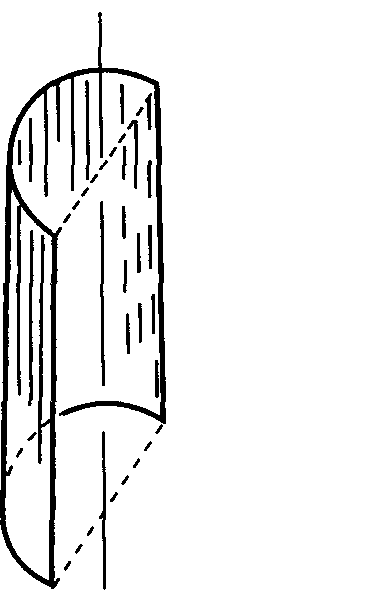

课程讲义 / 电磁学
ELECTROMAGNETISM
静电场与稳恒磁场
大学物理甲Ⅱ · 谢小平课程学习讲义（第九章—第十四章
14.3）
定义定理结论例题易错
这份讲义覆盖谢小平老师 2025 年 5 月 21 日至 10 月 22
日讲过的全部电磁学内容：真空中的静电场、导体与电介质、稳恒电流、稳恒磁场，以及磁介质的开头两节；2026
年 10 月 27、29
日两次课（李宏年老师）补上有磁介质时磁场的基本规律、铁磁质和电磁感应至感生电动势。课件里的例题、课上布置的作业和教材（吴泽华等《大学物理》中册）第九至十二章的全部例题、习题都已逐条核对；讲义挑典型的题完整讲，同型题附在小节末作习题，其余在“更多课本习题”里用一两行给出关键一步和答案。
这一版按“真题驱动”组织：2015—2026 年的 9 套期中卷、2 套期末卷和 2025
秋冬两个班的 8
份小测，凡在上面范围内的题都逐题核对过答案，放进对应小节。每一小节尽量用一道【真题】或【小测】例开头，第一行写出处、原卷分值和建议用时；然后是课件和教材的例题、定义、定理（教材证明过的也给出证明）；小节习题里真题、小测排在课本习题前面，其余真题收在“更多真题”折叠栏。第
0 单元是考试地图：题型、分值、各块内容的出现次数和备考用法；第 23
单元是四份限时卷。读的时候先遮住解答，按建议用时自己做。
预备知识只需要矢量运算、一元积分和简单的二重积分（球面、柱面上的面元）。全篇记
，；未说明时电势以无穷远为零。
学习路线
| 单元 |
主题 |
教材 |
课次 |
| 0 |
考试地图与备考方法 |
— |
— |
| 1 |
电荷与库仑定律 |
§9.1—9.2 |
0521 |
| 2 |
电场强度与连续分布 |
§9.3 |
0521、0526 |
| 3 |
电场线与电通量 |
§9.4 |
0526 |
| 4 |
高斯定理及其应用 |
§9.5 |
0604 |
| 5 |
静电场的环路定理 |
§9.6 |
0915 |
| 6 |
电势 |
§9.7 |
0915、0917 |
| 7 |
电场强度与电势的关系 |
§9.8 |
0917 |
| 8 |
静电场中的导体 |
§10.1 |
0922、1011 |
| 9 |
电容与电容器 |
§10.2 |
0924 |
| 10 |
电介质的极化 |
§10.3 |
0929 |
| 11 |
有电介质时的高斯定理 |
§10.4—10.5 |
0929 |
| 12 |
静电场的能量 |
§10.6 |
0929、1011 |
| 13 |
稳恒电流与欧姆定律 |
§11.1—11.2 |
1013 |
| 14 |
电动势与直流电路 |
§11.3—11.5 |
1013（自学） |
| 15 |
磁感应强度与洛伦兹力 |
§12.1 |
1013 |
| 16 |
毕奥–萨伐尔定律 |
§12.2 |
1013、1015 |
| 17 |
磁场的高斯定理与安培环路定理 |
§12.3 |
1015、1020 |
| 18 |
磁场对电流的作用 |
§12.4 |
1020、1022 |
| 19 |
带电粒子在电磁场中的运动 |
§12.5—12.6 |
1022 |
| 20 |
磁介质的磁化机理 |
§13.1—13.2 |
1022 |
| 21 |
有磁介质时的磁场（基本规律、铁磁质） |
§13.2 四—§13.4 |
1027 |
| 22 |
电磁感应（基本定律、动生、感生） |
§14.1—§14.3（至涡旋电场） |
1029 |
| 23 |
小测原卷与期中真题限时自测 |
— |
— |
| 24 |
综合练习与概念检查 |
— |
— |
0 考试地图与备考方法
这门课的成绩由期中、期末两次统一考试和平时成绩组成，平时成绩里最重的一项是课堂小测（老师叫“阶段性测验”）。本单元先说清楚三种考试各考什么、怎么给分，再说这份讲义怎么配合备考。统计依据是
2015—2026 年的 9 套期中卷（其中 2025—2026
一套来自试卷分析课件里的原题照片）、2
套期末卷（一套原卷、一套回忆版），以及 2025 秋冬两个班的 4
轮小测原卷与解答，共 8 份。
0.1 期中怎么考
期中由课程组统一命题，闭卷 120 分钟，满分 100
分，允许带无存储功能的计算器。题型在 2024 年换过一次：
| 年份 |
题型与分值 |
本讲义范围内 |
超出范围的内容 |
| 2015—2016 |
填空 14 题（56 分）+ 计算 5 题（44 分） |
约 62 分 |
互感、自感、涡旋电场、位移电流 |
| 2017—2018 |
填空 12 题（48 分）+ 计算 6 题（52 分） |
约 68 分 |
动生与感生电动势、自感、互感 |
| 2018—2019 |
填空 15 题（60 分）+ 计算 4 题（40 分） |
约 90 分 |
磁介质中的
、 |
| 2019—2020 |
填空 25 小题（100 分） |
约 92 分 |
铁磁质 |
| 2020—2021 |
填空 13 题（52 分）+ 计算 4 题（48 分） |
约 88 分 |
铁磁质的
、 |
| 2021—2022 |
填空 14 题（56 分）+ 计算 4 题（44 分） |
约 96 分 |
铁磁质 |
| 2023—2024 |
填空 15 题（60 分）+ 计算 4 题（40 分） |
约 92 分 |
磁介质中的环路定理、铁磁质 |
| 2024—2025 |
选择 10 题（40 分）+ 计算 4 题（60 分） |
约 96 分 |
磁化电流 |
| 2025—2026 |
选择 12 题（48 分）+ 计算 4 题（52 分） |
约 78 分 |
自感、电磁波、电磁感应涡流 |
谢小平老师 2025 年 10 月 22
日在课上说过题型的变化：“上个学期考试是选择题跟计算题，以前的考题是填空题跟计算题。”他也说过
2025 年课程负责人换了人，期中考到哪里要等通知；当年的期中定在 11 月 15
日前后（第九周周末）。从 2025—2026
那套卷子看，最后考到了电磁感应和电磁波的开头。所以今年也要做好“期中考到第
13 章以后”的准备，等课程组公布范围。
各块内容在 9 套期中卷里出现的情况：
| 内容 |
出现的卷数（共 9） |
题数 |
讲义位置 |
| 电势：叠加积分、零点、电场力做功 |
9 |
19 |
5.1、6.1—6.4、6.6 |
| 导体：静电平衡、空腔、接地、平行板 |
9 |
18 |
8.1—8.5 |
| 电介质：、、束缚电荷、并排与叠放 |
9 |
14 |
10.2、11.1—11.4 |
| 毕奥–萨伐尔：直线与圆弧的组合 |
9 |
12 |
16.1—16.3 |
| 面电流、旋转带电体、运动电荷的磁场 |
8 |
16 |
16.4、16.5 |
| 带电粒子运动、霍尔效应 |
8 |
13 |
15.1、19.1—19.3 |
| 安培力、电流间的作用 |
8 |
12 |
18.1、18.2 |
| 磁通量与安培环路定理 |
7 |
13 |
17.1—17.3 |
| 磁力矩与磁力的功 |
7 |
12 |
18.3、18.4 |
| 静电能、能量密度、用能量求力 |
6 |
12 |
12.1—12.3 |
| 电容：定义、三种电容器、串并联、插板 |
7 |
11 |
9.1—9.4 |
| 由电势求场强（梯度） |
6 |
6 |
7.2 |
| 高斯定理（球、柱、面对称） |
5 |
5 |
4.1—4.4 |
| 稳恒电流、电阻、电路 |
3 |
6 |
13.1、13.2、14.3、14.4 |
| 磁介质的分类与机理 |
2 |
2 |
20.1、20.2 |
读这张表要注意三点。
第一，每套卷子都有一道“直线加圆弧”求圆心磁场的填空或选择（16.2）。它几乎都在考同一个陷阱：几段电流在圆心产生的场方向不一定相同，要逐段判断方向再相加。
第二，“由电势函数求场强”（7.2）在 2015、2018、2019、2020 年都以 4
分填空出现，几乎原样重复：给
求
。
第三，大题最常考四类：同心或同轴的导体与介质（分区求
、、、、电势和能量），平行板插介质或插导体（能量变化和受力），旋转带电体的磁场与磁矩，长直导线旁线圈的受力。讲义里这四类都有真题例：原卷给了分步分值的（2023—2024
计算
1—4）写评分要点，其余写得分步骤。
0.2 小测怎么考
李宏年老师 2025 秋冬给两个班（周二四班、周三五班）各出了 4
轮小测，每轮 3—4 道题、满分 5 分，原卷都附有逐题解答。四轮的内容是：
| 轮次 |
内容 |
本讲义范围 |
| 第一次 |
静电场：带电圆环、圆盘的电势与电势能，插金属片或介质的电容器，同心球壳电容器 |
全部在范围内，第 23 单元原样给出 |
| 第二次 |
霍尔电场、三种磁介质的
–
曲线、磁力矩与磁力的功；电磁感应 |
前三类在 18.3、19.3、20.1；电磁感应等到下一章 |
| 第三次 |
光学：干涉、衍射、光栅、偏振、透镜成像 |
不在本讲义范围 |
| 第四次 |
量子：光电效应、德布罗意波、不确定关系、玻尔能级 |
不在本讲义范围 |
小测题有两个特点。一是每题都给分值，计算题要写过程，按步骤给分。二是不少题是往年期中填空的原题或小改编，例如第二次小测周二四班第
1 题就是 2020—2021 期中填空
10（霍尔电场方向）加问了大小。所以期中真题和小测互相印证，做熟一类就覆盖了另一类。8
份小测全部（包括光学、量子两轮）另做成了一页《大学物理小测题型池》。
谢小平老师 2025 年 9 月 15 日说明了他的阶段性测验：一学期至少 4
次、事先不通知；只要到场写上姓名学号就有一半分（“50
分起评”），另一半看卷面；另有少量分数给不定时的点名。他还强调了两条一票否决：平时成绩过低，或期末卷面低于
40
分，总评都不能及格。各班老师的规定可能不同，以本班老师的说法为准。
0.3 怎么用这份讲义备考
第一次学：每个小节开头的【真题】【小测】例题先自己做。遮住解答，按标注的建议用时写；做不出来就读解答，再读后面的教材例题和定理，弄清这道题用了哪条结论、为什么能用。读完回头把真题再写一遍。
做习题：小节习题里真题、小测排在课本习题前面，标题带【真题】【小测】。时间紧时每小节只做这些和作业题；“更多真题”“更多课本习题”折叠栏留到复习时扫一遍答案。
写过程：计算题按步骤给分。每道题至少写出四步：
- 分析对称性，说明用什么方法（高斯定理、叠加、环路定理……），画出高斯面或积分元；
- 写出所用的定理或公式；
- 代入、积分、化简；
- 写结论，矢量要写方向，结果要写单位。
讲义中【真题】例的解答按这个格式写。原卷给了分步分值的大题，末尾的评分要点照抄原卷分值；没给的写“得分步骤（原卷未给分步分值）”，只列步骤，不编分数。
限时自测：学完第 20 单元后，用第 23
单元的限时卷计时做：两份第一次小测原卷各 20 分钟，2024—2025、2025—2026
两套期中卷各按卷面时间。按评分要点或得分步骤打分，错题回到对应小节重做开头的真题例。
考前一周：按“第 0 单元 → 各小节的【真题】例 → 第 23
单元 → 第 24
单元概念检查”的顺序过一遍。李宏年老师在课上说过两句话可以作为提醒：考试里“特殊情况比普遍情况用得还多”，要把无限长直线、无限大平面、圆环轴线、均匀球这些特殊结果记熟；期末“会把课本上的例题原文不动地抄到试卷上”，教材例题必须会做。
1 电荷与库仑定律
电磁学从一个实验定律出发：两个静止点电荷之间的力。整个静电学都是这条定律加上叠加原理的推论。
1.1 库仑定律
氢原子里电子绕质子运动。是什么力把电子拴住？先比较两种可能的力有多大。
例 1 · 氢原子中电力与引力之比
（教材例 9.1）氢原子中电子与质子的距离约为
。已知
，，，。求两者之间的静电力、万有引力及其比值。
解。 静电力用库仑定律（定理
1），电子、质子电量大小都是
：
万有引力
两者之比
与距离无关（两者都与
成正比）。在原子、分子尺度上万有引力完全可以忽略；宏观物体之间电力不显著，是因为正负电荷几乎精确抵消（见本节末习题
9.1）。
题中用的静电力公式就是库仑定律。先交代电荷本身的性质和点电荷模型。
定义 1 · 电荷量及其基本性质
物体所带电荷的多少叫做电荷量（电量），符号
或
，是带符号的代数量。单位是库仑（），：电流为
时
内流过导线截面的电量。国际单位制里电流是基本量，电量是导出量。
- 两种电荷：正电荷与负电荷。同号相斥，异号相吸。带电体的电量是它所含正负电荷的代数和。
- 量子化：密立根油滴实验等表明，可观测的电量都是元电荷
的整数倍，（）。电子带
，质子带
。质子、中子由夸克组成，夸克带
、
的分数电荷，但至今没有观察到自由夸克；即使发现了，电量仍取不连续值，只是最小单元变小，量子化不受影响。
- 守恒：孤立系统中正负电荷的代数和不变，电荷只能从一个物体转移到另一个物体，或从物体的一部分转移到另一部分。摩擦起电、静电感应都是电荷的转移。微观过程同样守恒，例如电子与正电子湮没
，前后总电量都是零。
- 相对论不变性（教材叫运动不变性）：电量与带电体的运动状态无关，在不同参考系中测得的值相同。这一点与质量不同。
宏观带电体所含元电荷极多（），增减几个元电荷无足轻重，所以宏观问题里把电荷分布看成连续的，可以取电荷元
（2.2
节）。量子化与连续描述适用于不同尺度，并不矛盾。
定义 2 · 点电荷
带电体的线度远小于它到其他带电体（或场点）的距离，以致它的形状、大小和电荷分布对所讨论的作用可以忽略时，把它看成一个带电的几何点，叫做点电荷。
- 点电荷是理想模型，是否适用取决于距离之比：同一个带电球，在近处不是点电荷，在远处就是。
- 不能看成点电荷的带电体，总可以分成许多小块，每块是一个点电荷；库仑定律加叠加原理仍然适用（2.2
节）。
- 与元电荷的区别：点电荷说的是尺寸可以忽略，电量可以是任意值；元电荷
是电量的最小单元。
- 与试验电荷的区别：试验电荷（定义
3）是点电荷，还额外要求电量足够小，不改变原有的电荷分布。
定理 1 · 库仑定律
真空中两个静止点电荷
、，
受
的作用力
是从
指向
的位置矢量，
是两者的距离，。两种写法相同：
的大小是
，方向是
。
比例系数
（粗算取
），由实验测定。
叫做真空电容率（教材叫真空中的介电常数），单位也可写成
（法拉见第
9 单元）。写成
是为了让高斯定理等后面的公式不带
。本讲义为书写简便也用
，它不是玻尔兹曼常量
。
- 大小：，与两电量的乘积成正比，与距离的平方成反比。
- 方向：沿两点电荷的连线。电量带符号代入，方向自动正确：
时
沿
，背离
，相斥；
时沿
，指向
，相吸。
受
的力
，满足牛顿第三定律。
- 叠加原理：多个静止点电荷同时存在时，实验表明每一对之间的力仍由库仑定律给出，不因其他电荷存在而改变。
受的合力等于各点电荷单独存在时对它的力的矢量和：
是
到
的距离，
是从
指向
的单位矢量。各力方向不同时先分解再相加。带电体不能看成点电荷时，分成电荷元后积分（结论
2）。
- 适用范围：真空中、静止的点电荷。“静止”指场源电荷相对观察者静止；电荷运动时，彼此之间除电力外还有磁力，见第
15、16 单元。有电介质时见第 10 单元。
库仑在 1785
年用自制的扭秤测出带电小球之间的力：细丝的扭转角与力成正比，改变小球间距和电量，得到力与电量乘积成正比、与距离平方成反比。扭秤测量的误差在百分之几，后来改为检验由平方反比律推出的结论（高斯定理，第
4 单元，平方反比不严格成立就得不到它），1971 年的实验证实距离的指数与 2
的偏差小于
。库仑定律和叠加原理一起构成静电学的实验基础。
习题 1 · 漏电的两个悬挂小球
练习 · 先独立作答
（习题 9.3）两个质量均为
、带等量同号电荷
的小球，用长
的细线悬于同一点。平衡时两球间距
远小于
。（1）证明
；（2）若
，，，求
；（3）若两球以
的速率漏电，求此时两球相互靠近的速率。
解析
每个球受重力、拉力、库仑力三力平衡，，小角度时
，解出
。第（3）问对
求时间导数。答案
；两球以约
相互靠近。
解答
（1）列平衡方程。 设细线与竖直方向成
。对一个球，水平方向的库仑斥力
背离另一球，竖直方向重力
，拉力
沿线指向悬点：
小角度近似。 球到中垂线的距离是
，。
时
很小，：
（2）解出
。
（3）对时间求导。
由（1），，
是常量：
漏电时
，，间距减小，两球以
相互靠近。
检验：
的量纲
；（2）中
，小角度近似成立。
习题 2 · 怎样分电荷斥力最大
练习 · 先独立作答
（习题 9.2）把电量
分给相距一定的两个小球，一个带
，另一个带
。
为多少时两球间斥力最大？
解析
斥力
，对
求极值。答案
，最大斥力
。
解答
写出斥力。 设两球距离为
，看成点电荷：
求极值。
是极大值，。
检验：
或
时一球不带电，；
关于
对称，极值必在中点。
更多课本习题 · 1 道
- 习题 9.1 两个铜球，质量均为
，相距
（题目未给数据，补：铜的摩尔质量
，原子序数
29）。（1）每个球含多少电子？（2）要使两球相互吸引的力为
，需从一球移到另一球多少电量？占总电子数的多少？
解。 （1）物质的量
，每个原子
29
个电子：。（2）移走
后一球带
、另一球带
，引力
，，即
个电子，占
。一万牛的力只要移动约一亿分之二的电子，说明宏观物体的正负电荷抵消得极精确。
2 电场强度与连续分布
库仑力是“隔空”作用的吗？近代的看法是：电荷在周围空间激发电场，另一电荷受的是所在处电场的作用。描述电场的第一个量是场强
。
2.1 场强与点电荷系
先用最简单的点电荷系——一对等量异号电荷——练习矢量叠加。
例 2 · 电偶极子中垂线上的场强
（教材例 9.2，课件 0521）相距
的两个点电荷
、
组成电偶极子。求两电荷连线的中垂线上、距中点
处
点的场强；并讨论
的情形。
中垂线上的场：O 是两电荷连线的中点，x 是
O 到 P 的距离，r 是每个电荷到 P 的距离，θ 是连线与 r
的夹角。两电荷的场大小相等，沿 x 方向的分量相消，沿 z
方向（平行于连线）的分量相加，合场 E 指向 −z。
解。 用场强叠加原理（结论 1）。
建坐标。 以中点
为原点，
轴沿两电荷连线、从
指向
，
轴沿中垂线指向
。
在
，
在
，
在
。
求各自的场。 两电荷到
的距离相同：
两个场的大小相等：
沿
指向
的方向，即沿
；
沿
指向
的方向，即沿
。
分解与抵消。 图中
，。
合成。
方向沿
：平行于两电荷连线，从
一侧指向
一侧。
远场近似。
时
，
检验：
时
，等于两个电荷在中点各自的场
之和，两者在中点同向。
与
只以乘积
出现，这个乘积就是描述偶极子的量。
定义 3 · 电场强度
在场中某点放入试验电荷
，它受电场力
，定义该点的电场强度（简称场强）
(1)
试验电荷要满足两个条件：电量足够小，它对场源电荷的作用不改变场源的分布，因而不改变原来的场；线度足够小，可以看成点电荷，所测的才是一个点的场。
(2) 与
无关：同一点上
与
成正比，比值
只由场源电荷和场点位置决定，反映电场本身的性质。
(3) 方向：与正试验电荷在该点受力的方向相同。
(4)
单位：；与
等价，因为
。
(5)
矢量场：
一般随位置变化，记作
，求场强要给出大小和方向。各点
的大小和方向都相同的场叫匀强电场（均匀电场）。
(6) 与电场力的区别：电场力
是场对某个电荷的作用，与该电荷的电量和正负有关；负电荷受力与
反向。
是场在该点的属性，该点不放电荷时也存在。
定义 4 · 电偶极矩
相距
的一对等量异号点电荷
、（）叫电偶极子。记
为从
指向
的矢量，大小为
，电偶极子的电偶极矩
(1)
大小：，
取电量的绝对值。
(2) 方向：从负电荷指向正电荷。两电荷之间的电场线从
指向
，与
反向。
(3)
单位：。
(4) 理想模型：场点到偶极子的距离
时，偶极子可以看成一个点，它在远处的场只由
决定，
和
单独怎样取都不影响（例 2
的远场、下面的轴线远场）。
与
可比时，要按两个点电荷分别计算。
用
写，例 2 的远场是
：中垂线上的场与
反向。
结论 1 · 点电荷与点电荷系的场强
点电荷
在距离
处产生
- ：场源电荷，带正负号；
- ：从场源电荷到场点的距离；
- ：从源点指向场点的单位矢量。
时
沿
，背离电荷；
时
与
反向，指向电荷；
- ：真空电容率。
点电荷系的场强是各点电荷单独存在时场强的矢量和（场强叠加原理）：
是第
个电荷到场点的距离，
从第
个电荷指向场点。各项方向不同时，先分解到坐标轴上再求和。
适用条件：真空中静止的点电荷；场点不在点电荷上（
时点电荷模型失效）。连续分布的电荷见 2.2 节结论 2。
证明。 由定义 3
与库仑定律，，除以
即得第一式；对点电荷系，合力是各力之和（力的叠加原理），除以
即得第二式。
同样的方法算偶极子轴线上（延长线上）距中点
处（，场点在
一侧）的场。两个场都沿轴线，
的场背离
，
的场指向
，方向相反，
更近：
时
，
方向与
相同。两种位置的远场对照：
| 场点位置（距中点
） |
大小 |
与
的方向关系 |
矢量式 |
| 轴线（延长线）上 |
|
同向 |
|
| 中垂线上 |
|
反向 |
|
远处偶极子的场按
衰减，比点电荷的
快：两个异号电荷从远处看几乎重合，场大部分抵消了。
易错 · 偶极矩的方向
从负电荷指向正电荷，而电场线从正电荷出发。轴线上远场与
同向，中垂线上远场与
反向，两者大小差 2
倍。只记“”而不记方向和系数，代数和就会出错。
习题 3 · 线性电四极子轴线上的场
练习 · 先独立作答
（习题 9.4）在一条直线上依次放
、、，相邻间距为
。求延长线上距中心
（）处的场强，并证明
，其中
。
解析
三个点电荷的场都沿轴线，叠加得
，用
展开到二阶，零阶、一阶项相消。答案
，沿轴背离中心。
解答
建坐标。 以中心
为原点，轴线为
轴，两个
在
，场点在
。
各自的场。 三个场都沿
轴，取
为正：
处的
贡献
（背离它，沿
）；原点的
贡献
（指向原点，沿
）；
处的
贡献
（沿
）。
通分（精确式）。
远场展开。 记
，：
精确式取
也得到同一结果：。
方向。
（精确式中
），沿
，即沿轴背离中心；由对称性，另一侧的延长线上也背离中心。
检验：总电荷
，点电荷项
消失；电偶极矩
，偶极项
也消失，所以领头项按
衰减，比偶极子还快。
2.2 连续分布：有限长直线
宏观带电体不是几个点电荷。办法是把它切成许多电荷元
，每个看成点电荷，再积分。
例 3 · 有限长均匀带电直线外一点的场强
（教材例 9.5，课件 0521）长为
的直线均匀带电，线密度
。
点到直线的垂直距离为
。从直线的两端向
作连线，它们与直线正方向的夹角分别为
、。求
点的场强。
有限长直线的微元 dq、到 P 的距离 r 与角
θ。垂足为原点，沿直线取 x 轴，y 轴从直线指向 P。
解。 用点电荷场强公式和场强叠加原理（结论 2
的步骤）。
建坐标、取电荷元。 以
在直线上的垂足
为原点，沿直线正方向取
轴，
轴从
指向
，。在
处取长
的一段，电量
，看成点电荷。它到
的位矢为
，距离
；记这条位矢与
方向的夹角为
，则
写
的分量。
在
的场大小
方向沿从
指向
的位矢，单位矢量为
，所以
不同电荷元的
方向不同，只能对
、
分别积分，不能对
积分。
统一变量。
、、
只有一个独立，统一成
。由上面两式相除，；由
得
：
（垂足右侧
时
，，与
一致。）对
求微分，：
代入
：
从起点端增到终点端时，
单调地从
增到
，这就是积分限。
积分。
讨论。 无限长直线
，：，，垂直于直线。半无限长直线、
在端点的垂线上（，）：，，两分量大小相等，
与直线成
、偏向没有电荷的一侧。其余情形见结论
3。
定义 5 · 电荷密度与电荷元
带电体中取一个宏观无限小的部分，它带的电量叫做电荷元
。按电荷分布的几何形状，用三种电荷密度描述：
| 分布 |
密度 |
定义式 |
单位 |
电荷元 |
| 体分布 |
体电荷密度
|
|
|
|
| 面分布 |
面电荷密度
|
|
|
|
| 线分布 |
线电荷密度
|
|
|
|
(1) 宏观无限小：极限里的
（、）比带电体的尺寸和到场点的距离小得多，所以电荷元可以看成点电荷；又比原子尺度大得多，里面含有大量基本电荷，所以电量可以看成连续变化。
(2)
正负与均匀：密度是代数量，带负电处为负。密度处处相同叫均匀分布，此时
、
或
；不均匀时密度是位置的函数，总电量
（或
、）。
(3)
理想模型：厚度远小于到场点的距离时，体分布看成面分布；横截面线度远小于到场点的距离时，看成线分布。面分布、线分布是这种近似下的模型，不是另一种电荷。
(4) 电荷元的场：电荷元看成点电荷，在距离
处的场
，
从
指向场点；由场强叠加原理，总场
这是矢量积分。线分布是一重积分，面分布、体分布在直角坐标下分别是二重、三重积分；分割时选圆环、细条等已知结果的单元，可以降成一重积分。
结论 2 · 连续分布求场强的步骤
- 建坐标、取电荷元：按对称性建坐标，在一般位置取
（、
或
），写出它到场点的距离
和方向。
- 写分量：把
分解成
、（、），各
方向不同时不能直接对大小积分。
- 用对称性：找出互相抵消的分量，只积剩下的。
- 统一变量、积分：把
、、角度统一成一个变量（直线选角
），定上下限后积分。
- 检验：查量纲，再看无限长、远处（回到点电荷）等极限情形。
结论 3 · 有限长均匀带电直线的场
- ：场点到直线所在直线的垂直距离（场点到垂足的距离）；
- ：从直线的正方向（）量到“电荷元指向场点”的连线的夹角，；
- ：起点端（
较小的一端）到场点连线的
；：终点端的
，；
- ：平行于直线，正值沿直线正方向；：垂直于直线，正值从直线指向场点（
时
）；
-
时两式照用，两个分量一起变号。
| 情形 |
|
|
|
| 无限长 |
|
|
|
| 半无限长（），场点在端点的垂线上 |
|
|
|
| 半无限长（），场点在端点的垂线上 |
|
|
|
| 场点在中垂线上 |
， |
|
|
| 场点在延长线上，距近端
|
公式不适用（） |
沿直线背离直线： |
|
证明。 前两式见例
3。前三行代入角度。中垂线上两端对称，，，，得
，，再代入
。延长线上
，例
3 的换元失效；这时各
都沿直线、同向，直接积分：以场点为原点、
为电荷元到场点的距离，。
时
，回到点电荷。
易错 · 角度的定义要和积分限一致
公式
中的
是“直线正方向到
连线”的夹角，
对应起点端、
对应终点端。课本、课件的图上角度定义各有不同，套公式前先核对，否则会把
与
、
与
弄混。拿不准时直接从积分出发。
有的答案卷或课件用从垂线量起的角
（，电荷元在垂足正方向一侧时
）。由
、：
两套写法不要混用；用无限长检验（，），必须得到
、。
习题 4 · 有限直线延长线与中垂线上的场
练习 · 先独立作答
（习题 9.5）长
的直线
均匀带电，。求：（1）在
延长线上、距
端
的
点场强；（2）在中垂线上、距直线
的
点场强。
解析
（1）延长线上各
的场同向，直接积分
；（2）中垂线上
，平行分量抵消。答案：，沿
方向；，沿中垂线背离直线。
解答
。
（1）延长线上的
。
记
，
为电荷元到
的距离，
从
到
。各电荷元都在
的同一侧（
侧），，场都从电荷元指向
，即沿
方向，可以直接对大小积分：
代入：
方向沿
由
指向
。
（2）中垂线上的
。
，垂足在
中点，两端对称：，
由结论
3，，
，，方向沿中垂线背离直线。
检验：，
时趋于无限长直线的
；
在
时趋于点电荷的
。
习题 5 · 半无限长直线端点旁的场
练习 · 先独立作答
（习题 9.6）均匀带电的半无限长直线沿
放置，线密度
。求
处的场强，。
解析
从源点
指向场点的矢量是
，两个分量都为负，不能照搬无限长直线的横向抵消，两个分量分别积分。答案
，大小
，指向左下，与两负半轴各成
。
解答
取电荷元、写分量。 在
处取
，它到
的位矢
，。
积分。
两个原函数：，。
合成、定方向。 大小
；两分量都为负且相等，方向指向左下，与
轴、
轴各成
。
检验：与结论 3 表中“半无限长，场点在端点的垂线上”一致（两分量大小都是
，平行分量背离电荷一侧，垂直分量背离直线）。与关于
轴对称的另一半（）拼起来，横向抵消，竖直分量加倍为
，回到无限长直线的
。
2.3 圆环与圆弧
圆形电荷的特点是：所有电荷元到圆心、到轴上一点的距离都相同。
例 4 · 均匀带电圆环轴线上的场强
（教材例 9.3，课件 0521）半径
的细圆环均匀带电
。求轴线上距环心
处的场强。
圆环的电荷元在轴上 P 点的场 dE
分解为平行于轴和垂直于轴的分量。图中的 R 是环半径，r 是电荷元到 P
的距离，x 对应正文 z。
解。 按结论 2 的步骤。
取电荷元。 以环心为原点，沿轴取
轴。环上任取
，它到
的距离对所有
相同：
沿从
指向
的方向，与轴的夹角为
，，。
对称性消去横向分量。 把
分解为沿轴分量
和垂直于轴的分量
。环上关于环心对称的两个电荷元，
大小相等、方向相反，两两相消，。只剩沿轴分量。
积分。
、
对所有
相同，提到积分号外：
时沿轴背离环心，
时指向环心。
求最大值。 对
求导：
得
；
时导数为正，
时为负，所以这里是最大值。代入
：
检查。
（环心）；
时
，环看成点电荷。
再看一个电荷不均匀、对称性被破坏的圆弧。
例 5 · 非均匀带电四分之一圆弧在圆心的场强
（课件 0526）半径
的四分之一圆弧位于第一象限，圆心为
。弧上电荷线密度
（），
是电荷元的位置角，从
轴量起，。求
点的场强。
圆弧上的微元与分量。正的电荷元在 O
处产生朝向左下的场；θ 定位的是源点，不能把这个角直接当作场与 +x
方向的夹角。
解。
取电荷元。 在位置角
处取弧长
，，到
的距离为
：
写分量。 源点在
，场方向从源点指向
，单位矢量为
：
随
变，没有对称性可用，两个分量都要积。
积分。
分部积分：，。
结果。
指向左下，与
方向成
。
分量较大，因为靠近
轴（
大）的电荷更多。
检查。
无量纲，
的单位是
，
的单位是
。
两道题里电荷元到场点等距，
提到积分号外，剩下方向因子的积分。均匀分布用对称性消去分量（例
4）；不均匀分布对每个分量分别积分（例 5）。
结论 4 · 圆环轴线上的场
- ：环上总电量，均匀分布；
- ：环半径；
- ：场点沿轴到环心的坐标，
轴垂直于环面、过环心；
- ：场强沿
轴的分量，垂直于轴的分量为零。
时
处
、
处
，两侧都背离环心；
时都指向环心。公式对
直接成立，不必另算。
| 情形 |
|
| 环心
|
|
| 近环心
|
，与
成正比 |
|
最大， |
| 远处
|
，同点电荷 |
证明。 公式与
见例
4。
时
；
时
。
结论 5 · 带电圆弧在圆心的场强
半径
、线密度
均匀、所对圆心角为
（）的圆弧，在圆心
的场强
- ：圆弧两端到
的半径之间、包含圆弧的那个角（弧长
，电量
）；
- 方向：沿圆弧的对称轴（
与圆弧中点的连线）。
时从圆弧中点指向
并继续向前，即背离圆弧；
时指向圆弧中点。
| 情形 |
|
|
| 完整圆环 |
|
|
| 半圆 |
|
|
| 四分之一圆弧 |
|
|
| 短弧
|
|
，同点电荷 |
| 留小缺口
的圆环 |
|
，指向缺口 |
非均匀分布
（
是电荷元的位置角，从
轴量起）时，没有对称轴可用，逐分量积分：
积分限是圆弧两端的位置角。
证明。 以对称轴为
轴、背离圆弧为正，电荷元的位置角
（从圆弧中点量起）取
到
。
在
的场大小
，沿
的分量为
，垂直分量
关于
奇对称、积分为零。
非均匀的式子就是例 5 的写法：源点在
，场方向
，。
习题一 · 留缺口的圆环：补偿法（结论 15）
习题 6 · 留有小缺口的圆环中心场
练习 · 先独立作答
（习题 9.7）半径
的细圆环留有
的小缺口，总电量
均匀分布在剩余部分。求环心的场强。
题 9.7 图：圆环在右侧留有 2.0 cm
的缺口，O 为环心。
解析
补偿法（结论 15）：补上缺口成完整圆环，环心场为零，所以剩余部分的场 =
（缺口那一小段电荷的场）；缺口很小，看成点电荷
。答案
，从环心指向缺口。
解答
线密度。
补偿。 在缺口处补上线密度同为
的一小段，电量
。补完的圆环在环心的场为零：
缺口段的场。
，看成在缺口处的点电荷：
，它在环心的场从缺口指向环心，即背离缺口。
结果。 剩余部分的场
，方向与之相反：从环心指向缺口。
检验：直接用结论
5，，，方向背离圆弧中点、即指向缺口，与补偿法一致（相对差小于
）。
习题二 · 非均匀分布：逐分量积分（结论 5）
习题 7 · 线密度按
变化的圆环
练习 · 先独立作答
（习题 9.10）半径
的细圆环，线密度
，
是半径与
轴的夹角。求环心的场强。
题 9.10 图：θ 从 +x 轴量起。
解析
，负密度就是负电荷；场方向
，两个分量分别积分。答案
。
解答
取电荷元。 位置角
处
（
的左半环带负电），到环心距离
，（带符号）。
写分量。 场方向单位矢量
：
积分。
方向。
，沿
。右半环的正电荷推开、左半环的负电荷吸引，在环心都产生向左的场。
检验：总电量
，场却不为零，因为正负电荷分开放置；，分布关于
轴对称，所以
。
习题三 · 组合图形：拆段叠加
习题 8 · 发夹形带电线在圆心的场
练习 · 先独立作答
（习题 9.9）一根细线弯成发夹形：半径
的半圆弧加上两根平行的半无限长直线，直线与半圆的两端相接，如图。细线均匀带电，线密度为
。求圆心
的场强。
题 9.9
图：半圆弧在左，两根半无限长直线向右延伸，相距 2R。
解析
拆成半圆弧和两根半无限长直线。半圆弧用结论
5（），向右
；每根直线用习题
5（或 结论 3，取
），各有向左
和竖直
。答案
。
解答
取
为原点，
向右（直线延伸的方向），
向上。设
。
半圆弧。 圆弧在左，位置角
从
到
，对称轴是
轴，圆弧中点在
。由结论
5，：
背离圆弧，沿
。逐分量核对：，。
上面的直线。 从
沿
到无穷远。
在端点的垂线上，距离
。
处的
指向
的矢量为
：
（同习题 5；或用 结论
3，，：沿直线方向
，垂直方向
、从直线指向
即
。）
下面的直线。 与上面的关于
轴对称：，。
合成。
检验：上下对称只能保证
；
来自具体数值，半圆的
恰好等于两根直线横向分量之和。
2.4 圆盘与面分布
面分布可以切成一圈圈细环，每个细环直接用圆环轴线的结果（结论
4）。
例 6 · 均匀带电圆盘轴线上的场强
（教材例 9.4，课件 0521）半径
的薄圆盘均匀带电，面密度
。求轴线上距盘心
（）处的场强。
把圆盘切成同心细环。图中的 R
是盘半径，r、dr 是细环的半径与宽度，x 对应正文 z。
解。 按结论 2 的步骤，微元取细环。
切成细环。 取半径
、宽
的同心细环（）。它的面积是半径
与
的两圆面积之差，，带电
用圆环轴线结果（结论 4）。
在这个细环的轴线上，距环心
。把结论
4 中的
、
换成
、：
时每个细环的场都沿
，各
同向，矢量和化为大小之和。
积分。 令
，；
时
，
时
：
方向沿轴背离盘面（）。
极限。
（或
）：，，与距离无关，这就是无限大带电平面的场（结论
7）。
：
保留到
项，，
回到点电荷。
结论 6 · 均匀带电圆盘轴线上的场
- ：盘的电荷面密度，单位
；
- ：盘的半径；
- ：场点在轴线上的坐标，从盘心量起，取轴的某一侧为正；
是场点到盘面的距离；
- 方向：沿轴线，
时背离盘面，
时指向盘面；轴线外的点不能用这个公式。
| 情形 |
近似 |
场 |
| （贴近盘面，或
） |
|
，无限大平面（结论
7） |
|
|
，，点电荷 |
| （盘的另一侧） |
关于盘面镜像对称 |
大小把
换成
，方向沿
（） |
证明。
见例
6。
时，把整个圆盘关于盘面作镜像，电荷分布不变，所以
处的场是
处的场的镜像：大小相同，轴向分量反号。合起来就是含
的写法。
结论 7 · 无限大均匀带电平面的场
- ：电荷面密度，单位
；
的单位
，即
；
- ：平面的单位法向量，从平面指向场点所在的一侧；
- 方向：垂直于平面，
时两侧都背离平面，
时两侧都指向平面；
- 大小与场点到平面的距离无关：平面两侧各是匀强场，等大反向；穿过平面时
的法向分量跃变
；
- 理想模型与适用条件：实际的带电板是有限大的，只有场点到板的距离远小于板的线度、且远离板的边缘时（例
6 中
）才能用；距离与板的尺寸可比，或靠近边缘，要用结论
6 或直接积分；
- 与导体表面的区别：
是单独一个带电面在两侧产生的场；导体表面外侧的场是
，那是导体上全部电荷共同作用、使导体内部场为零的结果，后面讲导体时再推，两者不要混用。
证明。 在结论 6 中令
，得
。对平面外任一点
，总可以取以
的垂足为圆心的圆盘，
都在它的轴线上，所以离平面任意距离的点场强都是同一个值，方向垂直于平面，两侧都是匀强场。第
4 单元会用高斯定理再证一次。
易错 · 细环不是点电荷
对圆盘积分时，不能把细环当作点电荷，写
再对
积：细环上各点的场方向不同，它们垂直于轴的分量已经相消，环的场是沿轴分量之和，必须用环的轴线场（结论
4）。错误写法积出
，
时发散，与结论 7
矛盾。分割的原则是：分出的微元，它的场必须是已知的。
习题 9 · 半球壳球心的场
练习 · 先独立作答
（习题 9.8）半径
的半球壳均匀带电，面密度
。求球心的场强。
解析
沿极角切成环带，球心在每个环带的轴线上，用结论 4 后对极角积分。答案
，与
无关；
时沿对称轴从顶点指向开口。
解答
建坐标。 球心
为原点，对称轴为
轴，半球顶点在
方向。极角
从
轴量起，。
切环带。 极角
处、宽
的环带：环半径
，环心在轴上
处。
用结论 4。
在环带轴线上，距环心
；环上各点到
的距离
。
判方向。
时环带的场沿轴背离环心。
在环心下方（），所以
沿
；各环带同向。
积分。
大小
，
时从顶点指向开口。
检验：，距离的平方也
，所以结果与
无关；另一半球壳在
的场等大反向，整个球壳内场为零，与第 4 单元的结果一致。
习题 10 · 带圆孔的无限大平面
练习 · 先独立作答
（习题 9.21）无限大均匀带电平面，面密度
，上有半径
的圆孔。求孔的轴线上距孔心
处的场强。
题 9.21 图：无限大平面上挖去半径 R
的圆孔，P 在孔轴上，距平面 z。
解析
补偿法（结论 15）：带孔平面 =
完整平面（）+
孔处半径
的圆盘（），分别用结论
7 和结论 6。答案
，
时沿轴背离平面。
解答
取孔心为原点，
轴沿孔的轴线指向
一侧（）。
补偿。 带孔平面 = 完整平面（面密度
）+
填满圆孔、面密度
的圆盘。
完整平面（结论
7）：，
时背离平面，沿
。
圆盘（结论 6）：大小
，负电荷的场指向盘面，沿
。
合成。 两者共线，沿
取正：
时沿轴背离平面。
也可以直接积分：把带孔平面切成
的细环，与例 6 相同，
结果相同。
检验：（孔心），四周电荷对称；
或
时趋于完整平面的
。
更多课本习题 · 1 道
- 习题 9.18 无限长半圆柱面薄筒，半径
，面密度
，求轴线上的场。题图：

答案
，垂直于两条边线所在的平面，
时从柱面一侧指向开口一侧。
解答。 轴线为
轴，柱面占
的一半，柱面上的点位于
，。
切成直线。 取宽
的无限长窄条，看成无限长直线，。它到轴线的距离为
，由无限长直线的场：
判方向。
时场从窄条指向轴线，方向
：
积分。
分量关于
平面对称相消；合场沿
，从柱面指向开口。检验：另一半柱面给出等大反向的场，整个圆柱面内场为零。
2.5 带电体之间的作用力
求一个带电体对另一个带电体的力，就是先求前者的场，再对后者的电荷元求
。
例 7 · 两根平行无限长直线间的力
（习题 9.15）两根平行的无限长带电直导线，线密度分别为
、，相距
。求每根导线单位长度所受的静电力。
解。 用结论 8。
导线 1 在导线 2 处的场。 由结论
3（无限长，，），无限长直线在距它
处的场
垂直于导线
1，
时指离导线 1。导线 2 上各点到导线 1 的距离都是
，所以
在导线 2 上处处相同。
导线 2 取微元求力。 在导线 2 上取长
，，
各段
同向（在两线所在平面内，垂直于导线）。
单位长度的力。 长
的一段受力
，所以
定方向。 取从导线 1 指向导线 2 的单位矢量
，带符号写
，则
。
时沿
，背离导线
1，相斥；
时指向导线 1，相吸。导线 1 受力是
乘导线 2 在它那里的场
，与导线
2 受力等大反向。
检查。 量纲
，是单位长度的力。
结论 8 · 用
求带电体之间的力的步骤
- 选施力体求其场：分清谁对谁施力，用结论 2
求施力体在受力体所在各点的场
。
- 不用自身场：受力体自己的场对自己的合力为零，
里只算施力体的电荷。
- 在受力体上取
：
在受力体上处处相同时
，否则取
写
。
- 分量积分：各
方向不同时先分解，用对称性去掉相消的分量，再对剩下的分量积分。
- 检查：反过来求施力体受力，应等大反向（牛顿第三定律）；两体相距很远时，应回到点电荷的库仑力
。
“场随位置变，就先取微元再积分”，这条在求力、求功、求通量时都一样（谢老师
0526 课强调）。
习题 11 · 两根共线带电细棒之间的力
练习 · 先独立作答
（课件 0526）两根细棒在同一直线上，长度均为
，线密度分别为
、，相邻两端间隙为
。求两棒之间的静电力。
先求左棒在右棒各位置的场，再对右棒上的受力积分。课件用
I 表示间隙，正文记 d；x 是源点，x′ 是右棒上的受力点。
解析
用结论 8：左棒在右棒
处的场
随位置变，要在右棒上取
再积分。答案
，同号相斥、异号相吸。
解答
用结论
8。原点取在左棒右端（图中原点在左棒左端，平移不影响结果），左棒占
，右棒占
。
左棒在右侧的场。 左棒上
处的
在
处的场沿
（）：
各
同向，直接对大小积分：
右棒取微元求力。
随
变，所以不能写
。在右棒
处取
：
各段
都沿
轴。
积分。
定方向。
时
，右棒受力沿
，背离左棒，相斥；
时相吸。左棒受右棒的力等大反向。
检查。
时，
，回到两个点电荷
、
的库仑力。
课件 0526 还给了另一种做法：两棒都分割成点电荷，对库仑力求二重积分
。先对
积分得到的正是上面的
，两种做法是同一个积分。
3 电场线与电通量
上一单元的积分题往往很繁。如果电荷分布有高度对称性，有更快的办法——高斯定理。为此先引入电通量。
3.1 电场线与电通量
“穿过一个面的电场线有多少条”可以精确地计算出来。
例 8 · 匀强电场穿过半球面的电通量
（课件 0526）匀强电场
平行于半球面的对称轴，半球面半径为
，开口一侧正对电场。规定半球面的法线向外，求通过半球面的电通量。
沿同一极角取一整条环带，环带上 E
与法向的夹角相同。带宽沿球面量取，是 R
dθ，不是投影平面上的径向宽度。
解法一（直接积分）。 用定义 6 的
。
分割成环带。 以对称轴为极轴，从顶点量极角
。同一极角处的一整条环带上，外法线与
的夹角都等于
，
在环带上是常量。
求环带面积。 环带的半径
，周长
；宽度沿球面量，是弧长
：
写环带的通量。
积分。 顶点处
，开口边缘处
：
解法二（闭合面）。
补成闭合面。 用开口处半径为
的圆面
把半球面封闭。闭合面取外法线：半球面上就是题目规定的向外法线，
上的外法线与
反向（）：
用电场线连续。
匀强电场区域内没有电荷，电场线不会在其中起止。从
穿入的每条电场线都从半球面穿出一次，其余电场线不与闭合面相交。净穿出条数为零：
检验：结果为正，与“电场线从半球面向外穿出”一致；两种解法结果相同。
结果等于半球在垂直于
的平面上的投影（半径
的圆）面积乘
，这对匀强场普遍成立，见结论
9。
定义 6 · 电场线与电通量
电场线：为形象描述电场而人为画出的一族有向曲线，不是真实存在的线。
(1) 方向：线上每一点的切线方向是该点
的方向，箭头沿
。
(2) 密度约定：在垂直于
的面元
上穿过的条数
满足
。电场线越密，场越强。
面元矢量：，大小为面元面积
，方向为面元的单位法向
。
(1)
开曲面的法向有两个可选方向，计算前先规定一侧，整个曲面上所有面元都朝同一侧取。
(2) 闭合曲面一律取外法线（指向闭合面外）。
电通量（电场强度通量）：通过面元的电通量
是
与
的夹角，
是面元在垂直于
的平面上的投影。通过曲面
的电通量是对各面元求和（第二类曲面积分）：
- 单位：，等价于
。
- 标量，可正可负。
为正，
为零，
为负。开曲面的符号依赖于所选法向，法向反过来通量变号；闭合面取外法线后，正号表示净穿出，负号表示净穿入。
- 物理意义：按上面的密度约定，
等于穿过该面的电场线条数（代数和）；闭合面的
是净穿出的条数。
- 特例：匀强电场穿过面积为
的平面，法向与
成
角时，。
- 适用范围：定义对任何矢量场都成立，不要求静电场或匀强场。
- 与场强的区别：
是某一点的矢量；
属于一个面，是标量。，场强就是垂直面上的“通量密度”。
左图为等量异号电荷，右图正电量大于负电量，多余的场线伸向无穷远。沿箭头看方向，垂直于箭头比较疏密。
静电场的电场线有三条性质：（1）起于正电荷（或无穷远），止于负电荷（或无穷远），不会在无电荷处中断；（2）任意两条电场线不相交（一点只有一个场强方向）；（3）不形成闭合曲线。第（3）条是环路定理（第
5 单元）的推论。
闭合面一律采用外法线：上侧穿出，通量为正；下侧穿入，通量为负。
闭合面上，穿出处
，通量为正；穿入处为负。总通量就是“净穿出的电场线条数”。
结论 9 · 电通量的计算：投影面积与闭合面
匀强电场中的任意开曲面。
为常矢量时可以提到积分号外：
- ：曲面在垂直于
的平面上的有符号投影面积，按所选法向，
的部分计正、
的部分计负；
- 每条电场线只穿过曲面一次（各处
同在
一侧，如例 8
的半球面）时，
就是投影图形的面积，再按穿过方向定符号；
- 前提：
在整个曲面上大小、方向都不变。非匀强场不能用。
闭合面法。 开曲面
与另一个面
合成闭合面，闭合面内没有电荷时，净穿出的电场线为零：
选成平面，就把曲面积分换成平面上的乘法。闭合面内有电荷时，总通量由高斯定理给出（第
4 单元）。
|
与法线的夹角
|
|
通量 |
闭合面（外法线）上的含义 |
|
|
正 |
电场线穿出 |
|
|
零 |
电场线贴着面走，不穿过 |
|
|
负 |
电场线穿入 |
证明。 匀强场
为常矢量，；，
正是面元的有符号投影，求和得
。闭合面法：面内无电荷时电场线不在面内起止，每条穿入的线都要穿出，净穿出条数
。
易错 · 开曲面的符号与环带宽度
开曲面的通量没有“自然”的正负，必须先说明法向；同一曲面法向反过来，答案变号。闭合面不能自选，只能取外法线。例
8 的环带宽度是沿球面的弧长
，写成投影平面上的径向宽度
会得到
，是错的。
习题 12 · 非匀强场穿过立方体的通量
练习 · 先独立作答
（习题 9.11）空间电场
，
为常数。边长为
的立方体如图放置，左、右两个面分别在
与
处。求：（1）通过立方体表面的电通量；（2）立方体内的总电荷。
题 9.11 图：立方体的左面距 yz 平面为
a，棱长为 a。
解析
只有
分量，只有垂直于
轴的左、右两面有通量，每个面上
是常量。（1）；（2）用第
4
单元的高斯定理，。
解答
定法线。 闭合面取外法线：右面
，左面
，上下、前后四个面的法线垂直于
轴。
四个侧面。
与法线垂直，，通量为零。
右面（）。
面上
处处相同，：
左面（）。
面上
，：
（1）总通量。
（2）面内电荷（高斯定理
，见第
4 单元）：
检验：
时右面比左面场强大，穿出的电场线多于穿入的，面内应有正电荷，与
一致；量纲
。
习题 13 · 场强按
变化时立方体内的电荷
练习 · 先独立作答
（课件 0528）真空中电场
，，
为正的常数。边长为
的立方体位置同习题 12：左、右两面在
与
处，下面在
平面上，后面在
平面上。（1）判断立方体内是否有电荷、电荷的正负；（2）求立方体内的电荷量。
解析
场不是匀强场，右面场强大于左面，穿出的电场线多于穿入的，面内有正电荷。只有左、右两面有通量：；用第
4
单元的高斯定理，。
解答
（1）定性判断。
随
增大，
处的电场线比
处密。闭合面取外法线，从左面穿入的条数少于从右面穿出的条数，净穿出为正，所以面内有电荷，且为正电荷（电场线的起点）。
定法线。 上下、前后四个面的法线垂直于
轴，通量为零；只算左、右两面。
右面（）。
，：
左面（）。
，：
总通量。
（2）面内电荷（高斯定理，见第 4 单元）：
检验：，与（1）的判断一致；
的单位是
，
的单位是
。
4 高斯定理及其应用
例 8
的解法二已经用到一个事实：闭合面内没有电荷时，穿入的电场线都会穿出。高斯定理把它推广成定量的关系，并在对称分布下把积分题变成几行代数。
4.1 高斯定理
例 9 · 【真题】闭合面通量为零能推出什么
2024—2025 秋冬期中 A · 选择 1（4 分）· 建议用时 1 分钟
在静电场中，如果通过闭合曲面（高斯面）
的电通量为零，则下面说法中正确的是（ ）。（A）高斯面上的电场一定处处为零；（B）高斯面内一定没有电荷；（C）高斯面内的净电荷一定为零；（D）高斯面上一定没有电场线穿出。
解。 由下面定理
2，，所以面内电荷的代数和
，选
C。其余三项各举一个反例：
- （A）面内放一对等量异号电荷（电偶极子），通量为零，面上各点的场不为零。
- （B）同一个例子：面内有电荷，只是代数和为零。
- （D）面内无电荷、面外有一个点电荷：它的电场线从一侧穿入、另一侧穿出，穿出的电场线存在，只是与穿入的条数相等。
考点：通量只决定面内电荷的代数和，不决定面上各点的场，也不排除电场线穿过。
例 10 · 点电荷穿过各种闭合面的电通量
（教材 §9.5 一，课件 0528）点电荷
位于原点。求：（1）以
为球心、半径
的球面的电通量；（2）任意包围
的闭合曲面
的电通量；（3）不包围
的闭合曲面的电通量。
解。
（1）同心球面：
提出积分号。 球面上各点到
的距离都是
，
处处相同；
沿径向，外法线也沿径向，夹角为零：
结果与
无关：
恰好抵消面积
。
（2）任意包围
的闭合面：化成立体角。 面元
到
的距离为
，
是从
指向面元的
与外法线的夹角：
是面元对
所张的立体角（下面定义 7）。包围
的闭合面对
张开全部方向，：
与曲面的形状、大小无关。曲面有凹进去的部分时，一条电场线可能穿过三次（出、入、出），一正一负抵消后仍净穿出一次，结论不变（课件
0528 用电场线条数这样说明）。
（3）不包围
的闭合面：成对抵消。 从
出发的每个细锥都与闭合面相交偶数次。一进一出的两个面元
、
对
所张立体角大小相同、符号相反（穿入处
），。全部细锥相加：
内部电荷 q 对着一个面元；外部电荷 q′
对着一对穿入、穿出的面元。先看面元的法线，再判断投影的正负。
对点电荷系，每个点电荷分别按（2）（3）计算再相加，就得到一般结论（定理
2）。
定义 7 · 立体角
从点
看面元
，
是从
指向面元的位置矢量，
是
与
的夹角。面元对
所张的立体角
即面元在垂直于视线方向的投影面积
除以距离平方。立体角无量纲，单位名称为球面度（sr）。
- 符号：
为正，
为负。闭合面一律取外法线，所以穿出处为正、穿入处为负。
- 常用值：
| 情形 |
立体角 |
| 闭合面包围
|
|
| 闭合面不包围
|
|
| 半顶角为
的圆锥截出的面 |
|
|
在立方体中心，一个面 |
|
- 立体角只与面元的边界从
看去的方向范围有关：同一个细锥截出的不同面元，立体角相同。
定义 8 · 高斯面
应用高斯定理时所取的闭合曲面叫做高斯面。它是人为选取的数学曲面，不必是真实物体的表面；法线一律取外法线；面不能穿过点电荷（面上
发散）。取什么形状由用途决定：求场时要顺着电荷分布的对称性取（4.2—4.4
节），求通量或电荷时取能使计算最简单的面。
定理 2 · 高斯定理
真空中的静电场内，通过任一闭合曲面
的电通量，等于该曲面所包围的电荷代数和除以
：
电荷连续分布时
是
包围的体积，
是电荷体密度；面分布、线分布把
换成
、。（即
），叫做真空电容率（真空介电常数），与库仑定律中
相同；它使两边量纲一致。
- 左边的
：面上各点的总场，由面内、面外所有电荷共同产生。
- 右边的电荷：只计面内电荷的代数和。面外电荷对总通量的贡献为零；面内电荷怎样分布、在面内怎样移动，都不改变通量。
- 与面无关：通量只取决于包围了哪些电荷，与高斯面的形状、大小无关。
- 符号：闭合面取外法线。
表示净穿出，面内净电荷为正；
表示净穿入，面内净电荷为负。
- 适用范围：真空中任意分布电荷的静电场、任意闭合曲面都成立。有电介质时仍成立，但右边要把束缚电荷也算进去，实际改用电位移的高斯定理（第
11 单元定理
8）。场随时间变化时它仍然成立，是麦克斯韦方程组的第一个方程。
- 用途：已知面内电荷求通量（例 10、习题
14）；已知场求面内电荷（习题 12）；分布高度对称时求场（4.2—4.4 节，结论
11）。
证明。 设场源由点电荷
（面内）和
（面外）组成。由叠加原理
，所以
第一步交换了求和与积分；最后一步用了例 10
的（2）（3）。连续分布把电荷切成电荷元
，求和换成积分即可。
有源场。
高斯定理说明静电场是有源场，并给出电场线的性质（课件
0528）：把高斯面紧紧包住一个正电荷，通量
，电场线从它发出；包住负电荷，通量为负，电场线终止于它；在无电荷区域取高斯面，通量为零，穿入多少条就穿出多少条，电场线不中断。
为什么高斯定理离不开平方反比。 以点电荷为中心作半径
的球面，若场强按
衰减，通量
，只有
时与半径无关，“通量只由面内电荷决定”才成立。例 10
的立体角证明用的正是这一点：
能写成立体角，分母的
来自库仑定律。所以高斯定理和库仑定律是同一条实验规律的两种写法；精确检验“带电导体空腔内无电场”，就是在检验平方反比。高斯定理对任何静电场都成立，但只有分布高度对称时才能单独用来求场。
易错 · 通量由面内电荷决定，面上的场不是
- 面外电荷不改变通量，却改变面上各点的场。课件 0528 的例子：面内一个
，在面外再放一个
，通量仍是
，面上各点的场都变了。
- 面内电荷的分布不改变通量，却改变面上的场。把面内的
拆成两个
放在不同位置，通量仍是
，面上的场不同。
- 通量为零不等于面上各点场强为零，也不等于面内没有电荷，只说明净穿出的电场线为零（例
9）。
习题 14 · 正方形平面的电通量
练习 · 先独立作答
（习题 9.13）边长为
的正方形平面，在其中心正上方
处有点电荷
。求通过该正方形的电通量。
题 9.13 图：+q 在正方形中心的正上方，距离
d/2。
解析
以
为中心作边长
的立方体，题中正方形恰好是它的一个面；六个面对
对称，各分得总通量的六分之一。答案
，法线取背离
的一侧。
解答
补成闭合面。
到正方形的距离
恰好是边长的一半。以
为中心作边长
的立方体，题中正方形是它的一个面。
用高斯定理。 立方体包围
，由定理
2，总通量
。
按对称均分。 六个面相对
的位置完全相同，通量相等：
，电场线从
一侧穿过正方形，取背离
的法线时通量为正。
变式（课件
0528）：
在顶点。
放在边长
的立方体的一个顶点上，求不过这个顶点的一个面的通量。拼 8
个同样的立方体，
成为边长
的大立方体的中心：大立方体每个面
，每个面由
4 个小面组成，且这 4 个小面相对
的位置相同，所以一个小面
过顶点的三个面上，
沿面内（），通量为零；其余三个面各
，小立方体的总通量
。
检验：直接积分
（）的数值为
，与
一致；顶点变式的
正好是 8 个立方体分得的一份。
习题 15 · 点电荷对圆平面的通量
练习 · 先独立作答
（习题 9.12）点电荷
位于半径
的圆平面的轴线上，到圆心距离为
，圆面边缘对
所张的半顶角为
。求通过圆平面的电通量。
题 9.12 图：A 点为 q，圆面对 A 张开半顶角
α 的圆锥，A 到圆心 O 的距离为 h。
解析
通量等于
乘圆面对
所张的立体角
。答案
。
解答
法线取背离
的一侧。
方法一：立体角。 由例
10（2），。圆面对
所张的立体角就是半顶角
的圆锥：以
为球心作单位球面，取极角
处宽
的环带，
方法二：直接积分。 在圆面上取半径
、宽
的圆环，环上各点到
的距离
，场与法线夹角的余弦
：
与方法一相同。
时电场线背离
穿过圆面，通量为正。
检验：（）时
，一半电场线穿过无限大平面；
时
。
4.2 球对称分布
为什么用高斯定理求场要对称。 要求的
在积分
里面。只有把
当作常量提出积分号，才能从等式里解出它；提不出来，等式只给出一个积分值，求不出各点的场。所以高斯面上，
与法线平行的部分必须大小处处相同，才能写成
；其余部分
必须与法线垂直，通量为零。能找到这样的面，电荷分布就要高度对称。球对称是第一种情形，求场的步骤见本节结论
11。
例 11 · 均匀带电球面与球体的场
（教材 §9.5 二，课件 0604）（1）半径
的球面均匀带电
；（2）半径
的球体均匀带电
。分别求场强分布。
球面与实心球：外部曲线相同，内部曲线不同。实线圆为带电球面，虚线圆为高斯面。
解。 用高斯定理（定理 2）。
判对称。 电荷分布绕球心任意转动都不变，所以
沿径向，大小只与到球心的距离
有关（理由见本例后一段）。
选高斯面。 取半径
的同心球面。面上
大小相同，方向沿外法线（设
向外）。
算通量。
面内电荷。
- （1）球面：
时面内无电荷，；
时
。
- （2）球体：体密度
。
时
；
时
。
解
。
由
：
时沿径向向外。
检验。
两种情形的外部场都与全部电荷集中在球心的点电荷相同。球面的
在
处从
跃变到
（）；球体的
在
处两边都等于
，连续，在表面最大。
“场沿径向”这一步不能省：若
有切向分量，把整个分布绕过球心和场点的轴旋转，分布不变而切向分量方向会变，矛盾。所以球对称的电荷产生径向的场。
再看一个不均匀、但仍然球对称的分布。
例 12 · 球心点电荷与非均匀带电厚球壳
（课件 0604）球心有点电荷
；在
的球壳内体电荷密度
（
为常数），其余区域无电荷。求各区域的场强。若要使球壳内场强大小处处相同，
应为多少？
上图给出带电体的内外半径；下图红色薄层是电荷微元，r′、dr′
是积分变量，黑色 r 是固定的高斯面半径。Q 对应正文 Q₀。
解。
判对称、选高斯面。 密度只依赖
，仍是球对称。取半径
的同心球面，通量
。
切薄壳求面内电荷。 在
处取厚
的薄球壳，壳内密度可看作常量：
时
时
；
时
。
解
。
由
：
正值沿径向向外，负值向内。
求
。
把
的结果拆开：
要与
无关，第二项必须为零：，此时球壳内
。
检验。 三段在
、
处连续（体分布没有面电荷，
不跃变）。
易错 · 非均匀分布的面内电量
- 密度随
变化时不能用“
体积”：切成薄球壳，壳内
可看作常量，，再积分。切微元的原则是微元内密度是常量。
- 积分变量写
，与高斯面半径
分开；
是积分上限，算完才变回变量。
- 球面面积是
，不是
（课上两次提醒）。
结论 10 · 球对称分布的场
球对称：电荷分布绕中心任意转动都不变，即密度只依赖到中心的距离
，与方位角
、
无关。均匀带电球面、几个同心的均匀带电球面、均匀带电球体，以及密度只依赖
的不均匀球体，都是球对称的。这时场沿径向，
- ：场点到对称中心的距离；：从中心指向场点的单位矢量。
- ：半径
的球面以内的全部电荷（代数和），包括球心点电荷和半径小于
的带电球面。
时
向外，
时向内。
- 半径
以外的球对称电荷对该处场强没有贡献：均匀带电球面在内部的场为零（例
11（1）），外部电荷可以看成一层层这样的球面。
- 外部电荷对场强没有贡献，但仍然影响电势（第 6 单元）。
| 分布 |
|
|
| 点电荷
|
|
|
| 均匀带电球面
，半径
|
：；： |
：；： |
| 几个同心均匀带电球面
|
半径小于
的各球面电荷之和 |
，逐区分段 |
| 均匀带电球体
，半径
|
：；： |
：；： |
| 一般
|
|
|
证明。 例 11 的论证对任意
成立：场沿径向、大小只依赖
，高斯面上
。
结论 11 · 用高斯定理求场的步骤
- 判对称：由电荷分布的对称性说明
的方向（径向、垂直于轴、垂直于面）和它依赖哪个坐标；方向不确定时假设沿外法线，解出负值就是反向。
- 选高斯面：过场点作闭合面，使各部分要么
与法线平行且大小相同，要么
与法线垂直（球对称取同心球面，轴对称取同轴圆柱面，面对称取垂直于面的柱面）。
- 算通量：只保留
与法线平行的部分，写成
乘这部分面积。
- 算面内电荷：均匀分布用密度乘体积（面积、长度）；不均匀时按对称性切薄壳（薄筒、薄层），使微元内密度为常量，三重积分化为一重积分。
- 解
并检验：（
为第 3
步的面积），检查分界面处的连续或跃变，以及远处回到点电荷（线电荷、面电荷）的场。
结论 13（4.4 节）列出三种对称各自的高斯面。
习题 16 · 密度
的带电球
练习 · 先独立作答
（习题 9.14）半径
的非金属球，体电荷密度
（
为常数）。求球内、球外的场强。
解析
切薄球壳求
，再用结论
10。答案：球内
，球外
，
时沿径向向外。
解答
判对称、选高斯面。
只依赖
，取半径
的同心球面，。
球内（）。
球外（）。
面内是全部电荷
：
方向。
时
，沿径向向外；
时向内。
检验：
处两式都等于
，连续；
的量纲是
。
习题 17 · 氢原子内的电场
练习 · 先独立作答
（习题 9.17）氢原子中心的原子核带电
（看作点电荷），核外电子云球对称分布，电荷密度
，
为玻尔半径。求原子内的场强分布。
解析
面内电荷 = 核电荷
+ 半径
内的电子云电荷，后者切薄壳积分，
分部积分两次。答案：
沿径向向外。
解答
判对称、选高斯面。
核是点电荷，电子云球对称，取以核为心、半径
的球面，通量
。
电子云的面内电荷。 薄壳
：
分部积分。 第一次：
第二次：
合起来代入上下限：
所以
时
，电子云总电量正好是一个电子。
加上核电荷，解
。
方向。
对所有
成立，所以沿径向向外。
检验：
时
，回到核的点电荷场
；
时
指数衰减为零，整个原子中性，远处无场。
更多课本习题 · 1 道
- 习题 9.16 地球表面附近
，指向地心，设电荷全在地表，求地球所带电荷。
解答：地球近似为均匀带电球面，取略大于地球的同心球面，设
沿外法线为正。场指向地心，。由
：
，负号表示地球带负电。检验：，与表面
一致。
4.3 轴对称分布
例 13 · 无限长均匀带电圆柱体的场
（习题 9.22，教材 §9.5 二）半径
的无限长圆柱体均匀带电，体密度
。求柱内、柱外的场强，并指出何处最强、何处最弱。
同轴高斯柱的侧面法线沿径向，两端面法线沿轴向。图中 R
是源柱半径，l 是高斯柱长度。
解。 按结论 11 做。记
为场点到轴的垂直距离。
判对称。
圆柱无限长、均匀带电，绕轴任意转动、沿轴任意平移，分布都不变。所以场点只能用
区分，
的大小只依赖
。方向：以过场点、垂直于轴的平面作镜面反射，分布不变，轴向分量反号，必须为零；以含轴和场点的平面作镜面反射，分布不变，绕轴的切向分量反号，也必须为零。剩下的只有径向分量（垂直于轴）。
选高斯面。 取半径
、长
、与带电柱同轴的闭合圆柱面，两底面垂直于轴。
算通量。 两底面上
，通量为零；侧面上
沿外法线、大小处处为
，侧面积
：
面内电荷。 高斯面包住的是长
、半径
的一段带电柱：
解
。
由
，
约去：
是带电柱单位长度的电量。，方向垂直于轴向外。
最强最弱。 柱内
随
线性增大，柱外随
减小，两式在
处都等于
，
连续。所以轴上
最弱，表面
处
最强。
检验：柱外的场与全部电荷集中在轴上的无限长直线相同。
结论 12 · 轴对称分布的场
电荷分布无限长，且密度只依赖到轴的距离
、与方位角和沿轴坐标都无关（，可以再加若干同轴均匀带电柱面）时，
- ：场点到轴的垂直距离，不是到某一点的距离；
- ：半径
以内、单位长度上的全部电荷（代数和），单位
；半径
以外的同轴电荷对该处场强没有贡献；
- 方向：垂直于轴，
时沿径向向外，
时指向轴；
- 适用范围：只对无限长分布严格成立；有限长柱体在场点离两端较远、且
远小于柱长时近似成立。
| 分布（单位长度电量
） |
|
|
| 无限长均匀带电直线 |
— |
|
| 半径
的均匀带电圆柱面（） |
|
|
| 半径
的均匀带电圆柱体（） |
|
|
圆柱面的
在
处有跃变
；圆柱体的
连续。它与结论 10 对应：球对称是“半径以内的电量
除以
”，轴对称是“半径以内单位长度的电量
除以
”。
证明。 例 13 的对称性论证对任意
成立：场沿径向、大小只依赖
。取半径
、长
的同轴闭合圆柱面，两底面通量为零，。表中三行分别取
；
时
、
时
；
时
、
时
。
无限长直线的结果正是例 3 中
、
的极限，这里用高斯定理一步得到。
易错 · 轴对称的条件与高斯柱面的取法
- 有限长不能用。
有限长带电直线（或柱体）附近的场不垂直于直线，大小也随沿线位置变化，找不到
处处相同的闭合面。高斯定理对它仍然成立，但无法单独求出场，只能用例 3
的积分。“无限长”在这里是“长度远大于到轴的距离、且场点不靠近两端”的近似。画了柱面不会让有限直线变成无限长。
- 无限长不等于轴对称。
还要求绕轴转动分布不变。例如面密度
的无限长圆柱面，转动后分布变了，不能直接用高斯定理，要拆成无限长直线叠加（例
18，课件 0604）。
- 底面必须垂直于轴，不能斜。 侧面上
处处相同；底面上各点到轴的距离不同，
大小不同，只能让底面通量为零，即底面法线垂直于径向的
，只能沿轴（课件
0528）。斜的底面上
，且各处夹角不同，提不出积分号。
- 只有侧面有通量。 侧面积是
，不是
（那是底面积）。
- 面内电荷取同一段长
。
写
或
，
最后约去；不要把整根柱的电量放进来。
- 题目给面密度时先换算。 柱面
，柱体
，再用同一个公式
。
- 密度随
变化时，切成同轴薄圆柱壳，，再积分；积分变量写
，与场点的
分开。
习题 18 · 等离子体柱的场
练习 · 先独立作答
（习题 9.23，课件 0604）气体放电形成的等离子体柱内，电荷分布为
，
是到轴的距离，、
为常数。求场强分布。
同轴薄圆柱壳 dr′：r′ < r 的壳在 P
点等效为轴上的带电直线。
解析
只依赖
，用结论
12：先求半径
以内单位长度的电量
，换元
。答案
，沿径向向外。
解答
单位长度电量。 取半径
、厚
的同轴薄圆柱壳，单位长度带电
。令
，，即
；
时
，
时
：
求场。 由结论 12，
，方向垂直于轴向外。
另解（课件 0604，叠加法）：每个薄圆柱壳在壳外的场与带电
的无限长直线相同，，在壳内为零；所以只有
的壳有贡献，且各
都沿径向，矢量和化为代数和，，与上式相同。
检验：
时
，与密度为
的均匀柱体内部相同；
时
，相当于单位长度带电
的直线，即整根柱单位长度的总电量。
习题 19 · 【真题】同轴金属圆筒之间的电势分布
练习 · 先独立作答
2015—2016 秋冬期中 A · 计算 1（8 分）· 建议用时 10 分钟
两个无限长同轴金属圆筒，内筒半径
，外筒半径
，筒间为空气。内筒电势
，外筒电势
（
为已知常量）。求两筒之间的电势分布
。（电势部分用到第
6 单元，零点的选择见 6.3 节。）
解析
设内筒单位长度带电
，用结论
12 得筒间
；由
定出
，再从
积到外筒。答案
（）。
解答
筒间场强。 设内筒单位长度带电
。电荷轴对称，取半径
（）、长
的同轴闭合圆柱面为高斯面，两底面通量为零，面内只有内筒电荷（外筒电荷在高斯面外）：
由电势差定
。
题目给的是两筒电势而不是电量，
由电势差解出：
设
，又
，则
，筒间场沿径向向外，电势随
增大而降低。
积分求
。
电荷分布延伸到无穷远，不能取无穷远为零点（6.3
节），用已知的外筒电势作参照，从
积到外筒：
检验：
时
，
时
。
得分步骤（原卷未给分步分值）：高斯定理求出筒间场强；由
定出
；积分写出
并说明适用范围。
考点：先设
、再用电势差把它解出来；无限长分布不取无穷远为零点，用已知电势的导体作参照。
4.4 面对称分布
例 14 · 【真题】由电场力的功求平板的面密度
2021—2022 秋冬期中 A · 填空 4（4 分）· 建议用时 2 分钟
一无限大均匀带电平板附近，点电荷
沿电场线方向移动距离
，电场力做功为
。则平板的电荷面密度
______。
解。
无限大均匀带电平面两侧是匀强场，，与到平面的距离无关（结论
7，下面例 15 用高斯定理再证）。沿电场线移动
，力与位移同向：
考点：无限大带电平面的场是
（不是导体表面的
）；匀强场中功等于力乘沿场方向的位移。
无限大平面的场垂直于平面，到平面距离相同的点场强大小相同。取垂直于平面、两底与平面对称的柱面。
例 15 · 无限大带电平面与两平行平面
（教材 §9.5 二）（1）面密度为
的无限大均匀带电平面，用高斯定理求场强；（2）两块平行的无限大平面，面密度分别为
、（），求各区域的场强。
薄柱盒穿过带电平面，两底平行于平面，侧壁平行于电场。高斯面包住的电量为
σS。
解。 （1）按结论 11。
判对称。
平面无限大且均匀，沿平面上下、前后任意平移分布不变，所以
垂直于平面，大小只与到平面的距离有关。关于平面互为镜像的两点，平面上每个点电荷在两点产生的场大小相等、方向镜像；叠加后两点的
大小相同、方向相反。
时背离平面。
选高斯面。 取轴线垂直于平面的柱面，两底面积都是
，分居平面两侧、到平面距离相等。侧面必须垂直于平面，不能斜，这样侧面法线处处与
垂直；底面形状任意，习惯上画成圆。
算通量。 侧面上
与法线垂直，通量为零；两个底面上
都沿外法线、大小相同，各为
：
算面内电荷。 柱面截下平面上面积
的一块，。
解
。
与结论 7 一致。式中的 2
来自两个底面。写成矢量：，
是从平面指向场点一侧的单位法向量，所以右侧沿
、左侧沿
。
时解出负值，场指向平面。
（2）每块单独求场。
由（1），每块平面在两侧各产生大小
的匀强场：
板
的场
背离
，
板
的场
指向
。
实线箭头表示正平面的场，虚线箭头表示负平面的场。分别在左侧、两板之间、右侧做矢量相加。
分区叠加。 取
轴从
指向
，写出各区的
分量：
| 区域 |
|
|
|
|
左侧 |
（背离
，向左） |
（指向
，向右） |
|
| 两板之间 |
（背离
，向右） |
（指向
，向右） |
|
|
右侧 |
（背离
，向右） |
（指向
，向左） |
|
两板之间
，从正板指向负板；两板外侧
。
再看厚度有限的平板。它不是一个面，但可以切成许多薄层。
例 16 · 均匀带电厚平板的场
（课件 0604）厚为
的无限大平板均匀带电，体密度
，中心面取为
，
轴垂直于板面。分别用薄层叠加和高斯定理求板内、板外的场强。
厚平板（厚 d，中心面为 x=0）分成一片片厚
dx′ 的无限大薄层；x′ 处薄层在场点产生的场 dE 垂直于板面。
解法一（薄层叠加）。
取薄层。
处厚
的薄层相当于面密度
的无限大平面，由结论 7，它在两侧各产生
，背离薄层。
判方向。 板内场点
（）：
的薄层在场点左边，
沿
；
的薄层在右边，
沿
。
积分。
板外。
时所有薄层都在左边，场都沿
：
时同理
。两侧都背离平板。
解法二（高斯定理）。
判对称。
沿板面平移分布不变，
垂直于板面，只依赖
。分布关于中心面镜像对称，所以
，。
选高斯面。 取垂直于板面的柱面，底面积
，两底分别在
和
（）。
算通量。 侧面通量为零。右底外法线沿
，通量
；左底外法线沿
，通量
。合计
。
算面内电荷。
时
；
时
。
解
。
一侧由
得到，与解法一相同。
另一种取法（课件 0528）。
板外的场先求出后，柱面也可以一底在板外
处、一底在板内
处。左底场
、外法线沿
，通量
；右底通量
；面内电荷
：
检验：
处两段都等于
，场连续（板面上没有面电荷）；保持
、令
，板外回到结论
7 的
。
解法二用到了“关于中心面对称”这一条件，密度不对称时这样取柱面就不行了。但高斯定理还可以用：让柱面的一个底面在板外（板外的场已知，等于总面密度除以
），另一个底面在板内所求点，见习题
20 的解法二。这时两个底面的通量不再都是
，要分别写。多块平行的无限大平面（或平板）也一样：每一块单独用高斯定理或结论
7，再叠加。
结论 13 · 用高斯定理求场的条件与三种对称
能用高斯定理求场，要求电荷分布具有球对称、轴对称（无限长）或面对称（无限大），从而能取一个闭合面，使面上各部分的
要么与法线平行且大小相同，要么与法线垂直，
才能提到积分号外，曲面积分化为
乘面积。高斯定理本身对任何分布都成立，不满足这三种对称时只是解不出
，要改用场强叠加。求场按结论
11 做，最后把
写成矢量形式。下表给出三种对称下“判对称”“选高斯面”两步的具体做法；三种对称只用到两种高斯面：球面和闭合圆柱面。
均匀带电体（体密度
）内部的场
- ：场点到对称中心的距离。球是到球心，无限长圆柱是到轴，无限大平板是到中心面；
- ：
分别对应球、无限长圆柱、无限大平板。它来自高斯面包围的体积与有通量部分面积之比：球
，圆柱
，平板
；
- 方向：
时背离球心、轴、中心面；
- 只适用于均匀带电体的内部，体外的场见各节结论。
| 对称 |
判别：做哪种操作分布不变 |
允许的变化 |
高斯面 |
| 球对称 |
绕球心任意转动 |
可随半径变 |
同心球面 |
| 轴对称 |
绕轴任意转动、沿轴任意平移（所以必须无限长） |
可随到轴距离变 |
同轴圆柱面，底面垂直于轴，不能斜 |
| 面对称 |
平行于板面任意平移（所以必须无限大） |
可以有厚度，
可随到板面距离变 |
垂直于板面的柱面 |
判对称时
的指向不确定，可以先“装糊涂”：假设
沿外法线，解出负值就说明实际指向内（谢老师 0604 课的做法）。
结论 14 · 面对称分布的场
轴垂直于板面，、
取正值时：
| 分布 |
板外（两板外侧） |
板内（两板之间） |
| 无限大薄平面，面密度
|
，背离平面 |
— |
| 两平行平面
、 |
|
，从正板指向负板 |
| 两平行平面
、 |
，背离两板 |
|
| 均匀厚平板，厚
、体密度
|
，背离平板 |
，
从中心面量起，背离中心面 |
| 不均匀厚平板
|
，，两侧等大反向 |
薄层叠加，或柱面一底在板外、一底在所求点 |
- 板外的场只与总面密度有关，与密度是否对称无关：板外所有薄层在场点的同一侧，场同向相加。
- 板内的场为零的位置不一定在中心面上，只有密度关于中心面对称时才在中心面。
证明。 第一行见例 15（1）。第二、三行由结论 7
分区叠加：异号时两板之间同向、外侧反向（例
15（2））；同号时两板之间反向、外侧同向，。第四行见例
16。第五行的板外场把薄层
的场
同向积分得到；板内做法见习题 20。
习题 20 · 密度线性变化的平板
练习 · 先独立作答
（习题 9.19）无限大带电平板，厚度为
，体电荷密度
（，）。求板内与板外的场强。
解析
密度不对称，不能取两底对称的柱面。板外两侧场等大反向，等于总面密度
除以
：
时
，
时
。板内用薄层叠加或一底在板外的柱面：，在
处为零。
解答
总面密度。
板外。 所有薄层在场点同一侧，场同向相加，大小
，背离平板：
板内，解法一（薄层叠加）。 场点
左侧薄层的电荷（单位面积）推向
，右侧推向
：
板内，解法二（高斯定理，一个底面在板外）。
取垂直于板面的柱面，底面积
。左底在板外
处，场已知
，外法线沿
，通量
；右底在板内
处，外法线沿
，通量
；侧面通量为零。面内电荷
：
与解法一相同。两个底面的通量不相等，不能写成
。
方向。
时
，指向
；
时
，指向
。
的位置在
，不在板的中心面
。
检验：
时
，
时
，都与板外的场接上（板面无面电荷，场连续）。
4.5 叠加原理与高斯定理结合
对称性被破坏时，常常可以把分布拆成几个对称分布的叠加，每一部分用高斯定理，最后矢量相加。
例 17 · 带电球体内偏心球形空腔中的场
（课件 0604，同类：习题 9.20）半径
的球体均匀带电，体密度
，球内挖去一个半径
的球形空腔，两球心相距
（，空腔整个在球内）。求空腔内任一点
的场强。
补偿法：完整的 +ρ 大球加上占据空腔的 −ρ
小球；下方矢量三角形表示 r₁ − r₂ = a。
解。
挖去空腔后分布不再球对称，高斯定理不能直接求场。用补偿法（结论
15）。
补偿。 在空腔里同时放上密度
和
的电荷，总电荷不变。于是带电体 = 完整的
大球（球心
、半径
）+
占据空腔位置的
小球（球心
、半径
）。两部分各自球对称。
各部分的场。 记
- ：从大球心
指向
；
- ：从小球心
指向
；
- ：从大球心
指向小球心
，三者满足
。
由例 11，均匀带电球体内部
，沿径向背离球心（），矢量形式为
，
从球心指向场点。
同时在大球内和小球内：
叠加。 两个场按矢量相加：
结论。 空腔内是匀强电场，大小
，方向沿两球心连线从
指向
（），与
在空腔中的位置和空腔半径
都无关。只写大小
是错的：、
一般不共线，必须先写成矢量再相减。检验：（同心空腔）时
，与结论
10 一致（腔内一点以内没有电荷）。
例 18 · 面密度
的圆柱面在轴上的场
（课件 0604）半径
的无限长圆柱面，面电荷密度
（），
是横截面内从
轴量起的方位角。求轴线上的场强。
左：柱面上宽 dl = R dθ
的一条无限长带电直线；右：横截面中直线元在轴上产生的场 dE
的方向。
解。 分布随
变化，不是轴对称的，高斯定理不能直接求场。用分割法（结论 15）。
分割。 横截面取轴为原点。把柱面沿母线切成宽
的无限长直线，方位角
处那条直线的位置是
，线密度
每条直线的场与方向。 无限长均匀带电直线的场
（例
3 取
、；结论
12 用高斯定理得到同一结果）。这条直线到轴的距离为
，在轴上产生
时场背离直线，在轴上指向
；
时
，同一个式子自动给出反向。所以
分量积分。 各
方向不同，分别对分量积分：
结论。 轴上
，大小
，与
无关，方向沿
，从带正电的一侧（
附近）指向带负电的一侧（
附近）。检验：
与分布关于
轴对称（）一致。
两题都是把不对称的分布拆成对称的部件：例 17 用正负两个球，例 18
用无数条直线。部件的场由高斯定理（或已知结果）给出，叠加时按矢量相加。
结论 15 · 补偿法与分割法
两种方法都依赖场强叠加原理；高斯定理只用来求每个部件的场（步骤见结论
11），不对整个带电体用。
补偿法（适用：对称带电体上挖去一块对称的空腔，或缺了一小块）
- 补成完整：在挖去的区域同时放上
与
（面电荷则
），原带电体
= 完整带电体 + 占据挖去区域的等量异号带电体。
- 定场点位置：判断场点在每个部件的内部还是外部，选对应的公式。
- 写矢量场：每个部件的场写成矢量式（下表），位置矢量从该部件的中心（或轴、中心面）指向场点。
- 矢量相加：先相加再化简，内部场的位置矢量相减常常只剩两中心的连线矢量。
分割法（适用：密度随方位变化、没有整体对称性，但能切成场已知的部件）
- 选部件：切成场已知的微元（点、无限长直线、圆环、圆盘、薄层、薄壳），写出微元电量
、
或
。
- 写
：用下表写出微元在场点的场，方向用单位矢量写清，异号电荷让符号自动反向。
- 分解：各
方向不同时分解成分量，用对称性找出为零的分量。
- 积分：统一成一个变量（柱面、环用方位角
），定积分限，对每个分量积分。
常见部件的场（真空中；
为从平面指向场点的单位法向）：
| 部件 |
矢量式 |
位置矢量的含义 |
适用区域 |
| 点电荷
|
|
：从电荷指向场点 |
电荷外任意点；均匀球、球壳外部同此式 |
| 无限长均匀直线
|
|
：从直线垂直指向场点 |
线外任意点；均匀圆柱、柱面外部同此式 |
| 无限大均匀平面
|
|
与距离无关 |
平面两侧 |
| 均匀带电球体内部
|
|
：从球心指向场点 |
|
| 无限长均匀带电圆柱体内部
|
|
：从轴垂直指向场点 |
|
时公式照用，场自动反向。球、柱内部的场与位置矢量成正比，所以两个同密度、异号的球（柱）在公共区域里叠加成匀强场，比例系数球为
、柱为
。
习题 21 · 指数衰减的非均匀球
练习 · 先独立作答
（课件 0604）半径为
的球体内电荷密度
（、
为正常数），球外无电荷。求球内、球外的场强。
薄球壳 dr′ 对场点 P 的贡献：r′ < r
的壳等效为球心点电荷，r′ > r 的壳贡献为零。
解析
分布只依赖
，仍是球对称，用结论
10；薄壳体积
正好约去
。答案：球内
，球外
，均沿径向向外。
解答
对称性。
只依赖
，场沿径向、大小只与
有关。由结论
10，，
是半径
以内的电荷。
半径
以内的电荷（）。取半径
、厚
的薄球壳：
球内（）：
球外（）：面内电荷是全部电荷
，
方向。
，各处
，场沿径向背离球心。
检验：两式在
处相等，场连续（无面电荷）；
时
，，中心密度发散，场也发散；
时
，，同样得
。
习题 22 · 圆柱体中的平行圆柱形空腔
练习 · 先独立作答
（课件 0604 拓展）半径
的无限长圆柱体均匀带电，体密度
，其中挖去一个半径
的无限长圆柱形空腔，两轴平行、相距
（）。求空腔内的场强。
解析
补偿法，与例 17 相同，球换成柱：完整的
大柱加上占据空腔的
小柱，柱内场
。答案
，空腔内为匀强场，
从大柱轴垂直指向空腔轴。
解答
补偿。 带电体 = 半径
的完整
圆柱 + 占据空腔的半径
的
圆柱，两部分各自轴对称。
各部分的场。 由例 13，均匀带电圆柱体内部
，沿径向背离轴，矢量式
。
是在垂直于轴的横截面内、从轴（与该截面的交点）指向场点的矢量，即场点位置矢量垂直于轴的分量，它与沿轴的坐标无关。对空腔内一点
，记
- ：从大柱轴垂直指向
；
- ：从空腔轴垂直指向
；
- ：从大柱轴垂直指向空腔轴，，。
同时在两个圆柱内部：
叠加。
空腔内是匀强场，大小
，方向垂直于轴、从大柱轴指向空腔轴（），与
的位置和
无关。系数由球的
变成柱的
。
检验：（同轴空腔）时
，与均匀带电圆柱壳内无场一致。
5 静电场的环路定理
高斯定理说明静电场有源。静电场的另一条基本性质是：电场力做功与路径无关。
5.1 电场力的功与环路定理
先看最简单的场源：一个点电荷。
例 19 · 点电荷电场中电场力沿任意路径的功
（教材 §9.6 一，课件 0915）点电荷
固定在
点。试验电荷
沿任意曲线从
移到
，、
到
的距离分别为
、。求电场力做的功。
径向投影与路径位移。上图保留弯曲路径，下图放大微小三角形。r
是到 O 的距离，dl 是沿路径的长度，二者不能互换。
解。
取位移元。 路径上各点
的大小、方向都在变，把路径分成许多位移元
，每段上
看作不变。
在
处受力
是从
指向
的单位矢量。元功
是
与
的夹角（
时就是
与
、
的夹角，如图）。
投影。
下图的微小三角形中，
从
走到
，到
的距离增加
。略去二阶小量，：只有
的径向投影做功，垂直于
的分量（沿以
为心的圆弧）不做功。于是
积分。 被积函数只含
，积分限由起点、终点到
的距离决定：
结论。
只与
的大小和起点、终点到
的距离有关，与路径形状无关。（斥力）时，
远离
（）电场力做正功；（引力）时，远离做负功。
任意静止电荷分布都可以看成点电荷
的组合，场强是各点电荷场强的叠加，电场力的功也是各点电荷电场力的功之和：
、
是
到
、
的距离。每一项都与路径无关，总功也与路径无关。连续分布把求和换成积分，结论不变。
定义 9 · 环流
在矢量场
中取一条闭合曲线
，规定一个绕行方向，
沿绕行方向。
沿
的线积分
叫做
沿
的环流。积分号上的圆圈表示路径闭合。
- 环流是标量。绕行方向反过来，
处处反号，环流变号。
- 电场强度的环流
单位是
（），它等于把单位正电荷沿
移动一周电场力做的功。
- 与通量的区别：通量
对闭合曲面积分，反映场有没有“源”；环流对闭合曲线积分，反映场有没有“旋”。磁场的环流见第
17 单元。
定义 10 · 保守力与保守场
若力
把物体从
移到
所做的功只与
、
的位置有关，与经过的路径无关，这种力叫保守力。等价的说法：保守力沿任一闭合路径做功为零，。
- 重力、万有引力、弹性力是保守力；摩擦力做功与路径有关，是非保守力。
- 对试验电荷的作用力是保守力的场叫保守场，也叫有势场。保守场中可以引入势能：（第
6 单元）。
定理 3 · 静电场的环路定理
在静电场中，电场强度沿任一闭合路径的环流为零：
等价形式：试验电荷
从
移到
，电场力的功只与
、
的位置有关，与路径无关，
- 含义：静电力是保守力，静电场是保守场。两种形式完全等价：前者关注场本身（
的环流），后者关注电场力做的功。
- 对
没有限制：任意形状，可以穿过带电体、导体和电介质内部，绕行方向任取（结果都是零）。
- 微分形式：用于无穷小回路，得到
，即静电场无旋（第
7 单元）。
- 适用范围：静止电荷产生的电场，包括导体上的感应电荷、电介质中的束缚电荷（第
11 单元）的场；稳恒电流的电场也满足（第 13
单元）。变化磁场产生的感生电场不满足：它的环流等于
，一般不为零，电场线是闭合曲线（教材第十四章，电磁感应）。
- 与电路的关系：
就是
、
两点的电势差（第 6
单元）。环路定理用于稳恒电场，就是电路的回路电压定律：沿闭合回路各段电压的代数和为零（第
14 单元基尔霍夫第二定律）。
定理由库仑定律和场强叠加原理推出（下面的证明），不是独立的实验定律，所以叫“定理”。它和高斯定理合起来完整描述静电场：
| 定理 |
数学形式 |
说明静电场 |
对应的电场线性质 |
| 高斯定理（定理 2） |
|
有源 |
起于正电荷，止于负电荷 |
| 环路定理（定理 3） |
|
无旋（有势） |
不形成闭合曲线 |
证明。
点电荷。 由例
19，，只依赖端点。
任意静止电荷分布。 由叠加原理
，，每一项只依赖端点，和也只依赖端点。这就是第二种形式。
化为环路形式。 在闭合路径
上任取两点
、，把
分成
（从
到
）和
（从
回到
）两段。沿同一路径反向走，线积分变号：。于是
最后一步因为
、
都从
到
，积分相等。乘以
即闭合路径上电场力做功
；
是与位置无关的常量且
（否则不受电场力），提到积分号外约去，就只剩场本身的环流为零。
反过来。
若对任意闭合路径环流为零，把上式倒着读，，即功与路径无关。两种形式互相推出。
闭合回路可以拆成从 a 到 b 和从 b 回到 a
的两段。沿反方向经过同一路径，线积分改变符号。
环路定理有两个直接推论：
- 静电场的电场线不闭合。
用反证法：若有一条闭合电场线，取它作积分回路、绕行方向沿电场线，则
处处成立，环流必大于零（反向绕行则必小于零），与定理矛盾。这是电场线的第三条性质（§3.1）。稳恒磁场的磁感应线恰好总是闭合的（第
17 单元）。
- 可以定义电势能和电势。
功只与起点、终点有关，就可以给每一点配一个标量，用它的差表示功（第 6
单元）。
易错 · 做功与路径无关不等于功为零
- 例 19 中
时功不为零；只有闭合路径，或起点、终点到
等距时才为零。
- 环流为零是对整条闭合路径而言，不是说路径上每一点
。
- 只验算一条闭合路径的环流为零，不足以说明场是静电场；要对任意闭合路径成立（习题
23）。
- 变化的磁场产生的感生电场不满足环路定理，那时做功与路径有关，不能引入电势。
习题 23 · 哪个场可能是静电场
练习 · 先独立作答
（编者补充）判断下列两个场哪一个可能是静电场（
为常数）：，。
解析
静电场必须满足环路定理。取以原点为一个顶点、边长
的正方形逆时针走一圈：
的环流为
，
的环流为
。再由
知
对任意闭合路径环流都为零。答案：
可能是静电场，
不可能。
解答
选路径。 正方形
，逆时针。水平边上
，；竖直边上
，。积分限按走的方向写。
（，）：
- 下边
，：；
- 右边
，：；
- 上边
，：；
- 左边
，：。
（，）：
- 下边：；
- 右边：；
- 上边：；
- 左边：。
违反环路定理，
不可能是静电场。
对任意路径成立。 一条路径环流为零还不够。取
：
所以
只与端点有关，任意闭合路径的环流为零，
可以是静电场（
就是它的电势，第 7 单元）。
判
的绕向。
，
处处垂直于矢径，大小
；，
时为负。场线是绕原点的顺时针圆，逆时针绕行时
与
处处反向，环流为负，与上面一致。
检验：用旋度（第 7
单元），
得
；
得
，乘正方形面积
正好是
。
6 电势
环路定理保证电场力做功只与起点、终点有关。和重力场一样，可以给每一点配一个标量，用它的差表示做功。这个标量就是电势。它是标量，叠加时只做代数加法，往往比求场强简单得多。
6.1 电势能与电势
例 20 · 【真题】负点电荷场中电场力的功
2023—2024 秋冬期中 A · 填空 5（4 分）· 建议用时 2 分钟
在点电荷
的电场中，把电荷
从距
为
的
点移到距离为
的
点，电场力做功
______。
解。 题目没给路径：静电力是保守力（定理
3），功只由两端的电势决定，按结论 17 写
。
的电势（结论
16，无穷远为零），
检查：、
时正电荷被
吸近，电场力做正功，上式为正。
考点：，
和场源都带符号；结果与路径无关。
例 21 · 正方形四顶点电荷的中心电势与搬运功
（习题 9.24）四个点电荷各带
，放在正方形的四个顶点，各点到中心
的距离为
。求：（1）
点的电势；（2）把
从无穷远移到
点，电场力做的功；（3）
的电势能改变了多少。
解。 记
，，，取无穷远为零点。
每个电荷的电势。 由结论 16，每个顶点电荷在
的电势
代数相加。 电势是标量，四项同号直接相加：
对比场强。 相对的两个顶点在
的场大小相等、方向相反，两两抵消，，而
。
电场力的功。 起点
、终点
：
电场力做负功：
与四个源同号，受斥力，是外力克服斥力把它推进来。
电势能变化。
，电势能增加；也可直接算
。
检验。
正电荷从低电势（）移到高电势（），电场力必做负功，与结果一致。
定义 11 · 电势能
试验电荷
在静电场中
点的电势能
，等于把
从
移到电势能零点时电场力做的功：
- 前提：静电场是保守场（定理
3），功与路径无关，
才是位置的单值函数。随时间变化的磁场激发的电场（第十四章）不是保守场，不能定义电势能。
- 与功的关系：电场力的功等于电势能增量的负值，。电场力做正功，电势能减少；外力克服电场力做功（电场力做负功），电势能增加。
- 零点：定义只确定两点电势能之差，绝对值要先选零点。零点可以任选，以计算方便为原则；场源分布在有限区域时，通常取无穷远处
，此时
。工程上常取大地为零点。
- 属于谁：电势能是场源电荷的电场与
之间的相互作用能，属于
与场源组成的系统，不单独属于
。
- 符号与单位：标量，可正可负，正负还与
的正负有关。单位焦耳（）；原子、核物理中常用电子伏（），
是电子经过
电势差时获得的能量，。
定义 12 · 电势与电势差
电势：
在
点的电势能与
之比，
电势差（又叫电压）：
- 为什么除以
：
与
成正比，比值
与试验电荷无关，只由场和零点决定，所以电势描述的是场本身，
是一个标量场。
- 物理意义：
在数值上等于单位正电荷在
点的电势能，也等于把单位正电荷从
沿任意路径移到零点时电场力做的功；
等于把单位正电荷从
移到
时电场力做的功。
- 电场力的功：任一电荷
从
到
，，
带符号代入。
- 积分方向：从所求点出发，积到零点。电势的值依赖零点的选取，换零点时所有点的电势同加一个常数；电势差不依赖零点。场源分布在有限区域时通常取无穷远为零点（），场源延伸到无穷远时不能这样取（结论
20）。
- 单位：伏特，：
电荷在某点的电势能为
，该点电势就是
。场强的单位因此也可写成
（）。
- 与场强的区别：
是矢量，由试验电荷受的力定义，描述各点的“力”；
是标量，由功定义，描述两点之间的“功”，叠加时做代数加法，但要先选零点。两者一点一点不对应：
处
未必为零，
处
未必为零（易错（3））。两者的微分关系见第 7 单元。
结论 16 · 点电荷的电势与电势叠加原理
取无穷远为零点。
- 第一式：点电荷
的电势，
带符号，
是
到场点的距离。
- 第二式：点电荷系的电势等于各点电荷单独存在时电势的代数和；
是第
个点电荷到场点的距离。
- 第三式：连续分布，
是电荷元（线、面、体分布分别为
、、），
是电荷元到场点的距离，积分遍及全部电荷。
- ，。
| 场源 |
各点电势 |
离场源越远 |
| 正电荷
|
|
电势越低，趋于
|
| 负电荷
|
|
电势越高，趋于
|
适用条件：三式都以无穷远为零点，只适用于分布在有限区域的电荷。无限长带电线、无限大带电面等延伸到无穷远的分布，叠加积分发散，要用定义
12 从场强积分并另选零点（6.3 节）。
证明。 沿径向从
积到无穷远（功与路径无关，选最简单的路径）：。点电荷系的场
，代入定义
12，积分对和式逐项进行，各项都取无穷远为零点，得第二式；连续分布把求和换成积分。
的符号与
相反，得表中最后一列。
结论 17 ·
用电势差求电场力的功、电势能变化与末速度的步骤
- 求两端电势：起点
、终点
（结论
16 或结论 23 的方法），两端用同一个零点。
- 电场力的功：，
带符号代入；路径形状不参与计算。
- 电势能变化：。
- 求动能或速度：动能定理
，
是重力等其他力的功，不能漏。
- 检验符号：按下表判断功的正负，与算出的结果对照。
| 试验电荷 |
移向低电势（） |
移向高电势（） |
| 正电荷 |
电场力做正功，电势能减少 |
电场力做负功，电势能增加 |
| 负电荷 |
电场力做负功，电势能增加 |
电场力做正功，电势能减少 |
例 20、例 21、习题 24、习题 29 都按这几步做。
易错 · 正负号
（1）积分方向是“从所求点到零点”，反过来会差一个负号。（2）
中
带符号：负电荷从低电势移向高电势时电场力做正功。（3）电势为零的点场强未必为零（偶极子中垂面），场强为零的点电势未必为零（例
21 的
点）。（4）记号：有的答案卷和课件用
表示电势、
表示功、
表示电势能，即
，，。例如答案卷写的
就是本书的
。
电势、电势能、电势差的区别。
与零点选取无关、有确定物理意义的是电势差和功；电势和电势能都要先选零点。
|
电势
|
电势能
|
电势差
|
| 属于谁 |
场本身，与试验电荷无关 |
试验电荷与场源组成的系统 |
场本身 |
| 与零点的选取 |
有关 |
有关 |
无关 |
| 正负 |
由场和零点决定 |
还与
的正负有关 |
由场决定 |
| 单位 |
V |
J |
V |
| 与功的关系 |
— |
|
|
习题 24 · 两条路径上的电场力做功
练习 · 先独立作答
（习题
9.25）、
两点分别放
和
，相距
，
为中点；
在
延长线上，。（1）把正试验电荷
从
沿以
为圆心的半圆弧移到
，电场力做多少功？（2）把负试验电荷
从
沿
延长线移到无穷远，电场力做多少功？
题 9.25 图：O 是两源电荷的中点，bc =
l。先求起终点的电势，弧线形状不参与计算。
解析
按结论 17，只求
、、
三点的电势，第二问的试验电荷为负。答案：（1）；（2）。
解答
记
，取无穷远为零点。
求电势。
到
的距离都是
；
到
为
，到
为
。由结论
16：
（1）
，试验电荷
，半圆弧的形状不影响结果：
（2）
，试验电荷
：
检验。 两次都做正功：（1）正电荷从
移向低电势
；（2）负电荷从
移向高电势
。也可以看受力：
点合场强
，沿
（指向
）；
受力沿
，与位移同向，电场力做正功。
更多课本习题 · 1 道
习题 9.27 金原子核看作半径
、带电
的均匀带电球，求表面电势。解答：球外的场与全部电荷集中在球心的点电荷相同（6.2
节），表面电势按结论 16 计算，
检验：质子带电
时同一表面电势约
，乘
后量级为
。
6.2 带电球面与球体的电势
例 22 · 【真题】换一个零点的带电球面
2019—2020 秋冬期中 A · 填空 1（4 分，两空）· 建议用时 3
分钟
半径为
的均匀带电球面，总电量
。规定离球心
处为电势零点，则球面的电势
______，无穷远处的电势
______。
解。
球面外的场由高斯定理得出，用定义法，积分终点改成零点所在的
。
写场强。 球面外
，沿径向；沿径向积分时
。
球面的电势。 从
积到
，全程在球面外：
无穷远的电势。 从
积到
：
检验。 两点的电势差
，与以无穷远为零点时相同。也可以先用无穷远零点的结果
，再整体减去
处的值
，得到同样的两空。
考点：零点改了，电势的值都变，电势差不变；积分方向“从所求点到零点”。
场强已知（由高斯定理）时，直接用定义积分。
例 23 · 均匀带电球面与球体的电势
（教材例 9.8，课件 0915）（1）半径
的球面均匀带电
；（2）半径
的球体均匀带电
。求电势分布。
同一薄球面的场强与电势。球内场为零，电势却保留非零常数；球面处电势连续，场强有跃变。图中的
q 对应正文 Q。
解。
两问都用定义法，零点取无穷远，沿径向积分，。设
，场强沿径向向外。
（1）球面。
取高斯面求
。
取半径
的同心球面，。
时高斯面内无电荷，；
时
，。
球外积分（）。
路径全在球外：
球内分段（）。
路径先在球内（）走到
，再在球外走到无穷远：
球内各点电势相同，等于球面电势。
检验。
处两式都等于
，电势连续；场强从
跳到
（），跃变不影响电势的连续。
（2）球体。
取高斯面求
。
体密度
。
时
，
时
，所以球外电势同（1）：。
球内分段（）。
球内一段用球内的
，球外一段用球外的
：
积分。 第一项
；第二项
。相加：
检验。
时
，与球外连续；，回到球内场强。球心
，是表面的
倍。
（1）也可以用叠加直接求：球面上所有电荷元到球心的距离都是
，；再由球内
知球内处处等于
。“球心等距”对不均匀带电的球面同样成立：不论
怎样分布，球心电势都是
。但这时球内
，球内其他点的电势与球心不同。
结论 18 · 分段积分的规则
用定义
求电势时：
- 积分限：下限是所求点
，上限是零点。零点在无穷远就积到
；零点在别处（例
22 的
、球面本身）就积到那里，方向反了结果差一个负号。
- 选路径：电势与路径无关，选
的路径。球对称时沿径向，，
向外为正、向内为负。
- 分段：路径经过几个区域，就拆成几段，每段代入该区域的场强表达式（球内、球外、壳层中各不相同）。
的一段积分为零，但后面各段照样要积。
- 边界：面电荷处场强跃变
，场强有限，电势仍然连续，所以相邻两区的
在边界上相等，可用来检验。点电荷、无限细线所在处
，电势发散，不能作为零点（结论
20）。
适用条件：场强分布已知且沿路径可积；常用于高斯定理能求出
的球、无限长圆柱、无限大平面。
结论 19 · 球对称分布的电势一览
真空中，电荷均匀分布，无穷远为零点。
是场点到球心的距离，
是该带电体的总电量。
| 带电体 |
外部 |
中间（壳层内） |
内部空腔 / 球内 |
| 球面（半径
） |
： |
— |
：，常数 |
| 实心球体（半径
） |
： |
— |
： |
| 厚球壳（，体密度
） |
： |
|
：，常数 |
- ：球面或球体的半径；、：厚球壳的内、外半径；厚球壳
。
- 外部一律等于把
集中在球心的点电荷电势。被包在里面、本身不带电的区域（球面内、球壳空腔），电势是常数，等于内边界的值。
- 球体内部、壳层中间
，电势随
增大而减小；最大值在球心（实心球为表面的
倍）。
- 几个同心部件：对每个部件判断场点在它外面还是里面，分别取上表对应的式子，再代数相加（结论
23 的“结合”）。例如半径
、带电
的同心球面组，。
- 零点不在无穷远：取
处为零点时，表中各式统一减去
，即
。
证明。 球面、球体见例
23。厚球壳：
时
，；分段积分
整理即表中中间一格。令
得空腔里的常数
。
回到实心球，（保持
不变）回到球面。2025—2026 期中计算 1 就是这一行，见习题 165。
易错 · 场强为零不等于电势为零
- 球面内
，说明球内各点等势，电势等于球面的值
，不是零。写成
是把“
的那段积分为零”当成了“整个积分为零”。
-
默认无穷远为零点。题目换了零点（例 22、习题
25）时，要么重新从所求点积到零点，要么整体减去零点处的值，不能直接套用。
习题 25 · 【真题】以球面为零点时无穷远的电势
练习 · 先独立作答
2020—2021 秋冬期中 A · 填空 1（4 分），2015—2016 秋冬期中 A ·
填空 12（4 分）· 建议用时 2 分钟
半径为
的均匀带电球面，总电荷
。若取球面处为电势零点，则无穷远处的电势
______。
解析
从所求点（无穷远）积到零点（球面），全程在球面外。答案
。
解答
球面外
，沿径向积分，：
检验：以无穷远为零点时球面电势为
；把零点移到球面，各点统一减去这个值，无穷远变成
，一致。
时无穷远比球面低；写成
是积分方向反了。
考点：零点不在无穷远时的定义法积分，积分方向从所求点到零点。
习题 26 · 两个同心带电球面的电势
练习 · 先独立作答
（习题 9.28）两个同心球面半径分别为
和
，小球面均匀带正电
，大球面均匀带正电
。求距球心
的
点和
的
点的电势。
解析
对每个球面判断场点在内还是在外，球面外
、球面内
，代数相加。答案
，。
解答
记
，、，、，零点取无穷远。
点（）。
在小球面外、大球面内：
点（）。
在两球面外：
检验：两个球面都带正电，场强向外，
随
减小，，符合。大球面在
点的场为零，但电势
不为零，不能漏掉。
更多真题 · 1 道
- 2024—2025 秋冬期中 · 选择 3（4 分） 半径
的导体球电势为
（无穷远为零），求球外距球心
处的场强。答案
。解答：
导体球的电荷分布在表面，球外场与电势同带电球面。由
得
，代入
。检验：
时
，量纲为
。考点：用球面电势换掉总电量。
6.3 无限长带电直线与参考点
电荷延伸到无穷远时，无穷远不能再作零点。
例 24 · 无限长均匀带电直线的电势
（教材例 9.9，课件 0915）无限长直线均匀带电，线密度
。求距直线
处的电势。
解。 场强已知，用定义法（结论 23）。
写场强。 由高斯定理（4.3 节），距直线
处
，沿径向（
时背离直线）。沿径向积分，。
试取无穷远为零点。
极限是
，各点电势都发散，没有意义。
改取有限远零点。 取距直线
处为零点，从所求点积到零点：
讨论零点。
不能取
：直线上
同样发散。改变
只改变常数
，任意两点的电势差
与
无关。取
时
，写成
（课上的写法，
以 m 计）。
检验。
时
处
、
处
：沿场线方向（向外）电势降低。
能否用叠加。
（课堂思考题）
默认无穷远为零点，这里不能用。若每个电荷元都改用同一个有限远零点，每个
都多出一个常数项，单独积分仍然发散，要先合并再取极限。所以分布延伸到无穷远时用定义法。
例 25 · 两条异号无限长直线的电势
（课件 0917，同类：习题 9.35）线密度分别为
、
的两条平行无限长直线，分别过
和
且垂直于
平面。以中点
为零点，求平面内任一点
的电势。
−λ 在 (−a,0)，+λ 在 (a,0)；r₋、r₊ 是 P
到两线的距离，r₀ 是 P 到 O 的距离。
解。 每根线用例 24 的结果，再叠加（结论 23
的“结合”）。
统一零点。 两根线都用同一个零点
（结论
20）。
到每根线的距离都是
，所以例
24 中的
对两根线都取
。
各线的电势。
到
、
的距离为
、：
叠加。
代入坐标。
，，：
检验。
点
，，符合所取零点；
轴（中垂面）上
，；靠近
时
，；无穷远处
，。两根线总电量为零，取无穷远为零点也可以，结果相同。
结论 20 · 零点的选择
电势零点（参考点）原则上可以任选，选定后才能谈某点电势的值；电势差与零点无关，换零点只让各点电势同加一个常数。所选零点
要满足两条：
- 收敛：对每个不在点电荷、线电荷上的场点
，
都是有限值。归结为一条判据：所选零点要使各处电势都是有限值。
- 统一：同一个问题里所有场源用同一个零点，分别求出的电势才能相加。
| 电荷分布 |
无穷远能否作零点 |
常用零点 |
不能作零点的地方 |
| 点电荷、有限大小的带电体（球、环、盘、有限长棒） |
能 |
无穷远 |
点电荷、线电荷所在处 |
| 无限长直线、无限长圆柱（面） |
不能，
发散 |
距轴
处（常取
）、某个圆柱面、接地圆筒 |
直线上（） |
| 无限大平面 |
不能，
线性发散 |
平面上，或距平面有限远处 |
无（面电荷处电势有限，见 6.6 节） |
| 总电量为零的无限长组合（两条异号直线、同轴电缆） |
能，无穷远处电势有限 |
无穷远，或对称面（例 25 的中垂面） |
直线上 |
| 有接地导体 |
— |
接地导体 |
— |
接地与大地。
工程上常取大地为零点：仪器比地球小得多，地球相当于一个极大的导体，大地与无穷远可以看作等势。导体用导线与大地相连叫接地，接地导体与大地等势，电势为零；接地只规定电势，导体上的电量不一定为零，怎样求在
8.4 节。
证明。 点电荷的场
，
收敛；
发散，所以点电荷处不能作零点。无限长直线
，
与
都发散（例 24）。无限大平面
为常数，
发散，到平面的积分有限。两条异号直线在远处
（例
25），无穷远处收敛。
易错 · 无限长分布的电势
- 无限长直线、无限大平面不能套
：那个公式默认无穷远为零点，对它们发散。先求场强，再用定义法积到有限远零点。
- 积分从所求点积到零点，结果是
，不是
。检验：
时离直线越近电势越高。
- 几根线叠加时，每根线的
是同一个零点到该线的距离，不能各取各的。
习题 27 · 【真题】接地圆筒内带电圆柱面里的电势
练习 · 先独立作答
2023—2024 秋冬期中 A · 填空 4（4 分）· 建议用时 3 分钟
带电圆柱面半径
a，外面是同轴接地的金属薄圆筒，半径 b。
半径为
的无限长圆柱面均匀带电，单位长度电量
。外面有一同轴的金属薄圆筒，半径为
，原来不带电，现将它接地。则圆柱面内距轴
（）处
点的电势
______。
解析
无限长分布不能取无穷远为零点，接地圆筒电势为零，正好作零点；由高斯定理分区求场，从
积到圆筒，
一段场为零。答案
，与
无关。
解答
选零点。
圆筒接地，，取它作零点（结论
20）。
分区求场。 取半径
、长
的同轴高斯面。：面内无电荷，。：面内电荷
，
沿径向。圆筒上的感应电荷在筒外侧，轴对称，不在
的高斯面内，不改变这两区的场。
分段积分。 沿径向从
积到圆筒，每段代入该区的场（结论 18）：
检验。 结果与
无关，圆柱面内等势（场为零）；
时
；
时
，沿向外的场线电势降到圆筒的
。
考点：无限长分布用有限远处（这里是接地导体）作零点；分段积分时场为零的一段贡献为零。接地导体的电量怎样求在
8.4 节。
6.4 电势叠加：圆环与圆盘
例 26 · 【真题】带电平面圆环轴线上的电势
2020—2021 秋冬期中 A · 填空 3（4 分）· 建议用时 3 分钟
平面圆环内半径 R₁、外半径 R₂，P
在轴线上距环心 x（即正文的 z）。
一均匀带电的平面圆环，内、外半径分别为
、，电荷面密度为
。其轴线上与环心
相距
处的电势
______（以无穷远为零点）。
解。
平面圆环没有高斯定理能用的对称性，场强难求，用叠加法（结论 22）。
取电荷元。 把圆环切成半径
、宽
的同心细环，，电量
。
写距离。 细环上各点到轴线上
点等距
，所以一个细环的电势就是例
27 的结果：
积分。
的原函数是
：
检验。
时回到圆盘轴线的电势
；
时
，，环片看成点电荷。
考点：电势是标量，叠加不需要分解方向；分割方式要使每个微元到场点等距。
场强不知道时，直接对
积分。标量积分没有方向分解，通常比求场强简单。
例 27 · 圆环轴线上的电势（两种方法）
（教材例 9.7）半径
的细圆环均匀带电
，求轴线上距环心
处的电势。
解法一（叠加）。
取电荷元。 环上任取电荷元
，。
写距离。 每个
到
的距离都是
，与
在环上的位置无关。
积分。
是常量，提到积分号外：
解法二（定义）。
写场强。 例 4（结论 4）给出轴线上
处的场强沿轴，。
沿轴积到无穷远。 路径沿
轴，：
检验。 环心
：，而环心场强为零，电势与场强不必同时为零；：，环看成点电荷。
两法一致。解法一不需要先知道场强，也不需要对称抵消的论证。
把圆盘切成半径
、宽
的细环，细环电量
，每个细环用例
27 的结果，再相加，得到圆盘轴线上的电势：
下限代入
，所以
是
的偶函数，盘两侧对称。
圆盘可分为同心细环。对每一细环，轴上场点到所有源点等距；从一环换到另一环，这个距离随环半径变化。
场点不在轴上时，就要另找“等距”的分割方式。
例 28 · 圆盘边缘一点的电势
（课件 0917，同类：习题 9.34）半径
的薄圆盘均匀带电，面密度
。求圆盘边缘上一点
的电势。
以 P 为圆心、r 为半径作宽 dr
的圆弧带；弧带上各点到 P 等距，所张角为 2θ。
解。 边缘点不在轴上，同心细环到
不等距，改用以
为圆心的圆弧带。
取电荷元。 以
为圆心、
为半径作宽
的圆弧带，只取落在圆盘内的部分，。
定弧带的张角。 过
的直径长
。弧带端点在圆周上，它与
、直径另一端构成半圆上的圆周角，是直角，所以
，
是直径与
到端点连线的夹角。弧带在直径两侧各张
，共张
，面积
，电量
。
写 dU。 弧带上各点到
的距离都是
：
换元。
随
变，统一成
：，；
对应
：
积分。
分部积分，：
检验。 盘心电势
（结论
21），边缘是它的
倍。
时电势从盘心向边缘降低，场线在盘面内从盘心附近指向边缘，与此一致。
另一种做法。 课上谢老师先以
为极点、用极坐标做了一遍二重积分：面元
到
的距离就是
，
从过
的直径量起，射线
在圆盘内的长度是
，
老师随后说，物理上尽量用“等距分割”把二重积分化成一重，上面的圆弧带就是这样来的。
结论 21 · 圆环与圆盘轴线上的电势
无穷远为零点，
是轴线上的场点到环心（盘心）的有向距离：
- ：细环的总电量；：细环或圆盘的半径；、：环片的内、外半径；
- ：面电荷密度，可正可负，
的符号与它相同；
- 三式都只在轴线上成立，离轴的点要另行分割（例
28）；
- 三式都是
的偶函数，在
处最大（
或
时），沿轴向两侧单调减小。
| 情形 |
|
| 细环环心
|
|
| 圆盘盘心
|
|
| 环片中心
|
|
| 远处
|
（
为总电量，点电荷） |
| 圆盘边缘（不在轴上） |
（例
28） |
证明。 细环见例 27；圆盘、环片把细环的结果对半径从
（或
）积到
（或
），见例
27 后的推导和例 26。远处用
。由
对圆盘求导，
时
，与
2.4 节例 6 直接积分的结果相同（定理 4）。
结论 22 · 用叠加求电势的步骤
是电荷元
到场点
的距离，
按分布写成
、
或
。
- 定零点：这一式默认无穷远为零点，只适用于分布在有限区域的电荷；分布延伸到无穷远时改用定义法或结合（结论
20、结论 23）。
- 选分割：让每个微元到
等距，或距离容易写出。轴线上的点切同心细环，圆心处切小段弧，离轴的点以
为圆心切圆弧带（例
28）；已有结果的部件（细环、圆盘）整块当作一个微元。
- 写 dq 与
r：面元沿实际的面量取（圆台侧面的宽度沿母线，习题
31），
用同一个积分变量表示。
- 积分：标量直接相加，不分解方向；几段不同形状的分布各自积分再相加。
- 检验：远处退化为
，或令某个尺寸趋于零回到已知结果。
求出
作为场点坐标的函数后，可由第 7 单元的
求场强；只在轴线上求出的
只能给出轴向分量（7.2 节易错）。
前面几节的例题用了不同的算法。谢老师 0917 课上把它们归纳成三种：
结论 23 · 求电势的三种方法
| 方法 |
做法 |
什么时候用 |
要注意 |
| 定义法 |
先求场强，再算
|
分布对称性好，场强能用高斯定理求出（球、无限长、无限大） |
从所求点积到零点；路径经过几个区域就分几段（结论 18） |
| 叠加法 |
|
对称性不够、场强难求，但场点位置特殊（轴线上、圆心、球心） |
只适用于有限分布；分割要使每份到场点等距（结论 22） |
| 结合 |
把分布拆成几个对称的部分，每部分用定义法或现成结果，再代数相加 |
整体不对称，但由几个对称部件组成（同心球面、球面加点电荷、几条直线） |
所有部分用同一个零点（结论 20） |
- 定义法里
是从
走向零点的路径元，路径可任取（静电场力是保守力），通常沿场线；
在不同区域表达式不同时分段代入。
- 叠加法里
是电荷元到
的距离，零点固定在无穷远；点电荷系把积分换成求和。
- 结合法里“现成结果”指点电荷、球面、无限长直线、圆环、圆盘等已推出的电势式；各式的零点不同时，先统一零点再相加。
- 三种方法得到的是同一个
，例
27 用前两种做了对照。
选法的顺序：先看对称性，能用高斯定理求场就用定义法；场强求不出来就用叠加法；整体不对称但能拆成对称部件，就拆开再结合。
用到这三种方法的题：定义法——例 22、例 23、例
24，习题 25、习题 27；叠加法——例 26—28、例 31、习题 29—28；结合——例
25、例 32、习题 26、习题 32。到第 8
单元，导体系统的对称性往往很好，叠加法反而更省事：导体等势，只要在球心把各个球面的电势加起来，连场强都不用求（结论
31）。
易错 · 绝对值、面元与积分限
（1）圆盘轴线电势里是
，不是
：
时写成
会大于盘心电势，与“盘心最大”矛盾。
（2）斜面上的面元要沿面量宽度：圆台侧面上半径增加
，母线方向的宽度是
，误写成平面圆环的
会多出角度因子（习题 31）。
（3）离轴点的积分上限随方向变：例 28 中以
为极点，射线
在圆盘内的长度是
，不是直径
。
（4）轴线上的点到环上各点的距离是
，不是
，也不是
：习题
29 起点的电势是
。
（5）记号：真题卷和题库把轴向距离写成
，本节统一写
，把
换成
即可。
习题一 · 轴线上的点与中心：直接用结论 21
习题 28 · 带电圆环形薄片中心的电势
练习 · 先独立作答
（习题 9.33）内半径
、外半径
的薄圆环片均匀带电，总电量
。求圆心的电势。
解析
例 26 的环片公式令
，再用
表示
。答案
。
解答
面密度。
。
中心电势。 细环半径
到圆心的距离就是
，，积分
代数值。
检验。
时环片变成细环，，与细环环心的电势一致。
习题 29 · 【真题】带电圆环上方下落的小球
练习 · 先独立作答
2018—2019 秋冬期中 A · 填空 1（4 分）· 建议用时 4 分钟
水平放置的带电细圆环，小球在轴线上方距环心 R
处由静止下落。
半径为
的均匀带电细圆环，带电量
，水平放置。在圆环轴线的上方、离圆心
处，有一质量为
、带电量为
的小球。小球从静止开始下落到圆心位置时，它的动能为______。
解析
重力做功
，电场力做功
，两端电势用例
27 的轴线公式，再用动能定理。答案
。
解答
两端电势。 起点
，到环上各点距离
；终点在环心，距离
：
两种力的功。 重力
；电场力
（
时），所以
时
，电场力做负功。
动能定理。 初动能为零，
检验。
时只剩
，是自由落体。
考点：电场力做功等于
乘两端电势差；轴线上的距离是
；重力也做功。
习题二 · 分段与面元：自己选分割再积分（结论 22）
习题 30 · 【真题】半圆弧与两段直线的电势
练习 · 先独立作答
2021—2022 秋冬期中 A · 填空 3（4 分），2019—2020 秋冬期中 A ·
填空 17、18（各 4 分）考的就是这道题 · 建议用时 3 分钟
（习题 9.29）细线由半径
的半圆弧
和沿直径向两侧延长的直线段
、
组成，，
为圆心，整根线均匀带电，线密度为
。求
点的电势。
题 9.29 图：BO = OC = R，AB = CD =
R。弧上微元到 O 的距离相同，直线微元到 O 的距离变化。
解析
分三段叠加：半圆弧上各点到
等距
，直接用总电量；直线段上距离从
变到
，积分得
。答案
。
解答
半圆弧。 电量
，各点到
的距离都是
：
每段直线。 以
为原点沿直线取坐标
，，，到
的距离为
：
段与
对称，结果相同。
相加。
检验。 两直线段在
的场强大小相等、方向相反而抵消，电势却相加，因为电势是标量。2019—2020
卷分两空问，
段
、半圆弧
，就是上面前两步。
考点：分段叠加；圆弧到圆心等距，直线段积出对数。
习题 31 · 【真题】圆台侧面在锥顶的电势
练习 · 先独立作答
2018—2019 秋冬期中 A · 计算 1（6 分）考的就是这道题 · 建议用时 6
分钟
（习题 9.32）圆台的锥顶张角为
，上、下底半径分别为
、。它的侧面均匀带电，面密度为
，两个底面不带电。求（延长线的）顶点
的电势。
题 9.32 图：O
在带电圆台之外。用垂直轴线的细圆环分割侧面，侧面宽度沿斜母线量取。
解析
用垂直于轴的细环分割侧面，细环上各点到
等距。半径
的细环到
的距离
，母线方向的宽度
，两个
相消。答案
，与
无关。
解答
取电荷元。 在侧面上取半径
的细环，。母线与轴成
，半径增加
时沿母线的宽度为
：
写距离。 细环上各点到
的距离沿母线量，等于
。
写 dU。
积分。
检验。
时圆台压平成内外半径
、
的平面环片，
成为环心，结果与例 26 令
相同。
考点：侧面元沿母线量宽度；细环到顶点的距离沿母线量，不是
之类的投影。
更多课本习题 · 2 道
习题 9.30 两个半径
的圆环带
、，平行共轴，间距
：以对称中心为原点，轴上
（
环在
）；对
展开到一阶得
，
时
，与偶极子轴线上的电势相同。
简解：每个环用例 27，坐标平移
。记
，。检验：
时
，中垂面是零电势面。
习题 9.34 圆盘边缘一点的电势：见例
28，。
简解：以边缘点为圆心切圆弧带，弧带张角
，，（积分值为
1）。
更多真题 · 1 道
2017—2018 秋冬期中 · 填空 2（4 分） 半径
的均匀带电圆盘，面密度
，以无穷远为零点，盘心电势：在例
27 后的圆盘公式中令
，。
简解：半径
、宽
的细环到盘心的距离就是
，，。考点：细环到中心等距，积分化成对半径的一次积分。
6.5 电偶极子的电势与外场中的偶极子
本节用叠加求偶极子的电势，再求偶极子在外电场中受的力、力矩和电势能。电偶极矩
见定义 4。
例 29 · 电偶极子的远场电势
（教材例 9.6）电偶极矩为
的电偶极子，求距中心
（）、与
夹角为
处的电势。
图中 r₁、r₂ 对应到正负电荷的距离
r₊、r₋，l 是间距，θ
是偶极矩与观察方向的夹角。远处两条连线几乎平行。
解。 以无穷远为零点，用点电荷电势叠加（结论
22）。
叠加。 设
到
、
的距离为
、：
写出
。
以偶极子中心为原点，、
位于
。由余弦定理
近似（条件
）。
把
按
展开，保留到一阶：
所以
两式的相对误差都是
量级。几何上就是图中两条连线近似平行：从
向
作垂线，
比
多出的一段是
。
代入。
检验。 中垂面
上
，与精确结果一致（中垂面上
）；（靠
一侧）。，比点电荷衰减快一阶。
例 30 · 匀强外电场中的电偶极子
（教材例 9.10）电偶极子
处在匀强电场
中，
与
夹角为
。求它受的合力、力矩和电势能。
正负电荷受反向电力，图中的 l 是间距，M
是力矩；θ 是偶极矩与外场的夹角。
解。
合力。
受
，
受
，
偶极子不平动。
力矩。
两力不共线。对中心取矩，、
的位矢为
：
大小
。
判方向。 取
，
在
平面内、从
逆时针转过
：，
沿
，即顺时针，使
减小，
转向
。
电势能。
两电荷的电势能之和（、
为两电荷所在处外场的电势）：
匀强场中沿
从
走到
，电势降低
：
用力矩做功核对。 从
转到
，力矩做功
（负号：力矩使
减小），势能减少
：，与上式相同。
平衡。
要求
或
。
时
最小，是稳定平衡；
时
最大，是不稳定平衡。
检验。
时力矩最大
，；
对
求导
的大小，符合
（以
增大为正向）。
结论 24 · 电偶极子的电势、受力矩与势能
- ：电偶极矩（定义
4），方向从
指向
，单位
；
-
式中：
是偶极子中心到场点的距离，
是从中心指向场点的单位矢量，
从
量到
；以无穷远为零点；只在
时成立（略去
量级的修正），近处要用两个点电荷精确叠加；
- 、
式中：
是外场在偶极子所在处的场强（不含偶极子自己的场），
从
量到
；
单位
，
单位
；
-
是偶极子与外场的相互作用能，等于
，与外场电势零点的选取无关；
时
。不含两电荷之间的相互作用能（
不变时它是常量）。
- 偶极子的场强由
求梯度得到，见例 35。
| （
与
） |
|
|
平衡 |
|
|
（最小） |
稳定 |
|
（最大） |
|
不平衡 |
|
|
（最大） |
不稳定 |
匀强与非匀强外场：
| 外场 |
合力 |
力矩 |
运动 |
| 匀强 |
|
|
只转动，转向
|
| 非匀强 |
（
当常矢量求梯度） |
（
很小时） |
转动加平动 |
非匀强场中
。
与
同向时
，，指向场强增大的方向。例如点电荷
的场中，沿径向向外排列的偶极子（
与
同向）受
，被拉向
。所以带电体能吸引轻小的中性物体：物体先在外场中极化（第
10 单元），再被拉向场强大处。
证明。
见例
29；、
和匀强场合力为零见例 30。非匀强场中
随位置变化，合力是势能的负梯度
。
易错 · 两个
、两个
-
中的
是
与场点方向
的夹角；、
中的
是
与外场
的夹角。
-
的顺序不能反：
方向相反，会得出偶极子转离电场。
-
的负号：
顺着
时能量最低。
- 教材图中的
、
就是本节的
、。
更多课本习题 · 1 道
习题 9.26
线性电四极子（、、
沿竖直线，间距
）在远处
点（距离
，与轴夹角
）的电势：把
、
展开到二阶，一阶项相消，。
解答。 取
在原点，上下两个
在
，到
的距离
。叠加：。展开到
：
相加时
抵消，常数项
与
抵消，剩
，得上式。检验：总电荷为零、总偶极矩为零，所以
，比偶极子再快一阶。
6.6 讨论：零点与路径
例 31 · 半圆环圆心的电势
（课件 0917 讨论题）半径为
的半圆环均匀带电，线密度为
。取无穷远为零点，求圆心
的电势。
半圆环与圆心 O。
解。 用叠加法（结论 22）。
取电荷元。 圆心角
对应的一段弧长
，电量
，它到
的距离都是
：
积分。
电势是标量，直接相加，
从
到
：
检验。 补成整圆环时电量
，，正好是半圆的
2 倍。
圆心场强是
，有同学用
当电势，结果不对（见下面易错）。
例 32 · 无限大带电平面与点电荷共存时的电势
（课件 0917）无限大平面均匀带电
；点电荷
到平面的距离为
，垂足为
，
是
与
连线的中点。求
点的电势。
点电荷 q、中点 P 与平面上的垂足 B；取 x
轴从 q 指向平面。
解。
平面的电势不能取无穷远为零（积分发散），两个场源又必须共用一个零点（结论
20），所以用定义法，零点取有限远且不在点电荷处。
选零点。 取
为零点。
轴从
（）指向平面（），
在
。
写场强。 在
上：点电荷的场沿
，；平面的场背离平面，沿
，。
积分。 从
积到零点
：
检验。
时
，即点电荷场中
、
的电势差；
时
，离正电平面越远电势越低。
追问：例 32 的零点
就在带电平面上，为什么可以？ 结论 20
说带电处不能作零点，指的是点电荷和线电荷。面电荷元
是二阶小量，它到
的距离是一阶小量，
在
附近收敛，平面上的电势有限；线电荷元
只是一阶小量，
在线上发散。判据仍是结论 20
那一条：零点处电势有限。老师说这个说法不严格，只帮助理解。
另一个讨论题（课件 0917）：不均匀带电球面。 半径
的球面上电荷
任意分布，球心电势仍为
，因为各电荷元到球心都是
；球内其他点不再等势，因为分布不均匀时球内场强不为零。
易错 · 拿一点的场强乘距离
只在匀强场中、沿场方向成立。非匀强场必须积分
，或者直接用叠加
。例
31 中
：从
沿任一路径到无穷远，路径上各点场强都不同。
习题 32 · 【真题】带电球面内一个点电荷的等势面
练习 · 先独立作答
2023—2024 秋冬期中 A · 填空 1（4 分，两空）· 建议用时 4
分钟
球面半径 R 均匀带电 Q；点电荷 q
在球面内，到球心 O 的距离为 R/2。
电量
均匀分布在半径为
的球面上，球面内距球心
为
处有一静止的点电荷
。求球心
的电势，以及在球面内通过
点的等势面的面积。
解析
球心电势用叠加；球面在球内的电势是常数，不改变哪些点等势，所以球内等势面就是
的等势面。答案
，。
解答
球心电势。 球面上的电荷到
都是
，
到
是
，叠加：
球内的电势。 带电球面在球内产生的电势处处为
（例
23）。球内一点到
的距离记为
：
等势面。 令
，常数项相消，得
，即
：以
为中心、半径
的球面。它离
最远的点到
为
，与带电球面内切，整个在球面内。
面积。
检验：
时
，回到例
23 的球内电势。
考点：电势叠加时常数项不改变等势面的形状；“球面内电势为常数”比“球面内场强为零”更好用。
习题 33 · 零电势面是一个球面
练习 · 先独立作答
（习题 9.36）点电荷
、（、
异号，）分别位于相距
的
、
两点。证明电势为零的等势面是一个球面，球心
在
的延长线上，，半径
。
题 9.36 图：A、B 相距 d，零势球面以 O
为心，O 在 AB 延长线上 B 的外侧。
解析
化为
，以
为原点、
为
轴写成坐标式，配方即得球面方程，球心
，半径
。
解答
零势条件。
取无穷远为零点，、
为场点到
、
的距离：
（异号才能相消。）
写坐标。
为原点，，，：
展开整理。 右边
，移项：
配方。 记
，两边除以
：
读结果。 这是球面方程：球心在
轴上
，因
，，球心在
延长线上
的外侧；半径
。
检验：
时球心趋于
、半径趋于
；
时半径趋于无穷，零势面变成
的中垂面。这个结论是第 8 单元“镜像法”的基础。
7 电场强度与电势的关系
电势是积分出来的，反过来，场强应当是电势的“导数”。这一单元给出这个关系，并用它从电势求场强。
7.1 等势面与电势梯度
例 33 · 由电势函数求场强
（课件 0917）某区域电势
（
以 V、坐标以 m 计）。求点
的场强。
解。 用定理
4，，对三个坐标分别求偏导。
求偏导。
不含
，所以
。
代入。
、：
合成大小与方向。
，：
在
平面内，从
轴向
一侧转
。
检验。 该点电势
。等势线
在该点的切向是
，，场强与等势线垂直，与结论
25 一致。
定义 13 · 等势面与等势线
静电场中电势相等的点连成的曲面叫做等势面，满足
（数学上就是标量函数
的等值面，和地图上的等高线是同一种东西）。等势面与图面的交线叫做等势线；平面图上画的都是等势线。
- 标记：每个等势面用它的电势值
标记，单位 V；等势面本身是几何曲面，没有单位。
- 画法约定：场中每个电势值都对应一个等势面，等势面有无穷多个，全画出来会把纸涂满。所以只画一组，并规定相邻两个等势面的电势差
都相同。只有遵守这个约定，等势面的疏密才能反映场强的大小。教材图中实线是电场线，虚线是等势面。
- 物理意义：等势面用标量的分布描述电场，电场线用矢量的走向描述电场，两种图描述同一个场。电荷沿等势面移动，电场力不做功。电势比场强容易测量，实验上常先测出一组等势面，再按正交关系画出电场线（教材
§9.8）。
- 常见形状：点电荷的等势面是以它为心的同心球面（球面越往外越稀）；匀强电场的等势面是一组垂直于场的等距平面；等量异号电荷的中垂面是
的等势面（下图右）；静电平衡的导体表面是等势面（第 8 单元）。
- 与电场线的区别：电场线有方向，切线方向就是
的方向；等势面没有方向，只有数值。电场线从正电荷出发、止于负电荷；等势面一般是闭合曲面或延伸到无穷远。电势是单值函数，不同电势值的等势面不相交。
带箭头的曲线是电场线，另一组是等势面截线。先找两组线的垂直关系，再观察等势线的间距。
结论 25 · 等势面的性质
- 等势面与电场线处处正交，电场线从电势高的等势面指向电势低的等势面。
- 按等
画图时，等势面密的地方场强大：，
是相邻等势面沿法线的间距。
- 在等势面上移动电荷
，电场力做功
。
| 情形 |
等势面 |
结论 |
| 匀强电场 |
等距平行平面 |
精确成立 |
| 点电荷 |
同心球面，越往外越稀 |
越远场越弱 |
| 一个区域内
处处相等（等势体） |
整个区域 |
区域内
|
| 等量异号电荷的中垂面 |
的平面 |
垂直于中垂面，不为零 |
证明。 （1）在等势面上从
移动
到
，，而
、
都不为零，所以
；顺着
移动时
，电势降低。（2）相邻等势面电势差都是
，间距小处，同样的
在更短的距离内完成，
更大。（3）由定义
12，，。
沿法线增长最快，电场指向相反方向。原图红箭头比较两条增势方向；eₙ
对应正文 n̂。
定理 4 · 场强等于电势的负梯度
电势梯度：在场点作等势面的法线，规定单位矢量
指向电势升高的一侧。矢量
叫做电势梯度，也写作
。大小是电势沿法线的变化率
（各方向变化率中的最大值），方向是电势增加最快的方向。单位
。
微分关系：
- 任一方向的分量：沿单位矢量
的分量
。负号表示场强指向电势降低的方向；沿法线时
本身等于
的绝对值，所以场强指向电势降低最快的方向。
- 直角坐标：
算出三个分量，合成的矢量自动给出方向，不需要先找增长最快的方向。
- 球坐标与柱坐标：沿坐标方向的位移分别是
、、（球）和
、、（柱），代入
：
| 坐标 |
分量 |
| 球坐标
|
，， |
| 柱坐标
|
，， |
|
只与
有关（球对称） |
|
课上只要求球对称这一行；一般的球坐标形式 7.2 例 35 求偶极子场时用到。
- 与积分形式互逆：定义 12 的
是积分关系，由
求
；令
无限靠近
得
，就是这里的微分关系，由
求
。
-
单位：，所以场强也常用
。
-
适用范围：静电场（保守场，电势有定义）。
必须是空间坐标的函数，并在场点附近各方向上都已知；只知道某条线上的
，只能求出沿这条线的分量。点电荷所在处
发散，带电面两侧
突变，这些点上不能求导，只能分别在两侧求。
证明。
沿法线。 取电势为
与
（）的两个无限接近的等势面，
在前一个面上，沿
走
到后一个面上的
。由定义
12，。场强垂直等势面（结论
25），，所以
，
与
反向。
沿任意方向。 从
沿与
成
角的
走到后一个面，路程
，电势同样增加
：
识别为梯度。
是矢量
在
上的投影，
时最大。这个矢量就是梯度
，于是
。
直角坐标分量。 依次取
，由
得到
、、。
另一种推导：保守力等于势能的负梯度
，代入
、
即得
。老师说它好记，但物理图像不如上面的“沿各方向的变化率”清楚。
易错 · 一点的电势值不决定该点的场强
-
由
在该点附近的变化决定，与
在该点的数值无关。
的点场强可以很大（偶极子中垂面）；
在一个区域内为常数，该区域内
；
大的地方
不一定大。
- 已知
在某条线上为零，不能推出这条线上
，只能推出
没有沿这条线的分量。同理，只知道轴线上的
，只能求
，横向分量要靠对称性（见
7.2 的易错）。
- 负号不能丢：
指向电势升高，
指向电势降低。
中
的正方向就是所求分量的正方向。
- 用
的前提是
在全空间只与
有关；
还依赖
（如偶极子）时要用球坐标的全部分量。
- 只有按等
画的等势面图，才能用疏密比较场强。
- 记号：教材把升势法向单位矢量记作
，梯度记作
，本书写
和
，含义相同。
7.2 由电势求场强
例 34 · 【真题】由电势函数求场强
2018—2019 秋冬期中 A · 填空 2（4 分）· 建议用时 2 分钟
已知某静电场的电势函数
（
为常量，SI 单位），则电场强度
______。
解。 用定理 4 的直角坐标分量
等。对一个坐标求偏导时，另两个坐标当常数：
考点：定理 4 的三个分量公式；交叉项
对
、对
都有偏导，最容易漏的是
；
的两个负号相乘为正。
这道 4 分填空在 2015—2016、2018—2019、2019—2020、2020—2021
四年的期中卷里几乎原样出现，另外几道见本节末“更多真题”。
许多问题中先用标量叠加求
，再求导得
，比直接做矢量积分方便。
例 35 · 由电势求圆环轴线与偶极子的场强
（教材例 9.11、9.12）（1）由例 27 的结果求圆环轴线上的场强；（2）由例
29 的结果求偶极子在远处的场强。
解。 （1）写
。
由例 27，轴线上距环心
处
对称性。
圆环关于轴线旋转对称，轴上的场没有横向分量，只有
。
求导。
时
一侧
，背离环心。结果与例
4 相同，而且不需要讨论分量抵消。
检验。
时
；
时
，回到点电荷。
（2）写
。
由例
29，，
从
的方向量起；
与方位角
无关，。
求偏导。 球坐标中沿
方向的位移是
，沿
方向是
（定理
4 的表）：
合成。
。
检验。
（轴线）：，，沿
，即与
同向，与 2.1
节偶极子轴线上的远场一致。（中垂面）：，，
在这里指向
方向，所以场与
相反，与例 2 一致。
易错 · 只知道轴线上的
，求不出横向分量
例 35（1）的
只在轴线上成立，里面根本没有
、。教材例
9.12 由它再对
、
求偏导说
，谢老师课上指出这个推理不成立：要么由对称性直接说横向分量为零（上面就是这样做的），要么先求离轴点的
再求偏导（例 36 就是这样做的）。圆环片、圆盘轴线上的场同理，习题 36
的“
由对称性说明”也是这个原因。
例 36 · 有限长细棒在平面内任一点的电势与场强
（课件 0917）长为
的细棒沿
轴放在
，均匀带电，线密度
。求
平面内任一点
（）的电势，并由电势求场强分量。
在 x 处取 dx，dq = λ dx 到 P 的距离为 r =
√((X−x)² + Y²)。
解。 记
、
为
到两端的距离。
取电荷元。 在
处取
，到
的距离
。
积分求
。
场点坐标
、
留作变量：
令
，
时
，
时
；用
：
时
，，对数的真数为正。
对
求偏导。 用
、：
对
求偏导。 用
、，再用
、
有理化：
检验。 中垂线
上
，，，与例
3 一致。一般位置上，例 3 的
、，
正是上面的
。这里
对
、
都已知，两个分量都由求导得到，不需要对称性。
结论 26 · 求场强的三种方法
| 方法 |
做法 |
适用 |
注意 |
| 叠加积分 |
，按结论
2 取电荷元、分解、积分 |
一切分布，场点在任意位置 |
矢量积分，必须先分解成分量再积分；用对称性删去为零的分量 |
| 高斯定理 |
（定理
2），取与对称性相配的高斯面 |
球对称、无限长轴对称、无限大面对称 |
先由对称性说明
的方向和面上大小相等；对称性不够时定理仍成立，但求不出
|
| 电势梯度 |
先求
（结论
22），再
（定理
4） |
对称性不够用高斯定理，但
的标量积分能积出；或题目直接给出
|
必须作为坐标的函数求出，求导前不能代入场点的数值（只求出一点的值无法求导）；只求出某条线上的
，只得到沿线分量 |
- ：从电荷元指向场点的单位矢量；：电荷元到场点的距离。
- ：高斯面
内包围的电荷代数和。
- 叠加积分和电势梯度都要积分，区别在于电势是标量，各电荷元的贡献直接相加，没有分量抵消的问题；代价是多一步求导，而且
要对场点坐标保留成变量。
结论 27 · 由电势求场强的步骤
- 写
：建坐标，用叠加（结论
22）或结论 23 的其他方法求
，场点坐标全部保留为变量。
- 看
含哪些坐标：
对场点附近各方向都已知，就对全部坐标求偏导；只在某条线（轴线、中垂线、延长线）上求出，只能求沿这条线的分量。
- 求偏导：
等；球坐标用
、（定理
4）。
- 补横向分量：只求了线上的
时，由电荷分布关于这条线的对称性说明横向分量为零。
- 定方向，检验：由分量的正负定方向；远处应回到点电荷
，或与叠加积分（结论
2）的结果比较。
习题一 · 均匀带电细棒：先叠加求
，再求导（结论
27）
习题 34 · 【真题】带电直线延长线上的电势与场强
练习 · 先独立作答
2017—2018 秋冬期中 A · 计算 1（6 分）· 建议用时 8 分钟
电量
均匀分布在长为
的细直线上，中点为
。（1）求直线延长线上距
为
（）的
点的电势；（2）用电势梯度求
点的场强。
解析
在离
为
处取
，到
的距离
，积分得
；保留
为变量再求导，对称性保证延长线上只有沿线分量。答案
，，沿直线背离细线。
解答
取电荷元。 以
为原点、沿直线指向
取
轴。线密度
，在
处（）取
，到
的距离
。
（1）积分求
。
（2）求导。
带电线关于直线本身旋转对称，延长线上的场没有横向分量，只有
：
定方向。
时
，沿
，即沿直线背离细线。
检验。
时
，，回到点电荷。直接积分：，结果相同。
得分步骤（原卷未给分步分值）：（1）积分元与积分；（2）求导与方向。原卷题面写
，实际只要
在直线外，即
。
考点：叠加法求
（结论
22）；必须先得到
的函数形式再求导，不能把具体数值代入后求导；延长线上只有沿线分量。
习题 35 · 用电势梯度求细棒的场
练习 · 先独立作答
（习题 9.31）电量
均匀分布在长为
的细线上。求：（1）中垂线上距中心
处
点的电势
和场强
；（2）延长线上距中心
（）处
点的电势
和场强
（用电势梯度求场强）。
解析
。（1）用
得
，对
求导得
，
靠对称性：；（2）同习题
34：。两者都背离细线。
解答
以细线中点为原点，细线沿
轴放在
，。
（1）中垂线上，取电荷元。
，。
处的
到
的距离
。
积分求
。
分子分母同乘
，分母变成
：
求导。 记
，：
（用了
）
补横向分量。
只在中垂线上求出，不含
，不能由它求
。电荷关于中垂线左右对称，
与
处电荷元的
分量抵消，。所以
，沿中垂线背离细线。
（2）延长线上。
，。
处的
到
的距离
：
延长线上由旋转对称只有沿线分量，，沿
背离细线。
检验。
、
时都回到点电荷
。
时
，回到无限长直线。把习题
34 的
换成
正好得到
。
习题二 ·
非均匀带电细棒：
随位置变化，同样先求
再求导
习题 36 ·
【真题】非均匀带电细棒中垂线上的电势与场强
练习 · 先独立作答
2023—2024 秋冬期中 A · 计算 1（10 分）· 建议用时 12 分钟
细棒在 x 轴上从 −l 到 l，P 点在 y
轴上。
正电荷分布在
轴上
的细棒上，线密度
（
为正的常量）。求：（1）
轴上任一点
的电势；（2）
点的电场强度。
解析
左右两半对称，各积一半，
直接积出
；对
求导得
，
由对称性说明。
时
沿
，
时大小相同、沿
，都背离细棒。
解答
本题的
是线密度的比例常量（单位
），公式里的静电力常量都写成
。
取电荷元。 在
处取
，，到
的距离
。
（1）积分求
。
被积函数关于
是偶函数，左右两半各贡献一半：
（2）补横向分量。
只在
轴上求出，不含
，不能由它求
。电荷关于
轴对称：
与
处的电荷元电量相等、到
等距，场强的
分量抵消，所以
。
求导。
（）：
定方向。 分两种情形：
| 场点 |
|
方向 |
|
|
沿
|
|
|
沿
|
两种情形大小相同，都背离细棒。
检验。 总电量
。
时
，，回到点电荷。直接积分
，结果相同，但要先分解分量，步骤多一倍。
评分要点（答案卷）：（1）写出
、距离并积分得
（2+2+2
分）；（2）
分
、
两式（2+2
分），
由对称性说明。只知道
轴上的
求不出
，必须靠对称性。
考点：非均匀线密度的叠加积分（结论 22）；由
求导得
（结论
27）；
求导要分
的正负；横向分量靠对称性。
静电场的微分形式（选读）
把高斯定理用于无穷小立方体，得到
；环路定理用于无穷小回路，得到
。代入
，得到泊松方程
，无电荷处为拉普拉斯方程
。给定边界上的电势或电荷，解是唯一的（唯一性定理）。第
8
单元的镜像法就是“猜一个满足方程和边界的解，由唯一性知道它就是答案”。
更多真题 · 2 道
- 2019—2020 秋冬期中 · 填空 2
：。
解答：，，，取负号即得。常数
求导为零，换零点不改变场强。
- 2020—2021 秋冬期中 · 填空 4，2015—2016 秋冬期中 · 填空
2
：。
解答：，，，取负号即得。
对
、
各求一次，不要只对
求导。
8 静电场中的导体
到这里为止，电荷分布总是题目给定的。放进一块金属，情况就变了：金属里的自由电子会移动，移动后的电荷又改变电场，直到移动停止。电荷分布成了待求的未知量。本单元的每道题都在做同一件事：用“导体内场强为零、导体等势”写出方程，把未知电荷求出来。
8.1 静电平衡与表面电荷
例 37 · 【真题】导体球能带多少电
2019—2020 秋冬期中 A · 填空 7（4 分，两空）· 建议用时 3
分钟
空气的击穿场强约为
。半径
的导体球在空气中最多能带多少电量？此时球的电势是多少？
解。 球带电
时，电荷均匀分布在表面，球外场强
随
增大而减小，最大值在紧贴表面处
，也就是下面结论
29 的
。令表面场强等于击穿场强
：
考点：导体球表面场
；单位换算
。2021—2022
期中填空 2
是同一道题，，答案
。答案卷旁有手写的“？”，是算错的，
才对。
例 37
的“空气击穿场强”在后面的题里还会换几个名字出现，先把它定义清楚。
定义 14 · 击穿场强（介电强度）
绝缘体（包括空气）中的场强超过某个临界值时，分子被电离，绝缘体变成导体，这叫做击穿（breakdown）。这个临界场强叫做击穿场强。
- 名称：教材表 10.1 叫“电介质强度”，习题 49（教材习题
10.18）叫“介电强度”，英文都是 dielectric strength，指的是同一个量。
- 单位：与场强相同，常用
或
，。
- 物理意义：介质能承受的最强电场。介质中哪一点的场强先达到它，哪一点先被击穿。
- 与相对介电常数
的区别：（10.1
节）说的是介质把场削弱多少，击穿场强说的是介质能承受多强的场，两者没有固定关系。瓷的
比云母的
大，耐击穿能力却差得多。
| 介质（教材表 10.1） |
空气 |
纸 |
有机玻璃 |
云母 |
瓷 |
| 击穿场强 /
|
|
|
|
|
|
问“最多带多少电”“最大电压”“谁先击穿”的题，都是先找场强最大的位置，再令那里的场强等于击穿场强（例
37、习题 50、例 53、例 51、习题 49）。
例 38 · 【真题】远处相连的两个金属球
2020—2021 秋冬期中 A · 填空 2（4
分）考的就是这道题（第一问），见本节习题 37 · 建议用时 2 分钟
（课件 0922）半径
的两个金属球相距很远，用细长导线连接，共带电
。忽略导线上的电荷和两球之间的相互影响。求两球各带多少电，哪个球表面的电荷面密度大。
远处相连的两个球。大球电量较多，但分布在更大的面积上。
解。 设大球带
、小球带
，用结论
28
的“导体等势”和“电荷守恒”各列一个方程；“相距很远”使每个球的电势只由自己的电荷决定。
列方程。
导线把两球连成一个导体，静电平衡时整个导体等势（定理 5
(2)）。两球各按孤立球计算电势：
解方程。 由第一式
，即
，代入第二式：
比面密度。
大球电量多，小球面密度大，由结论
29，小球表面场强也大。比电量和比面密度，答案方向相反。
检验。
时两球各带
，面密度相等。
题里用了“导体等势”。它从何而来，要从金属内部的电荷运动说起。
定义 15 · 静电感应与静电平衡
导体内有大量能在宏观距离上自由移动的电荷，叫做自由电荷；金属中的自由电荷是自由电子，正离子留在晶格上不动。
- 静电感应：导体放进电场后，自由电子受力
，逆着场线方向定向移动。场线进入导体的一侧积累负电荷，场线离开的一侧留下等量正电荷。这些因外场而在导体表面出现的电荷叫做感应电荷。导体原来不带电时，正负感应电荷的代数和为零；原来带电
时，表面电荷的代数和仍等于
（电荷守恒）。
- 静电平衡：感应电荷产生的场与外场叠加，在导体内部与外场反向。电子一直移动到导体内各处合场强为零为止，此后自由电荷不再有宏观定向移动（热运动仍在），这个状态叫做静电平衡。判据就是导体内部合场强处处为零。
- 时间：金属达到静电平衡所需的时间极短，题目中的导体总按已经平衡处理。
- 适用对象：没有电源、没有电流的导体。导体中有恒定电流时内部
，不处于静电平衡（编者补充）。
- 与电介质极化的区别：静电感应是自由电荷在导体内的宏观移动，平衡后内部场为零；电介质中电荷被束缚在分子内，只能发生极化（10.2
节），介质内部场被削弱但不为零（编者补充）。
放入导体后，感应电荷产生附加场；平衡后金属内部合场为零，外部场线也随之改变。
定理 5 · 静电平衡导体的性质
处于静电平衡的导体：
- 场强：导体内部各点
。这是外部电荷与导体上全部电荷（含感应电荷）的合场，不是某一部分电荷的场。
- 电势：导体是等势体，表面是等势面。
- 表面场的方向：表面外侧紧邻处的场强垂直于表面。
- 电荷分布：导体内部没有净电荷，净电荷只分布在表面上。内部每一处正负电荷都有，只是代数和为零。
- 适用条件：导体处于静电平衡。导体本身带电或不带电、有无外电场，四条都成立；外电场和导体形状只改变表面电荷怎样分布。
- “导体内部”的含义：指金属材料本身，不包括导体包围的空腔。空腔内的场见
8.3 节定理 6。
证明。
（1）是平衡的判据：只要内部有场，自由电子就会继续移动。（2）导体内任两点
可用位于导体内的路径连接，；表面上的点也在导体上，所以表面是等势面。（3）若表面外侧有切向分量，表面上的自由电荷会沿表面移动，与平衡矛盾；也可由等势面与场线垂直得到。（4）在导体内任取闭合曲面，面上处处
，通量为零，由高斯定理包围的净电荷为零；曲面可以任意小，所以内部每一处都没有净电荷。
有了这四条性质，导体题就有了统一的解法。
结论 28 · 静电平衡问题的一般解法
导体题的未知量是各表面的电量（或面密度）。
- 设未知量：每个导体的每个表面设一个电量，符号先都按正设。
- 导体内
：在金属内部作高斯面，包围的电荷代数和为零；或者对金属内某点，令所有面电荷的场叠加为零。
- 导体等势：导线相连的导体电势相等，接地导体电势为零（定义
16），或题目给定电势；在导体内选一个方便的点（通常是球心），把所有电荷在该点的电势加起来，令它等于已知值（结论
31）。
- 电荷守恒：每个孤立导体一条，各表面电量之和等于它的总电量；接地导体与大地交换电荷，这一条不用，由“电势为零”代替。
- 解方程，再求场和电势：未知量有几个就凑几个方程；电荷分布求出后，场强用高斯定理分区求，电势用叠加法或定义法求。
| 题型 |
所用方程 |
位置 |
| 平行导体板 |
2、4 |
8.2 节 |
| 空腔导体、同心球壳 |
2、4 |
8.3 节 |
| 远处用导线相连的导体 |
3、4 |
例 38 |
| 接地导体 |
2、3（3 代替 4） |
8.2、8.4 节 |
检查用的性质：除点电荷、线电荷所在处外，电势是空间的连续函数。穿过带电面时场强可以突变，电势不跳。例
45
的“
在
两侧连续”就是这样检查的。
结论 29 · 导体表面外侧的场强
- ：该点的局部面电荷密度，单位
。同一导体上各点
一般不同。
- ：该点表面的单位法向量，从导体指向外。
- ：紧贴表面外侧的总场强，由所有电荷（导体上全部电荷加外部电荷）共同产生，不是那一小片
单独产生的。外电场的作用体现在它改变了
。
- “紧贴”指到表面的距离远小于表面的曲率半径和
明显变化的尺度；离开表面后场强不再等于
。
|
的符号 |
的方向 |
场线 |
|
沿
，离开导体 |
从该处表面发出 |
|
沿
，指向导体 |
终止在该处表面 |
|
紧邻处
|
该处没有场线 |
与无限大均匀带电薄平面（两侧各
）不同：导体内侧场为零，全部电通量都从外侧穿出，所以是
。两者的关系见
8.5 节。
证明。
作跨越表面的扁圆柱高斯面，一个底面在金属内，一个底面紧贴表面外侧，底面积
，柱高趋于零。金属内
，内底面通量为零；柱高趋于零，侧面通量趋于零；外侧场垂直于表面（定理
5 (3)），外底面通量为
。包围电荷
，由高斯定理
是沿
的分量，
时为负，即场指向导体。
跨越金属表面的薄高斯柱。内底面在金属中，外底面紧贴表面。
检查：孤立带电球
，表面场
，一致；无限长导体圆柱
，表面场
，也一致。
易错 · “面密度与曲率半径成反比”的适用范围
例 38 的
只对“远处相连的两个球”成立。一般导体的面密度还受整体形状和外部电荷影响，不能把它当成任意曲面的定律。
孤立带电导体上，凸起处（曲率大）
大，平坦处次之，凹进处（曲率为负）
更小。尖端处面密度往往很大，由结论
29，附近场强也大，可以超过空气的击穿场强使空气电离，这叫尖端放电。夜间可以看到尖端周围的微弱光晕，叫电晕（corona），高压输电线附近也有。避雷针利用尖端放电把电荷平稳导走；高压设备的电极做成光滑球面，就是要避免局部强场。
尖端附近电荷密、场强大。
教材补充 · 范德格拉夫起电机
传送带把电荷送进空心金属球，电荷转移到外表面。
绝缘传送带把电荷送进空心金属球内部，在内部与球接触后，电荷全部转到外表面（导体内部不留净电荷）。这样可以不断把电荷送上已经带电的球，使球的电势越来越高，直到受漏电和空气击穿限制。
习题 37 · 【真题】远处相连的两个金属球
练习 · 先独立作答
2020—2021 秋冬期中 A · 填空 2（4 分）· 建议用时 2 分钟
两个半径分别为
、
的金属球相距很远，用细导线相连，共带电
。两球各带多少电？
解析
就是例
38：两球等势，各按孤立球计算电势，。答案
，。
解答
列方程。
导线相连，两球等势；相距很远，各按孤立球计算电势。再加电荷守恒：
解方程。 第一式给
，代入第二式，：
检验：
时各带
。
考点：导线相连即等势（定理 5
(2)）；“相距很远”允许按孤立球写电势。
习题 38 · 相连金属球的电量与电容
练习 · 先独立作答
（习题 10.11，作业 0924）两个半径分别为
和
的金属球，用细导线相连，两球距离比它们自身的线度大得多。给系统带电
，求：（1）每个球上的电荷；（2）此系统的电容（电容定义为
，见
9.1 节）。
解析
（1）同例
38，，。（2）用任一球算出系统电势
，，等于两个孤立球电容之和。
解答
（1）列方程并求解。 两球等势、电荷守恒：
（2）求系统电势。 整个系统等势，用球
计算：
求电容。
等于两个孤立球电容之和：两球电势相同、电量相加，相当于并联。
检验：
时
，回到单个孤立球；用球
算
得到同一结果。
更多真题 · 1 道
- 2023—2024 秋冬期中 · 填空 2（4 分）
带电导体表面面电荷密度为
，表面外紧邻处
，垂直于表面（结论
29）。解答：作跨越表面的扁圆柱高斯面，金属内
，侧面通量趋于零，只剩外底面
；方向由定理
5
(3)，垂直于表面，
时向外。
8.2 平行金属板的电荷分布
例 39 · 【真题】两块带电金属板的内侧电荷与电势差
2015—2016 秋冬期中 A · 填空 1（4 分，两空）· 建议用时 3
分钟
两块面积均为
的平行金属板
、，间距为
（
远小于板的线度），分别带电
、（）。静电平衡时
板内侧面的电荷为______，两板间的电势差
______。
解。 用下面的结论 30：外侧两面各带
，内侧两面等量异号，
内侧为
板间外侧两面的场相互抵消，只剩两个内侧面的场，两者同向：
考点：平行导体板“内侧等量异号、外侧等量同号”。把内侧电荷写成
，或把板间场写成
，都是忘了外侧也带电。2021—2022
期中填空 6、2024—2025 期中选择 6 考的也是板间场强
。
例 40 · 两块带电平行金属板的四个表面
（课件 0922，教材例 10.1）两块面积都是
的平行金属板
、
靠得很近，分别带电
、。忽略边缘效应，求四个表面的电荷面密度
（从左到右），以及各区域的场强。
四个面的场在 A、B
内部分别相加。箭头按正面密度画出。
解。 未知量 4 个，需要 4 个方程。取向右为正。
建模型。
板的线度远大于间距，每个表面看作无限大均匀带电平面，在两侧各产生大小
的匀强场；
时背离该面。所以场点在面的右侧时贡献
，在左侧时贡献
。
列电荷守恒。 两板都孤立，各自的电量不变：
列导体内零场。
内一点
在面 1 右侧、面 2、3、4 左侧：
内一点
在面 1、2、3 右侧、面 4 左侧：
解方程。
(3)+(4)：，。(4)−(3)：，。(1)+(2)：；再代回
(1)：
求场强。 区域
Ⅰ（
左侧）在四个面左侧，区域 Ⅱ（板间）在面 1、2 右侧、面 3、4 左侧，区域
Ⅲ（
右侧）在四个面右侧：
时两外侧的场都背离两板；
时板间场由
指向
。
检验。
，总电量守恒；每个面外的场
与导体表面场强公式（结论 29）一致，例如
。、
等特例见结论 30 的表。
例 41 · 一块板接地以后
（课件 0922）在例 40 中把
板接地，
仍带
。求重新分布后的面密度和
板从大地得到的电量。
解。 用定义
16：
的电势为零，电量不再固定。仍取向右为正。
列方程。
未接地，电荷守恒 (1)
仍成立；
的守恒式 (2) 作废。两块板内零场 (3)、(4) 不变：
补接地条件。
与大地等势，
右外侧场为零（理由见下段）：
解方程。 上式减
(4)：，。(4)
变成
，代入
(1)：。(3)
变成
，与
(1)
相加：。所以
求流入的电量。
现在共带
，原来带
，从大地得到
即有
个电子从大地流入
（
时是流出）。
检验。 板间
，
的电势
，与
同号；两外侧
。
为什么
右外侧场为零。 若
，电场线从
伸向无穷远，沿场线电势降低，
的电势高于无穷远的零；
时
的电势低于零。两种情况都与接地矛盾，所以
。结果里两板带等量异号电荷，电荷全在相对的内侧，外侧不带电，场全部集中在两板之间。这就是
9.1 节电容器的极板模型。
定义 16 · 接地
用导线把导体与大地相连，叫做接地。大地是一个很大的导体，可以向接地导体提供或接收任意多的电荷而本身电势不变。约定大地的电势为零，并与无穷远处的电势相同（编者补充）。
- 电势为零：接地导体与大地连成同一个导体，静电平衡时等势，所以接地导体的电势
。这是接地给出的唯一条件，列方程时它代替这块导体的电荷守恒式。
- 电量可变：电荷沿导线在导体与大地之间流动，直到
为止。接地导体的电量由
和其他导体的电荷决定，不再是原来的值。例 41 中
原带
，接地后带
。
- 与“电量为零”的区别：接地的导体不一定不带电。附近有别的带电体时，接地导体一般带与之异号的感应电荷（例
41、习题
39）；只有附近没有别的电荷时，接地导体才不带电。反过来，不带电的导体电势也不一定为零（导体在外电荷的场中，电势由外电荷决定）。
- 哪一面的电荷被中和：接地后，朝向远处、与大地之间没有其他电荷的那个表面，电荷为零（例
41 的
）；朝向带电体的表面仍带感应电荷。平行板中接地板若在最外侧，就用“外侧面密度为零”代替电荷守恒（结论
30 第 4 步）。
- “离地很远”的含义：题中的导体系统除接地导线外，离大地表面很远。大地表面的感应电荷对导体附近的场没有影响，大地只起两个作用：定电势为零、提供电荷。所以“接地”与“电势与无穷远相同”可以互换使用（编者补充）。
- 一块导体接地以后，它的电势固定为零，但其他导体上的电荷分布和电势都会跟着改变，要重新求解。
结论 30 · 平行导体板问题的解法
适用条件：
块面积为
的平行导体板，板的线度远大于板间距离，忽略边缘效应。
个表面都当作无限大均匀带电平面。
- 标面：从左到右记各表面面密度
，取向右为正。
- 孤立板列电荷守恒：每块电量已知的板，两表面面密度之和等于
。
- 每块板内列
：在该板内取一点，左侧各面贡献
，右侧各面贡献
，求和为零。
- 接地或给定电势的板：去掉它的电荷守恒式，改用电势条件；接地板在最外侧时，这个条件就是它的外侧面密度为零（定义
16），在中间时写成两侧场强乘距离的电势差相等（习题 39）。
- 解方程并检验：所有面密度之和乘
等于总电量（有接地时不检这条）；相对的两内侧面应等量异号。
两块孤立板分别带
、
时，结果为：
| 表面 |
面密度 |
规律 |
| 外侧
、 |
|
等量同号，由总电量平分 |
| 内侧
、 |
|
等量异号，由电量差决定 |
| 区域 |
场强（向右为正） |
| 左外侧 |
|
| 板间 |
，板间电势差
|
| 右外侧 |
|
- 、：两板各自的总电量，带符号代入；：一块板一个表面的面积；：两板内侧面的距离。
- 外侧面只和总电量有关，内侧面只和电量差有关。板间场只由两个内侧面产生，外侧两面在板间的场相互抵消。
特例：
| 情形 |
外侧
|
内侧
|
板间
|
外侧
|
| （平行板电容器） |
|
|
|
|
|
|
|
|
|
| （一板带电、一板中性）（编者补充） |
|
|
|
|
|
接地，
带
（例
41） |
|
|
|
|
接地时结果与
相同，与
原来带多少电无关。
用到它的题：例 39—41、习题 39、习题 40，2021—2022
期中填空 6，2024—2025 期中选择 6。
证明。 两块孤立板的结果见例 40；接地情形见例
41。内侧等量异号还可以用高斯定理直接得到：作一个两底面分别在两板内的扁高斯柱，底面在导体内无场，侧面与场平行无通量，所以包围的
。
习题 39 · 三块平行板
练习 · 先独立作答
（习题 10.3）三块平行平板
、、
面积都是
，、
相距
，、
相距
（、、
依次排列）。
带电
，、
接地，忽略边缘效应。求：（1）
和
上的感应电荷；（2）
的电势。
题 10.3 图
解析
、
都接地且在最外侧，外侧不带电；
的电荷分到两侧
（对
）、（对
），由
定比例。答案：（1）
上
，
上
；（2）。
解答
设电荷。 用结论
30。
左面（对
）带
，右面（对
）带
，电荷守恒
、
接地且在最外侧，外侧面不带电（定义 16）。在
、
之间和
、
之间各作两底面在导体内的扁高斯柱，得
内侧带
，
内侧带
。
求场强。
、
之间只有
内侧和
左面的场不抵消，、
之间同理：
用等势条件。
，所以
：
解电荷。
代入守恒式：，
（1）
上感应电荷
，
上感应电荷
。
（2）
检验。
用另一侧算：，同为
；、
感应电荷之和
，正好等于
，整个系统外侧无场。
习题 40 · 两极板之间的带电薄片
练习 · 先独立作答
（课件 1011）平行板电容器两极板面积都是
，相距
，分别维持
、。把一块带电
、厚度可忽略、面积也是
的导体薄片放在两板正中间，忽略边缘效应，求薄片的电势。
A 板电势 U，B 板电势 0，薄片 C 带 q
放在正中。
解析
两侧间隙的场都用电势差除以距离表示，再对薄片用高斯定理：两侧场之差由
决定。不能当串联电容做，串联要求中间导体净电荷为零。答案
。
解答
设场强。 设薄片电势
，取向下（从
到
）为正。两个间隙内都是匀强场：
用高斯定理。 作包住薄片的扁圆柱面，底面积
。下底面外法线向下，通量
；上底面外法线向上，通量
；侧面无通量：
解方程。 代入两场强：
串联电容为什么错。 把
、
看成两个串联电容，会得到
。串联公式要求两个电容器的电量相等，即中间导体上下两面电荷
之和为零；这里薄片净电荷为
，条件不满足。
推广。 课件的追问：薄片厚度为
时，两侧间隙各
，，，同样由
得
检验。
时回到
；
时两板都接地，薄片电荷平分到两侧，每侧场
，，与公式一致；
时推广式回到原式。
更多课本习题 · 1 道
- 习题 10.9 两块面积
、靠得很近的平行导体板分别带
、，求四个表面的面密度。与例
40 相同：两板各列一条电荷守恒、板内各列一条
，解得
，。检验：四面之和乘
等于
。
更多真题 · 2 道
- 2024—2025 秋冬期中 · 选择 6（4 分） 两平行金属板
、
分别带
、，面积
、间距
，求板间场强和电势差。用结论
30：两板外侧各
，内侧
；板间只有两个内侧面的场，，。考点：板间场不是
。
- 2021—2022 秋冬期中 · 填空 6（4 分） 与 2024—2025
选择 6 同型，只问板间场强大小：内侧面电荷
，。考点：内侧等量异号，板间场由电量差决定。
8.3 导体空腔与静电屏蔽
例 42 · 【真题】同心球壳的感应电荷
2019—2020 秋冬期中 A · 填空 3（4 分，两空）· 建议用时 3
分钟
两同心导体球壳，内壳带 +2q，外壳带
−q，球心放点电荷 Q。
两个同心导体球壳，内球壳带电
，外球壳带电
，球心有一点电荷
。静电平衡时，外球壳内表面带电______，外表面带电______。
解。 用下面的定理 6（2）。
定内表面。
在外球壳的金属内部作同心球面为高斯面，面上
，面内电荷代数和为零。面内有
、内壳的
和外壳内表面的电荷
：
定外表面。 外壳总电量
（电荷守恒）：
考点：在导体内部作高斯面确定内表面电量；内表面电量只由腔内的全部电荷决定，与导体自己带多少电无关。
例 43 · 【真题】空腔内偏心点电荷时的球心电势
2017—2018 秋冬期中 A · 填空 1（4 分）考的就是这道题（把
、
写成
、，空腔带
）·
建议用时 3 分钟
（习题 10.1）内外半径分别为
和
的球形金属空腔带电
，空腔内与球心
相距
处有一点电荷
。求球心
的电势。
q
偏离球心，内壁电荷分布不均匀；但内壁各点到球心等距。
解。
偏离球心，腔内的场没有对称性，定义法走不通（结论
23）；球心到内壁、外壁各点的距离分别都是
、，用叠加法只需要各表面的总电量（下面结论
31 第 1 条）。
定内表面电量。
在金属内作包围空腔的同心球面为高斯面，面上
，面内电荷代数和为零：
定外表面电量。 金属总电量
：
外界无其他电荷，外表面的电荷均匀分布（结论 31 第 3
条：腔内部分对外无影响，外表面只“看到”一个孤立球面）。
逐项写球心电势。 内表面的
分布不均匀，但每个电荷元到
的距离都是
：
外表面同理，；点电荷
。
叠加。
检验。
时，
在球心，金属的电势为
，球心比它高
，与点电荷场沿径向向外、电势降低一致。
例 42、43 中“内表面带
”只用到高斯定理。内表面电荷怎样分布、腔内有没有场，要用到环路定理。
定理 6 · 导体空腔的性质
导体内有空腔、导体处于静电平衡时：
- 腔内无电荷：内表面处处没有电荷（不只是代数和为零），腔内
，腔内各点与导体等势。不论导体带多少电、外部有什么电荷，都成立。
- 腔内有电荷
（
指腔内电荷的代数和）：内表面带
；导体原带
时，外表面带
。腔内场由
与内表面电荷共同决定，一般不为零。
- 适用范围：导体静电平衡（定理
5）；空腔被金属完全包围。空腔形状、导体外形任意；导体接地时第 2
条外表面电量改由
定（定义 16）。
腔内电荷
在腔内移动、外部电荷变化时，各量变不变：
| 量 |
腔内
移动 |
外部电荷移动 |
| 内表面总电量 |
不变， |
不变， |
| 内表面电荷分布 |
变 |
不变 |
| 外表面总电量 |
不变， |
不变（不接地时） |
| 外表面电荷分布 |
不变 |
变 |
| 腔内场 |
变 |
不变 |
| 导体外的场 |
不变 |
变 |
外表面的分布只由外表面形状和外部电荷决定（球形外表面、外界无电荷时均匀），与
在腔内的位置无关，理由见结论 31 第 3 条。
证明。 （1）在金属内作包围空腔的闭合面，面上
，高斯定理给出内表面电荷代数和为零，但还可能一处正、一处负。假设如此，腔内就有从正电荷出发、终止于负电荷的电场线。沿这条电场线从内壁一点走到另一点，再从金属内部返回：前一段
，后一段为零，闭合环路积分不为零，与环路定理矛盾。所以内表面处处无电荷，腔内无场。（2）由同一个高斯面得内表面带
，再由电荷守恒得外表面带
。
反证用的闭合路径：一段沿假设的腔内电场线，一段在金属内返回。
定义 17 · 静电屏蔽
用封闭导体壳把空间分成壳内（空腔）和壳外两部分，使一部分的电荷不影响另一部分的电场（接地时连电势也不影响），叫做静电屏蔽。
- 不接地壳：只屏蔽外部对腔内的场。由定理
6（1），外部电荷与外表面电荷在腔内的合场为零。但外部电荷移近时外表面电荷重新分布，壳的电势这个常数跟着变，腔内各点的电势一起变。腔内电荷经外表面的
照样影响外部的场和电势。
- 接地壳（定义
16）：内外完全隔开。腔内电荷加内壁电荷，在壳外的合场、合电势为零；外部电荷加外表面电荷，在腔内的合场、合电势为零。
- 理想模型与条件：壳是完全封闭的导体，处于静电平衡。实际的金属网、开小孔的壳近似成立。
- 与易混情形的区别：屏蔽说的是“合场为零”，不是外部电荷的场进不来。外部电荷单独在腔内的场照常存在，是外表面感应电荷的场把它抵消了。
| 导体壳 |
外部电荷 → 腔内 |
腔内电荷 → 外部 |
| 不接地 |
不影响场，影响电势 |
场和电势都影响 |
| 接地 |
场和电势都不影响 |
场和电势都不影响 |
接地壳外表面不带电（外界无其他电荷时）。
用电场线反证：外表面若带正电，电场线从外表面伸向无穷远，沿场线电势降低，壳的电势大于零，与接地矛盾；带负电同理。于是壳外场为零，说明腔内电荷与内壁感应电荷在壳外的合场为零。外界有其他电荷时，接地壳外表面一般带感应电荷，屏蔽结论仍成立。
应用。
电子仪器的金属外壳、传输线的屏蔽网接地，内外隔开。高压带电作业穿的均压服（金属丝编织的屏蔽服）不接地：它只需使服内
；若接地，高压线与大地之间经过人体附近形成大电流和强场，反而危险。
左：孤立中性外壳，内壁 −q，外壁
+q。右：接地后外壁不带电，内壁的 −q 仍在。
易错 · 接地只给出
接地的意思是导体电势为零，可以和大地交换电荷，不是导体电量为零，也不是外表面一定不带电。外界有其他电荷时，接地导体外表面一般仍有感应电荷（见例
46）。求接地导体的电量，要把未知电量代入
解出来。
例 43、例 44
和下一节的题都在求“导体的电势”，或者由已知电势反求电量。做法归纳如下：
结论 31 · 导体电势的求法
导体是等势体，求导体的电势就是求它内部任意一点的电势，可以挑最好算的点。三条路：
- 选点叠加（最常用）：在导体内（或与它等势的无电荷空腔内）选一个点，使各带电面到它的距离容易写出，同心系统选球心；把所有电荷（包括感应电荷）的电势加起来。一个球面上的电荷不论怎样分布，到球心都等距，对球心电势的贡献就是
，所以只需要先求各表面的总电量。
- 适用：各带电面对所选点等距（球面对球心），或分布已知可直接积分。偏心空腔、偏心点电荷都可以，只要选球心。
- 定义积分：导体外的场已知时，从导体表面沿电场线积到零点：。最外层是球面、外界无其他电荷时，外面的场只由外表面总电量决定，。
- 适用：导体外的场有球对称、轴对称或平面对称，能由高斯定理求出；外界有不对称的电荷时不能用。
- 屏蔽简化：空腔里的电荷与内壁上的感应电荷总和为零，它们在空腔以外的合场为零，合电势也为零。算导体的电势时把这两部分一起去掉，只看外表面的电荷和导体外的电荷。
- 适用：空腔被金属完全包围、静电平衡；对腔内的点不能这样去掉（腔内的电势要把腔内电荷和内壁电荷算上）。
三条附加规则：
| 情形 |
已知 |
待求 |
| 导线相连的导体 |
电势相等，总电量守恒 |
各自电量 |
| 接地导体（定义 16） |
|
电量 |
| 相距很远的导体 |
各自按孤立导体算，孤立球
|
电量或电势 |
反过来用：电势已知（接地、相连）而电量未知时，把电量设为未知数，写出电势表达式，令它等于已知值，解出电量；步骤见结论
33。
用到它的题：例 43（选点叠加）；例 44、例
45（反过来用）；例 46（解法一选点叠加，解法二屏蔽简化）；习题
44（相距很远）、习题 43—45；2021—2022 期中填空 1；2024—2025 期末选择
1。
第 3
条的理由（编者补充）：把全部电荷分成两组，腔内电荷加内壁电荷为一组，外表面电荷加导体外的电荷为另一组。由定理
7
可以证明：金属内合场为零时，第一组在空腔以外的场为零，第二组在外表面以内的场为零。第一组总电量为零，它在空腔以外的电势是常数，到无穷远为零，所以处处为零。这就是静电屏蔽的另一种说法。
结论 32 · 电场线法比较导体电势
题目只问“电势升高还是降低”“谁的电势高”时，不必计算：
- 把无穷远（或大地）当成一个电势为零的导体，和其他导体放在一起比较。
- 由各导体的电荷画电场线：起于正电荷，止于负电荷或伸向无穷远；同一导体等势，电场线不会从一个导体出发又回到它自己。
- 沿电场线电势降低：有电场线从
指向
，就有
。
- 一组导体中电势最高的那个只发出电场线，表面处处没有负电荷；电势最低的只接收电场线，表面处处没有正电荷。
适用：静电平衡的导体组，电场线可以定性画出。8.4 节末的教材思考题
10.2、10.4、10.7
都用这个方法；上面“接地壳外表面不带电”的反证也是它。
习题 41 · 两个空腔里的电荷受力
练习 · 先独立作答
（习题 10.8）半径为
的金属球
内有两个球形空腔，金属球整体不带电。两空腔中心各放一个点电荷
、，在
外很远处（）放点电荷
。求
、、
受的静电力。
题 10.8 图
解析
两个腔壁分别带
、，外表面带
。腔内的场只由腔内电荷和该腔内壁电荷决定（结论
31 第 3 条、定义 17），内壁电荷均匀，所以
、
受力为零；
受力
，沿连线。
解答
定各表面电量。 在金属内分别作包围腔 1、腔 2
的闭合面，面上
，由定理
6（2）：腔 1 内壁带
，腔
2 内壁带
。
原不带电，外表面带
、
受力。 腔 1 以外的电荷（腔 2 的
与其内壁
、外表面电荷、外部的
）在腔
1 内的合场为零（屏蔽）。腔 1 内只剩
与内壁
；
在球形腔中心，内壁电荷均匀分布，它对中心的合场为零，所以
受力。
腔内两组电荷（各自总量为零）对金属外无影响，
对外相当于外表面的
。
时
在外表面引起的感应可以忽略，外表面电荷近似均匀，对外相当于球心处的点电荷：
沿
与球心的连线，
时为斥力，
时为引力。
检验。
对
、
没有作用并不违反牛顿第三定律：
受的力来自外表面电荷，、
受到的是各自内壁电荷的力（为零）。
时外表面不带电，。
更多真题 · 1 道
2021—2022 秋冬期中 · 填空 1（4 分，两空） 带电
、半径
的金属球
与原不带电、内外半径
、
的同心金属球壳
：两者之间距球心
处
；用导线连接后电荷全到外表面，。
解答。 由定理
6（2），
内表面带
、外表面带
，各面均匀。
点按结论 31 第 1
条叠加：
表面的
对
相当于球心点电荷，贡献
；
在两个壳面以内，贡献
、，相加即得
。连接后
与
成为一个导体，
外表面与
内表面之间的空间成了无电荷的空腔，由定理 6（1）这两个面不带电，电荷
全在外表面；由结论 31 第 2
条，。检验：连接前
大于
（），连接后正电荷从高电势的
流到
，电势降低。
考点：同心导体的表面电量与球心叠加；相连导体内表面电荷消失。
8.4 接地导体与未知电量
例 44 ·
【真题】中性球壳外的点电荷：电势与接地后的感应电荷
2018—2019 秋冬期中 A · 填空 4（4 分，两空）· 建议用时 4
分钟
中性金属球壳半径 R，壳外点电荷 q
到球心的距离 l。
半径为
的中性金属球壳外有一点电荷
，到球心距离为
（），两者离地面都很远。球壳的电势
______；若将球壳接地，球壳上的感应电荷为______。
解。 球壳等势，取球心算（结论 31 第 1
条）。感应电荷分布不均匀，但都在半径
处，到球心等距：
未接地时
，。接地后
（定义
16），电量成为未知数，用下面的结论 33 从同一个式子解出：
考点：接地给出
，不是电量为零，也不是感应
（8.3
节的易错）；不均匀分布到球心等距，电势只需总量。2024—2025 期末选择 1
是第一空的原题。
例 45 · 接地内球与带电外壳
（课件 0922）半径
的薄导体球壳带电
，壳内有同心金属球，半径
，内球接地，外界无其他电荷。求内球电量，以及各区域的场强和电势。
内球接地，外壳电量固定。Qₓ
是要用零电势条件求的内球电量。
解。 先用接地条件求电量，再求场和电势。
判断内球是否带电。 若
，内球电势只有外壳的贡献
，与接地矛盾，所以内球必须从大地得到电荷
。
列接地条件。
两个球面到球心都等距，在球心叠加电势：
分区求场。 以同心球面为高斯面，向外为正：
叠加求电势。 半径
处，内球贡献
，外壳贡献
：
检验。
；
在
两侧连续；
恢复各区的场强。用定义法时，零点取接地的内球（从
积到
）或取无穷远（从
积到
），两者电势都为零，结果相同。
时电势从内球的 0 升到外壳的最大值
，再降到无穷远的
0。
例 46 · 接地空腔外的点电荷
（课件 1011）接地导体球壳
的内、外半径为
、，内有同心导体球
（半径
），
表面均匀带电
。
外有点电荷
，到球心距离
。各物体离地都很远。求
外表面的总电量。
接地球壳 A 内有带电球 B，外有点电荷
Q。
解法一（球心电势）。 外面的
使壳的电势升高，接地后负电荷从大地流上来，外表面带负电，而且不均匀（靠近
的一侧多）；腔内不受外部影响，
表面和内壁的电荷都均匀，两球之间的场球对称。
定各表面电量。 由定理 6，内壁带
；外表面带待求的
，分布不均匀，但到球心
等距。
由场强积分求
。
两球之间
（高斯定理），
接地
：
叠加求球心电势。
在
内，；四部分电荷在
的电势相加：
令两式相等。
的两项消去：
解法二（屏蔽简化，结论 31 第 3 条）。 腔内的
与内壁的
同心均匀，它们在
处的合场与合电势都为零。导体
的电势只由外表面电荷和
决定；这两者在外表面以内产生的电势是常数，取球心计算：，同样得
。
检验。
或
时
；，所以
。
结果与
无关。外界无电荷时，接地空腔外表面不带电；外界有电荷时，外表面带电，它的作用是使导体内的合场为零。
例 44—46
的入手点都不是“先用高斯定理求场”，而是“先用接地条件求电量”。把这个做法写成步骤：
结论 33 · 用接地条件求未知电量的步骤
- 设未知数：接地导体（以及与它相连的导体）的电量设为
；它与大地交换电荷，电荷守恒对它作废，其余孤立导体照常守恒。
- 定各表面电量：用定理 6
和电荷守恒，把每个表面的总电量写成已知量和
的式子（腔的内壁等于腔内电荷的负值）。
- 选点写电势：在接地导体内选一个各带电面等距的点（同心系统选球心），按结论
31 叠加全部电荷的电势；相距很远的导体，对方当点电荷，自己按孤立球。
- 令
解
。
- 检验：
与引起感应的电荷异号；让引起感应的电荷远去或为零，。
| 情形 |
选点 |
方程 |
接地导体的电量 |
| 球（壳）外距球心
有点电荷
（例
44） |
球心 |
|
|
| 外壳带
，同心内球接地（例
45） |
球心 |
|
|
| 接地空腔外有点电荷，腔内电荷任意（例 46） |
球心，去掉腔内电荷与内壁电荷 |
|
外表面
|
| 相距
的两球，一个接地（习题 44） |
接地球的球心 |
|
|
各式中
、、
是点电荷（或另一球）到所选点的距离，、、
是带电球面的半径；各项省去了公共因子
。
定理 7 · 静电场的唯一性定理
（编者补充）静电平衡时，若给定：
(1) 空间中各导体的形状和位置；
(2) 每个导体的电势或总电量（每个导体给定其中之一）；
(3) 导体以外空间的电荷分布，并取无穷远电势为零，
则导体以外空间的静电场唯一确定，各导体表面的电荷分布也随之唯一确定。
- 用法：只要找到一种电荷分布，满足所有这些条件（导体内合场为零、各导体的电势或电量符合题意），它就是唯一的答案，不必问它是怎么想到的。
- 与接地的关系：接地给定的是“电势为零”，代替了“电量已知”；接地导体的电量于是成为未知数，要由
解出（结论 33）。
- 适用范围：静电平衡、导体外为真空；有电介质时还要给定介质的分布。定理的证明要用电势满足的偏微分方程，本课程只用结论。结论
31 第 3 条（屏蔽简化）和下面的电像法都依据它。
例 48 也可以这样看：板外的场等于
与它关于板面的镜像点上
共同产生的场。这个场在板面上电势处处为零，满足全部边界条件，由定理 7
它就是真实的场，这种方法称为电像法（镜像法，了解即可）。
习题一 ·
球外有点电荷或远处导体：取球心列电势，对方当点电荷
习题 42 · 【小测】接地金属球下方的点电荷
练习 · 先独立作答
2025 秋冬第一次小测（周三五班）· 第 2 题（1 分）· 建议用时 1
分钟
一原来不带电的金属球接地，用一根弹簧吊起。在它下方放置电量为
的点电荷，则（ ）。
(A) 只有当
时，金属球才下移；(B) 只有当
时，金属球才下移；(C) 无论
是正是负，金属球都下移；(D) 无论
是正是负，金属球都不动。
解析
接地球上的感应电荷
总与
异号，球总被吸向
。选
C。
解答
设球半径
，球心到
的距离
。
求感应电荷。 接地
，同例
44
第二问：，，与
异号。
判受力方向。 感应电荷与
异号，又集中在靠近
的一侧，球受
的合力指向
，即向下；
变号时
也变号，仍是吸引。所以无论正负，球都下移。
检验。
时
，球不动，只有这时才是
(D)。原卷 (A)(B) 两项印成了相同的文字，(B) 应为
。
考点：接地导体的感应电荷与施感电荷异号。
习题 43 · 【真题】外部点电荷与中性金属球
练习 · 先独立作答
2018—2019 秋冬期中 A · 填空 4（4 分）考的就是这道题，见本节例 44
· 建议用时 3 分钟
（习题 10.4）半径为
的中性金属球外有点电荷
，与球心相距
，金属球离地和其他物体都很远。（1）球内各点电势多大？（2）若把金属球接地，球上的感应电荷
多大？
题 10.4 图：点电荷到球心距离为
l。
解析
感应电荷都在半径
的球面上，到球心等距，取球心算。（1）；（2）。
解答
（1）取球心叠加。
中性球的感应电荷代数和为零，它们在球心的电势
。所以
，球内各点相同。
（2）接地条件。 球心电势为零：
检验。
时
；（点电荷贴到球面）时
。
考点：导体等势取球心；接地给出
，电量待求。
习题 44 · 【真题】两个导体球先后接地
练习 · 先独立作答
2015—2016 秋冬期中 A · 填空 7（4 分）· 建议用时 4 分钟
两个半径都为
的相同导体球，球心相距
，。起初两球各带电
。先使球
1 接地再断开，然后使球 2 接地再断开。最后两球各带多少电？
解析
，每个球在对方处的电势按点电荷算，自己的电势按孤立球算；每次接地列一次
。答案
，。
解答
球 1 接地。 球 2 带
，球
1 电量
待求：
断开后
不再变。
球 2 接地。 这时球 1 带
，球
2 电量
待求：
检验。
时两球互不影响，接地后都不带电：。
与
同号，因为它是被带负电的球 1 感应出来的。
考点：远处导体对方当点电荷；第二次接地时球 1 已带
，不是
也不是 0。
习题二 · 同心球系与接地空腔：逐面写电量，球心列电势（结论
31）
习题 45 · 接地球壳外的点电荷
练习 · 先独立作答
（习题 10.5）接地导体球壳
内、外半径分别为
、，内有半径
的同心导体球
，带电
。已知
，。在距球心
处放点电荷
，球壳离地很远并与地相连。求：（1）球壳
带的总电量；（2）用导线把
与
相连后，球壳
的带电量。
题 10.5 图
解析
同例 46：外表面电量
，与腔内电荷无关。（1）；（2）。
解答
（1）定各表面电量。 由定理 6，内表面带
；外表面带
。
屏蔽简化。
与内表面
在
处合电势为零（结论 31 第 3 条）。在球心列
的电势：
的总电量
。
（2）相连后。
与
成为一个导体，腔内无电荷，由定理 6
表面和内壁都不带电；外表面仍由同一个接地方程决定，为
。（连同
）带
。
检验。
时外表面不带电，与“外界无电荷时接地空腔外表面不带电”一致；改用例 46
解法一的球心电势，
的两项
与
中的同样两项抵消，结果相同。
习题 46 · 有厚度的同心导体球壳
练习 · 先独立作答
（习题 10.6，同类：教材例 10.2）半径
的导体球带电
，球外有内、外半径为
、
的同心导体球壳，壳带电
。（1）求两球的电势
、；（2）用导线把球和壳相连，、
是多少？（3）设外球离地很远，若在情形（1）中把内球接地，、
又是多少？
题 10.6 图：外壳有厚度，−q 与 Q+q
在不同半径上。
解析
壳的内表面
带
，外表面
带
，三个表面三个半径，不能合并。内球接地后电量
由球心电势为零解出，壳的总电量
不变。（3），。
解答
（1）定各表面电量。 由定理 6，壳内表面
，外表面
。
球心叠加求
，最外层求
。
（
用结论 31 第 2 条：壳外的场只由外表面总电量决定）。
（2）相连后。
球与壳成为一个导体，电荷全部到外表面：。
（3）设未知数。 内球接地，电量变为
；壳孤立，总电量仍为
，内表面
，外表面
。
列接地条件。 球心电势为零：
求
。
检验。 两球之间
，，与上式相同。（壳贴住内球）时
、；
与
异号且
。
更多课本习题 · 3 道
- 习题 10.2 半径
的金属球带
，外罩半径
的不带电同心薄球壳。（1）
处：壳内外表面
同在
，贡献抵消，；（2）连接后电荷全到外表面，。
- 习题 10.7 两同心薄球壳
（带
）、：内壳电势为零要求
，；此时
处
，
处
，
处
。
- 习题 10.10 无限长导体圆柱（半径
，面密度
）外套同轴导体圆筒（内外半径
、）：线密度
，
和
处
，其余为零；外筒接地后外部场为零，内柱电势
。
更多真题 · 2 道
- 2024—2025 秋冬期中 · 选择 2 同心球壳
，外壳带
，内壳接地：球心
，内壳带
（同例
45）。
- 2024—2025 秋冬期末 · 选择 1（4 分）
原不带电的导体球（半径
）外距球心
处放点电荷
，导体球的电势为
：取球心算，感应电荷代数和为零、都在半径
处，贡献为零。
教材思考题 · 9 道（导体的电势与电量怎样变）
- 思考题 10.1 不带电导体
移近带正电导体
，
的电势怎样变？——降低。
孤立，电量
不变；
被吸引靠近，电场力做正功，系统静电能减少。
不带电，系统能量
（12.1
节的
），
不变而
减少，所以
降低。
- 思考题 10.2 带正电的
移近接地导体
，
是否仍为零电势？是否带电？——仍为零电势（定义 16）。但
带负电：
的电势最高，
和无穷远都是零，它们之间没有电场线，所以
只接收来自
的电场线，表面只能有负电荷。这些负电荷从大地流来，与例 44
第二问同理。
- 思考题 10.3
带正电的金属球壳内有一个不带电的金属小球。——腔内没有电荷，壳与小球之间没有电场（定理
6），小球的电势等于球壳的电势，不为零。小球接地后电势变为零，球壳仍为正，两者之间出现电场：小球从大地得到负电荷，壳的内表面感应出等量正电荷。同心时由球心电势为零得小球电量
（、
为小球和薄球壳的半径），与例 45 相同。
- 思考题 10.4 带
和
的两个导体放在电势为
的封闭金属壳内，证明带
的导体电势高于
。——反证。设
。带
的导体发出的电场线至少有
的通量，它们只能终止在电势更低的物体上；外壳的电势不低于它，所以都终止在带
的导体上，于是
。带
的导体电势最低，只接收电场线，接收的通量正好是
，却要容纳至少
，矛盾。所以
。
- 思考题 10.5
封闭金属壳内有不带电的导体。（1）从外面移近带电体，壳内的电场不变（仍为零），这是静电屏蔽；（2）壳内导体移动，壳外的电场也不变：腔内电荷与内壁电荷对腔外没有贡献（结论
31 第 3 条），外表面的电荷只由壳的总电量和外部电荷决定。
- 思考题 10.6
平板电容器两板带等量异号电荷，在板间插入不带电的导体板（厚
）。——导体板两面感应
，板内无场，相当于板距由
减为
：电容增大为
；电量不变，电压降低为
。与导体板放在哪里无关。
- 思考题 10.7 带正电导体移近不带电的绝缘导体
，
的电势升高还是降低？——升高。
接收来自
的电场线；
不带净电荷，又必须发出等量的电场线，这些线只能伸向电势更低的地方，即无穷远，所以
，而移近之前
。
- 思考题 10.8
带相同正电荷的两个相邻导体之间可否有电势差？——可以。电势由电量、形状和相对位置共同决定。例如大小不同的两个球带相同电量，相距很远时电势
不同。
- 思考题 10.9
相距很远的两导体球用细导线相连，电荷怎样分配？——按半径之比分配，就是例
38。
8.5 感应面密度与表面受力
例 47 · 【真题】导体表面一小块受到的场
2015—2016 秋冬期中 A · 填空 14（4 分）· 建议用时 3 分钟
一孤立带电导体处于静电平衡，表面面电荷密度为
。在表面某处取面元
，其上面电荷密度为
。该面元所受的静电力等于
乘以一个场强，这个场强的大小为______。
解。 用下面的结论
34。面元受的力只来自除它以外的全部电荷，这部分电荷的场记为
，它在面元两侧相同。
写总场。 表面外侧紧邻处的总场是
（结论
29），导体内为零。
拆自场。 面元自己像一小块无限大平面，在两侧各产生
，方向都背离面元。
解他场。 沿外法线方向列两侧的式子：
考点：电荷不受自身场的力；总场
与“其余电荷的场”
的区别。下面例 49 由此得到静电压强
。
例 48 · 点电荷附近接地大导体板上的感应电荷
（课件 1011）点电荷
到接地无限大导体平板的距离为
。求板面上距垂足
为
处的感应电荷面密度。
q 到板距离 d，板上一点到垂足距离
r。板内一侧的合场为零。
解。
随
变化，不能直接算，先求该处表面外侧的场，再用结论
29；感应电荷的场未知，借板内
求出。
定电荷位置。 感应电荷
全在靠近
的那个板面上。取法向
从板指向
一侧。在板面上距
为
处取紧贴表面的内侧点
和外侧点
，两点到
的距离都是
。
内侧点列方程。
在导体内，合场为零：
用平面电荷的对称性。
全在一个平面上，它的场关于这个平面镜像对称：从
换到
，平行分量不变，垂直分量反向。
在两点相同。所以在
：
外侧的合场只有垂直分量。
求外侧场。
的大小为
，与板面法线的夹角
满足
：
判方向，求
。
时
的垂直分量背离
，即指向板，沿
，所以
。由结论
29，：
检验总量。 取半径
、宽
的圆环，面积
：
板上感应电荷正好是
。
处
最大，为
；
时
。这个结果与“在镜像位置放
”的场完全一样（8.4
节电像法）；这里没有用镜像法，只用了导体内零场和平面电荷的对称性。
例 49 · 球壳小孔处的场与表面受力
（课件 0922）半径
的薄导体球壳均匀带电，面密度
。（1）挖去一个很小的圆片，设其余电荷分布不变，求孔中心处的场强；（2）求表面单位面积受的静电力。
整球面减去一小片；右图的 dS
也是受力微元。
解。 （1）用补偿法：有孔球面 = 完整球面 −
小圆片。
为该处沿半径向外的单位矢量。
完整球面的场。 由结论 29 和导体内零场，表面外侧为
，内侧为
。
小圆片的场。
圆片很小，看成无限大平面，在两侧紧邻处的场为
，方向背离圆片：外侧
，内侧
。
相减。 从外侧算与从内侧算应当一致：
（2）认出他场。
孔处的场就是“其余电荷”产生的场。把小片放回，它受的力只来自其余电荷，自身的场对自己不施力。
求力。 小片电荷
：
检验。
时
指向球心，小片带负电，力仍沿
，与
不随符号变化一致。
定义 18 · 静电压强
静电平衡导体表面某处单位面积电荷所受的静电力，叫该处的静电压强，记作
：
是面元
上的电荷
受到的静电力的大小。
- 方向：沿表面法线，总是指向导体外。表面电荷被其余电荷向外推，再通过导体对电荷的束缚把力传给导体，所以它对导体表面是向外的拉力，与气体对器壁的压力（指向器壁内）方向相反。
- 单位：帕斯卡，（），与能量密度同单位。
- 适用条件：导体处于静电平衡，周围为真空（空气近似为真空）；
是该处的局部面密度，各处可以不同。
- 与易混量的区别：
用的是“其余电荷在该处的场”，不是表面外侧的总场
；按
算会大一倍。
结论 34 · 用“自场 + 他场”求表面电荷受力的步骤
- 取受力对象：取表面面元
（电荷
），它只受其余电荷的场（他场）作用。
- 写总场：写出面元两侧紧邻处的总场；导体表面是外侧
、内侧
。
- 拆自场：面元看成无限大平面，自场在两侧为
，方向背离面元（
时）。
- 解他场：他场在两侧相同，等于两侧总场的平均
。
- 求力：，除以
得单位面积受力。
例 47、例 49 和第 12 单元例
73（平行板电容器极板受力）都按这五步做。
结论 35 · 导体表面的静电压强
- ：该处的局部面电荷密度，单位
；
- ：该处表面外侧紧邻处的总场强大小（结论
29）；
- ：真空电容率；
- ：该处从导体指向外的单位法向量；
- ：单位
。
方向与电荷正负无关，总是指向导体外：
|
他场
|
面元电荷 |
|
|
沿
（向外） |
正 |
沿
，向外 |
|
沿
（指向导体） |
负 |
沿
，向外 |
|
— |
无 |
|
能量密度的解释。
正是电场的能量密度（第 12 单元结论
52），
在数值上等于表面外侧紧邻处的能量密度。孤立导体（
不变）的面元
在力
作用下向外移动
时，原先有场的体积
变成导体内部，场消失，电场能量减少
，正好等于电场力做的功
。
证明。 按结论 34：外侧总场
，内侧
，他场
；，。代入
得
。
数量级：空气的击穿场强约
，表面场达到这个值时
，远小于大气压
。
与
不矛盾，它们是不同电荷产生的场：
| 场 |
大小 |
由谁产生 |
用途 |
| 导体表面外侧的总场 |
|
全部电荷（导体内为零，高斯柱只有一个底面有通量） |
由
求表面场，或由表面场求
（结论
29） |
| 面元自身在两侧的场 |
，两侧反向 |
面元自己 |
不对面元自身施力 |
| 其余电荷在面元处的场 |
，两侧相同 |
除面元外的全部电荷 |
求表面受力（结论 35） |
| 孤立带电平面一侧的场 |
|
平面本身（两侧都有通量） |
无限大平面的场 |
另一种看法：一块带电金属平板有两个面，每个面带
，各在板外产生
，同向叠加正好是
；在板内两者反向，相互抵消为零。它相当于一张面密度
的带电平面。
9 电容与电容器
导体平衡回答了“电荷怎样分布”。这一单元换一个问题：给导体加上电量，它的电势升高多少？比值
只由几何和周围介质决定，这就是电容。全部计算都走同一套四步：加电荷、求场、积分出电压、相除。
9.1 电容的定义
例 50 · 金属球和地球的电容
（课件 0924）空气中半径为
的孤立金属球带电
。求它的电势与
之比；分别代入
和地球半径
。
解。
球外的场。
静电平衡时电荷均匀分布在球面上，球外场同位于球心的点电荷：（），沿径向。
积分求电势。 取无穷远为零点，从球面积到无穷远：
求比值。
已经消去，比值只由
决定。
代入数值。
。
：。
地球：。
地球这么大，比值也不到
，法拉是很大的单位。
比值与
无关不是球特有的：任何孤立导体电量加倍，表面各处面密度都加倍，场和电势也都加倍。
定义 19 · 电容
- 孤立导体的电容：孤立导体带电
，取无穷远为电势零点时电势为
，它的电容
- 电容器的电容：两个导体（极板）、
分别带等量异号电荷
、，组成电容器，电容
取一个极板电量的绝对值，
取带正电极板减带负电极板的电势差，所以
。孤立导体就是另一极板在无穷远处的电容器。
- 符号与单位：符号
，标量。单位法拉（F），。常用
。由
（例
50），
的单位
可以写成
，。
- 物理意义：单位电势差下导体（极板）上储存的电量，反映导体储存电荷的本领。电势差相同时，
越大，存的电荷越多。
- 与带电量无关：
变为
倍，电势差也变为
倍，比值不变。
只由导体的形状、大小、相对位置和周围的电介质决定，带不带电都有确定的
。
- 适用条件：静电平衡；电容器的两极板必须等量异号，且电场线从一板出发全部终止于另一板（板外不受其他带电体影响）。
- 易混：
是定义式，不是决定式，不能读成“
与
成正比、与
成反比”。耐压是电容器的另一个性能指标，与
无关，见下文。
两极板必须带等量异号电荷。
两板不等量异号的组合不叫电容器。等量异号时电场线全部从一个极板出发、终止于另一个极板，板外（球形电容器外）（例
41
的结果），电容器既不受外界影响，也不影响外界，与静电屏蔽是同一个道理。只有这样，
才是只由结构决定的常数。
耐压。
电容器的两个性能指标是电容量和耐压。耐压是电容器能承受的最大电压，超过它，板间介质中最强处的场强达到击穿场强（8.1
节），介质被击穿，电容器损坏。所以耐压由击穿场强和场最强的位置共同决定（9.2
节例 51 和习题 50 问的就是这个）。
分布电容（教材名词，有个印象即可）：任何两个导体之间都有电容，比如电路里相邻的导线之间、元件与机壳之间。这种不是有意做出来的电容叫分布电容，高频电路里要考虑它。
结论 36 · 求电容的四步
- 加电荷：两极板加
、，必须等量异号；孤立导体的另一极在无穷远。
- 求电势差：由对称性和高斯定理求板间
，从正极板沿场线积分到负极板，（也可直接用电势叠加）。
- 求比值：，
必须消去，消不掉说明前面算错。
- 拆分组合：复杂的电容器先拆成简单的，再按串并联（结论
39）组合。
9.2 三种基本电容器
例 51 · 【真题】球形电容器的最大电压
2018—2019 秋冬期中 A · 填空 7（4 分）· 建议用时 2 分钟
球形电容器
、，中间介质的击穿场强为
。电容器能承受的最大电压是多少？
解。 设内球带
。两球之间的场由高斯定理得到（下面例
52），
为介质的介电常数：
随
减小而增大，最强处在内球表面
，记
。两极间电压用
表示：
令
等于击穿场强
：
考点：最强场在内球表面；用
表示
后
消去，题目不必给介电常数。
2020—2021 期中计算 2（12 分）把
改成可选，再对
求极值，见习题 50。
例 52 · 球形电容器
（课件 0924）同心金属球与球壳，半径
，分别带
、，中间真空。求电容，并讨论
。
同心球壳：内球带 +q，外壳内表面带
−q。
解。 按结论 36 的四步。
加电荷。 内球带
，外壳带
。静电平衡时
在内球外表面，
在外壳内表面，外壳外表面不带电，壳外
。
求场强。 取半径
（）的同心球面为高斯面，球对称，面上
大小相等、沿径向：
积分求电势差。 沿径向从
积到
：
求电容。
消去：
极限检验。
时
，，回到例
50 的孤立球。两壳很近时，令
，，，成为面积
、间距
的平行板。
结论 37 · 平行板、圆柱形、球形电容器
- ：一个极板电量的绝对值；圆柱的
是单位长度电量。
- ：一块极板的面积（两板正对的面积）；：两板间距。
- ：内导体外表面的半径；：外导体内表面的半径；：圆柱的长度。
- ：场点到中心（球）或到轴线（圆柱）的距离，。
- ，真空电容率。两极间充满均匀电介质时，
换成
（10.1
节），各式的电容都乘
。
- 三个电容都只由几何和介质决定，单位都是
（
的单位
乘一个长度）。
|
平行板 |
圆柱形 |
球形 |
| 几何 |
面积
，间距
|
同轴，半径
，长
|
同心，半径
|
| 极间场强 |
，均匀 |
，沿径向 |
，沿径向 |
| 场最强处 |
处处相同 |
内导体表面
|
内球表面
|
| 电势差 |
|
|
|
| 用
表示电势差 |
|
|
|
| 电容 |
|
|
|
| 近似条件 |
，忽略边缘效应 |
，忽略两端 |
无，严格成立 |
| 极限检验 |
— |
：，平行板 |
：，孤立球；：，平行板 |
证明。 三种都按结论 36 的四步。
平行板。 电荷只在两内表面（例 40 的
情形），面密度
。两板外侧场为零，板间
，均匀，所以
，。
圆柱形。 两柱面带线密度
。取半径
、长
的同轴圆柱面为高斯面，两底面无通量：，。积分
，。两壳很近时
，得表中的平行板形式。
球形。 见例 52。
用
表示电势差。 平行板
均匀，。圆柱
，代入得
。球形
，代入得
。这一行不含
，充满介质时也不变。
平行板：只有相对内表面带电，板外
E=0。
同轴圆柱：内柱面 +λ，外柱面
−λ。
结论 38 · 用击穿场强求最大电压的步骤
耐压（9.1 节）是介质中最强处场强达到击穿场强
（8.1
节）时的电压。
- 找最强场：写出极间
，定出最大值所在处；圆柱、球形在内导体表面
，平行板处处相同。
- 用
表示
：从
解出电量，代入电势差（结论 37 表中“用
表示电势差”一行），
消去。
- 令
：得到最大电压
，代数时
换成
。
- 几何参数可选时求极值：外半径
固定、内半径可选，对
求导令其为零。球形
，；圆柱
，。
易错 · 电容与电量、电压无关
是定义式，不是“
正比于
”。改变电量只改变
，比值不变；电容器不带电时电容仍是这个值。
习题一 · 直接求电量、场强、电容：结论 37
与高斯定理
习题 47 ·
【真题】同轴圆筒电容器的电荷、场强和电势差
练习 · 先独立作答
2021—2022 秋冬期中 A · 计算 1（约 11 分）· 建议用时 10
分钟
同轴圆筒，内筒半径 R₁，外筒半径 R₂，A
点在两筒之间。
很长的同轴薄圆筒电容器，内筒半径
，外筒半径
，两筒间充满
的均匀电介质，两筒电势差
。求：（1）内筒单位长度的电量
；（2）距轴
处
点的场强；（3）
点与外筒间的电势差。
解析
先用圆柱的电势差
求
，再代回场强和电势差。答案：；，沿径向向外；。
解答
场强。 内筒带
，外筒带
。取半径
、长
的同轴圆柱面为高斯面，充满介质时
换成
：
（1）
（2）把
代入场强，
消去：
，所以
，场强沿径向向外。
（3）
检验：（3）的式子在
时给出
，在
时给出
。
在两筒正中（），电势差却小于
，因为外侧场弱。
得分步骤（原卷未给分步分值）：高斯定理求
、；由电势差求
；（2）（3）各代数。
考点：圆柱形电容器的场强与电势差（结论 37），充满介质时
。
习题 48 · 【真题】两条平行输电线
练习 · 先独立作答
2019—2020 秋冬期中 A · 填空 4（4 分）考的就是这道题 · 建议用时 3
分钟
（习题 10.13）两条半径都是
的平行“无限长”输电线
、，轴线相距
，。求单位长度的电容。
解析
设两线带
，两轴连线上两线的场同向，叠加后从
表面积到
表面。答案
。
解答
场强。
带
，
带
。
时导线表面电荷近似均匀，每条线当作线电荷。在两轴连线上距
轴
处，
的场背离
，指向
；
的场指向
。两者同向：
电势差。 从
表面
积到
表面
：
电容。 单位长度电量为
：
检验：单位是
；
增大时
减小，两线相距越远，相同电压下存的电荷越少。
考点：两条异号线电荷的场叠加；积分限取到导线表面，不是轴线。
习题二 · 耐压与几何最优：结论 38
习题 49 · 圆柱形电容器的最大电压
练习 · 先独立作答
（习题 10.18）圆柱形电容器外导体内直径
，内导体直径
，中间充满介电强度为
的电介质。该电容器能承受的最大电压是多少？
解析
场强
，最先击穿的是内导体表面处。用这个最大场强表示电压，介电常数消去。答案
。
解答
找最强场。 设内导体单位长度带
，，最大在内导体表面
。
用
表示
。
令
。
直径换成半径：，；：
检验：若极间场均匀、等于
，电压为
；实际场向外减弱，
应比它小，。
习题 50 · 【真题】内球多大时球形电容器最耐压
练习 · 先独立作答
2020—2021 秋冬期中 A · 计算 2（约 12 分）· 建议用时 10
分钟
球形电容器的外球壳内半径
固定，内球半径
可以选择，两球间充满介质，介质的击穿场强
。
取多大时电容器能承受的电压最高？求这个最高电压。
解析
先同例 51 写出
，再对
求极值。答案
，。
解答
找最强场。 设内球带
，介质中
（
为介质的介电常数），最大值在内球表面
。
用
表示
。
令
。
电容器能承受的电压
。
对
求极值。
，是极大。
检验：
时内球表面场太强，
时间隙趋于零，两端
，中间必有极大。
得分步骤（原卷未给分步分值）：写出场强并指出最大在内球表面；用
表示电压；求导定出
；代数。
在用
表示
时消掉，所以题目不必给介电常数。
考点：耐压由最强处场强决定；对几何参数求极值（结论 38 第 4 步）。
习题 51 · 内球多大时表面场最小
练习 · 先独立作答
（习题 10.14）球形电容器外球壳半径
及内外导体间电势差
维持不变，内球半径
为多大时，内球表面附近的场强最小？求这个最小场强。
解析
用
消去电量，把内球表面场强写成
的函数
，分母最大时场最小。答案
，。
解答
写成
的函数。 内球带
：
消去
：
求极值。
、
固定，分母
，，，，分母最大，场强最小：
太小，曲率大、场强大；
太接近
，间隙小、场强也大。
检验：与习题 50 互为反问题。那里
固定时
，这里
固定时
，两式等价，最优都在
。
9.3 电容器的串联与并联
例 53 · 串联时谁先击穿
（习题 10.21）两个电容器分别标明
、
和
、，串联后等值电容多大？两端加
电压会不会击穿？
解。 用结论 39 的串联公式。
等效电容。
电量。
串联时各电容器电量相同，都等于电源送出的电量：
分压。
：
判断击穿。
先击穿，击穿后相当于导线；
全加到
上，超过
，
也击穿。
两者都不击穿的条件。 每个电容器的电量不能超过
：
串联组的耐压是
，不是两个耐压之和
：电容小的分得的电压多，先到上限。
结论 39 · 串联与并联
等效电容：把一组电容器看成一个电容器，它的电容定义为
是电源从一端送出、整组储存的电量（与电源相连的那块极板上的电量），
是整组两端的电势差。单位
。
串联：
首尾相接，只有第一个的左极板和最后一个的右极板接电源。
并联：各电容器的一极都接在
端，另一极都接在
端。
、
是第
个电容器的电量和两极板间电势差，
是它的耐压（两极板间能承受的最大电压，由击穿场强决定，求法见结论
38）。
|
串联 |
并联 |
| 相同的量 |
电量
|
电压
|
| 分配规律 |
，电压与电容成反比 |
，电量与电容成正比 |
| 总电量
|
等于每个电容器的电量，不是
|
|
| 等效电容 |
，
小于其中最小的
|
，
大于其中最大的
|
| 整组耐压 |
， |
|
| 相同平行板相当于 |
间距加大： |
面积加大： |
| 用途 |
提高耐压，电容减小 |
增大电容，耐压不提高 |
串联公式成立的两个前提：
- 中间每个“孤岛”（相连的两块极板加导线）原来不带电；
- 孤岛不和任何别的东西相连（不接地、不接另一个电源、不接别的支路）。
两条有一条不满足，各电容器电量就不再相等，不能用串联公式（见习题 40
的带电薄片）。并联公式只要求各电容器两端分别接在同两个等势体上。
两种公式都假设每个电容器的电荷只在两极板相对的内表面上，导线本身的电容忽略不计。
证明。 先证串联，以两个电容器为例。
取孤岛。
的右极板、
的左极板和中间的导线连成一个导体，它不和电源相连。充电时电荷进不来也出不去，由电荷守恒，它的净电荷始终等于原来的值
（前提
1、2）。
内表面等量异号。
作一个高斯面，两个底面分别埋在同一个电容器两块极板的金属里，侧面在板间场外。导体内
，侧面通量为零，所以面内两块极板内表面的电荷和为零。
逐板写电量。
左极板接电源正极，带
，于是
右极板带
；设
左极板带
，右极板带
。
电荷守恒。 孤岛净电荷
，所以
。
个电容器串联，逐个孤岛推下去，所有电容器电量都相同，也就是电源一端送出的
。
求等效电容。 各段电势差相加：
并联。 两端各是一个等势体，每个电容器的电压都是
，。电源送出的电量分到各电容器上：
耐压。 串联时
相同，每个电容器要求
，所以
，。并联时每个电容器都承受全部电压
，所以
等于最小的
。
相当于改变什么。
个极板面积
相同的平行板电容器串联，，等于间距
的单个电容器；间距
相同的并联，，等于面积
的单个电容器。
要同时提高电容和耐压，用混联：先串成几组，再把这几组并起来，代价是用的电容器多（有个印象即可）。
易错 · 串联公式的前提与总电量
- 串联公式要求中间相连的导体净电荷为零、不与别处相连。中间导体带电（习题
40 的带电薄片）、接地或另接电源时，不能用串联公式。
- 串联组的总电量是
（每个电容器的电量），不是
；并联组的总电量才是各电量之和。
- 电容的串并联公式与电阻正好相反。判断时回到“电量相同”还是“电压相同”，不凭形式记。
- 串联组的耐压不是各耐压之和，按
求。
习题 52 · 混联网络
练习 · 先独立作答
（编者补充）
并联后与
串联，整体再与
并联，两端电压
。求等效电容，以及
与
的电量。
解析
由里向外合并：先
，再与
串联，最后与
并联。答案
，，。
解答
合并
、。
并联：。
与
串联。
与
并联。
。
电量。 串联支路和
两端电压都是
。串联支路上各部分电量相同：
检验：；串联支路分压
、，和为
。
习题 53 · 【真题】并联电容器中插入介质
练习 · 先独立作答
2017—2018 秋冬期中 A · 填空 3（4 分，两空）· 建议用时 3
分钟
（要用 10.1 节“充满介质后电容变为
倍”和 10.3 节的结论 44，学完第 10 单元再做。）
两个完全相同的空气电容器 1、2，电容都是
，并联后接电源充电到电势差
，然后断开电源，把相对介电常数为
的介质板插入电容器 1 并充满。此后电容器 2 两端的电势差
______，电容器
2 的能量
______。
解析
断开电源，总电量
不变；两电容器仍并联，电压相同，总电容变为
。答案
，。
解答
定约束。 断开电源，两电容器组成的整体电量不变（结论
44）：
插介质后的电容。
，
不变。两者仍并联，电压相同：
电容器 2 的能量。
电容器 2 本身没变，但电荷从 2 流到了
1：。
检验：（没插介质）时
，；
时
，电荷全部流到
1。
考点：先判断“电量不变”还是“电压不变”；并联的电压相同、电量按电容分配。以为没插介质的
2 不受影响，是这类题最常见的错误。
9.4 拆分与拼合求电容
例 54 · 【真题】断开电源后插入金属板
2020—2021 秋冬期中 A · 填空 5（4 分），2018—2019 秋冬期中 A ·
填空 3（4 分）· 建议用时 2 分钟
空气平行板电容器两板间距为
，带电
，板间电势差为
。断开电源后，在两板之间平行插入一块厚度为
（）的金属板。求此时两板间的电势差和电容。
解。 断开电源，极板电量
不变（结论 44 第 1 步）。
求场。 板上面电荷密度
不变，金属板两表面感应出
，空气中的场仍是
；金属板内
。
求电势差。 有场的区域只剩
：
求电容。
题目没给面积，所以电容用
、
表示。由
，它等于
，与下面例
56 一致。2020 年取
，答案
，。
考点：断开电源后电量不变；导体内场强为零，插入金属板相当于把间距减小
。
例 55 · 半球导体的电容
（课件 0924）求空气中半径为
的半球导体的电容。
左：所求的半球。右：两个半球拼成整球，另一极在无穷远。
解。
半球不对称，场不好求，把两个相同的半球拼成整球。
拼成整球。 孤立导体球的电容是
（例
50）。
判并联。
两个半球是同一导体，电势相同；另一极都在无穷远。所以两半是并联，整球电量是两半电量之和：
求半球。
拼合的条件。 上式中的
是半球在整球里分得的电量与球电势之比：整球上电荷均匀，每半各占一半。把一个半球单独拿出来，电荷会重新分布（集中到边缘），这个条件就不满足了。严格计算给出：半球形薄壳的电容为
，实心半球约
，都比
大。课件按拼合的结果
作答。
例 56 · 平行板间插入导体板
（课件 0924）平行板电容器面积
、间距
。平行于极板插入面积也为
、厚度
的导体板，求电容。
插入的导体板表面感应出
∓σ，导体内部场为零。
解法一（定义，结论 36）。
设电荷。 两极板带
，面电荷密度
。导体板不带净电荷，静电平衡时两表面感应出
。
求场。 两段真空中场都是
，方向由正极板指向负极板；导体内
。
积分求电压。 两段真空间隙宽
、，：
求电容。
解法二（串联）。
拆成两个电容器。 导体板是等势体，把电容器分成间距
、
的两个平行板电容器
、。
判串联。
导体板两表面电荷等量异号、净电荷为零，两个电容器依次排列、电量相同，是串联（结论
39）：
检验。 结果只含
，与导体板的位置无关。
时回到
；
时
。
例 57 · 两板不平行
（课件 0924）两块矩形金属板，沿倾斜方向长
、宽
，左端间距
，右端间距
，。求电容。
一块板水平，另一块略倾斜。竖直窄条看成小平行板电容器。
解。 两板不平行，电荷不均匀，直接用定义很难。
取窄条。 从左端起沿板取坐标
，在
处取宽
的竖直窄条。倾角很小，窄条内两板近似平行，间距
判并联。
所有窄条的上板连在同一块导体上，下板也是，各窄条电压相同，所以是并联（结论
39），。
积分。 令
，：
检验。
时
，，回到平行板。窄条近似要求倾角很小（），否则窄条里的场线是弯的。
结论 40 · 拆分与拼合求电容的步骤
不对称的电容器，先拆成（或拼成）对称的部分，再组合。
- 找分界面：导体板、等势面是天然的分界面；场方向上间距连续变化时，沿场方向切成窄条。
- 拆或拼：拆成的每一部分都是基本电容器（结论
37），或者把几个相同的部分拼成一个对称的整体。
- 判串并联：按结论 39
的判据判断各部分是串联还是并联。
- 合成：有限个部分用串并联公式；连续变化的窄条写出
积分，并联时
。
- 检验：取极限（导体板厚度
、倾角
）回到已知的电容。
| 分法 |
各部分的位置 |
关系 |
例 |
| 沿等势面分层（插导体板、分层填介质） |
沿场方向依次排列 |
串联 |
例 56、例 54 |
| 沿场方向切条（板不平行、左右填介质） |
并排，共用两块极板 |
并联 |
例 57、习题 55 |
| 相同部分拼成整体 |
同一导体的各部分 |
并联 |
例 55 |
适用条件：拆开后每一部分的场要与它单独存在时相同（平行板忽略边缘效应，窄条要求倾角很小）；拼合时每一部分的电荷分布要与拼合后相同，否则得到的只是近似值（例
55 的“拼合的条件”）。
习题 54 ·
【小测】金属片居中、两侧两种介质的电容
练习 · 先独立作答
2025 秋冬第一次小测（周二四班）· 第 2 题（1.5 分）· 建议用时 4
分钟
一空气平行板电容器，两极板面积均为
，板间距离为
（
远小于极板线度）。在两极板中间平行地插入一块面积也是
、厚度为
（）的金属片，并在左右两处空隙中分别填满介电常数为
、
的电介质。求这样的电容器的电容。
解析
金属片是等势面，把电容器分成两个间隙各
的电容器，串联。充满介电常数
的平行板
（10.1
节
）。答案
。
解答
拆分。 金属片居中，左右两处空隙宽都是
，分别填
、：
判串联。
金属片不带净电荷，两侧感应电荷等量异号，两个电容器依次排列、电量相同，是串联（结论
39）。
合成。
检验。
时回到例 56 的
。
得分步骤（原卷未给分步分值）：说明金属片把电容器分成两个串联电容；写出两个电容；串联公式。原卷“正中间平行插入”保证了两侧间隙相等。
考点：导体板把电容器分成串联的两部分；充满介质的平行板电容。
习题 55 · 有夹角的正方形极板
练习 · 先独立作答
（习题 10.12）电容器两极板都是边长为
的正方形金属平板，两板不严格平行，有夹角
，最近处间距为
。证明：
很小时，忽略边缘效应，。
题 10.12 图
解析
同例 57：窄条并联，间距
，积分得
，再对小量
展开到一阶。
解答
取窄条。 从最近处的边起取坐标
（），在
处取平行于该边、宽
、长
的窄条。
很小，窄条处两板间距
：
判并联。 各窄条共用两块极板，电压相同，并联（结论
39）。
积分。
展开。 记
，：
检验。
时
，回到平行板；
时平均间距变大，电容变小，一阶修正为负，符号相符。
10 电介质的极化
电介质（dielectric）就是绝缘体：电子被束缚在各自的原子、分子里，没有能在宏观距离上移动的自由电荷。这部分中学没有学过，全是新内容。
本单元回答一个问题：电介质里没有自由电荷，放进电容器为什么能削弱电场？
分三步走：
- 10.1 节看实验。 充入介质后，电压和场强都降为原来的
，电容增大到
倍。
- 10.2 节看分子。
在电场中，分子变成一个个朝向一致的小电偶极子，这叫极化。极化使介质表面出现束缚电荷，它的场与原来的场反向。然后定义描述极化程度的宏观量
，以及由
求束缚电荷的公式。
- 10.3 节回到平行板。 用 10.2 节的工具定量推出
和
，再说明这些关系在什么条件下成立，最后总结电容器改变后的题怎么做。
介质只占一部分空间、形状又不规则时，束缚电荷很难直接求出，要用第 11
单元的电位移
。
10.1 电介质对电容器的影响
例 58 · 由电压下降求相对介电常数
（习题 10.16）空气平行板电容器面积
，间距
，充电后断开电源，电势差
。两板间充满电介质后，电势差降到
。求电介质的相对介电常数。
解。
定不变量。 断开电源，极板电量
不变。充介质前
求
。
充介质后
，
相同，所以
场强。
两板间仍是匀强场，：
检验。 充介质后
，，与原电量相同。
定义 20 · 相对介电常数
电容器充电后断开电源，两极板之间充满某种各向同性的均匀电介质，两板电势差从
（真空）降为
。定义
叫做该电介质的相对介电常数，也叫相对电容率。
- 符号与单位：，两个电压之比，是纯数，没有单位。
- 取值：真空
；实验测得其他电介质都有
。
- 物理意义：同样的极板电量下，介质把板间场强削弱为真空时的
；或者说，充满介质后电容增大到真空时的
倍。
只由介质本身决定，与极板形状、电量无关。
- 介电常数：，叫做该介质的介电常数（电容率），单位与真空介电常数
相同，。真空中的公式把
换成
，就是充满该介质时的公式。
- 测量条件：必须充满两板之间（只充一部分时电压不按
下降，见 10.3 节）；必须断开电源（接着电源时
不变，改为测电容或电量）。
- 适用范围：线性、各向同性的均匀介质。10.3
节用分子的极化给出
。
- 与击穿场强的区别：击穿场强（介电强度，第 8
单元已定义）是介质能承受的最大场强，单位
，决定电容器的耐压；
是纯数，决定电容增大多少。两者没有对应关系：瓷的
比云母大，击穿场强却只有云母的
。
几种材料的相对介电常数和击穿场强（教材表 10.1）：
| 电介质 |
|
击穿场强
|
| 空气 |
|
|
| 纸 |
|
|
| 云母 |
|
|
| 瓷 |
|
|
| 水（20 ℃） |
|
— |
空气的
与
只差
，气体分子稀薄，几乎不削弱电场。所以前面各单元的“真空”结果都可以直接用在空气中。
实验结果。 断开电源（极板电量
不变），介质充满两板之间，与真空时相比：
| 量 |
充满介质后 |
原因 |
| 极板电量 |
不变 |
断开电源，电荷无处可去 |
| 电势差 |
|
定义 20 |
| 板间场强 |
|
间距
不变，匀强场 |
| 电容 |
|
只与几何和介质有关 |
最后一行是工程上的用法。，所以充入介质一定能增大电容。瓷片电容、云母电容就是在两极之间夹一层介质做成的：同样大小，能存更多的电荷。
场减弱了，但没有变成零。
导体放进电场后自由电子移到表面，平衡时内部
（第
8 单元）；介质中的
只降为
。极板电量没有变，场却变弱了，说明介质里出现了别的电荷，它们的场与原来的场反向。介质里没有自由电荷，这些电荷不能像导体中那样一直移动到把场完全抵消。它们从哪里来、有多少，是
10.2 节的内容。
表中电势差、场强两行依赖“电量不变”；换成“接着电源”时怎样变，在 10.3
节结论 44 总结。
教材思考题 · 1 道（可变电容器）
- 思考题 10.10 收音机的可变电容器有
片面积为
的金属片，相邻两片间距
，奇数片连成定片，偶数片连成动片。（1）动片转动改变两组片的正对面积，电容随之改变：动片全部旋入、正对面积最大时
最大，全部旋出时最小。（2）
片之间有
个间隙，每个间隙两侧分属两极，是一个面积
、间距
的电容器；它们的一极都连在定片上，另一极都连在动片上，是并联，所以
。
10.2 极化与束缚电荷
本节从一个分子讲起，再看大量分子，最后定义宏观量。例 59
的题目直接给出极化强度，所以放在定义之后。
第一步：一个分子可以看成一个电偶极子。
分子由带正电的原子核和带负电的电子组成，整体中性。在比分子尺度远得多的地方，分子中全部负电荷的作用相当于一个点电荷
，称为等效负电荷，它所在的位置叫负电荷中心；正电荷同理，有等效正电荷
和正电荷中心。电荷中心是按电量加权的平均位置，和按质量加权的质心是同一种平均。两个中心错开
（从负中心指向正中心）时，分子就相当于一个电偶极子，分子电偶极矩
（定义
4），单位
。两个中心重合时
，远处没有场。
第二步：分子分为两类。
|
无极分子 |
有极分子 |
| 没有外场时 |
正负电荷中心重合， |
中心不重合，有固有电偶极矩 |
| 例子 |
、、、 |
、、 |
| 放进外场后 |
只有位移极化 |
以取向极化为主，也有位移极化 |
由无极分子组成的叫无极分子电介质，由有极分子组成的叫有极分子电介质。
水分子有固有电偶极矩，为什么走近一杯水感觉不到电场？
一杯水中有大量分子，热运动使它们的取向完全杂乱，偶极矩相加
，宏观上不显电性。没有外场时，两类介质都是这样。
第三步：外场让分子的偶极矩变得有序。
- 位移极化。
外场把正电荷中心沿场方向推，把负电荷中心逆着场方向推，两个中心错开，每个分子都成为沿场方向的偶极子。场越强，错开越多，
越大。
- 取向极化。 有极分子在外场中受力矩
（例
30），被转向场的方向。热运动不断把它们打乱，所以分子只是大体朝向场，不会全部排齐；场越强，排得越齐。
有极分子也会发生位移极化，只是通常比取向极化弱得多：中心错开的距离远小于化学键长，而转向改变的是整个固有偶极矩的方向。外场是高频交变场时，分子转向要克服周围分子的阻碍，来不及跟上，取向极化消失，只剩位移极化（有个印象就够）。
上：无极分子的位移极化。下：有极分子的取向极化。图中标“书上错”的是水分子示意：氧端应带负电，两个氢端带正电。
第四步：大量分子在表面留下束缚电荷。
以充满平行板的均匀介质为例。极化后，沿场方向的分子偶极子首尾相接，排成一条条“”的链。链的内部，每个分子的正端紧挨着下一个分子的负端，两者抵消，所以介质内部仍然电中性。链的两端没有邻居来抵消，于是靠正极板的介质表面剩下一层负电荷，靠负极板的表面剩下一层正电荷。
定义 21 · 束缚电荷（极化电荷）
电介质极化后，分子偶极子的端点在介质表面（介质不均匀时也在内部）未被抵消而显示出的电荷，叫做束缚电荷，也叫极化电荷。电量记
，单位
；面密度记
，单位
。
- 来源：它属于各个分子，只能随分子在分子尺度内位移或转向，不能离开介质，也不能经导线导走。
- 产生的场：与自由电荷一样服从库仑定律，场记作
。介质中的合场
，
是自由电荷的场。
- 总量：原来中性的一块介质，束缚电荷总量为零。
- 与自由电荷的区别：自由电荷（导体中的电子、极板上的电荷）能在宏观距离上移动，可以经导线流走；束缚电荷不能。
- 与感应电荷的区别：感应电荷（定义
15）是导体中自由电子移动到表面形成的，接地可以导走；束缚电荷是介质中分子极化形成的，导不走。
平行板中，束缚电荷产生的场
与
反向，合场
变弱。这就回答了 10.1 节的问题。
为什么削弱不到零。
分子的极化是由介质中的合场维持的（下面的定义
22）。假如合场真的降为零，分子就不再极化，束缚电荷随之消失，场又回到
，前后矛盾。所以平衡时合场一定还剩一部分。导体不同：自由电子可以一直移动，直到内部场为零为止。
极化的三个特点。
- 均匀介质内部仍然电中性，极化只在表面留下束缚电荷；
- 束缚电荷不能自由移动，也不能导走；
- 外场越强，极化越强：位移极化中两个中心错开越多，取向极化中排得越齐。
介质不均匀时（例如
随位置变化），相邻分子的偶极矩大小不同，链内部抵消不尽，介质内部也会出现束缚电荷（体电荷）。本课程不要求计算。
导体与电介质的对照。
两者放进电场都会出现新的电荷，区别在于电荷能走多远。
|
导体 |
电介质 |
| 带电粒子 |
自由电子，可在整个导体内移动 |
束缚在分子内，只能微小位移或转向 |
| 放进外电场后 |
静电感应，出现感应电荷 |
极化，出现束缚电荷 |
| 平衡时内部的场 |
|
减弱但不为零，均匀充满时
|
| 新电荷能否导走 |
感应电荷可经导线流走（接地） |
束缚电荷不能离开介质 |
| 平行板间插入厚
的板 |
|
|
在最后一行中令
，介质板的结果就变成金属板的结果：导体可以看成极化到底的介质。
教材思考题 · 1 道（极化与静电感应）
- 思考题 10.11
极化与静电感应的区别见上面的对照表：导体中的自由电子能移动宏观距离，平衡时内部
，感应电荷可以经导线导走；电介质中的电荷只能在分子内微小位移或转向，内部场只是减弱，束缚电荷不能离开介质。
从分子到宏观：需要一个量描述极化有多强。
一个个分子的
数不过来，也测不到。宏观上关心的是一小块介质整体的偶极矩，于是有下面的定义。
定义 22 · 电极化强度与电极化率
在介质中某点周围取体积元
，其中所有分子电偶极矩的矢量和除以体积，
称为该点的电极化强度（polarization），即单位体积内分子电偶极矩的矢量和。
- 方向：沿
的方向，即分子偶极矩平均从负电荷指向正电荷的方向。
- 单位：，与面电荷密度同单位。这不是巧合：结论
41
给出，
垂直穿出的介质表面上束缚电荷面密度就等于
。
- 体积元：
要宏观小、微观大。宏观小，
才能看成逐点的函数；微观大，里面才有足够多的分子，求出的才是稳定的统计平均。例如边长
的立方体在宏观上可看成一点，里面却有约
个分子。
- 物理意义：没有极化时
；
越大，极化越强。
处处相同叫均匀极化。各向同性均匀介质放在匀强电场中，就是均匀极化。
实验表明，各向同性介质在电场不太强时
-
称为电极化率，是大于零的纯数，只由介质本身决定，反映介质是否容易被极化。下标
表示“电”，第 20 单元还有磁化率
。
-
是介质中该点的合场强（自由电荷的场加束缚电荷的场），不是放入介质前的外场
。
- 适用条件：各向同性（
与
同向）且场不太强（
与
成正比）。满足这一关系的介质叫线性电介质。本课程讨论线性、各向同性、均匀的电介质，不特别说明时“线性”二字省略。
- 易混：
是一个分子的偶极矩（），
是单位体积的偶极矩（）；
也不同于第 11 单元的电位移
，两者单位相同，。
为什么要除以体积。
与取多大一块有关：极化程度相同，取两倍的体积，偶极矩之和也是两倍。除以体积以后，才能拿
比较不同位置、不同介质的极化程度，这和用密度而不用质量来比较材料是一个道理。
的三个要点。
-
是合场。 它包括自由电荷的场
和束缚电荷的场
。束缚电荷又由
决定，所以
、
和束缚电荷互相决定，要一起求（例 60 就是这样做的）。
- 各向同性介质中
与
同向。
各向异性的晶体中两者一般不平行，
要换成有 9 个分量的电极化率张量（有个印象就够）。
- 只在场不太强时成立。
下面折叠栏里的铁电体不满足。
结论 41 · 束缚电荷面密度
- ：介质表面该点的束缚电荷面密度，单位
；
- ：紧贴表面处介质内的电极化强度；
- ：该点介质表面的外法线单位矢量，从介质内指向介质外；
- ：从外法线
量到
的夹角，。
|
相对表面 |
露在表面的链端 |
|
|
垂直穿出介质 |
正端 |
|
|
斜着穿出介质 |
正端 |
|
|
与表面平行 |
没有端点 |
|
|
斜着穿入介质 |
负端 |
|
|
垂直穿入介质 |
负端 |
|
- 适用范围：介质表面任一点都成立；介质不均匀、表面弯曲时，用该点的
和该点的外法线。
- 两种介质的分界面：两侧介质各贡献一份，，
从介质 1 指向介质 2（习题 57）。
- 均匀介质内部没有束缚电荷；原来中性的一块介质，束缚电荷总量为零。
证明。 在表面取面积
，沿
方向作长
的斜柱体，两端面的束缚电荷为
。斜柱体相当于一个偶极子，偶极矩
。斜柱体的高是
在外法线上的投影
，体积
。由定义
22，
沿 P 方向取斜柱体，两端面出现 ±σ′，nₑ
是外法线。
正负号和侧面。
背后的图像仍是偶极子链。
时
指向介质外，链的正端露在这个表面上，所以
；
时露出的是负端，。表面与
平行时（例如平行板中介质的侧面），链从表面旁边经过，没有端点落在这个表面上，。
总量为零。
极化只是让每个中性分子内部的正负电荷错开，没有电荷进出介质，所以一块介质上的束缚电荷加起来一定为零。做完题可以用它来检查。
结论 42 · 求束缚电荷的步骤
要求
先求
，要求
先求
：
- 求合场
：介质充满电场所在的空间时，用
10.3 节的
（结论
43）；一般情形先用定理 8 求
，再由
得到。
- 求
：（
见例 60），方向与
相同。题目直接给出
时跳过前两步。
- 定外法线：对介质的每个表面取指向介质外的法线，读出它与
的夹角
。
- 求
：（结论
41）；两种介质的分界面两侧相加。
- 检验：一块介质上
的总量为零。
例 59 · 均匀极化的介质球
（教材例 10.3）半径
的电介质球被均匀极化，单位体积的电偶极矩为
（沿
轴）。求球面上束缚电荷的分布，以及它在球心产生的场强。
解。 题目直接给了
，从结论
42 第 3 步做起。
定外法线。 球面上极角
处的外法线就是径向
，它与
（沿
）的夹角就是极角
。
求
。
由结论 41，
上半球（）带正电，下半球带负电，赤道上为零；两极
最大。
检验总量。 极角
到
的环带面积
：
用两球错开复核分布。
把介质球看成两个重叠的均匀带电球：正电荷球（体密度
）相对负电荷球（）沿
方向错开一小段
。单位体积的偶极矩
。两球内部正负抵消，只在表面留下一薄层。沿极角
的方向，正球的表面比负球多伸出厚度
（），这一层单位面积的电荷为
与上面一致。
一个均匀带电球内的场。 体密度
、半径
的球，以球心为心、半径
作高斯球面：，所以
，方向沿径向：
从该球的球心指向场点。
叠加。 设正球球心
、负球球心
，。两球重叠区内任一点
，记
、，则
正球贡献
，负球贡献
：
结果。 球心处
，大小
，方向与
相反。上式与
的位置无关，所以整个球内都是这个匀强场。它与
反向，削弱使介质极化的场。这与例 17 的球形空腔是同一种叠加。
检验。 直接对
积分：球面上环带在球心的场沿
方向的分量为
，
与叠加结果相同。
教材补充 · 压电效应与铁电体
- 压电效应。
某些晶体（石英等）受机械压力发生形变时也会极化，表面出现束缚电荷，1880
年由居里兄弟发现。反过来，加电场时晶体发生形变，称为电致伸缩（逆压电效应）。石英钟的晶体振荡器、超声换能器、扫描隧道显微镜的精密位移控制都用到它。
- 铁电体。 钛酸钡等材料的
与
不成线性关系，有电滞回线（与第 20
单元铁磁质的磁滞回线类似），相对介电常数可达数千。温度高于某个临界温度（居里点，钛酸钡约
120 ℃）时，铁电性消失。它们是
不适用的例子。
10.3 充满介质的平行板
例 60 · 用极化解释
（课件 0929）平行板电容器极板自由电荷面密度
，板间充满电极化率为
的各向同性均匀介质，忽略边缘效应。求介质中的场强和介质表面的束缚电荷，并说明
与
的关系。
极板自由电荷 ±σ₀ 与介质表面束缚电荷 ∓σ′
相邻，E′ 与 E₀ 反向。
解。
决定
，
决定
，
又影响
，所以把三者写成一个关于
的方程。下面
表示束缚电荷面密度的大小。
写合场。 极板上的
是一对无限大平面，在板间产生
，由正极板指向负极板。介质两表面的束缚电荷
也是一对无限大平面，在介质中产生
，方向与
相反。介质中的合场
求束缚电荷。 按结论 42，由
求
，再由结论
41 求
。由定义
22，，与
同向，由正极板指向负极板，大小
。各表面的外法线
和
：
| 介质表面 |
与
|
束缚电荷面密度 |
| 靠正极板的表面 |
指向正极板，与
反向 |
|
| 靠负极板的表面 |
指向负极板，与
同向 |
|
| 侧面 |
与
垂直 |
|
两表面束缚电荷的大小都是
，总量
。
解方程。 代入合场的式子：
与实验比较。 10.1 节的实验给出
（定义
20），两式对任何介质都相等，所以
束缚电荷
看净电荷。 正极板与相邻介质表面的净电荷面密度
束缚电荷抵消了自由电荷的
，场减弱为
。，所以场不会减到零。检验：（真空）时
，，。
例 60 的结果不只适用于平行板。
结论 43 · 介质充满电场空间时
条件（三条都要满足）：
- 介质是各向同性的均匀线性介质，相对介电常数
；
- 介质充满电场所在的全部空间；或者有几层介质时，每层介质的表面都是等势面（如平行板间平行于极板放置的介质板、同心的介质球壳）；
- 导体上自由电荷的电量和分布都与放入介质前相同。
结论：介质中各点
- ：放入介质后该点的合场强（自由电荷的场加束缚电荷的场）；
- ：同样的自由电荷在真空中、同一点产生的场强，即放入介质前该点的场强；
- ：该点所在介质的相对介电常数，有几层介质时逐层取各自的值。
推论（与放入介质前相比）：
| 量 |
放入介质后 |
| 介质中的场强 |
，方向不变 |
| 介质以外（真空中）的场强 |
不变 |
| 紧贴导体的介质表面的束缚电荷 |
与导体上的
异号， |
| 导体表面附近的净电荷面密度 |
|
| 单一介质充满两导体之间时的电势差 |
|
| 点电荷
在无限大均匀介质中的场 |
，库仑定律中
换成
|
说明。 场减弱为
，是因为紧贴导体的束缚电荷抵消了导体上自由电荷的
，只剩
的净电荷产生场。例如带电
的导体小球放在无限大的均匀介质中，紧贴小球的介质表面有束缚电荷
，净电荷
，于是
。平行板的情形就是例
60。一般情形的证明要用 11.1 节的定理
8：
只由自由电荷决定，放不放介质都一样，再由
得到结论。
条件为什么不能少。 看两个反例。
- 左右并排的两种介质。
分界面与场线平行，介质表面不是等势面（条件 2
不满足）。极板是等势体，两边的
必须相等，自由电荷只好在极板上重新分布（例 66，条件 3
也不满足），两边都不能直接套
。
- 匀强电场
中的介质球。 球面不是等势面（条件 2
不满足）。球被均匀极化（可以证明确实如此），由例 59，束缚电荷在球内产生
，所以球内合场
。代入
：
时
，所以
。这个结果不要求记；不满足条件就不能套
。
易错 · 哪些结论需要“自由电荷不变”
、
要求放入介质前后导体上自由电荷的电量和分布都不变，并且介质充满电场所在的整个空间（或按等势面分层）。
不需要“电量不变”：电容只取决于几何和材料。接着电源充介质时
不变，
照样变为
，增大的是电量。介质只填一部分时，自由电荷会重新分布（例
66），不能直接套
。
回到 10.1 节的实验：电容器改变后的题怎么做。 10.1
节的三条关系是在断开电源时测得的。把上面易错中的区分用到做题上，就是下面的三步。
结论 44 ·
电容器改变时先定约束：电量不变还是电压不变
改变电容器（充入或抽出介质、拉开或推近极板、插入金属板）的题，按三步做：
- 定约束：“充电后断开电源”“孤立”时，极板上的自由电荷
不变；“始终与电源相连”“保持接在电源上”时，两板电势差
不变，电源随时送来或收回电荷。
- 求新电容：
只由几何和材料决定，与哪个量不变无关；充满介质时
，沿场方向分层时按串联算（例
62），左右并排时按并联算（11.3 节）。
- 求其余的量：由
求第三个量，再求场强；平行板间
总成立，
不变时也可用
（
为极板自由电荷面密度）。
平行板电容器两种典型的变化。
是变化前的电容、极板电量、两板电势差和板间场强，表中写的是变化后的量与它们的关系：
| 变化 |
约束 |
|
|
|
|
| 充满介质
|
不变 |
|
不变 |
|
|
| 充满介质
|
不变 |
|
|
不变 |
不变 |
| 间距
加倍 |
不变 |
|
不变 |
|
不变 |
| 间距
加倍 |
不变 |
|
|
不变 |
|
电位移、能量和外力的功见 12.3 节的结论 57。
用到它的题：习题 53、例 58、例 54、例 70、习题
65、习题 66、习题 67、例 74、例 75。
接着电源时
为什么不再是
。
的前提是自由电荷不变（结论 43 条件
3）。接着电源充介质时，
不变，
变为
，电源送来
的自由电荷，极板面密度变成
。按例
60 的算法，介质中的场
束缚电荷
，正好等于电源新送来的自由电荷面密度：束缚电荷照样削弱了场，新增的自由电荷正好补了回来。最快的判断是
，
和
都没变。
间距加倍、
不变时
为什么不变。 极板面密度
没变，两块无限大平面之间的场
与它们相距多远无关，所以
不变，
跟着间距加倍。
11 有介质时的高斯定理
第 10
单元能算的只有介质充满电场空间的情形。介质只占一部分空间时，先看真空中的两条基本定理还成不成立：
- 环路定理仍成立。
束缚电荷也是静止电荷，它产生的仍是静电场，是保守场，。
- 高斯定理也仍成立，但不好用。 高斯面内除了自由电荷
，还多了束缚电荷
：。
由
决定，
又由待求的
决定，求场时
是未知的。反过来，
已经知道时，可以用这个式子求出面内的束缚电荷。
要打破这个循环，就要找一个量，它的通量只认自由电荷，这就是电位移
。
没有明确的物理意义，只是一个过渡量：先用它求出场，真正描述电场的仍是
。
11.1 电位移与
的高斯定理
例 61 · 【课件】无限大介质中的带电金属球
（课件 0929 例 6）半径为
的金属球带电
，置于介电常数为
的无限大各向同性均匀电介质中。电介质是均匀极化还是非均匀极化？电介质内部有无极化电荷？此金属球的电容
？
解。 记
。自由电荷只有球上的
，介质也球对称，用下面的定理
8。
取高斯面，求 D。 取半径
的同心球面。
时面内自由电荷为
，球面上
沿径向、大小相等：
在金属内，，。
求 E。 介质中
，方向沿径向（
时向外）：
与真空中相比，处处减为
。
判断极化是否均匀、内部有无极化电荷。 介质中
随
变化，介质是非均匀极化的，但内部仍没有极化电荷：在介质内任取一个不包住金属球的闭合面，面内没有自由电荷，；而
，所以
，面内
。
极化电荷只在紧贴金属球的介质表面
。那里介质的外法线指向球心，，由结论
41：
求电容。 以无穷远为零点，球的电势
检验。 球外的净电荷
，用真空中的高斯定理也得到同一个
。
时
，回到真空中孤立导体球的电容；介质使电容增大到
倍。
例 62 · 【真题】两层介质叠放的平行板电容器
2021—2022 秋冬期中 A · 计算 2（约 11
分）考的就是这道题，原卷多问一句：（3）电容器的能量，答案
· 建议用时 10 分钟
（教材例 10.4）平行板电容器面积
、间距
，板间平行放两块介质板，厚度
、（），相对介电常数
、。两极板带
。求：（1）电容；（2）两介质交界面上的束缚电荷面密度。
教材例 10.4
图：两个柱形高斯面的上底都在金属板内。
解。 设上板带
，介质
1
靠上板。自由电荷均匀分布在极板内表面，。
取高斯面。
作两个柱形高斯面，上底在金属板内（），下底面积
分别在两层介质中，侧面与
平行（通量为零）。面内自由电荷都是
。
求 D。 由定理 8，只有下底有通量：
方向向下。两层的
相同，与介质无关。
求 E 与 U。 各层
：
求电容。
这正是
与
串联。
求束缚电荷。 两层的
都向下：
交界面是介质 1 的下表面（外法线向下，与
同向，贡献
）和介质
2 的上表面（外法线向上，与
反向，贡献
）。由结论
41：
求能量（原卷第（3）问）。 由结论 51，
检验。
时，，交界面
，回到充满一种介质的结果。
题里关键的一步是“
只由面内自由电荷决定”。下面先定义
，再证明它。
两种电荷。 自由电荷
是导体上能在宏观距离上移动的电荷，以及人为放进介质里的电荷，极板、金属球上的电荷都是，可以经导线导走或送来。束缚电荷
见定义 21（10.2 节），面密度
由结论 41 求。真空中的高斯定理（定理
2）对两种电荷都成立：。
定义 23 · 电位移
介质中某点的电位移（电位移矢量）定义为
是该点的合场强，
是该点的电极化强度（定义
22），
是真空介电常数。
- 单位：，与
、面电荷密度相同。
- 方向：
与
的矢量和的方向。电位移线上每点的切线沿
，垂直穿过单位面积的电位移线条数等于
。
- 物理意义：辅助量，没有明确的物理意义。引入它是为了求场时绕开未知的束缚电荷（定理
8）；电荷受力由
决定，介质极化的程度由
描述。
- 各向同性线性介质：代入
，
、、
三者同向，。各向异性介质中三者一般不平行，只有定义式
成立。
- 真空中：，。导体内部
、，所以
。
定理 8 · 有电介质时的高斯定理
通过任一闭合曲面
的电位移通量，等于
所包围的自由电荷的代数和：
代入定义，等价地写成
- 通量只认自由电荷：面内的束缚电荷不出现在右边，面外的电荷（自由的、束缚的）对通量都没有贡献。
-
本身与束缚电荷有关：
在面上各点的值由全部电荷的分布决定，束缚电荷改变时
一般也改变，只是总通量不变。
- 极化电荷的通量形式：同时成立
。各向同性均匀介质内部没有自由电荷时，由
得面内
：即使极化不均匀，束缚电荷也只出现在介质表面。
- 环路定理仍成立：束缚电荷产生的也是静电场，（定理
3）。
的环流一般不为零。
- 适用范围：任意闭合曲面、任意介质（各向同性或各向异性、均匀或不均匀）都成立，是静电场的基本定理。但只有自由电荷和介质的分布有足够高的对称性（球、轴、面）时，才能由通量直接求出
（结论
45）。真空中
、，退化为定理
2。
证明。
写出真空中的高斯定理。 定理 2
对全部电荷成立：。
平行板的情形。 柱面上底
在金属内，下底
在介质内。面内自由电荷
，束缚电荷
。
只在介质中非零，侧面与
平行，所以
。
一般情形下
。
把每个分子看成电荷
、正电荷相对负电荷错开
的偶极子，单位体积分子数
，。闭合面上的面元
与
成
角，被
切开的偶极子位于以
为底、沿
长
的斜柱内，共
个，每个把
带到面外（
时是把
留在面外，结果相同）。所以穿出
的电荷为
。介质原来是中性的，穿出多少，面内就留下等量异号的束缚电荷：。
相加消去
。
把它代入第一式，乘
后移项：
各向同性的情形。 代入
，。
柱形高斯面：上底 S₁ 在金属板内，下底 S₂
在介质内。
结论 45 · 用
求场的流程
- 判对称：由自由电荷和介质的分布判断是球、轴还是面对称。
- 取高斯面：按下表取面，使
在面上大小相等且垂直于面，或与面平行。
- 求
：用
，只数面内的自由电荷。
- 求
、、：（
取场点所在介质的值），，。
- 求
、：对
分段积分得电势差，再由
求电容。
| 对称性 |
高斯面 |
|
| 球（金属球、同心球壳、球形分层介质） |
半径
的同心球面 |
，沿径向 |
| 轴（长直导线、同轴圆柱） |
半径
、长
的同轴闭合圆柱面 |
，垂直于轴 |
| 面（平行板、分层平行放置的介质） |
一底在金属内、侧面平行于
的柱面 |
，垂直于板 |
- ：半径
的球面内的自由电荷；：半径
的圆柱面内单位长度的自由电荷；：金属板表面的自由电荷面密度。
- 场点到中心或轴线的距离是
；
是介质表面的外法线，不是导体的外法线。
- 分层介质中
只由自由电荷决定，各层相同；
在各层按
不同而跳变。
自由电荷分布不知道时，先用导体等势等条件把它求出来（例 66、结论
48）。
易错 ·
的通量与
本身
闭合面上
的通量只与自由电荷有关，但
本身一般与束缚电荷有关。只有在对称性足够高（介质分界面与等势面重合）时，才能由通量直接得到
。介质左右并排时（例
66），两边的
不同，不能把
平均摊到整个面上。
是辅助量，真正描述场的仍是
和
。
易错 ·
与
混用，漏了
是纯数，
带单位
。，写成
就差了
，量纲也不对。教材例
10.4 用
、
表示
、，写成
，与例
62 的结果相同；题目给的是
、
时，代数时补上
：。
11.2 球对称与轴对称的介质
例 63 · 【小测】充介质的同心球壳电容器
2025 秋冬第一次小测（周二四班）· 第 3 题（2.5 分）· 建议用时 8
分钟
两个同心导体薄球壳组成电容器，内球壳半径
，外球壳半径
，两壳间充以
的电介质，外球壳接地。内球壳带电
。求：（1）介质中距球心
的
点的电势；（2）电容器的电容；（3）介质中的电场能量。
解。 用定理 8 和结论 45。取半径
的同心球面，：
，沿径向向外。
（1）外壳接地，。从
沿径向积到外壳：
（2）同样积到内壳，，
是真空球形电容器（结论 37）的
倍。
（3）能量公式见 12.1 节结论 51：
得分步骤（原卷只给全题 2.5
分）：（1）由接地条件和高斯定理写出两壳间的场，再积分求电势；（2）由电势差求电容；（3）用
求能量。
考点：
的高斯定理求场；接地点是电势零点，从场点积到接地导体。
例 64 · 两层介质的球形电容器
（教材例 10.5，课件 0929）半径
的金属球与内半径
的同心金属球壳之间充满两层均匀介质，内层
、外层
，分界面是半径
的球面。电容器带电
。求介质中的场强、各分界面上的束缚电荷和电容。
内为金属球 R₁，外为球壳
R₂，两层介质以半径 R 的球面为界；虚线为高斯面。
解。 用定理 8 和结论 45。
取高斯面。
自由电荷在球面上均匀分布，两层介质的分界面都是同心球面，场球对称。取半径
（）的同心球面为高斯面，面上
沿径向、大小处处相等，面内自由电荷为
：
求 D、E。 两层中都有
沿径向向外。，两层分别为
求 P 与束缚电荷。
：
都沿径向向外。用结论
41，，外法线
从介质指向外：介质的内表面指向球心，外表面背离球心。
- （内层的内表面，
指向球心）：。
-
上有两层束缚电荷：内层的外表面（
背离球心）为
，外层的内表面（
指向球心）为
。两者之和
时内层极化强，，；反之为负。
- （外层的外表面，
背离球心）：。
乘上各自的球面积，三个球面上的束缚电荷总量为
同一层介质内、外两个表面上的束缚电荷面密度不同（分母上是
与
），乘上球面积后
消去，总量等大反号：内层
，外层
。每层介质整体是中性的，三项之和为零。
求电势差与电容。 分两段积分：
通分，，
分界面
是等势面，在那里插一层无厚度的金属球壳不改变场。所以它相当于两个球形电容器串联：
检验。
时，，回到充满一种介质的球形电容器；此时
，分界面不存在。
上：电位移线连续穿过分界面。下：电场线在分界面处疏密跳变。左
εr2>εr1（σ′交<0），右 εr2<εr1（σ′交>0）。
在分界面两侧相同，电位移线只从自由电荷出发、到自由电荷终止；
在分界面上跳变，因为电场线在束缚电荷处也会起止。
结论 46 · 球对称与轴对称介质中的 D、E、P、σ’
适用条件：各向同性的均匀介质，介质的每个表面都是同心球面（球对称）或同轴圆柱面（轴对称），即都是等势面。一层介质占据
：
| 量 |
球对称 |
轴对称（无限长） |
方向 |
|
|
|
沿径向 |
|
|
|
同
|
|
|
|
同
|
| 内表面
的
|
|
|
指向球心（轴） |
| 外表面
的
|
|
|
背离球心（轴） |
- ：场点到球心（轴对称时到轴线）的距离。
- ：半径
的同心球面内的自由电荷代数和；：半径
的同轴柱面内、单位长度的自由电荷。束缚电荷不算进去。
- ：场点所在那层介质的相对介电常数；真空或空气中
，。
- 方向：（）时
、、
沿径向向外；
时全部反向，表中各式仍成立，
的正负随之翻转。
- 束缚电荷总量：内表面
，外表面
（轴对称时每单位长度
），等大反号，与
、
无关。
- 介质紧贴带
的导体时，导体表面的自由电荷与介质内表面的束缚电荷合起来是
，所以介质中
是真空时的
（结论
43）。
两层介质的分界面
（内层
，外层
）上有两层束缚电荷：内层的外表面
与外层的内表面
。合起来
时的符号：
| 两层的关系 |
与
|
|
| （内层极化强） |
|
正 |
|
|
负 |
|
相等 |
0（同一种介质） |
| 外层是真空（） |
|
，即内层外表面 |
求解按结论 45 的四步做；多层介质求电势差时逐层积分再相加。
证明。 球对称时取半径
的同心球面，；轴对称时取半径
、长
的同轴闭合柱面，两底面上
，只有侧面有通量，。再用
、、。内表面
，外表面
。球面总量
，
消去；柱面每单位长度
，
消去。
易错 · 外法线、分段积分与总电压
-
的
从介质指向外面。介质的内表面外法线指向球心（轴），
时
，最容易写错号。
- 两层介质的分界面上要把两层束缚电荷相加：，只算一侧或写成
都不对。
- 空气层与介质层的
相差
倍，电势差必须分段积分再相加，不能用一个
合并。
- 题目给的电压是两极之间的总电压，不是某一层介质两侧的电压（习题
58 的 300 V）。
习题一 · 球对称：先求 D，再求 E、P、σ’（结论
46）
习题 56 · 【真题】金属球外的介质球壳
练习 · 先独立作答
2023—2024 秋冬期中 A · 计算 2（10 分）考的就是这道题 · 建议用时
10 分钟
（习题 10.19）半径
的导体球带电
，球外有一层同心均匀介质球壳，内外半径
、，相对介电常数
。求：（1）介质内外的场强和电位移；（2）介质内的极化强度和介质表面的束缚电荷面密度。
题 10.19 图
解析
处
都是
，
只在介质中除以
；内表面外法线指向球心。答案
，，。
解答
（1）取半径
的同心球面。
在导体内，面内无自由电荷，。
时
：
沿径向向外（）。：
方向同
。
（2）介质中
（），沿径向向外；介质外
。
内表面
的外法线指向球心，；外表面
的外法线背离球心，：
两面总量
，，等量异号，合起来为零（结论
41）。
检验：
时
，各处
回到真空中点电荷的场。
评分要点：（3
分）；三段
（各
1
分）；（2
分）；、（各
1 分）。外法线方向决定
的正负：内表面的外法线指向球心，最容易写错号。
考点：
的高斯定理；介质内外
分段；
的符号。
习题 57 · 【真题】两层介质分界面上的束缚电荷
练习 · 先独立作答
2015—2016 秋冬期中 A · 计算 2（8 分）· 建议用时 6 分钟
半径为
的导体球带电
，外面包着两层同心的均匀电介质，内层相对介电常数
，外层
，两层的分界面是半径
的球面。求分界面上的束缚电荷面密度。
解析
分界面同时是内层的外表面（外法线背离球心）和外层的内表面（外法线指向球心），两层束缚电荷相加。答案
，
时为正。
解答
取半径
（）的同心球面，，。两层中
都沿径向向外（）。
分界面
上：内层外表面
，；外层内表面
，。
时为正。与例 64 的
相同。
检验：
时
；
时
，就是一层介质外表面的结果。
考点：分界面上两层束缚电荷相加；外法线方向定符号。
习题二 · 由电压定电荷：分层分段积分（结论 45
第（4）步）
习题 58 ·
【真题】外壳接地、部分充介质的球形电容器
练习 · 先独立作答
2017—2018 秋冬期中 A · 计算 2（12 分）· 建议用时 12 分钟
同心导体球壳：内壳 r₁，外壳 r₃ 接地；r₂
到 r₃ 之间是介质，P 点在介质中。
两个同心导体球壳，内壳半径
，外壳半径
，外壳接地。
到
之间充满
的电介质，其余为空气。两壳电势差
。求：（1）距球心
的
点的场强；（2）介质层内、外表面的束缚电荷面密度。
解析
设内壳带
，空气层与介质层分段积分，用
300 V 定出
。答案
，沿径向向外；，。
解答
求场。 设内壳带
，取半径
的同心球面，。
分段积分定
。
所以
，。，所以
，场沿径向向外。
（1）
在介质中：
沿径向向外。
（2）介质中
，沿径向向外。内表面
的外法线指向球心，外表面
的外法线背离球心：
检验：两面总量
，，等大反号；
两侧空气中的
是介质中的 3 倍。
得分步骤（原卷未给分步分值）：
与两段
；分段积分由
300 V 解出
；；两个
。300
V 是两壳之间的总电压，不是介质层两侧的电压；空气层中的场是介质层的
倍，分段积分不能合并。答案卷第一行把电压抄成了 270 V，后面的数值都是按
300 V 算的。
考点：由电压反求自由电荷；空气层与介质层分段积分；内、外表面
的符号。
习题三 · 轴对称：同轴闭合柱面（结论 46）
习题 59 · 【真题】充满介质的圆柱形电容器
练习 · 先独立作答
2020—2021 秋冬期中 A · 计算 1（约 12
分）就是这道题加一问：单位长度的电场能量（见习题 70）· 建议用时 10
分钟
（习题 10.17）圆柱形电容器由半径
的圆柱导体和同轴、内半径
的导体圆筒组成，其间充满相对介电常数
的介质。两极单位长度带电
、，忽略边缘效应。求：（1）介质中的场强；（2）介质中的电位移；（3）介质表面的束缚电荷面密度。
解析
取长
的同轴闭合柱面，；内表面外法线指向轴。答案
，，，。
解答
（2）取半径
（）、长
的同轴闭合柱面。两底面上
与面平行，没有通量；侧面上
沿径向、大小相等：
沿径向向外（）。
（1），沿径向向外。
（3），沿径向向外。内表面
的外法线指向轴，；外表面
的外法线背离轴，：
检验：每单位长度的总量
与
等大反号；
时
，
回到真空中无限长带电直线的场。
考点：轴对称取同轴闭合柱面；
的符号由外法线决定。
11.3 介质并排填充
例 65 · 【小测】接电源、左右两种介质
2025 秋冬第一次小测（周三五班）· 第 3 题（1.5 分）· 建议用时 3
分钟
平行板电容器与电源相连，电源端电压为
，极板间距为
，电容器中左右并排充满两块大小相同、介电常数分别为
、
的均匀介质板。求：（1）电容器左右两部分极板上的自由电荷面密度；（2）左右两侧介质表面的束缚电荷面密度。
解。 两块极板各是等势体，左右两部分的电压都是
、间距都是
，所以两边场强相同：
方向从正极板指向负极板。
（1）每一部分用定理
8，柱形高斯面一个底在金属板内（）、一个底在该部分介质中：。各向同性介质中
：
（2），与
同向。用结论 41
：贴正极板的介质表面，外法线指向正极板，与
反向，
为负；贴负极板的表面为正。大小
检验：（右边是真空）时
，，回到真空电容器。
考点：接电源时
给定，并排两部分
相同，
不同；题目给的
、
是介电常数，，不是
。
例 66 · 一半充满介质的平行板电容器
（课件 0929）平行板电容器面积
、间距
，带电
。左半部分充满
的均匀介质，右半部分为真空。求
、、、
和电容。
左半部分充满介质，右半为真空；两部分自由电荷面密度
σ₁、σ₂。
解。 设上板带
。
设未知量。
介质会把自由电荷吸到自己一侧，两半的自由电荷面密度不同，设为
（左，介质）、（右，真空），场强为
、。
等势条件。
每块极板是等势体，两半的电压相同、间距相同：
电荷守恒。 上板总电荷为
：
用定理 8。
两半分别作柱形高斯面，上底在金属板内：，。于是
代入电荷守恒，：
、
都从上板指向下板。
求
、。
由定义
22，，真空一侧
：
也等于
。
向下。介质上表面外法线
向上，下表面
向下，由结论 41：
右半无介质，。
求电容。
即两个半面积电容器并联。检验：
时
，，回到真空电容器。
结论 47 ·
两种介质叠放与并排：看分界面与场线的关系
平行板间放两种介质，先看分界面与场线的关系，再判断哪个量两边相同：
|
上下叠放（例 62） |
左右并排（例 66） |
| 分界面与场线 |
垂直，分界面是等势面 |
平行 |
| 两边相同的量 |
（都等于极板自由面密度
） |
（都等于
） |
| 两边不同的量 |
，介质中
小 |
，介质一侧
大 |
| 极板上的自由电荷 |
均匀， |
不均匀，介质一侧多 |
|
与
|
两层各自
，分界面上有束缚电荷 |
介质一侧
，真空一侧为零 |
|
在哪些面上 |
贴两极板的两个面，加上两层的分界面（） |
只在贴两极板的两个面上；左右分界面与
平行， |
| 断开电源（
给定） |
直接
|
联立
相同与电荷守恒
|
| 接电源（
给定） |
由
先求
|
直接
|
| 电容的组合 |
串联： |
并联： |
- ：极板上的自由电荷面密度；并排时两部分不同，记为
、，且
。
- ：两极板间的电势差；：极板间距，叠放时
，
是第
层的厚度。
- ：把第
部分单独看成一个电容器的电容。叠放时
（面积为整块
，间距为层厚
）；并排时
（面积为该部分所占的
，间距为整个
）。
-
的符号：贴正极板的介质表面为负，贴负极板的为正（结论 41）。
理由。
叠放时，从一块极板到另一块要依次穿过两层，同一条场线上
只由极板上的自由电荷决定，所以
相同。这就像串联电容器的电量相等。并排时，两块极板各是一个等势体，左右两部分两端的电压都是
、间距都是
，所以
相同，这就像并联电容器的电压相等。11.4
节的边界条件把它推广到任意分界面：
的法向分量连续，
的切向分量连续。
结论 48 · 并排填充求自由电荷分布的步骤
分界面与场线平行、自由电荷分布未知时：
- 等势定
相同：两导体各是等势体，各部分电势差相同、路径相同，所以
。
- 各部分用定理
8：，
是该部分导体表面的自由电荷面密度。
- 定
：接电源时
；断开电源时用电荷守恒
，得
。
- 求
、：，。
- 求电容：，各部分并联。
导体球被过球心的平面分成两半时（习题二），把
换成
，
换成各半的球面面积
，步骤不变。
易错 ·
并排时自由电荷不均匀；
与
- 并排时极板上的自由电荷不均匀，
是错的。也不能直接套“介质一侧
、真空一侧
”：结论
43 只对介质充满电场空间成立，这样算两半电压不等，违反导体等势。
- 题目给的是介电常数
（例
65）还是相对介电常数
（例
66、习题
60），公式不同：，，。把两种写法混用，会多出或漏掉一个
。
习题一 · 平行板并排：两部分
相同，用结论 48
习题 60 · 左右两种介质
练习 · 先独立作答
（习题 10.15）平板电容器面积
，间距
，板间左右各一半充满
和
的介质。两极板加
，忽略边缘效应。求：（1）各介质中的电位移；（2）场强；（3）极化强度；（4）电容。
题 10.15 图
解析
电压给定，两边电压、间距相同，先求
，再
、，电容并联。答案
、；、；。
解答
（2）两极板等势，两边
相同：
（1）由定理
8，：
（3）：
、、
方向都从正极板指向负极板。
（4）两半各占
，并联：
检验：极板电量
，与
一致。
习题 61 ·
【真题】一半充介质：极板上的电荷不再均匀
练习 · 先独立作答
2019—2020 秋冬期中 A · 第三大题 19—21（三空，各 4 分）· 建议用时
6 分钟
平行板电容器左半充满介质
εr，右半为真空。
平行板电容器面积
、间距
，左半部分充满相对介电常数
的电介质，右半部分为真空。充电使上下板带
后断开电源，忽略边缘效应。（19）左右两部分的场强
、
是否相等？（20）左半部分极板上的自由电荷面密度
______；（21）介质表面的束缚电荷面密度
______。
解析
与例 66
同一个模型。极板等势，；
给出
，再用电荷守恒。答案（19）相等；（20）；（21）。
解答
（19）两块极板都是等势体，左右两部分的电压都是
，，相等。
（20）设左右两半极板的自由电荷面密度为
、。由定理
8，、，又
电荷守恒
，即
：
（21），
从正极板指向负极板，由
，贴正极板的介质表面为负，贴负极板的为正。
检验：；
时
、。
考点：并排填充时
相同、
不同；极板上的自由电荷不再均匀，
是错的。例 66 在此基础上接着求了电容。
习题二 · 导体球被过球心的平面分成两半：分界面沿径向，两半
相同
习题 62 · 一半充介质的球形电容器
练习 · 先独立作答
（习题 10.20）球形电容器内球半径
、外球半径
，两球面间的一半空间充满
的介质，忽略边缘效应。求电容。
题 10.20 图
解析
分界面（水平大圆面）过球心、包含径向，与场线平行，两半
相同，是两个半球形电容器并联。答案
。
解答
设内球带
。两球都是等势体，两半沿任一径向的电势差相同，场沿径向，所以同一
处两半的
相同，写成
（），方向沿径向向外。
用定理 8。 取半径
的同心球面，真空半球面上
，介质半球面上
，各占面积
：
求电势差。
求电容。
这正是两个半球形电容器并联：，，。
检验：
时
，回到真空球形电容器。
习题 63 · 半浸在油中的铜球
练习 · 先独立作答
（习题 10.29，作业 1011）一个黄铜球浮在
的油液中，一半浸在油里，球上净电荷
。球的上半部和下半部各有多少电荷？
解析
油面过球心，与径向场线平行；球外
两半相同，
差
倍，自由电荷
。答案
，。
解答
设球半径
，净电荷
。
两半
相同。
铜球是等势体，无穷远电势为零，两半沿径向到无穷远的电势差相同；油面与径向场线平行，切向场连续。所以球外
，两半相同，方向沿径向向外。
表面自由电荷。 导体表面
：上半（空气），下半（油）。两半面积都是
：
电荷守恒。
：
检验：贴球的油面上束缚电荷
，总量
。下半自由加束缚共
，与上半相同，总电荷球对称分布，正好产生两半相同的径向场
，前后自洽。
11.4 两种介质的分界面
例 67 · 电场线在分界面上的折射
（编者补充）两种各向同性介质
、
的平面分界面上没有自由电荷。介质 1 中
，与分界面法线成
。求介质
2 中场强的大小和方向。
解。 用下面的结论
49，、
都从分界面的法线量起。
切向连续。
：
法向连续。
界面无自由电荷，：
两式相除。
求
。
方向在入射面内，与法线成
；切向分量、法向分量分别与
的切向分量、法向分量同向。
结论 49 · 介质分界面的边界条件
两种各向同性介质 1、2 的分界面，单位法线
从介质 1 指向介质 2。
- 切向：静电场中总有
- 法向：分界面上有自由电荷面密度
时
无自由电荷（）时
。
-
一般跳变：跳变量由分界面上的全部电荷决定，
是两侧介质在分界面上的束缚电荷面密度之和（结论 41 分别用于两侧，介质 1
的外法线为
，介质
2 的为
）。无自由电荷时
。
- 折射关系：无自由电荷时，
各量的含义：
- 、：两侧紧贴分界面处
平行于分界面的分量；
- 、、、、、：两侧紧贴分界面处各矢量沿
（从
1 指向 2）的分量，可正可负；
- 、：两侧
（也是
）与分界面法线的夹角，不是与分界面的夹角；
- 、：两种介质的相对介电常数（定义
20）。
适用范围：静电场。前两条对任何介质都成立；折射关系要求两侧是各向同性介质（）且分界面无自由电荷。
| 情形 |
只需用的条件 |
结果 |
例子 |
| 场与分界面垂直（） |
连续 |
， |
例 62 上下叠放 |
| 场与分界面平行（） |
连续 |
， |
例 66 左右并排 |
| 斜入射，进入
大的介质 |
两条都用 |
，偏离法线； |
例 67 |
| 斜入射，进入
小的介质 |
两条都用 |
，靠近法线； |
— |
证明。
狭长矩形回路。 跨分界面作矩形回路，两条长边
分别在两侧、平行于分界面，短边趋于零。静电场环路积分为零，短边的贡献趋于零：
扁圆柱。 跨分界面作底面积
的扁圆柱，两底分别在两侧、平行于分界面，高趋于零，侧面通量趋于零。圆柱内的自由电荷是
，由定理
8：
的跳变。 把
代入上式：。
折射关系。
时
，又
，，两式相除得
。
例 62（分界面与场垂直）只用了
连续，例 66（分界面与场平行）只用了
连续，都是这个结论的特例。
、、
三个量的对照。
三个量分工不同：
决定电荷受力，
描述介质极化的程度，
是为了只用自由电荷求场而引入的辅助量。
|
|
|
|
| 物理意义 |
真实的场，决定受力 |
辅助量 |
单位体积的电偶极矩 |
| 单位 |
（即
） |
|
|
| 闭合面通量 |
|
|
|
| 场线起止 |
起止于一切电荷 |
起止于自由电荷 |
起止于束缚电荷 |
| 分界面上连续的分量 |
切向
|
法向
（界面无自由电荷时） |
法向一般跳变，跳变量对应
|
| 各向同性介质中 |
— |
|
|
| 真空中 |
— |
|
|
易错 · 用
求出的场不能直接用来求受力
的通量只由自由电荷决定，算起来方便，但电荷受的力是
。求出
后一定要用
换回
，再求电势、受力和能量。
折射关系里的
从分界面的法线量起。题目给的是场线与分界面的夹角
时，先换成
，此时
，代错会把比值整个颠倒。
习题 64 · 【真题】一侧充满介质的带电导体板
练习 · 先独立作答
2018—2019 秋冬期中 A · 计算 2（12 分）· 建议用时 10 分钟
无限大导体板，左侧是真空 ε₀，右侧充满介质
ε。
真空中有一块无限大的带电导体板，原来两侧面的电荷面密度均为
。现在导体板右侧充满介电常数为
的均匀电介质。求：（1）导体板左、右侧面的自由电荷面密度
、，以及介质表面的束缚电荷面密度
；（2）导体板左右两侧的电场强度。
解析
三个条件：电荷守恒
；两侧各用一次
的高斯定理；所有电荷层都是无限大平面，两侧都在全部电荷层之外，所以
。答案
，，；，左侧向左、右侧向右。
解答
电荷守恒。
板的总电量不变：。
两侧用
的高斯定理。
两侧的场都垂直于板、背离导体。在左侧作一端在导体内的柱形高斯面（导体内
），，；右侧同理
，。
论证
。
所有电荷（、、）都是靠在一起的无限大平面，每一层在两侧产生大小相同、方向相反的场。导体内合场为零，左右两侧都在全部电荷层之外，所以两侧场强大小相等：
联立。
判方向。 取
。左侧场向左，右侧场向右，都背离导体板。
束缚电荷。 束缚电荷在贴着导体的介质表面。介质中
向右，这个表面的外法线
指向导体（向左），由结论 41：
与
异号。
检验。 用叠加核对右侧的场：全部电荷层在右侧的场为
，与上面相同。
时
，，，回到原来的真空情形。
得分步骤（原卷未给分步分值）：电荷守恒；两侧用高斯定理写出
、；论证
；结果与
。最常见的错误是以为两侧电荷仍是
、只有介质一侧场强变小。答案卷
(2)
中写了“”，应为
，末式是对的。
考点：电荷守恒 +
的高斯定理 + 无限大平面叠加论证
；束缚电荷
的符号。
12 静电场的能量
把电荷聚到一起要克服斥力做功，这份功储存为静电能。本单元先算点电荷系和电容器的能量，再说明能量储存在电场中，最后用能量变化求电场力：这是谢老师
1011 课上最强调的方法，题目里电量不变和电压不变要分开处理。
12.1 电荷系与电容器的能量
例 68 · 【真题】直线上三个点电荷的静电能
2020—2021 秋冬期中 A · 填空 6（4 分）· 建议用时 2 分钟
三个电量都为
的点电荷原来相距很远（都在无穷远处）。把它们逐个缓慢地搬到
轴上的
、、
处，外力共做功______。
解。 缓慢搬运时，外力把
搬到某点做的功等于
乘已到位的电荷在该点的电势（定义 12，电势以无穷远为零）。
搬第一个（到
）：还没有电场，。
搬第二个（到
）：第一个电荷在
处的电势
，
搬第三个（到
）：前两个电荷到
的距离分别是
、，
求和。
检验：三对电荷
、、
各算一次，距离
、、，正是括号里的三项。
考点：外力的功等于电荷系的静电能；每一对电荷只算一次。
例 69 · 点电荷系的静电能：搬运功与对称式
（课件 1011）把点电荷
依次从无穷远缓慢搬到给定位置，两两距离为
、、。求外力做的总功，并推广到
个点电荷。作为检查，算出边长
的等边三角形三个顶点各放
时的结果。
搬
。
空间还没有电场，。
搬
。
要克服
的场，
在
处的电势为
：
搬
。
要克服前两个的场：
求和。
每一对电荷只出现一次。
改写成对称式。
把每一项拆成两半，，再按
、、
归并：
每个括号是除该电荷以外的电荷在该电荷处的电势，记作
、、：
推广到
个。 第
个电荷搬来时做功
，求和后每一对
恰好出现一次：
结果只与末态位置有关，与搬运顺序无关。
检查：等边三角形。 三对距离都是
，。用对称式，每个顶点
，，相同。
定义 24 · 静电能；自能与互能
把一个电荷系的各部分从彼此相距无穷远的状态缓慢地（动能始终为零）移到给定位置，外力克服电场力做的总功，叫做这个电荷系的静电能，记作
，单位
（）。
- 零点：各部分彼此相距无穷远时
。反过来，让电荷系散开到无穷远，电场力做的功也等于
。
- 标量，可正可负：同号电荷靠近时
，异号电荷靠近时
。
- 属于整个电荷系，不属于其中某一个电荷。定义 11
中试验电荷
的电势能，就是
与场源电荷之间的静电能。
- 自能与互能：电荷系由几个带电体组成时，静电能分成两部分。
- 自能
：把一个带电体的电荷从无穷分散的状态聚成这个带电体所需的功。只与该带电体自身的电荷分布有关，恒为正。
- 互能
（教材叫相互作用能）：各带电体已经形成后，再把它们从彼此相距无穷远搬到给定位置所需的功。由各带电体之间的距离决定，可正可负。
- 总静电能
。
- 点电荷系：点电荷的尺寸为零，自能是无穷大（半径
的带电球面自能
，
时发散），而且移动时不变，所以只计互能。例 69
算出的就是点电荷系的互能。
结论 50 · 电荷系静电能的对称式
- ：第
个点电荷的电量；：除
以外的其余点电荷在
处的电势。
- ：电荷元，线、面、体分布分别写成
、、；：全部电荷在
处的电势，积分遍及所有电荷。
- 电势都以无穷远为零。系数
来自每一对电荷在求和中出现两次。
| 电荷系 |
公式 |
电势指什么 |
算出的能量 |
| 点电荷系 |
|
其余电荷在
处的电势 |
互能（不含点电荷自能） |
| 连续分布 |
|
全部电荷在
处的电势 |
全部静电能（自能 + 互能） |
| 几个导体 |
|
第
个导体的电势 |
全部静电能 |
证明。 点电荷系的式子见例 69。
连续分布。 把带电体分成许多
，每个
看成点电荷，按例 69 得
，
是除
以外的电荷在
处的电势。
自身的贡献趋于零：把
看成半径
的小球，，它在自己中心的电势为
。所以
可以换成全部电荷的电势
。点电荷的电量有限而尺寸为零，自身电势发散，所以点电荷系必须排除自身；连续分布的电荷元是三维无穷小，不用排除。
导体。 第
个导体是等势体，。
例：半径
、带电
的导体球，电荷分布在表面，各处
，
这就是带电球面的自能。
结论 51 · 电容器的能量
- 含义：电容器储存的能量就是两极板上电荷
、
组成的电荷系的静电能，等于充电时把电荷从负极板搬到正极板所做的总功。
- ：正极板的电量（负极板带
）；：正、负极板的电势差；：电容（定义
19），只由几何形状和介质决定。
- 单位：。
- 适用条件：任意形状的电容器，两极板带等量异号电荷，介质线性（
与
无关）（编者补充）。孤立导体看成另一极在无穷远，
是导体的电势，例如孤立导体球
，。
- 几个电容器串联或并联时，总能量等于各电容器能量之和，也等于用等效电容代入上式。
三个式子等价，按哪个量不变来选：
| 情形 |
不变的量 |
选用 |
增大时
|
| 充电后断开电源、孤立 |
|
|
减小， |
| 始终接着电源 |
|
|
增大， |
| 、
都已知 |
— |
|
— |
约束怎样判断见结论 44；变化过程中外力和电源各做多少功见 12.3 节结论
57。
证明。 按充电过程。
充电就是把正电荷从负极板逐份搬到正极板。正极板带电
时板间电压
，再搬
外力做功
。从
积到
：
再用
换出另外两种形式。
按对称式。 两极板是两个导体，用结论 50
的导体形式：。
例 70 · 插入介质：断开电源与接着电源
（编者补充）真空平行板电容器
，充电到
。插入
的介质充满板间。分别就（1）先断开电源、（2）保持接着电源，求
、、、。
求新电容。
只由几何和介质决定，两种情形相同：。原来
，。
（1）定约束。
断开电源，
不变。
求
、。
能量去向。
。介质被电场吸进板间，电场力对介质做正功
；缓慢插入时外力要拦住介质，做负功
。
（2）定约束。
接着电源，
不变。
求
、。
电源又送来
。
不变。
能量去向。 电源做功
，电容器能量增加
，是电源功的一半；另一半是电场力对介质做的功，所以外力做功
。
检验：两种情形
都为负，与
增大时电场把介质吸进去一致（结论 57）。
易错 · 两处“一半”
- 电源做功
，电容器只存
。
用电动势
的电源经电阻给电容器从零充到
，电源做功
，电容器得到
，另一半变成电阻上的焦耳热（及电磁辐射），与电阻大小无关（编者补充）。电源做功等于
是因为电源两端电压始终是
；电容器的电压从
涨到
，平均只有
。
- 对称式里的
不能丢，
不能含自身。 点电荷系的
是其余电荷的电势；连续分布的
才是总电势。
习题一 · 一次变化：先定约束，再用结论 51 选式
习题 65 · 【真题】断开电源后抽出玻璃板
练习 · 先独立作答
2019—2020 秋冬期中 A · 填空 6（4 分）· 建议用时 3 分钟
平行板电容器极板面积
，两板间充满厚
、
的玻璃板。充电到
后断开电源，再把玻璃板抽出。外力做多少功？
解析
断开电源，
不变；抽出后
变为
，
变为
倍，增加的能量来自外力。答案
。
解答
抽出前。
定约束。
断开电源，
不变。
抽出后。
，
外力的功。
电源断开，外力的功全部变成静电能的增量：
：电场把介质往板间吸，抽出时外力要克服这个力。检验：（没有介质）时
。
答案卷印的
数量级错（卷上已有人手改为
），解析里“外力做功使能量减少”也说反了。
考点：
不变时用
；
减小则
增大，外力做正功。
习题 66 · 拉开极板
练习 · 先独立作答
（习题 10.27）平板电容器电容
，接到电势差
的电源上充电，然后把极板距离拉大一倍。求拉大过程中外力做的功：（1）拉开时极板与电源断开；（2）拉开时极板与电源相连。
解析
间距加倍，。（1）
不变，外力的功等于
，答案
。（2）
不变，电源也做功，，答案
。
解答
求新电容。
，，。
（1）定约束。
电源断开，
不变，。
检验：
不变时板间引力
是常力，，相同。
（2）定约束。
接着电源，
不变。
电容器能量。
电源的功。
，
负号表示电荷倒流回电源，电源得到能量。
外力的功。 由结论
57，：
外力做的功和电容器释放的能量一起送回了电源。检验：间距为
时引力
，，相同。
习题二 ·
电荷重新分布：电量守恒求末态，再比较能量
习题 67 · 浸油与并联的能量损失
练习 · 先独立作答
（习题 10.24）两个相同的空气电容器，电容都是
，都充电到
后断开电源。把其中一个浸入煤油（），然后把两个电容器并联。求：（1）浸油过程中能量的损失；（2）并联过程中能量的损失。
解析
两步都是电量不变，用
。浸油后能量减半，损失
。并联时同号极板相连，总电量
、总电容
，损失
。
解答
原有电量与能量。
（1）浸油。
断开电源，
不变，：
这部分能量是电场把煤油吸进板间时电场力做的功。
（2）并联。 同号极板相连，电量守恒，总电量
，总电容
，共同电压
。
电荷在导线中流动，损失变成焦耳热和电磁辐射。
检验：并联前两电容器电压
、，损失应等于
；两电压相等时不损失。
12.2 电场的能量密度
例 71 · 【真题】平行板电容器中的能量密度
2023—2024 秋冬期中 A · 填空 6（4 分，两空）· 建议用时 3
分钟
圆形平行板电容器极板半径
，间距
，板间充满
的介质，两板间电压
。板间电场的能量密度为______，电容器储存的能量为______。
解。 用结论
52。板间是匀强场，，
检查：，，结果相同。
考点：；匀强场中
。
例 72 · 电子的经典半径
（教材例 10.6）把电子看成半径
的球，电荷
均匀分布在球面上。求它的电场能量，并用
估算
。
解。 用结论 52 对全空间积分。
求场强。
取同心球面作高斯面：
时面内无电荷，；
时
取体积元。 场球对称，取半径
、厚
的球壳，，壳内
处处相同：
积分。 只有
有场：
与
比较。 球面电势
，，与上一节的算法相同。
估算
。
令
：
（常见的“经典电子半径”
用的是
，系数随模型而异，数量级相同。）
定义 25 · 电场能量密度
电场中某点附近单位体积内储存的电场能量，叫做该点的电场能量密度，记作
（有的书写
）：
单位
（与
、即
等价）。
是标量，恒有
，只由该点的场决定。
- 真空：。
- 各向同性线性介质（，
是常量）：
它包含了介质被极化时储存的能量，所以介质中要用
，不能用
。
- 一般形式：，各向异性的线性介质（
与
不同向）也成立（编者补充）。铁电体等非线性介质
与
不成正比，这些式子都不能用。
- 物理意义：静电能储存在电场所在的空间里，
描述它在空间各处的分布。与电荷密度不同，没有电荷的地方只要有场就有能量。
结论 52 · 电场能量密度
- ：体积元
所在处的总场强大小（各电荷的场叠加之后的值）；
- ：该处介质的介电常量，分层介质每层用各自的
；
- ：电场存在的整个空间，导体内部
不贡献；场在不同区域表达式不同时分段积分再相加。
要取成
处处相同的薄层，按对称性选：
| 场的对称性 |
体积元
|
例 |
| 匀强场 |
不必积分， |
平行板电容器（例 71） |
| 平面对称， |
面积
、厚
的薄板： |
分层介质的平板电容器 |
| 轴对称， |
半径
、厚
、长
的柱壳：（单位长度
） |
同轴电缆、长直带电线（习题 70） |
| 球对称， |
半径
、厚
的球壳： |
带电球、球形电容器（例 72） |
证明。 平行板电容器
，：
正是有电场的体积（忽略边缘效应，板外无场），场又是均匀的，所以单位体积
；再用
得
。这个结果从特例得到，但普遍成立；非均匀场中把空间分成体积元
，
内
可看成不变，，再对整个有场的空间积分。
静电情形下电荷与电场同时存在，无法区分能量属于谁；电磁波能脱离电荷携带能量传播，说明能量储存在场中。另一个角度：有能量就有质量（），所以场和实物一样，是物质的一种形态。
结论 53 · 用能量密度积分求静电能的步骤
- 求场强：按对称性用高斯定理（有介质时先用
的高斯定理）分区写出
。
- 写能量密度：每区
，
取该区的值。
- 取体积元：按结论 52 的表选
、
或
。
- 分区积分：积分限覆盖所有
的区域，各区结果相加。
- 检验：能用
或
的，用它核对。
到这里，静电能有了四种算法，下表汇总。
结论 54 · 静电能的四种算法
| 算法 |
公式 |
什么时候用 |
适用条件 |
| 电荷相互作用 |
，连续分布
|
点电荷系；导体系统（每个导体等势，） |
电势以无穷远为零；点电荷系的结果不含各点电荷的自能 |
| 外力做功 |
把电荷从无穷远一点点搬来， |
能写出“搬到一半时”的电势；直接问外力的功 |
缓慢搬运（动能不变），
是已搬来的电荷在搬入处的电势 |
| 电容器 |
|
电容已知或好求的电容器、孤立导体 |
两导体带等量异号电荷（孤立导体以无穷远为另一极）；线性介质 |
| 场能 |
|
一切情形；场有对称性时用球壳、柱壳作体积元 |
线性介质（各向异性时用
）；积遍有场的全空间 |
点电荷系中
是其余电荷在
处的电势；连续分布中
是总电势。四种算法结果相同。点电荷系用场能算会把每个点电荷的自能算进去（积分发散），所以点电荷系只用第一种（编者补充）。
同一个能量，几种算法。 半径
、均匀带电
的球体（课件 1011 用它比较算法；也是教材思考题 10.14
的对象）。球体不是导体，电荷可以分布在体内。
场能。
- 求场强：取半径
的同心高斯球面。
时面内电荷
，；
时面内电荷
：
- 球内：
- 球外：
- 相加：
外力做功。
- 球长到半径
时带电
，它在表面的电势
。
- 再从无穷远搬来厚
的一层，，外力做功
- 积分：
电荷相互作用。
- 球内电势（例
23）：。
- 电荷体密度
，球壳上
：
- 积分
，所以
电容器公式用不上：球体不是导体，内部各点电势不同，没有一个统一的
。
同电量、同半径的带电球面只有球外的场能，（例
72
的模型）；球体多出球内那一部分，。这就是思考题
10.14 的答案：两者不相等。
易错 · 能量密度的三个坑
- 先叠加场强，再平方。两个场叠加时
，多出交叉项，总能量不等于各自能量之和。同理电荷密度加倍，场强加倍，能量变为
4 倍。
- 介质中用
，不要只写
。
- 单位换算：，。
习题一 · 由能量密度求场强：直接用结论 52
习题 68 · 【真题】由能量密度求场强
练习 · 先独立作答
2019—2020 秋冬期中 A · 填空 5（4 分）· 建议用时 2 分钟
在相对介电常数
的各向同性电介质中，电场的能量密度为
，求该处的电场强度。
解析
先把
换成
（乘
），再由
反解。答案
。
解答
。由
：
检验：代回
。忘记换单位会得到
，差
倍。
考点：能量密度公式反解；
与
的换算。
习题二 · 球壳、柱壳积分：用结论 53
习题 69 · 【真题】介质中带电导体球的能量
练习 · 先独立作答
2021—2022 秋冬期中 A · 填空 5（4 分）考了第 (1) 问 · 建议用时 3
分钟
（习题 10.22）在相对介电常数
的无限大均匀介质中，有一半径
、带电
的导体球。求：（1）电场总能量；（2）电场能量的一半分布在半径多大的球面内？
解析
导体内无场，只积
的球壳，。答案（1）；（2）。
解答
求场强。 导体内
。
取同心高斯球面，：
取球壳。
（1）
（2）设半径
内的能量为总能量的一半：
一半能量集中在
到
的薄层里。
检验：球的电势
，
给出同一个
；
回到真空中孤立导体球。
考点：有介质时用
的高斯定理求
；球壳体积元积分。
习题 70 · 【真题】同轴导线的单位长度能量
练习 · 先独立作答
2018—2019 秋冬期中 A · 填空 5（4 分）考的就是这道题 · 建议用时 3
分钟
（习题 10.26，作业 1011）半径
的长直导线外套共轴导体圆筒，圆筒内半径
，其间充满
的均匀介质。导线单位长度带
，圆筒带
，略去边缘效应。求单位长度的电场能量。
解析
场只在
，单位长度取柱壳
。答案
。
解答
求场强。 取半径
、长
的同轴高斯圆柱面。
时
：
（导体内）与
（面内净电荷为零）。
取柱壳积分。 单位长度
：
检验：单位长度电容
，
给出同一结果；
时能量趋于零。
考点：轴对称场取柱壳体积元；与
互相核对。
习题三 · 分层介质：先由
连续求各层场强，再逐层用
习题 71 · 两层介质中的能量
练习 · 先独立作答
（习题 10.23，作业 1011）平行板电容器面积
，板间有两层介质，、，厚度
、。两极板电压
。求：（1）每层介质中的能量密度；（2）每层介质中的总能量。
题 10.23 图
解析
两层中
相同（都等于极板自由电荷面密度），由
求
，每层是匀强场。答案
，；，。
解答
求
。
两层相同，，：
各层场强。
，。核对：。
（1）
（2），每层匀强：
检验：合计
；，，一致。
小的一层场强大、能量密度也大。
更多真题 · 1 道
- 2024—2025 秋冬期末 · 选择 3 体积为
的均匀带电体，电荷体密度
产生的静电场总能量为
；
加倍、体积不变，总能量变为（A）（B）（C）（D）。
解答：电荷分布形状不变，各处
（高斯定理或叠加积分都与
成正比），，积分区域不变，，能量变为
，选
C。检验：均匀带电球
，
加倍正好 4
倍。考点：
与场强的平方成正比。
12.3 用能量求电场力
例 73 · 【真题】由极板间作用力反求电压
2023—2024 秋冬期中 A · 填空 3（4 分，两空）· 建议用时 3
分钟
一空气平行板电容器的电容为
，两极板间距为
，两极板间的相互作用力为
。则两极板间的电势差为______，极板上的电量为______。
解。
极板受力。 一块极板处在另一块极板的场中，这个场是
（不是板间总场
，理由同例
47）。，再用
把
换成
：
反求
、。
检验：代回
。
考点：极板受力用另一板的场
；也可以由下面结论
55 的虚功法
得到（例 75（2））。
例 74 · 抽出介质板：电量不变与电压不变
（课件 1011）平行板电容器极板是边长
的正方形，间距
，板间有一块厚度也为
、相对介电常数
的介质板。维持（1）带电量
不变；（2）电势差
不变，缓慢地把介质板抽出，求外力及外力的功。
介质板抽出 x
时，边缘场对介质两端束缚电荷的力把介质拉回板间。
解。
介质极化后上、下表面有束缚电荷，极板边缘场对它们的力
、
的合力指向板内（见图），所以两种约束下外力都沿抽出方向、做正功；大小用能量算。
电容随抽出距离变化。 以抽出的长度
为坐标（）。真空部分（宽
）与介质部分（宽
）的极板等势，两部分并联：
两端：，。
（1）
不变（电源已断开）。
列功能关系。
缓慢抽出，介质动能不变；电源断开，只有外力
对系统做功，全部变成静电能
的增量。外力沿
，与位移
同向：
求外力。 代入
与
：
，沿抽出方向；大小随
增大而增大，是变力。
求外力的功。 变力不能用
，对
积分，即取两端能量之差：
（2）
不变（一直接着电源）。
列功能关系。
外力和电源都做功：，。
电源的功。 电源把
从负极搬到正极，克服电势差
做功
；
不变，，所以
。
求外力。
，沿抽出方向；与
无关，是常力。
求外力与电源的功。
电源做负功：
减小，
减少，电荷流回电源。抽出过程中板间
一直不变，不满足
：那个关系要求极板自由电荷不变，而这里极板电荷重新分布了（真空部分
，介质部分
）。
检验：
时两问的
、
都为零；能量账见本节结论 57 后的核对。
结论 55 · 虚功法求静电力
导体、介质的位置由一个坐标
描述（广义坐标：板间距、介质插入深度、转角等），电场对它的力（或力矩）记作
。设想
有一个微小变化
（虚位移，其余坐标不变，过程缓慢），由能量守恒得
- ：电容器的静电能。
不变时写成
再求导，
不变时写成
再求导；下标表示求导时固定的量。
- ：电场对可动部分（极板、介质板、导体板）的作用力沿
的分量，是这一时刻电荷分布决定的力。
是转角时
是力矩。
- ：可动部分位于
时的电容；、
取这一时刻的值。
- 缓慢移动时，外力
。
|
|
电场力的方向 |
例子 |
|
|
使
增大 |
取介质插入深度：介质被吸进板间 |
|
|
使
减小 |
取板间距（）：极板相互吸引 |
|
|
不受力 |
介质完全在板间时沿板面移动 |
一句话：电场力总指向使
增大的方向。适用条件：过程缓慢（动能不变、焦耳热可忽略）；
用忽略边缘效应的公式即可，边缘场的作用已包含在能量变化里。
证明。
不变。 电源断开，系统孤立。虚位移中电场力做功
，等于静电能的减少：。，
不变。 电源输入
，一部分变成静电能
，其余是电场力对可动部分做的功：
电源输入正好是
的两倍，所以电场力做功等于静电能的增加。
两式相等。 两式都等于
。力只取决于这一时刻的电荷分布与位置，与设想的虚过程用哪种约束无关，所以用哪个式子算都行，选
写起来简单的那个。
方向。
，
与
同号。例 74 的外力就是这个力的反向。
结论 56 · 用虚功法求静电力的步骤
- 选坐标：取描述可动部分位置的坐标
，规定正方向。
- 写
：沿板面分开的两部分并联，沿板间距分开的两层串联。
- 定约束：断开电源，
不变；接着电源，
不变。
- 求导：；
不变时用
写成
，代入题给的位置。
- 判方向、求功：
的正负给出方向，外力
；外力的功按结论
57 记账，变力不能直接乘距离。
例 75 · 抽出介质板的功与极板间引力
（教材例 10.7）平行板电容器面积
，间距
，充满
的介质板。接
电源充电后断开电源，再抽出介质板。求：（1）抽出过程中外力的功；（2）抽出后两极板间的相互作用力。
解。
抽出前后的电容与电量。
断开电源后
不变。
（1）外力的功。
不变，，外力的功等于静电能的增量（结论
57）：
追问：不断开电源。
教材接着问抽板时一直接着电源的情形。
不变，由结论 57，
是断电时的
。
（2）写
。
抽出后是空气电容器。取板间距为坐标
，，
不变：
求导。 由结论 55，
负号表示力指向
减小的方向，即两板相互吸引。
代数值。
检验：
与例 73 用另一板的场
算得的相同。
易错 · 教材例 10.7 的符号与极板受力的系数
教材先写
，代数值一行又带上负号，前后不一致。按
应得
，负号表示吸引，大小取正值
。另一个常见错误是用
：一块极板受的是另一块极板的场
，不是板间总场
（与结论
35 的道理相同）。
结论 57 · 两种约束下的能量账
缓慢改变电容器（移动极板、插入或抽出介质板、导体板）时，能量守恒写成
- ：外力（手、绝缘手柄）对可动部分做的功。缓慢移动时外力与电场力等大反向，。
- ：电源做的功，。
- ：电容器静电能的增量。
- 过程缓慢：可动部分动能不变；电流很小，导线上的焦耳热可以忽略。
两种约束：
-
不变：电源断开，，外力的功全部变成静电能的增量，。
-
不变：电源把
从负极搬到正极，；而
，所以
。
增大时，电源做的功一半存进电容器，另一半是电场力对外界做的功。
正负只看
怎样变：
|
的变化 |
约束 |
|
|
|
| 增大（插入介质、推近极板） |
不变 |
|
|
|
| 增大 |
不变 |
（充电） |
|
|
| 减小（抽出介质、拉开极板） |
不变 |
|
|
|
| 减小 |
不变 |
（电荷流回电源） |
|
|
增大时
，电场把介质吸进去、把极板拉近；
减小时
。这就是结论
55 说的“电场力指向使
增大的方向”。
接着 10.3 节结论 44
的表（平行板，
为变化前的能量）：
| 变化 |
约束 |
|
|
|
|
|
| 充满介质
|
不变 |
不变 |
|
|
|
|
| 充满介质
|
不变 |
|
|
|
|
|
| 间距
加倍 |
不变 |
不变 |
不变 |
|
|
|
| 间距
加倍 |
不变 |
|
|
|
|
|
等于极板自由电荷面密度
，跟着
走；
不变时
跟着
走。能量密度
，总能量
。
用到它的题：例 70、习题 65、习题 66、习题 67、例
74、例 75、习题 73、习题 74，以及本节末的期中选择 5。
易错 · 电压不变时储能减少，外力仍做正功
接着电源抽出介质，
减小，
减少，容易据此判断外力做负功。这时对系统做功的有两个：拉介质的外力和电源。电源做负功
，电荷被推回电源；外力做正功
。只看
的正负判断外力的功，只在
不变时成立。若外力做负功，介质就会自己从电容器里出来，这与实际不符。
用能量账核对例 74（2）。
，
与例 74 用力乘距离得到的
相同。能量的去向：电源收回
，其中一半来自电容器储能的减少，另一半来自外力的功。
教材思考题 · 2 道（充煤油、拉开极板）
- 思考题 10.12
空气平板电容器充电后，两板间注满煤油（相对介电常数
）。（1）不接电源：
不变，自由电荷面密度
和
都不变；、
和能量密度
都变为原来的
。（2）仍接电源：
和
不变；，
和
都变为原来的
倍。
- 思考题 10.13
平板空气电容器充电后，把两极板慢慢拉开到原间距的两倍。（1）不接电源：
不变，、、
都不变，
加倍；总能量
加倍，增加的部分是外力克服极板引力做的功。（2）接电源：
不变，
和
减半，
变为原来的
，总能量
减半。
习题一 ·
极板间引力：（例
73、例 75（2））
习题 72 · 【真题】极板间的力与电压的关系
练习 · 先独立作答
2025—2026 秋冬期末回忆 · 选择 2，2024—2025 秋冬期中 A · 选择 4 ·
建议用时 1 分钟
平行板电容器接在电压
上（电量随
变化），极板间的静电作用力
与
的关系是（ ）。
(A)
；(B)
；(C)
；(D)
。
解析
用例 73 的
，再用
：。选
C。
解答
一块极板在另一块的场
中受力，。电量随
变，：
选 C。方向：两板带异号电荷，相互吸引。
检验：也可由结论
55，，大小相同、负号表示吸引。若断开电源、
不变，
与板距、电压都无关。
考点：极板受力用另一板的场；。2024—2025
期中卷选项顺序不同，
在该卷是 D。
习题二 · 移动介质板、导体板：虚功法（结论 55）与能量账（结论
57）
习题 73 · 插入一半的介质板受力
练习 · 先独立作答
（习题 10.25）平行板电容器极板是边长
的正方形，间距
，两板带电
。把厚度为
、相对介电常数
的介质板插入一半。求介质板所受电场力的大小和方向。
题 10.25 图
解析
不变，以插入深度
为坐标，，，代
。答案
，指向板内。
解答
写
。
插入深度为
时，介质部分（宽
）与真空部分（宽
）并联：
求导。 两板带
，
不变，由结论 55：
代
。
，
判方向。
，，力使
增大：介质板被吸进板间。
检验：
时
；量纲
是力。
习题 74 · 抽出金属板
练习 · 先独立作答
（习题 10.28，作业 1011）空气电容器极板面积
，间距
。两板间平行放一块面积相同、厚度
的金属板。充电到
后断开电源。求：（1）抽出金属板需做的功；（2）抽出后两极板间的相互作用力。
题 10.28 图
解析
有金属板时
（例
56），抽出后
，
不变。（1）；（2），相互吸引。
解答
电容与电量。 金属板内
，相当于把间距缩成
（例
56）：
断开电源后
不变。抽出后
。
（1）外力的功。
不变，（结论
51、结论 57）：
：
减小，外力做正功。
（2）极板间的力。 取板间距
为坐标，，由结论
55，
负号表示相互吸引。
检验：。抽金属板相当于把有效间距从
拉到
，外力克服大小不变的引力移动了
。
更多真题 · 1 道
- 2024—2025 秋冬期中 · 选择 5（4 分）
平行板电容器保持与电源相连，用绝缘手柄把两板拉开：
不变，
减小，、、
都减小。能量账（结论
57）：，，，；减少的储能和外力做的功一起回到电源。
13 稳恒电流
静电平衡时导体内没有电场。接上电源，导体内维持着电场，电荷持续定向流动，这就是电流。电流不随时间变化时称为稳恒电流，它产生的电场也不随时间变化，叫作稳恒电场。本单元讲电流的描述（
与
）、稳恒条件和欧姆定律的微分形式。1013
课上谢老师讲了这些，电路部分（下一单元）留作自学。
形成电流的两个条件。
①有载流子：能自由移动的带电粒子，金属中是自由电子，电解液中是正、负离子，半导体中是电子和空穴（价电子离开后留下的空位，相当于一个带
的载流子）。②导体内有电场：没有电场就是静电平衡，载流子只做杂乱的热运动，没有宏观的定向移动。有电场时，载流子在热运动之上叠加一个沿电场（或逆电场）方向的缓慢平均运动，叫漂移运动，这个平均速度叫漂移速度
（例
76
求的就是它）。载流子在导体中定向移动形成的电流叫传导电流；带电物体本身（如带电粒子束、带电的转动圆盘）做机械运动形成的电流叫运流电流。存在电流的空间各点都有电流密度，构成电流场（以上为教材名词）。
13.1 电流与电流密度
例 76 · 【真题】铜线中电子的漂移速度
2018—2019 秋冬期中 A · 填空 6（4 分）· 建议用时 2 分钟
直径
的铜导线中通有
的电流，铜的自由电子密度
。求电子的漂移速度。
解。 用下面定义 26 的
，均匀导线中
。
求截面积。 半径
：。
求漂移速度。
不到
。电流传得快是电场传得快，不是电子跑得快。
考点：；截面半径是直径的一半（把直径当半径，
大 4
倍，
小 4 倍）。
例 77 · 氢原子中电子的轨道电流
（习题 11.1，作业
1013）求氢原子中电子绕核旋转形成的电流。电子的轨道半径
。
解。
电子做匀速圆周运动，轨道上每一点都是一个“截面”，用
。
向心力。 库仑力提供向心力：
求速度。 两边乘
再开方：
求电流。 每转一圈有电量
通过轨道上任一截面，每秒转
圈，所以
电流方向与电子绕行方向相反（电子带负电）。一个电子就有约
，原因是它转得极快。这个“分子电流”在磁介质（第
20 单元）中还会用到。
定义 26 · 电流与电流密度
电流（电流强度）
：单位时间内通过导体某一截面的电量，
- 单位：安培
，。安培是
SI
七个基本单位之一，也是电磁学引入的唯一一个基本单位；库仑、伏特、特斯拉都是导出单位。
- 标量：
只有大小和正负。“电流方向”是约定：规定为正电荷定向移动的方向；导线上先选一个正向，
表示电流沿正向，
表示逆正向。两股电流汇合时代数相加，不按平行四边形合成。
- 局限：
是对整个截面的总量，反映不了截面上各点电荷流动的疏密。粗细不均匀的导体，各截面
相同，但细处电荷流得密、粗处流得疏。
电流密度
：描述导体内每一点电荷定向流动的矢量。
- 方向：该点正电荷定向移动的方向（即该点电流的方向）。
- 大小：垂直通过该点单位面积的电流。在该点取与
垂直的面元
，通过它的电流为
：
- 单位：；工程上常用
，。
- 与
的关系：面元
的法向与
成
角时，；对任意截面
，
即电流是电流密度对该截面的通量。截面上
均匀且与截面垂直时，。
- 微观表达式：载流子数密度
、每个载流子电量
、漂移速度
时，
金属中载流子是电子，，，
与电子漂移方向相反。有几种载流子时，；电解液中正、负离子反向漂移，两者的
同向相加。
- 适用范围：
与
的定义对传导电流和运流电流（带电体本身的机械运动，如电子束、例 77
的轨道电子）都适用；对运流电流，
换成带电体的运动速度。
- 区别：
是点函数、矢量；
是对某个面的积分量、标量。存在电流的空间各点的
构成电流场，可以像电场线那样画电流线。
证明（）。
在
内，以
为底、长
的柱体内的载流子全部穿过底面。柱体体积
，所含载流子
个，电量
。由定义，；
时
与
同向，
时反向。
的来历。 斜放的面元
与垂直于
的面元
，若穿过它们的电流线相同，则
，于是
。
时
，表示电流逆着面元法向穿过。
漂移速度很小：铜导线中约
（教材算得
，见习题
77）。开关一合灯就亮，是因为电场以接近光速建立起来，各处的电子几乎同时开始漂移，不是电子从开关跑到灯。
结论 58 · 电流连续性方程与稳恒条件
- ：电流区域内任取的闭合曲面；
- ：面元矢量，方向沿外法向；
- ：单位时间从
内净流出的电量（流出为正，流入为负）；
- ：
内的电量；
是它的减少率。
| 情形 |
|
内电量 |
| 净流出 |
|
减少 |
| 净流入 |
|
增加 |
| 稳恒电流 |
|
不变 |
稳恒条件的推论：
- 电流线闭合：电流线不能在某处中断或起止，稳恒电流必须在闭合回路中流动。
- 无分支导线各截面电流相同：取两个截面和侧面围成闭合面即得；截面越细，
越大。
- 节点处流入等于流出：闭合面只包住一个节点，，即基尔霍夫第一定律（14.3
节）；闭合面包住几个节点、一段电路时同样成立。
证明。
电荷守恒：从闭合面流出的电量等于面内电量的减少，，两边除以
即得。稳恒时空间各处的电荷分布不随时间变化（流走多少就补进多少），。
稳恒电流中导体内的电荷分布不变，它们产生的稳恒电场与静电场一样遵从高斯定理和环路定理，所以也可以引入电势。两者的异同：
|
静电场 |
稳恒电场 |
| 场源 |
静止电荷 |
分布不随时间变化的电荷（电荷在流动，但随时补充） |
| 高斯定理、环路定理 |
成立 |
成立 |
| 电势 |
可引入 |
可引入 |
| 导体内场强 |
|
，维持电流 |
| 导体的电势 |
等势体 |
沿电流方向电势降低 |
| 能量 |
维持电场不需要能量 |
需要电源不断提供能量（转化为焦耳热） |
习题一 · 电流与电量：用
习题 75 · 【真题】每秒通过的电子数
练习 · 先独立作答
2023—2024 秋冬期中 A · 填空 7（4 分）· 建议用时 1 分钟
导线中的电流为
，每秒通过导线某一截面的电子有多少个？
解析
每秒通过的电量是
，除以每个电子的电量
。答案
个。
解答
时间内通过截面的电量
，电子数
。
时
检验：
对应每秒
个电子，
是它的
倍，一致。
考点：；电子电量
。
更多课本习题 · 1 道
- 习题 11.2 电视显像管电子束电流
，求每秒撞击荧光屏的电子数。答案
个。解答：电子束是运流电流，
照样适用；每秒到达荧光屏的电量
，
个（与习题 75 同数）。
习题二 · 电流密度与漂移速度：用
与
习题 76 · 导线最小直径
练习 · 先独立作答
（习题 11.3）为了安全，规定铜线中电流密度不得超过
。某实验室需用电
，导线直径至少多大？
解析
给出
，再由
求直径。答案
。
解答
求最小截面积。 均匀导线
，要求
：
求直径。
：
检验：直径
时
，，正好达到上限。
习题 77 · 铝线与铜线中的电流密度
练习 · 先独立作答
（习题 11.4，作业 1013）直径
的铝线一端与直径
的铜线一端焊接，导线上通
的稳恒电流。求：（1）铜线和铝线中的电流密度；（2）设铜中平均每个原子有一个自由电子，求电子的漂移速度。铜的质量密度
。
解析
（1）稳恒条件（结论 58）：两段
相同，
与截面积成反比。铝
，铜
。
（2）每原子一个自由电子，
等于原子数密度
（铜的摩尔质量
），再用
。答案
。
解答
（1）电流密度。 稳恒电流，无分支导线各截面
相同，。
铝线：，
铜线：，
（2）自由电子数密度。 每立方米铜的物质的量
，每个原子一个自由电子：
漂移速度。 由
：
方向与电流方向相反（电子带负电）。
检验：，与直径平方之比一致；
与例 76 给出的
相同。
13.2 欧姆定律的微分形式
例 78 · 【真题】圆柱导体的焦耳热
2025—2026 秋冬期末回忆 · 解答 1 第 (1) 问 · 建议用时 2
分钟
半径为
、长为
、电阻率为
的圆柱形导体中通有均匀分布的电流
。求导体中的焦耳热功率。（原题后两问求导体表面的坡印廷矢量，并说明它与焦耳热的关系，属于电磁波一章。）
解。 用下面的结论 59。
求电阻。
导体截面均匀，：
求热功率。
用微分形式验证。
电流均匀分布，，单位体积的热功率
。乘体积
：
与上面相同。
考点：
与
；或焦耳定律的微分形式
乘体积。
题里用了两种算法：
是对整根导体的积分形式，
是在导体内一点上的微分形式。均匀导体两者等价；导体不均匀、截面变化时，只有微分形式能逐点使用，积分形式要靠它推出
。
定义 27 · 电阻率与电导率
长
、截面积
的均匀导体，电阻
。比例系数
叫做电阻率，单位
。它的倒数
叫做电导率，单位
（西门子每米），即
。
- 物理意义：
是单位长度、单位截面积导体的电阻，越大越难导电。例如铜
，。
- 由什么决定：、
只由材料和温度决定，与导体形状无关；
还与长度、截面有关。
- 温度关系：近似线性，。
是
时的电阻率，
是摄氏温度，
叫电阻温度系数，单位
。金属
，温度升高电阻变大；半导体、电解液的电阻率随温度升高而减小。
- 超导：某些材料在临界温度以下电阻突然消失，称为超导。汞在
；1986
年后发现的氧化物陶瓷可在
以上超导。
- 适用模型：本课只讨论各向同性的线性导体，
是一个数，与方向和场强大小无关。各向异性晶体中
与
不一定同向，不在本课范围。
- 与易混符号的区别：电导率有的教材记作
，与面电荷密度同一个字母；电阻率
与体电荷密度同一个字母。本讲义电导率统一用
，题里出现
时按
读。
结论 59 · 欧姆定律与焦耳定律的微分形式
- ：该点的电流密度（定义
26），；：该点的场强，；、：该点的电导率与电阻率。
- 方向：
与
同向，电流线就是电场线。
- ：单位体积的焦耳热功率（热功率密度），单位
。
- 局部性：两式只涉及同一点的量，导体不均匀、截面变化时也逐点成立。
- 适用范围：各向同性的线性导体，稳恒电流或变化不太快的电流。电源内部还有非静电场，要写成
，见
14.1 节。
积分形式：
| 量 |
微分形式（一点） |
积分形式（一段导体） |
| 欧姆定律 |
|
|
| 电阻 |
— |
均匀导体
；截面或
沿电流变化时
|
| 焦耳定律 |
|
|
证明。 （课件 1013）
取体积元。 在导体内沿电场方向取一个小圆柱，长
、截面积
，截面与
垂直。圆柱很小，其中
、、
都可看作常量。
写出三个量。 上游端面电势
，下游端面电势
，两端电压
；电阻
；通过的电流
。
用欧姆定律。
与
比较，。
定方向。 正电荷沿
受力，向电势低处流动，所以
与
同向，写成矢量
。
热功率。 小圆柱的热功率
所以
。代入
得
；也可写成
，。
结论 60 · 用薄层串联求电阻的步骤
截面沿电流方向变化、或电流向四周散开时，
不能直接用：
- 判电流线：由对称性定出电流线的形状（沿轴平行、沿球径向散开、沿柱径向散开）。
- 取等电流薄层：用与电流线垂直的面切出厚
的薄层，写出它的面积
。整层通过同一个电流
。
- 写薄层电阻：。
- 串联积分：各层首尾相接，。
- 检验：
为常量时回到
；外层延伸到无穷远时积分应收敛（球形）或发散（柱形）。
要求场强或某两点间的电压时，不必求
：，，。
| 电流线 |
|
|
| 截头圆锥，两底半径
、，高
|
|
|
| 同心球壳之间，半径
|
|
|
| 同轴圆柱面之间，长
，半径
|
|
|
| 地面上的半球接地体，半径
|
|
|
截头圆锥一行是 2025—2026 期中计算 2（8 分），见第 23 单元习题
166。
易错 · 薄层怎么切
薄层必须垂直于电流线，各层才是串联、通过同一个电流，
相加。若沿电流方向切成细条，各条是并联，要把电导
相加。两种切法混用会得到错误的结果。
习题一 · 均匀导体：直接用结论 59
习题 78 · 铜棒中的电流密度与热功率
练习 · 先独立作答
（习题 11.5）铜棒截面积
，长
，两端电势差
。铜的电导率
。求：（1）电流密度；（2）棒中场强；（3）热功率密度。
解析
均匀棒中场强处处相同，，再用
、（题中
即
）。答案：（1）；（2）；（3）。
解答
（2）场强。 铜棒均匀，场强沿棒处处相同：
（1）电流密度。
方向沿棒从高电势端指向低电势端。总电流
。
（3）热功率密度。
检验：用积分形式，，，与上面一致；总热功率
，等于
乘体积
。
习题二 · 非均匀截面：薄层串联积分（结论 60）
习题 79 · 两球壳间的导电物质
练习 · 先独立作答
（习题 11.6）两个同心导体球壳半径
，其间充满电阻率为
的导电物质。（1）求两球壳间的电阻；（2）若两球壳间电势差为
，求电流密度与半径
的关系。
解析
电流沿径向，取半径
、厚
的球壳，，串联积分。答案：（1）；（2）。
解答
判电流线。
两球壳各是等势面，球对称，电流从内壳沿径向流到外壳（设内壳电势高）。
取薄层。 半径
、厚
的球壳垂直于电流线，面积
，电阻
。
（1）串联积分。
（2）电流密度。 总电流
，各层通过同一个
：
方向沿径向向外，大小与
成反比。
检验：，从
积到
得
。
习题 80 · 接地电阻
练习 · 先独立作答
（习题 11.7）把大地看作电阻率为
的均匀导电介质，将半径为
的金属球埋入地内作接地电极。求接地电阻（引线电阻和电极本身的电阻可忽略）。
解析
就是习题 79 取
、。深埋时
；若金属球就在地面下，电流只向下半空间散开（如习题
81），面积减半，。
解答
判电流线。
金属球是等势体。球埋得很深时，地面离得很远，电流从球面沿径向向四面八方散开，流到无穷远。
取薄层。 半径
、厚
的球壳，，。
串联积分。
电极靠近地面时。
电流只能穿过地面以下的半个球面，：
检验：积分收敛，接地电阻几乎全部集中在电极附近（
从
到
已占
）；
越大接地电阻越小。
习题 81 · 跨步电压
练习 · 先独立作答
（教材例
11.1）输电线钢架埋入地下的部分可近似当作半个球体。大地电导率均匀，。短路电流
从钢架流入地中，有人正以每步
的距离向钢架走去。当前脚离钢架中心
时，此人受到的跨步电压是多少？
教材例 11.1
图：电流从半球形接地体沿径向流入大地。
解析
电流穿过半球面
散开，，从前脚积到后脚。答案约
。
解答
判电流线。
钢架是半球形等势体，电流从它沿径向均匀散入下半空间。
求场强。 距中心
处，电流穿过半球面
：
方向沿径向向外，离钢架越远电势越低。
积分求电压。 前脚
在
，后脚
在
，
的电势高：
检验：
时
；这里
，乘
得约
，比精确值大，因为后脚处场强更小，量级一致。大电流入地时地面有很大的电势梯度。双脚并拢或单脚跳离，可以减小跨步电压。
14 电动势与直流电路
静电力只会让正电荷从高电势流向低电势，单靠它不能维持闭合回路中的电流。电源内部有一种非静电力，把正电荷从低电势搬回高电势。本单元是谢老师布置的自学内容：电动势、一段含源电路的欧姆定律、基尔霍夫定律和
RC 电路。
14.1 电源的电动势
电源：能提供非静电力、把其他形式的能量转化为电能的装置。干电池、蓄电池转化化学能，发电机转化机械能，光电池转化光能，温差电偶转化热能，核电站最终转化核能。
例 79 · 转动圆盘的电动势
（习题 11.8）半径
的金属圆盘以角速度
绕中心轴旋转，圆盘边缘与中心轴通过滑动触头与外电路连接。求圆盘边缘与轴之间的电动势。
解。 用定义 28：先求
，再沿电源内部从负极到正极积分。
找非静电力。
盘中自由电子随盘做圆周运动。在随盘转动的参考系中，到轴距离为
的电子受惯性离心力
是从轴沿半径向外的单位矢量，
是电子质量。这个力不是静电力，它把电子推向边缘，就是这里的非静电力。
写等效非静电场。 电子的电量是
，：
判正负极。
电子被甩向边缘，边缘积累负电荷，轴附近缺电子带正电。所以边缘是负极，轴是正极；电动势的方向（电源内负极→正极）从边缘指向轴，与
同向。
积分。
沿半径从边缘（）走到轴（），，：
代入数值：
检验。
开路平衡时，静电力给电子提供向心力：，
向外，，等于
，与“开路端电压等于电动势”一致。这个电动势极小，实验中通常被磁场引起的电动势掩盖。
定义 28 · 电动势
- 非静电力
：电源内部推动电荷逆着静电场运动的力，例如化学作用力、洛伦兹力、涡旋电场力、惯性力。它不是静电力，做功与路径有关。
- 非静电场
：作用在单位正电荷上的非静电力，
单位
，即
。电荷为负时，
与
反向。
只存在于有非静电力的区域（电源内部，或运动、处于变化磁场中的导体）。
- 电动势
：把单位正电荷经电源内部从负极移到正极时，非静电力做的功：
非静电力分布在整个闭合回路上（例如发电机线圈）时，取回路积分
电源外部
，两式对普通电源相同。
- 单位：伏特，，与电势差相同。
- 方向：电动势是标量。习惯上规定它的“方向”为电源内从负极指向正极，即正电荷在电源内被非静电力搬运的方向。这只是约定，用于电路中判断
取正还是取负（结论 61）。
- 物理意义：表示电源把其他形式的能量转化为电能的本领。它由电源本身（
的分布）决定，与外电路接什么、有没有电流无关。
- 模型：内阻为零的电源叫理想电源，端电压恒等于
。实际电源看作理想电源与内阻
串联（定义 29）。
稳恒电流必须有非静电力维持。只有静电场时，电荷沿闭合回路走一圈，静电力做功
，补偿不了电阻上持续产生的焦耳热。电源内部，非静电力把正电荷从负极逆着静电场搬到正极，电荷再在外电路中顺着静电场从正极流回负极。
怎么求要看电源。导体在磁场中运动产生动生电动势，磁场随时间变化产生感生电动势，两种
的求法放到电磁感应再讲，那时用的就是本节的定义；干电池的
属于化学问题，本课不讨论。
定义 29 · 电源的内阻与端电压
- 内阻
：电源内部导电介质对电流的电阻，单位
。
- 端电压：电源正、负极之间的电势差
，单位
。
- 电源内部同时有静电场
和非静电场
，欧姆定律的微分形式写成
沿电源内部从负极积分到正极，得到端电压与电动势、电流的关系（
为流过电源的电流）：
| 工作状态 |
电流方向 |
端电压
|
| 放电（对外供电） |
电源内从负极流向正极 |
|
| 开路 |
|
|
| 充电（被外电源充电） |
电源内从正极流向负极 |
|
| 短路 |
|
|
- 一般电路中求两点电势差，用结论
61（一段含源电路的欧姆定律），上表是它在“一个电源”时的特例。
证明。 电源内取长
、截面
的均匀导电柱，从负极到正极为正方向。放电时
沿此方向，。由
，，从负极积分到正极：
所以
。充电时电流反向，，得
；开路
；短路时端电压为零，。
电动势与电势差是两个完全不同的概念。
电路课里常把二者混用，因为单位相同，开路时数值也相等。
|
电动势
|
电势差
|
| 对应的力 |
非静电力， |
静电力， |
| 定义式 |
|
|
| 积分路径 |
经电源内部从负极到正极（或沿整个闭合回路） |
任意路径，结果与路径无关 |
| 闭合回路积分 |
，可以不为零 |
|
| 能量转化 |
非静电力做正功：其他形式的能（化学能、机械能）变成电能 |
静电力做功：电势能变成焦耳热等 |
| 存在范围 |
只在有非静电力的地方 |
任意两点之间 |
| 由什么决定 |
电源本身，与外电路、电流无关 |
与电流有关，放电时
，充电时
|
| 单位 |
|
|
二者只在开路（）或内阻为零时数值相等。把定义
28 中的
换成静电场
，积分给出的就是电势差，而不是电动势。
14.2 一段含源电路的欧姆定律
例 80 · 两个电池对接
（教材例 11.2）电路中
，；，；。两电池反向串联在同一回路中。求电流
及电池
的端电压
。
教材例 11.2 图
解。 用下面的结论 61 和结论 62。
求电流。
单回路。，电流由
决定方向：从
的正极
流出，经
、、、
回到
，即图中顺时针。两个电动势在回路中方向相反，电阻全部串联：
沿一条路径求电势差。 从
经电池
走到
。从
的正极穿到负极，电势降
；电池内电流从
流向
，这段路逆着电流穿过
，电势升
：
换一条路径检验。 从
经
、、电池
、
走到
。顺电流穿过
，降
；电池
的正极在
一侧，从正极穿到负极，降
；顺电流穿过
，降
：
与上一条路径相同。
：
放电，端电压小于电动势。电池
中电流从正极流入，
被充电，端电压
。
结论 61 · 一段含源电路的欧姆定律
在一段含有电源和电阻的电路上，沿选定的路径从
走到
，逐个元件累加电势的变化：
- 、：路径起点、终点的电势。
- ：路径穿过的第
个电源的电动势（取正值），正负号按穿过的方向定。
- ：第
个电阻中的电流（取正值，方向事先标在图上）；：该电阻，电源内阻
也算在内。正负号按路径与电流方向的关系定。
- 电流方向标反了没有关系：解出的
表示实际方向相反，代入时连同负号一起代。
每经过一个元件，电势的增量按下表取：
| 元件 |
路径穿过的方向 |
电势增量 |
| 电源 |
从负极到正极 |
|
| 电源 |
从正极到负极 |
|
| 电阻或内阻 |
顺着电流 |
（电势降） |
| 电阻或内阻 |
逆着电流 |
（电势升） |
| 导线 |
任意 |
|
电源的符号只看路径穿过它的方向，与电流方向无关；电阻的符号只看路径与电流的关系，与电源无关。
特殊情形：
| 情形 |
结果 |
| 闭合回路（） |
，即顺绕行方向的电动势之和
顺绕行方向的
之和 |
| 单回路，各处电流相同 |
，
按绕行方向取号，
表示电流沿绕行方向 |
| 开路支路（） |
，电阻上无电势降 |
| 单个电源，从负极到正极 |
放电（电流从正极流出）；充电
；开路
|
适用条件：稳恒电流，电路中各点电势有确定值（静电场是保守场）。
证明。
电势增量可以逐段相加。
稳恒电路中的静电场是保守场，
与路径无关，可以把路径拆成一个个元件分别算再相加。
穿过电阻。 由欧姆定律，电阻两端电压
，电流从高电势流向低电势。路径顺着电流走，电势增量为
；逆着走为
。
穿过理想电源。 电源内
，理想电源
时
，于是
（定义
28）。路径从负极到正极，增量
；反向为
。实际电源看成理想电源与内阻
串联，内阻按电阻处理。
相加。
各段增量求和即得结论。闭合回路起点终点重合，；单回路各元件电流相同，提出
即得
。
结论 62 · 用一段含源电路的欧姆定律求电势差的步骤
- 标电流方向：先找没有电流的开路支路；其余支路标出电流方向，单回路用结论
61 的单回路公式求出
。
- 选路径：从
到
选一条元件最少、电流已知的路径。
- 逐元件写增量：按结论 61 的表写每个电源的
和每个电阻的
。
- 相加：得
；要
时再取相反数。
- 换路径检验：沿另一条路径再算一次，两次必须相等。
习题 82 · 三支路中的开路电压
练习 · 先独立作答
（习题
11.9）电路如图，，，，，，。三个电源的正极都在左侧（靠
一侧）。求：（1）、
两点间的电势差；（2）、
两点间的电势差。
题 11.9 图：c、d
断开，中间支路无电流。
解析
、
断开，中间支路无电流；上下两支路构成单回路，、
在回路中方向相反，。答案：（1）；（2）。
解答
记
为右侧节点。
哪条支路无电流。
、
之间断开，中间支路（、、）中
，、
上没有电势降。
回路电流及方向。 上下两支路组成单回路，串联电阻
。
与
的正极都在左侧，沿回路绕一圈，两者方向相反；，电流方向由
决定：从
的正极向左流出，即上支路中从
流向
，下支路中从
流向
（
被充电）。
（1）沿下支路求
。
从
到
顺着电流：两个
和
各降
；穿过
从正极到负极，降
：
沿上支路检验：从
到
逆着电流，电阻上电势升；穿过
从正极到负极，降
：
两条路径一致。
（2）求
。
与
由导线相连，。从
沿中间支路走到
：、
无电流，增量为
；穿过
从负极到正极，升
：
检验：
等价于
。把
、
接通，中间支路满足
，得
，原来两支路的电流不变，与开路时的结果自洽。
14.3 基尔霍夫定律
例 81 · 【真题】电桥中最先熔断的电阻丝
2025—2026 秋冬期中 · 选择 4（4 分）· 建议用时 3 分钟
电桥电路：电源 10 V，上节点到左节点 5 Ω、到右节点 2 Ω，左节点到下节点
10 Ω、右节点到下节点 4 Ω，左右节点之间 50
Ω。各电阻丝的焦耳热积累到一定程度就熔断，哪一根最先断？（A）2 Ω；（B）4
Ω；（C）5 Ω；（D）10 Ω；（E）50 Ω。
解。
电源接在上、下节点之间，内阻不计，上节点电势比下节点高 10
V。取下节点电势为 0。
判断桥支路有无电流。 先假设 50 Ω 中无电流，则左支路
5 Ω 与 10 Ω 串联，右支路 2 Ω 与 4 Ω 串联：
用一段含源电路的欧姆定律（结论 61）求左、右节点的电势：
两点等电势，50 Ω
两端电压为零，确实没有电流，假设成立，左、右节点的节点方程都满足。这就是电桥平衡：（结论
65）。
比较功率。 各电阻丝的焦耳热功率
：
| 电阻 |
电流 |
|
| 5 Ω |
|
|
| 10 Ω |
|
|
| 2 Ω |
|
|
| 4 Ω |
|
|
| 50 Ω |
0 |
0 |
默认各电阻丝熔断所需的热量相同，功率最大的 4 Ω 最先达到，选
B。
检验。 电源输出功率
，等于各电阻功率之和
。
考点：电桥平衡（对边电阻之比相等）时桥支路无电流；串联支路电流相同，
比较焦耳热。
本题也收在第 23 单元习题 164 第 (4) 小题。
例 82 · 两个网孔的电路
（教材例
11.3）电路如图，
均已知，求各支路电流
。
教材例 11.3
图：两个网孔都取逆时针绕行。
解。 用结论 64。电路有
、
两个节点，三条支路，独立方程：节点方程
个，回路方程
个。
设电流方向。 按图设
、、
的方向：
和
流入节点
，
从
流出。
节点方程。 节点
，流出为正：
回路方程。 取两个网孔，都沿逆时针绕行，按结论 63
的符号（从负极到正极
，顺电流穿过电阻
，逆电流
）。
回路
：穿过
从负极到正极，顺着
穿过
、，逆着
穿过
：
回路
：顺着
穿过
，顺着
穿过
、，穿过
从正极到负极：
整理为
解方程。 把
代入第二个回路方程：
与第一个回路方程
联立。系数行列式
用克拉默法则，再由
：
判断实际方向。
，
的分子两项都为负，所以不论
、
取何正值，：
的实际方向与假设相反。、
的正负取决于具体数值。
检验。 令
（中间支路开路）：，
回到两个电源反接的单回路。另可核对功率平衡：。
结论 63 · 基尔霍夫定律
节点定律（第一定律）：对电路中任一节点，流出的电流代数和为零，
- 约定流出节点的电流取正、流入取负（反过来约定也可以，同一节点内统一即可）。
- 节点：三条或三条以上支路的连接点。支路：两个节点之间不分岔的一段电路，同一支路中各处电流相同。
-
个节点只能列出
个独立的节点方程，第
个可由其余相加得到。
- 广义节点：节点换成任意闭合面同样成立。包住几个节点甚至一整块电路，流入的电流总和等于流出的电流总和。
回路定律（第二定律）：沿任一闭合回路绕行一周，电势增量的代数和为零，
符号与结论 61 相同：
| 穿过的元件 |
方向 |
取号 |
| 电源 |
从负极到正极 |
|
| 电源 |
从正极到负极 |
|
| 电阻（含内阻） |
顺着该支路假设的电流方向 |
|
| 电阻（含内阻） |
逆着该支路假设的电流方向 |
|
- 绕行方向任选，同一回路内统一。
- 独立回路数
（
为支路数，
为节点数）。平面电路中取全部网孔（内部不再含支路的回路），恰好就是一组独立回路。
- 独立方程总数
，等于未知支路电流的个数。
适用条件：稳恒电流电路，或电流变化很慢、可以不计电磁辐射与感应的准稳态电路；元件看成集中参数（电阻、电源都集中在支路上，导线电阻不计或并入支路电阻）。
证明。
节点定律。 稳恒条件（结论 58）：对任意闭合面
，即流出闭合面的总电流为零（电荷守恒，且面内电荷不随时间变化）。取一个只包住某节点的小闭合面，穿过它的只有与该节点相连的各支路导线，每根导线贡献该支路电流（流出为正），得
。闭合面包住几个节点或一块电路时，推导不变，这就是广义节点。
回路定律。
稳恒电场是保守场，，电势是单值函数。沿回路从某点
出发，按结论 61 逐段累加电势增量，回到
时
，得
。
独立方程数。
个节点方程中，每条支路电流恰好在两端的两个节点各出现一次，一次为正、一次为负，
个方程相加恒为
，所以只有
个独立。选好
个节点方程后，
个支路电流中只剩
个独立，需要同样数目的回路方程。
两点要分清。电路课只讲“节点”，这里的证明说明闭合面可以任意取。基尔霍夫两条定律在这里由物理定律证明：节点定律来自稳恒条件（电荷守恒），回路定律来自稳恒电场的环路定理。
结论 64 · 用基尔霍夫定律解电路的步骤
- 设支路电流：数出节点数
、支路数
，每条支路设一个电流并标出假设方向。
- 节点方程：任选
个节点列
。
- 回路方程：取
个独立回路（平面电路取网孔），各定绕行方向，按结论 63
的符号表列方程。
- 解方程：解出负值，表示实际方向与假设相反；同一电流在所有方程中始终用同一个假设方向。
- 检验：电源输出功率之和等于电阻焦耳功率之和，或用一个没用过的回路验算。
三条支路并接在同一对节点之间时，可以直接用两节点间电压作未知量，每条支路用结论
61 写出它，再代入节点方程（习题 83）。
结论 65 · 电桥平衡条件
电源接在电桥的一对对角上，、
串成一臂，、
串成另一臂（、
接电源同一极），桥支路
接在两臂中点之间。当
时，两臂中点等电势，桥支路电流为零，与
和电源电动势无关。此时可以把桥支路拿掉，两臂各按串联计算。
证明。 设桥支路无电流，两臂各自串联，电流
、（
为两臂两端电压），两中点相对接电源同一极那端的电势降分别为
、。两者相等即
，化简得
。此时中点等电势，桥支路确实无电流，节点方程都满足；由线性方程组解的唯一性，这就是电路的解。一般情形下，用基尔霍夫定律解得桥支路电流正比于
。
习题 83 · 三个电源的电路
练习 · 先独立作答
（习题
11.10）电路如图，，，，，内阻不计。求：（1）三个支路中的电流
；（2）、
两点的电势差。
题 11.10 图：三个电源的正极都朝上。I₁ 从
a 流入左支路，I₂ 沿中间支路、I₃ 沿右支路流入 a。
解析
三条支路都接在
、
之间，取
作未知量，每条支路用结论 61 写出
，再代入节点方程
。答案
，，都与图示方向相同；。
解答
设电流方向。
按图：
从
流入左支路到
；、
分别沿中间、右支路从
流到
。
节点方程。 节点
：。
各支路写出
。
- 左支路（从
顺着
走到
，经两个
，穿过
从正极到负极）：，即
- 中间支路（从
顺着
走到
，穿过
从负极到正极，经
）：，
- 右支路（从
顺着
走到
，穿过
从负极到正极，经两个
）：
解方程。
由三式，，。代入节点方程：
（1），，都为正，实际方向与图示相同。
（2），
点电势高。
检验（功率平衡）。
、
中电流从负极流向正极，各输出
；
中电流从正极流向负极，被充电，吸收
。电源净输出
。电阻焦耳功率：左
，中
，右
，合计
，相等。
14.4 电容器的充电与放电
例 83 · RC 充电的快慢
（编者补充）电动势
（内阻不计）的电源经
给
的电容器充电，
时电容器不带电。求：（1）时间常数和初始电流；（2）
时的电量；（3）电量达到最终值
需要多长时间。
解。 用下面的结论 66。
时间常数。
。
初始电流。
时
，电容器两端电压
，电动势全部加在
上：
最终电量。
时
，：。
时的电量。
：
到达
的时间。 令
，则
，
检验：
介于
（）与
（）之间，与结论
66 的表格一致。
结论 66 · RC 电路的充电与放电
电阻
、电容
与电源
（内阻并入
）串联。
是电容器正极板（接电源正极一侧）的电量；，以流向该极板为正方向。
充电（
时接通电源，）：
放电（
时撤去电源、两极板经
接通，）：
表示放电电流与充电电流方向相反（从正极板流出）。
- ：电源电动势；
是充电的最终电量，此时
、。
- ：充电初始电流，此刻电容器上没有电压，相当于短路。放电初始电流的大小为
，
是初始电压。
- 时间常数
，单位
。
越大，充放电越慢；它只由
、
决定，与
、
无关。
- 曲线在
处的切线与终值线交于
：充电初始速率
，按这个速率充满
恰好用时
。
|
|
|
|
|
|
| 充电
|
|
|
|
|
|
| 充电
；放电
、 |
|
|
|
|
|
经过
可视为充放电结束。
- 适用条件：准稳态。电流随时间变化，严格说已不是稳恒电流；只要电路尺寸
满足
（
为光速），每一时刻串联回路各截面的电流相同，一段含源电路的欧姆定律和基尔霍夫回路定律可以逐时刻使用。
证明。
充电方程。
沿回路绕行一周，电源电动势等于电阻上与电容器上的电压之和：
分离变量积分。
取指数得
，即
。对
求导：。
放电方程。 回路中没有电源：
所以
，。
表格。 代入
：，，，。
结论 67 · RC 充电中的能量分配
电容器从
充到
的全过程中：
| 能量 |
表达式 |
数值 |
| 电源做功 |
|
|
| 电容器储能 |
|
|
| 电阻焦耳热 |
|
|
电源做的功一半存进电容器，一半在电阻上变成热，比例与
无关：
只改变充电的快慢。放电时电容器储存的
全部变成电阻上的焦耳热。
证明。
电源做功。 电源搬运的总电量是
，。
电容储能。 用 12.1
节的电容器能量公式，。
焦耳热。
三者满足
。放电：。
第 23 单元限时卷习题 164（3）考了充电电流
随时间单调减小。
15 磁感应强度与洛伦兹力
从这一单元起进入稳恒磁场（第 12
章）。静电场由静止电荷产生，又只对电荷施力；磁场由运动电荷（电流）产生，又只对运动电荷施力。描述磁场的量是磁感应强度
，它的定义方式和
一样：看场对试探电荷的作用力。1013 课上谢老师用一节课讲完了
的定义和毕奥–萨伐尔定律的第一个应用。
15.1 磁感应强度与洛伦兹关系
例 84 · 【真题】电子受的洛伦兹力
2023—2024 秋冬期中 A · 填空 11（4 分）· 建议用时 2 分钟
磁感应强度
（T）的匀强磁场中，一电子以速度
（m/s）通过某点。电子受的洛伦兹力
______。
解。 由下面结论
68，，。、
都在
平面内，叉乘只有
分量：
考点：用分量算叉乘；电子带负电，方向与
相反，漏掉负号会把方向写反。
例 85 · 宇宙线质子：磁力比重力大多少
（教材例 12.1）在地球赤道附近，一宇宙射线质子以
的速度射向地面。地磁场在赤道处的水平分量为
。求作用在质子上的磁力与引力之比。
判夹角。
质子竖直向下运动，地磁场水平，，，由结论
68，磁力大小
。
求磁力。
求重力。
求比值。
微观带电粒子在磁场中的运动，重力可以忽略。
只在
时成立。
定义 30 · 磁感应强度
磁感应强度
是描述磁场强弱和方向的矢量，用磁场对运动试探电荷的作用力来定义。让试探电荷
以速度
经过磁场中某点
，实验发现：
- 沿某一特定直线运动时，
不受磁力；
- 速度垂直于这条直线时，磁力最大，为
，且
，比值
只由
点决定；
- 磁力总垂直于
，也垂直于那条不受力的直线。
据此规定：
- 大小：
- 方向：沿不受力的那条直线，两个指向中取使正电荷的
与
同向的一个。这个方向与该点小磁针 N 极的指向一致。
等价写法（1013
课上用的通行定义）：
是使洛伦兹关系
对任意
都成立的那个矢量；测出
、、
就能定出
。
单位：特斯拉（T），
常用的非 SI
单位是高斯（G）：，即
。
量级：
| 磁场 |
|
| 地磁场 |
约
（赤道水平分量约
，例
85） |
| 实验室电磁铁 |
约
|
| 超导磁体 |
十几特斯拉 |
与电场强度
的区别：
|
|
|
| 试探电荷 |
静止或运动均可 |
必须运动 |
| 定义式 |
|
，或
|
| 力与场的方向 |
正电荷受力沿
|
力垂直于
，也垂直于
|
| 力的大小 |
与
无关 |
随
的方向变化，
时为零 |
| 定方向 |
一次测量即可 |
要先找不受力的方向，再用正电荷受力定指向 |
结论 68 · 洛伦兹力与洛伦兹关系式
电荷
以速度
在磁场
中运动，受磁力（洛伦兹力）
同时存在电场
时，总力为
这叫洛伦兹关系式。
- 大小：，
是
与
的夹角（）。
- 方向：垂直于
与
所在的平面。右手四指从
经小于
的角转向
，拇指是
的方向；
时
沿它，
时反向。
- 不做功：，，磁力只改变速度方向，不改变速率和动能。
- 适用范围：
是点电荷（或电荷元
）；、
是其他电荷在
所在处产生的场，、、
在同一参考系里量；实验表明对任意速度都成立。
|
与
|
|
|
| 平行或反平行 |
或
|
|
| 垂直 |
|
（最大） |
| 一般 |
|
|
证明。 把
分解为平行于
的分量
和垂直分量
。由定义
30，平行分量不贡献磁力，垂直分量贡献
，方向垂直于
与
所在平面，对正电荷满足右手关系，这正是
。电力与磁力独立叠加，得洛伦兹关系式。
洛伦兹在 1895 年提出这个公式。磁场的概念早于它（法拉第，1845
年前后），但现在通行的做法是把洛伦兹力公式直接当作
的定义。
易错 · 磁力不做功，方向不沿
- ，所以磁力对运动电荷永远不做功，只改变速度方向，不改变速率和动能。
- 磁力方向垂直于
，这和电场力沿
不同；判断方向时先确定
，负电荷再反向。
-
一定同时垂直于
和
，但
与
之间可以成任意角，包括平行（此时
）。
-
只适用于
。
磁感应线。
与电场线一样，用曲线上每点的切线方向表示该点
的方向，用垂直穿过单位面积的磁感应线条数表示
的大小：
大处密，
小处疏。1013
课上演示：在穿过长直导线、圆电流、螺线管的玻璃板上撒铁屑，铁屑排出磁感应线的形状（教材图
12.2）。由此得到磁感应线的性质：
- 磁感应线是环绕电流的闭合曲线，与电流互相套合，没有起点和终点；
- 环绕方向与电流方向满足右手螺旋关系：直导线，拇指指电流，四指为磁感应线方向；圆电流和螺线管，四指沿电流，拇指为管内磁感应线方向；
- 任意两条磁感应线不相交，因为每点的
只有一个方向。
第一条将在第 17 单元写成磁场的高斯定理
：磁场是无源场（涡旋场）。
16 毕奥–萨伐尔定律
静电场里，任意带电体的场由点电荷场强叠加：。磁场里对应的“点源”是电流元
，它的场就是毕奥–萨伐尔定律。本单元的例题全部是“取电流元、写
、统一变量、积分”，1013
和 1015 两次课讲了直导线、圆电流、螺线管、薄板和旋转带电体。
16.1 有限长直导线
例 86 · 【真题】有限长直导线中垂线上的磁场
2019—2020 秋冬期中 A · 填空 8（4 分）· 建议用时 2 分钟
长 L 的直导线，P 在中垂线上距导线
a。
长为
、通有电流
的直导线，在其中垂线上距导线
的
点，磁感应强度的大小为______。
解。 用下面例 87 推出的公式（结论 69）
、
是电流方向与导线起点、终点到
的连线的夹角。
在中垂线上，两端对称：
考点：结论 69
直接代入；中垂线上两端的余弦互为相反数。
2025—2026 期中计算 4（20 分）把这道填空扩成了大题，又问
时与无限长导线的误差，见第 23 单元。
例 87 · 有限长直导线外一点的磁场
（课件 1013，教材 §12.2 二·1）真空中一段直导线
通有电流
，方向从
到
。
到导线的距离为
，电流方向与起点
、终点
到
的连线分别成
、。求
点的磁感应强度。
教材图 12.4
解。 用毕奥–萨伐尔定律（定理 9）。
确定
的位置。 只给
不够：
沿导线方向平移时
不变，场却在变。
加上两端的角
、
才唯一确定
。
取电流元。 以垂足
为原点，沿电流方向取坐标
。在
处取
，它到
的距离为
，电流方向与
的夹角为
：
判方向。 导线上每一点的
都垂直纸面向里，各
同向，矢量积分化为标量积分：。
统一变量。
、、
只有一个独立，由图中直角三角形：
（
上方的电流元
，，所以
。）
积分。
方向垂直纸面向里。
定义 31 · 电流元
在载流导线上取长为
的一小段，规定矢量
的大小为
、方向为该处电流的方向。电流
与
的乘积
叫做电流元，单位
。
- 电流元是计算用的理想模型。稳恒电流总是闭合的，孤立的电流元并不存在。
- 电流分布在体内或面上时，电流元相应地写成
（
为电流密度）或
（
为面电流密度，即单位宽度的电流），16.4 节要用。
定理 9 · 毕奥–萨伐尔定律
真空中，稳恒电流的电流元
在场点
产生的磁感应强度为
是从电流元指向
的位置矢量，。（即
），叫做真空磁导率。
- 大小：，
是
与
的夹角。
在电流元所在的直线上（
或
）时
；
时最大。
- 方向：垂直于
与
所在的平面，沿
。以电流元为轴，
的场线是一族同心圆，绕向与电流成右手螺旋。
- 磁场叠加原理：任意载流导线
在
点的磁感应强度，是它各电流元产生的
的矢量和：
各
方向不同时，必须先分解再分别积分。
- 适用范围：真空中的稳恒电流。有磁介质时见第 20
单元；体电流、面电流把
换成
、。
定律是毕奥、萨伐尔根据长直导线的实验数据，经拉普拉斯分析得到的。孤立的电流元无法单独做实验，所以定律只能间接证实：用它算出的各种闭合电流的场都与实验相符。由它还可以推出运动电荷产生的磁场（16.5
节）。
判断方向的两种办法（课件 1013 两种都用）：按叉乘
；或者用右手螺旋，拇指沿电流，四指绕向就是磁感应线的方向。直导线用后一种更快。
结论 69 · 有限长直导线的磁场
- ：场点到导线所在直线的距离；
- 、：电流方向与起点、终点到场点连线的夹角；
- 方向：拇指沿电流，四指绕向即
的方向。
| 情形 |
|
|
| 无限长 |
|
|
| 半无限长，场点在端点的垂线上 |
（或
） |
|
| 场点在导线上或延长线上 |
每个电流元
或
|
|
读角时先找垂足：
| 垂足的位置 |
两端余弦 |
计算 |
| 在导线上 |
一正一负 |
两项绝对值相加 |
| 在端点 |
该端为 0 |
只剩一项 |
| 在延长线上 |
同号 |
两项相减 |
证明。 公式见例
87。无限长、半无限长把角度代入；延长线上
，。垂足在导线上时，起点端的连线与电流成锐角、终点端成钝角，余弦异号；垂足在延长线上时两端同在一侧，余弦同号。
无限长直导线的
只与
有关，在以导线为轴的圆上大小相等、沿切向（轴对称），第 17
单元用安培环路定理时要用。
结论 70 · 用毕–萨定律求磁场的步骤
- 取微元：按电流分布的对称性建坐标，在一般位置取微元，写出
的大小和场点相对微元的位置。电流元用定理 9；细条用无限长直导线
（结论
69）；细环用圆电流（结论 72）；一小段螺线管当作
匝的圆电流；运动的电荷元用运动电荷的场（16.5 节）。
- 判方向：各
同向（直导线、圆电流在圆心）时，直接对大小积分；不同向（圆电流轴线上、薄板外一点）时，先分解，用对称性找出成对抵消的分量，只对剩下的分量积分。
- 统一变量：直线选角
，圆弧选圆心角，细环、细条选半径或宽度坐标；写出积分限。
- 积分，定方向：方向用
或右手螺旋。
- 检验：无限长、远处（退化为直导线或磁偶极子）、中心、宽度趋于无穷等极限情形回到已知结果。
16.1—16.5 节的推导例题都按这几步做。
结论 71 · 多段直导线：拆段叠加
由几段直导线拼成的电流不必重新积分，逐段用结论 69：
- 删零：延长线经过场点的段，贡献为零。
- 每段读量：
与两端的
、，先找垂足（结论
69 第二张表）。
- 每段定方向：右手螺旋，拇指沿该段电流。
- 合成：同向的代数相加；不同向的按矢量相加，互相垂直时用勾股定理。
16.2 节以后，圆弧段用圆电流的结果，做法相同。
易错 ·
是哪个角
从电流方向量到“导线上的点指向场点”的连线，
取电流起点，
取终点。有的答案卷改用从垂线量起的角
（），写成
。两种写法不要混用；拿不准时用无限长检验，必须得到
。
习题一 · 单段直导线：直接用结论 69
习题 84 · 闪电电流的磁场
练习 · 先独立作答
（习题 12.1）闪电电流可达
。把它看成长直电流，求距它
处的磁感应强度。
解析
无限长直导线公式。答案
。
解答
约为地磁场（）的
80 倍。
习题 85 · 有限长导线中垂线上和端点上方的磁场
练习 · 先独立作答
（习题 12.3，作业 1013）长为
的直导线载有电流
。求：（1）中垂线上距导线
的
点的磁感应强度；（2）
正上方
处
点的磁感应强度。
题 12.3 图
解析
（1）同例
86。（2）垂足在上端，。答案
。
解答
电流向上，两点都在导线右侧，场都垂直纸面向里。
（1）垂足在中点，：
（2）
与上端等高，垂足在上端：
检验：
时
（无限长），（半无限长端点）。
习题二 · 多段直导线：拆段叠加（结论 71）
习题 86 · 【真题】正方形线圈在顶点处的磁场
练习 · 先独立作答
2023—2024 秋冬期中 A · 填空 8（4 分，两空）· 建议用时 3
分钟
边长 l 的正方形线圈，电流 I，A
是一个顶点。
边长为
的正方形线圈通有电流
。求线圈在顶点
处产生的磁感应强度的大小和方向。
解析
过
的两边为零；另两边垂足都在端点，各贡献
，同向。答案
，垂直纸面向里。
解答
图中电流从
沿上边向右，线圈为顺时针。记右上、右下、左下顶点为
、、。
- 过
的两边：、
的延长线经过
，贡献为零。
- 右边
（电流向下）：；起点
是垂足，；终点
处
。，垂直纸面向里。
- 下边
（电流向左）：；起点
处
；终点
是垂足，。，垂直纸面向里。
- 合成：同向相加，
检验：每段只覆盖从垂足起
的张角，贡献
，小于半无限长端点值
。
考点：延长线过场点的段为零；垂足在端点时该端
。
习题 87 · 【真题】直角弯折导线内侧一点
练习 · 先独立作答
2024—2025 秋冬期中 A · 选择 7 的一部分（全题 4 分）· 建议用时 2
分钟
无限长导线在
点弯成直角，两臂都是半无限长，电流从一臂流向
、再从另一臂流出。
在直角内侧，到两臂的距离都是
。求
点磁感应强度的大小。（原题还要与直线加半圆的情形比较大小，见 16.2
节。）
解析
两臂各用一次结论
69：
端连线与臂成
，无穷远端
或
；两臂场同向。答案
。
解答
取
为原点，流出的臂沿
，流入的臂沿
（电流沿
流向
），。
沿
轴的臂（电流
，从
到无穷远）：起点
到
的连线与
成
，；无穷远端
。
沿
轴的臂（电流
，从无穷远到
）：无穷远端
；终点
到
的连线与
成
，。
合成：同向相加，
检验：每臂的
，介于半无限长端点值
与无限长值
之间。
考点：两臂各用一次结论 69；无穷远端
取
或
，弯折点一端从连线读角。
习题 88 · 两根互相垂直的长直导线
练习 · 先独立作答
（习题 12.2）一根无限长直导线沿
轴，另一根平行于
轴、过
。，两根导线的电流都是
。求两导线垂直距离的中点
处的磁感应强度。
题 12.2 图
解析
两根都是无限长，各
，方向互相垂直。答案
，在
平面内与
、
轴各成
。
解答
大小。 两根导线到
的距离都是
：
方向。
轴上的导线：电流
，
在
方向，。另一根导线：图中电流
，
在它下方，。
合成。 两个场互相垂直：
方向在
平面内，与
轴、
轴各成
。
检验：两根导线到
等距、电流相等，两个场大小相等，合场必与两个分场各成
。
16.2 圆电流与磁矩
例 88 · 【真题】远离圆电流的轴线上
与磁矩的关系
2024—2025 秋冬期中 A · 选择 9（4 分）· 建议用时 1 分钟
细圆环导线中通有恒定电流，在远离圆环的轴线上磁感应强度的大小为
，圆环电流的磁矩大小为
，则（ ）
A.
与
成正比 B.
与
成反比 C.
与
成正比 D.
与
成反比
解。 用下面例 89 推出的轴线公式（结论 72）。距圆心
处
远离圆环时
，；再把
写成
（定义
32，）：
选 A。
考点：圆电流轴线公式的远场极限；磁矩
。
例 89 · 圆电流轴线上的磁场
（课件 1015，教材 §12.2 二·2）半径
的圆形线圈通有电流
，求轴线上距圆心
处
点的磁感应强度。
教材图 12.5
圆电流轴线上的磁场
解。 用毕奥–萨伐尔定律（定理 9），按结论 70。
取电流元。 以圆心
为原点、轴线为
轴。在圆上任取电流元
，它到
的位置矢量为
，
沿圆的切向，
由该点的半径方向分量和沿轴分量组成，两者都与切向垂直，所以
，：
判方向。
沿
，垂直于
，落在轴线与该电流元所在半径确定的平面内。
与轴线的夹角
满足
，
与轴线的夹角
：
电流元绕一圈，
的方向扫出一个圆锥面，各
方向不同，要先分解。
分解与对称。 把
分解为沿轴分量和垂直于轴的分量：
同一直径两端的一对电流元，
相等，垂直分量方向相反、互相抵消，沿轴分量同向相加。所以
，只需积分
。
积分。
、
对所有电流元相同，提到积分号外，：
方向沿轴线，与电流成右手螺旋（四指沿电流，拇指指向
）。
检验：
时
（圆心）；
时
，按
衰减。
定义 32 · 磁矩
平面载流线圈的磁矩（磁偶极矩）
- ：线圈中的电流；：线圈所围的面积；：匝数（
匝紧绕时各匝磁矩同向相加）。
- 方向：单位法向
与电流绕向成右手螺旋，四指沿电流，拇指指向
。
- 单位：，等价于
（第
18 单元线圈受的力矩
，）。
- 适用：任意形状的平面线圈都有磁矩，正方形、长方形也用
，不限圆形（课上谢老师特意说明）。非平面线圈的磁矩不在本课程范围内。
- 与电偶极矩对比：电偶极矩
（单位
），用从
指向
的长度矢量
；线圈没有这样的长度，它围着一块有方向的面积，所以用面积矢量
。远处的场只由
决定的载流线圈叫磁偶极子，与电偶极子在远处只由
决定相对应。
有些教材写成
，本讲义统一用
。
结论 72 · 圆电流的几个结果
半径
、电流
的圆电流：
- ：场点沿轴线到圆心的距离；
- ：圆弧对圆心张的角（弧度）；
- ：匝数，
匝紧绕时结果乘
；
- 方向：都沿轴线，与电流成右手螺旋。
| 场点 |
|
说明 |
| 圆心（） |
，
匝
|
各
同向，直接积分 |
| 一段圆弧，在圆心 |
|
半圆
；
圆
|
| 整圆，轴线上一般点 |
|
例 89 |
| 整圆，远场（） |
|
与电偶极子轴线上
同形 |
矢量形式：轴线上
。
“按圆心角比例取”只在圆心成立；圆弧在轴线上其他点的场不能按比例取。
证明。 圆心处每个电流元都有
、，
都沿轴，方向相同，
可以按弧长直接相加：弧长
给出
，这就是课上说的“缺口按比例取”。轴上其他点各
方向不同，一段圆弧的垂直分量不再成对抵消（习题 94 (2) 的半圆就有沿
的分量），所以不能按比例取。远场时
，。
课上还补充过离开轴线的远场公式，课上说明考试不考，这里不列。
电子、质子、原子核、地球都有磁矩（教材表 12.2，电子自旋约
，地球约
）。磁矩是第
18 单元（线圈受的力矩）和第 20 单元（磁介质）的核心量。
圆弧与直线的组合：直线段用结论
69，圆弧段在圆心用上表第二行，按结论 71
逐段删零、读量、定方向、合成。
结论 73 · 并联圆弧：在圆心的场抵消
电流从均匀圆环上的两点进出，环被分成两段弧并联：
- 分电流：两弧电压相同，电阻与弧长成正比，所以
，电流与弧长成反比。
- 比大小：弧在圆心的场
正比于
，两弧相等。
- 定方向：两路电流都从进点流向出点，绕圆心的转向相反，场反向。
- 合成：两弧合场为零，圆心的场只来自引线。
由几段等长直导线拼成、中心到各边等距的正多边形线框，同样两路抵消（每边在中心的场正比于该边电流）。
证明。 第 1
步：（
为单位长度电阻）。第 2 步：结论 72
第二行，，。正多边形每边到中心距离相同、读角相同，结论
69 给出
，两路的“电流
× 边数”相等，同样抵消。
例 90 · 直线加两个圆：使圆心磁场为零
（习题 12.4）如图，一无限长载流直导线弯成图示形状：直线与外圆（半径
）相切，在切点处沿半径引到内圆（半径
）绕一周，再沿半径回到外圆绕一周，然后继续沿直线伸向无穷远。求使圆心
处磁感应强度为零的
。
题 12.4 图
解。 把导线拆成四部分，逐段用已有结论：
- 两段径向导线：延长线过
，贡献为零；
- 无限长直线，距
为
：，电流向右、
在下方，方向垂直纸面向里；
- 内圆：电流从左侧径向线进入，沿逆时针绕到右侧径向线（图中右侧箭头向上），，垂直纸面向外；
- 外圆：从右侧径向线顶端顺时针绕回切点，，垂直纸面向里。
令
：
若两个圆的绕向反过来，条件变成
，与
矛盾，这也说明上面读出的绕向是对的。
易错 · 圆弧的绕向从图中箭头读
圆弧在圆心的场方向由弧上电流的绕向决定，绕向只能从图中箭头读，不能从“与直线相切”“从左边流入”之类的几何关系推断。几段的方向不同时，逐段用右手螺旋判断后再代数相加；习题
89 若想当然地把直线和圆的场相加，会得到
，正确答案是相减。
习题一 · 圆弧 + 直线在圆心：拆段叠加（结论 69、结论
72）
习题 89 · 【真题】直导线中间绕成一个整圆
练习 · 先独立作答
2020—2021 秋冬期中 A · 填空 9（4 分）· 建议用时 3 分钟
直线电流向右，圆在直线上方与它相切于
P，圆左侧箭头向上。
一无限长直导线通有电流
，在
点处被弯成一个半径为
的圆，且
点处无交叉和接触。求圆心
处磁感应强度的大小和方向。
解析
直线是一根完整的无限长直导线，
在它上方
处；圆的绕向从图中箭头读，是顺时针。两部分反向相减，答案
，垂直纸面向里。
解答
- 直线部分：无限长，，。电流向右、
在上方，右手螺旋给出垂直纸面向外。
- 圆：圆左侧箭头向上，圆上电流沿顺时针，，垂直纸面向里。
- 合成：，
检验：，结果为正，方向由圆决定；若把绕向读反，会得到
。
考点：无限长直导线与圆心公式的叠加；圆的绕向从箭头读。
习题 90 · 【真题】直线与 3/4 圆组成的导线
练习 · 先独立作答
2018—2019 秋冬期中 A · 填空 8（4 分）· 建议用时 4 分钟
无限长导线：下方直线从左边来，经 3/4
圆弧，再沿水平线向右离开。
一无限长直导线通有电流
，中部弯成图示形状：下方一段直线从左方无穷远沿
流到圆的最低点，然后沿半径为
的
圆弧经左侧、顶部绕到右侧
，再沿过圆心的水平线向右流到无穷远。求圆心
处的磁感应强度。
解析
三段：右侧直线延长线过
，为零；
圆弧顺时针，
向里；下方半无限长直线垂足在端点，
向外。答案
，垂直纸面向里。
解答
取
为原点，
向右、
向上，
垂直纸面向外。
- 右侧直线（从
沿
到无穷远）：所在直线过
，贡献为零。
-
圆弧：从最低点经左侧、顶部到右侧，即
，角度减小，是顺时针，：
- 下方半无限长直线（沿
，从
到
）：；起点在无穷远，；终点
就是垂足，：
检验：，圆弧占主导；图中右侧直线的起点比
略高是扫描变形，按延长线过
处理。
考点：圆弧
；半无限长直线在端点正上方
；延长线过场点的导线不贡献。几段方向不同，要逐段用右手螺旋判断再加减，这是这类题失分最多的地方。
习题二 · 并联圆弧：两路抵消（结论 73）
习题 91 · 铁环中心的磁场
练习 · 先独立作答
（习题 12.5）如图，两导线沿半径方向引到铁环上
两点，并与远处的电源相连。已知环的粗细均匀，求环中心
的磁感应强度。
题 12.5 图
解析
两条引线沿半径，延长线过
；两段弧并联，，在
处的场等大反向。答案
。
解答
- 引线：两条引线沿半径方向，延长线过
，贡献为零；远处电源的导线距离很远，忽略。
- 分电流：环粗细均匀，两段弧电阻与弧长成正比；并联电压相同，，即
。
- 两弧的场：
- 方向：两路电流都从
流向
，一路绕
顺时针、一路逆时针，场反向。
检验：
取直径两端时两弧等长、电流各
，由对称性显然为零，与一般结果一致。
习题 92 · 【真题】电流从环上两点进出的圆环
练习 · 先独立作答
2017—2018 秋冬期中 A · 填空 4（4 分），2015—2016 秋冬期中 A ·
填空 5（4 分）· 建议用时 4 分钟
长直导线 1 沿半径方向经 a 点流入圆环，从
b 点沿切线方向流出进入导线 2。
电流
由长直导线 1 沿半径方向经
点流入一电阻均匀的圆环，再由
点沿切线方向流出，经长直导线 2 返回电源。圆环半径
，。求环心
处的磁感应强度。
解析
导线 1 延长线过
；两段弧并联抵消；只剩导线
2，它是以
为端点的半无限长直线，
的垂足就是
。答案
，垂直纸面向里。
解答
取
为原点，
在顶部，
在右侧，导线 2 从
竖直向下伸向无穷远（沿
）。
- 导线 1：沿半径方向，延长线过
，贡献为零。
- 两段弧：
弧（右上，
顺时针）与
弧（经左、下，
逆时针）并联。电流与弧长成反比：
两弧在
的场
绕向相反，互相抵消。 - 导线 2：直线
，；起点
是
的垂足，；终点在无穷远，：
方向：电流沿
，从导线上的点指向
的方向含
分量，，垂直纸面向里。
检验：2015—2016 年把
换成
，两弧电流
（
弧）、（
弧），，仍然抵消，答案相同。
考点：并联圆弧在圆心抵消；切向引线是半无限长直线，垂足在端点。易错：把两弧的场相加，或漏掉导线
2。
习题三 · 轴线上的点：分量叠加（例 89 的积分、结论
72）
习题 93 · 亥姆霍兹线圈
练习 · 先独立作答
（习题 12.7）实验室常用亥姆霍兹线圈产生均匀磁场：一对半径为
、匝数均为
的共轴圆形线圈，相距
，电流
绕向相同。计算轴线上中点
、
两侧各
处和两线圈中心处的磁感应强度，并讨论结果。
题 12.7 图
解析
距一个线圈
、距另一个
，两个轴线场同向相加。以
为单位：中点
，两侧
处
，线圈中心
；中间区域相当均匀。
解答
写合场。 取一个线圈的圆心为原点，轴线上
处到两线圈圆心的距离为
、。两线圈电流绕向相同，轴线场同向，用结论
72
第三行（
匝乘
）：
代值。 记
。
- 中点
：两项相等，；
- 中点两侧
（
或
）：；
- 线圈中心
或
：。
讨论。 中点两侧各
的范围内，
只变化约
；中点到线圈中心也只差约
，中间区域的磁场相当均匀。原因：
关于中点对称，奇数阶导数在中点为零；间距取
时二阶导数也恰好为零，所以中点附近
与常数只差四阶小量。
检验：方向沿轴线，与电流成右手螺旋；只留一个线圈时在其圆心得
，另一线圈在此处补
，合为
。
习题 94 · 【真题】弯成半圆的无限长导线
练习 · 先独立作答
2021—2022 秋冬期中 A · 填空 8（4 分）是这道题换了三段导线的方向 ·
建议用时 4 分钟
（习题 12.6）如图，一无限长直导线沿
轴放置，其中部被弯成半圆环（在
平面内，圆心
，半径
）。导线通有电流
。求：（1）圆心
处的磁感应强度；（2）垂直于环面的轴线上距
为
的
点的磁感应强度。
题 12.6 图
解析
（1）直线部分延长线过
，只有半圆：，沿
。（2）直线部分是“无限长减去中间
”；半圆在
点除了沿
的分量（整圆的一半），还有沿
的分量，要单独积分，不能按比例取。，主要来自直线部分。
解答
电流沿
：从
（图中靠近读者的一端）流到
，沿半圆流到
，再流向
。按图，半圆在
一侧，写成
，
从
到
。，。
（1）圆心。 两段直线所在直线过
，贡献为零。半圆
：
沿
方向（在
处电流沿
，指向
的方向为
，）。
（2）
点。
直线部分。 两段合起来是“无限长直导线缺了
一段”。
到
轴距离
；缺的那段垂足在中点，：
方向：电流沿
，
在
处，，沿
。
半圆部分，取电流元。 半圆上
处
叉乘。
积分。
与
无关，
所以
正好是整圆轴线值的一半，沿
；
沿
，与直线部分同向（
分量
，上下两半抵消）。
合成。
方向在
平面内，偏离
轴约
偏向
（），主要来自直线部分。
检验：
时
、，回到（1）；
时半圆消失，。
考点：延长线过场点的直线不贡献；“按比例取”只在圆心成立，圆弧在轴线上的场要分量积分。
更多真题 · 3 道
2021—2022 秋冬期中 · 填空 8（4 分） 导线 1、3
为半无限长直线，2 为
平面内半径
的半圆：导线 1 平行于
轴、在
处，电流从
远处流到半圆起点
；半圆经
轴正半轴到
；导线
3 从
沿
伸向无穷远。（与习题
94 同型）。
解答。 三段的垂足都在端点或圆心，逐段用结论
69、72。
- 半圆：；顶点
处电流沿
，指向
为
，，沿
。
- 导线 3：直线
平行于
轴，
的垂足是端点
，；电流
，指向
为
，，沿
。
- 导线 1：直线
平行于
轴，垂足是端点
，；电流
，指向
为
，，沿
。
- 合成：，即上式。
2024—2025 秋冬期末 · 计算 1（8 分） 电流
从左侧长直导线 1 沿底边
的延长线流入正三角形线框（边长
，底边
水平，
左
右，顶点
在上）的顶点
，分两路（
与
，各边电阻相同）到顶点
，再沿水平长直导线
2 向右流到无穷远。求中心
的磁感应强度。答案
，垂直纸面向里。
解答。 取
为原点，
向右，，
到各边距离
，到
为
。
- 线框：
一条边、
两条边，电阻比
，电流按
分配，，。每边到
的距离和读角相同，；
边贡献
，、
两边合计
，两路绕
的转向相反，抵消（结论 73 的多边形情形）。
- 导线 1（沿
，从
到
）：；起点无穷远
；终点
到
的连线与
成
，。；电流向右、
在上方，垂直纸面向外。
- 导线 2（从
沿
到无穷远）：
在
正下方，垂足是端点
，，，。；电流向右、
在下方，垂直纸面向里。
- 合成：，垂直纸面向里。
易错：两路按
分电流；导线 1 端点的角取成
。
2024—2025 秋冬期中 · 选择 7（4 分）
三种形状的导线通同样的电流
，比较
、、
三点的
：
距无限长直线
；
在直角弯折导线内侧、到两臂都是
；
是半圆（半径
）的圆心，半圆两端各接一条半无限长直线（两直线平行同侧）。答案
，选
D。
解答。
- ：。
- ：见
习题
87，两臂同向，。
- ：半圆
；两条半无限长直线的垂足都是与半圆相接的端点，各
；电流沿“流入—绕半圆—流出”同一转向，三者同向：。
- 所以
。
16.3 载流直螺线管
例 91 · 【真题】旋转的带电长圆筒内的磁场
2018—2019 秋冬期中 A · 填空 9（4 分）· 建议用时 2 分钟
半径 R 的无限长圆筒，面电荷密度 σ，绕轴以
ω 转动。
半径为
的无限长直圆筒，表面均匀带电，面电荷密度
，以角速度
绕中心轴转动。求圆筒内部的磁感应强度。
解。
转动的面电荷绕轴流动，相当于密绕螺线管，只需求出单位轴长上的电流
。
求
。
沿轴取长
的一段，带电
。每转一圈（周期
），这些电荷全部绕轴流过一次：
代结论 74。 无限长螺线管内
定方向。
，电流沿转动方向，
沿轴线、与转向成右手螺旋，即与角速度矢量
同向（答案卷：沿轴线向右）。筒外为零。结论 74
只给轴线上的值；管内其他点也是
，第
17 单元例 105 用安培环路定理证明。
考点：旋转的带电圆筒 =
螺线管，
换成单位长度的面电流
。2015—2016
期中填空 8
是同一个模型，再问角速度变化时筒内的涡旋电场（见本节末“更多真题”）。
例 92 · 螺线管轴线上的磁场
（课件 1015，教材 §12.2 二·3）螺线管半径
，单位长度
匝，通电流
。求轴线上一点
的磁感应强度。
教材图 12.8 载流直螺线管
解。 按结论
70，把螺线管切成已知模型的微元：一小段螺线管就是一个圆电流，用例 89
的结果。
取一小段。 以
为原点，沿轴线向右取坐标
。在
处取长
的一小段，它含
匝，相当于电流
的圆电流。按长度
切，而不是一匝一匝地加：匝很密，按
切才能写成积分。这个圆电流半径
，圆心到
的距离为
，由例
89，
判方向。 每一小段的
都沿轴线，与电流成右手螺旋（图中向右），各小段同向，矢量积分化为标量积分
。
统一变量。 改用角
：从
指向这一小段边缘的连线与轴线正方向（
的方向，向右）的夹角。由直角三角形（直角边
、），
代入，
从左端增大到右端，
从左端的
减小到右端的
（
在管内时
，）。
积分。
方向沿轴线向右。
结论 74 · 螺线管轴线上的磁场
- ：沿轴单位长度的匝数，（
总匝数，
管长），单位
；
- ：沿轴单位长度上的电流
，单位
。不一定是线圈：只要知道单位轴长上绕轴流过多少电流就能用，例如例
91 转动圆筒的
；
- 、：从轴线正方向（
的方向，与电流成右手螺旋）量到“
指向管端边缘”的连线的夹角；
取后端（
从这端进入），
取前端。总有
，后端的角大；
- 方向：沿轴线，与电流绕向成右手螺旋。公式对轴线上管内、管外的点都成立。
| 情形 |
|
|
| 无限长 |
|
，管内轴线上处处相同 |
| 半无限长，
在端口中心 |
（或
） |
|
| 长
，
在中点 |
|
|
| 长
，
在端口中心 |
一端
，另一端
|
|
|
在管外的轴线上 |
两角同在
一侧，余弦同号 |
两项相减，离管越远越接近
|
理想模型（密绕）。
公式把螺线管当成一叠平面圆电流，条件是：
- 匝与匝紧挨着，忽略螺距，每匝看成平面圆电流；
- 匝数连续分布，长
内有
匝；
- 忽略导线沿轴向前进带来的电流分量。实际导线螺旋前进，整体沿轴输送了电流
，它在管外产生绕轴的场
，与
无关（习题 164 中的一道选择题考过）。
证明。 公式见例
92，表中各情形代入角度即可。端口处一边
，另一边趋于
或
，余弦之差为
。中点处两端对称，。
时中点
，回到
匝圆线圈的圆心（结论 72）。管内轴线外各点也是
、管外为零，这一点用安培环路定理证明更方便（第
17 单元）。教材图 12.9 画出了有限长螺线管轴线上
的分布：中部平坦，到端口降为一半，管外迅速趋于零。
易错 · 螺线管公式的符号
的顺序取决于
从哪个方向量起。这里
从
的正方向量起，后端角度大、前端角度小。有的写法把两端都取成连线与轴线所夹的锐角
、（
在管内时
，），公式变成
在管外时两端同在一侧，锐角写法要改成两项相减。两种写法不要混用；拿不准时用无限长检验，结果必须是
。算出负号只说明方向与所设正方向相反，用文字写清方向即可。
习题 95 · 密绕木球中心的磁场
练习 · 先独立作答
（习题 12.10，作业 1015）半径为
的木质球体表面密绕
匝导线（各匝沿球面均匀排列，平面互相平行），导线中通有电流
。求球心处的磁场。已知
，，。
题 12.10 图
解析
每一匝是圆电流，用例 89 对匝数积分，关键是写对
。按“沿球面单位弧长匝数相同”，，；按“沿轴等间距”，，。方向沿轴线，与电流成右手螺旋。
解答
以球心为原点、沿各匝的公共轴取
轴。所有匝的
在球心都沿轴、与电流成右手螺旋，同向，直接对大小积分。
理解一：沿球面均匀（单位弧长匝数相同）。 极角
从
到
对应半圆弧长
，所以
。极角
处的一匝是半径
、圆心离球心
的圆电流，由例 89，
代入数值，
理解二：沿轴等间距。 教材题图把各匝画成沿
轴等间距，
从
到
，。
处一匝的半径平方为
，到球心的距离满足
：
“密绕”指相邻各匝沿球面紧挨着，单位弧长匝数相同，所以取理解一的结果。两种理解差在“匝数按什么均匀”，做题时先写清楚
。
检验：两种
积分都等于
；
都在
（
匝全在大圆上的上限）以下。
习题 96 · 平面螺旋线圈
练习 · 先独立作答
（习题 12.9，作业 1015）在半径为
和
的两圆周之间，有一总匝数为
的均匀密绕平面线圈，通有电流
。求线圈中心（两圆圆心）处的磁感应强度。
题 12.9 图
解析
把线圈按半径切成细环，每个细环用圆心公式（结论
72），各环同向，对半径积分。答案
，图中电流逆时针，方向垂直纸面向外。
解答
取细环。 匝数沿半径均匀分布，单位径向长度
匝。半径
内有
匝，近似为半径
的圆电流
，在圆心贡献
判方向。
图中左侧电流向下，线圈逆时针，各环在圆心的场都垂直纸面向外，同向相加。
积分。
检验：
时
，，回到
匝圆线圈。
更多真题 · 1 道
- 2015—2016 秋冬期中 · 填空 8（4 分） 与例 91
同一模型：半径
、面密度
的长圆筒以
转动，单位长度电流
，筒内
，沿轴线。第二空问角加速度为
时筒内距轴
处的涡旋电场，属电磁感应一章，到那里再做；结果是：，由
得
（答案卷写
，负号表示方向阻碍磁通变化）。
16.4 面电流与旋转带电体
例 93 · 【真题】薄板平面内一点的磁场
2020—2021 秋冬期中 A · 填空 7（4 分）考的就是这道题 · 建议用时 3
分钟
（习题 12.13，作业 1015）一宽度为
的无限长金属薄板通有电流
。求在薄板平面上、距板的一边为
的
点的磁感应强度。
题 12.13 图
解。
把薄板沿电流方向切成细条，每条是一根无限长直导线（结论 69 的无限长情形
，
是到导线的距离）。
取细条。 以
为原点，沿板宽方向取坐标
指向板。细条到
的距离
，宽
，电流
写
。
判方向。
在板平面内，每根细条到
的连线都在板平面内，
都垂直于板面。图中电流向上、
在板右侧：
向上，
向右，
垂直纸面向里。各细条同向，直接对大小积分。
积分。
检验。 距近边
时同样得
；
时
，，回到长直导线。
考点：薄板切成长直细条；场点在板平面内时各
同向，不用分解。
电流分布在一个面上时，先把它切成已会算的“细条”（直导线、圆电流），再积分。薄板切成长直细条，旋转带电盘切成圆环。这是
1015 课的重点。每道题的通用步骤见结论 70，本节只讲切法。
例 94 · 无限长载流薄板的磁场
（课件 1015，教材 §12.2 二·4）宽为
的无限长薄铜片通有电流
，电流沿板均匀分布。求板的中垂面上距板
的
点的磁感应强度。
教材图 12.10
载流无限长薄铜片
解。 场点不在板平面内，各细条的
方向不同，要分解后用对称性。
取细条。
以板的中线为原点，
沿板宽向右（教材图 12.10 的
轴向左，与此相反），
垂直于板，。在
处取宽
的细条，它是电流
的无限长直导线。细条到
的连线与
轴成
，距离
。
写
。
判方向。
在横截面内、垂直于连线
。关于中垂面对称的两细条（），
垂直于板的分量（
分量）大小相等、方向相反，抵消；平行于板的分量（
分量）同向相加。只积分
统一变量。 令
，则
，：
上下限
，。
积分。
方向平行于板面、垂直于电流，与电流成右手螺旋（电流垂直纸面向外、
在板上方时，
沿
）。
检验。 两个极限：
- ：，，薄板退化为长直导线；
- （或
）：，，
是面电流密度（定义 33），这就是无限大载流平面的场（结论 75）。
定义 33 · 面电流密度
电流在厚度可以忽略的薄层（面）上流动时，在面上某点取一条与电流方向垂直的线元
，通过它的电流为
。该点的面电流密度
矢量
的方向为该点电流的方向。单位
。
- 物理意义：垂直于电流方向单位宽度上通过的电流。宽
的薄板上电流
均匀分布时，。
- 理想模型：厚度趋于零的电流层。实际薄片厚度
远小于宽度和场点距离时可以这样处理；电流在厚度内均匀时
。
- 运动的面电荷也构成面电流：面电荷密度
以速度
沿面运动，。旋转带电圆筒（例
91）；旋转带电圆盘上
，随半径变化。
- 面电流上的电流元写成
（定义
32）。
- 易混概念：体电流密度
是穿过单位面积的电流，单位
；
是穿过单位长度的电流，单位
。面电荷密度
的单位是
，是电荷分布，不是电流。
结论 75 · 无限大载流平面
面电流密度
均匀的无限大平面，两侧都是匀强磁场
- ：面电流密度（A/m）；；
- ：从平面指向场点的单位法向量；
- 大小：与场点到平面的距离无关，两侧各是匀强场；
- 方向：平行于平面、垂直于电流，两侧相反。用右手：拇指沿电流，四指在平面两侧的指向就是两侧
的方向；
- 穿过平面时，
的切向分量跳变
（从
到
）；
- 适用条件：平面无限大、
均匀。有限宽薄板上，场点离板的距离远小于板宽、又远离板边时近似成立（例
94 取
）；离板很远时薄板退化为长直导线，不能用。
两块平行的无限大平面，面电流密度大小都是
，各自的场叠加：
| 两板电流 |
两板之间 |
两板外侧 |
| 同向 |
|
|
| 反向 |
|
|
与无限大均匀带电平面的电场对比：
|
无限大带电平面 |
无限大载流平面 |
| 源 |
面电荷密度
（C/m²） |
面电流密度
（A/m） |
| 场的大小 |
|
|
| 场的方向 |
垂直于平面 |
平行于平面、垂直于
|
| 两侧 |
反向 |
反向 |
| 穿过平面时跳变 |
法向分量跳
|
切向分量跳
|
证明。 由例 94 令
且
不变；第 17 单元用安培环路定理再证一次。方向：取平面
、，场点在上方（），沿
的细条在
的场为
，
两条的
分量抵消，剩
，与
一致。两平面的表按两侧反向、各
相加或相减得到。
易错 · 分量抵消先看对称，再定正负
例 94 中两侧细条的
抵消、
叠加。1015
课上板书写分量时有一处正负号写反，讲义已按对称性改正。稳妥的做法是：先画出一对对称细条各自的
，看清哪个分量抵消，再只对剩下的分量积分，最后用极限
检查。
易错 · 板平面内与贴近板面不要混用
- 场点在板平面内、板外（例 93）：各细条
都垂直于板面，。
- 场点贴近板面、在中线上（习题
97）：近处看是无限大平面，，平行于板面。
- 记号：真题和部分教材把面电流密度写成
，与本讲义的
是同一个量（A/m），不要和体电流密度
（A/m²）混淆。
例 95 · 【真题】旋转带电扇形在顶点的磁场与磁矩
2017—2018 秋冬期中 A · 计算 3（8
分）考的就是这道题（
换成
），见本节习题
99 · 建议用时 8 分钟
（课件 1015、1022）半径
、圆心角
的扇形薄片均匀带电，面密度
，绕过顶点
、垂直于扇面的轴以每秒
转匀速转动。求
点的磁感应强度和扇形的磁矩。
解。 按到
的距离切成细弧，两种算法（等效圆电流、运动电荷）结果相同。
方法一（等效圆电流，结论 76）。
取细弧。 半径
的细弧，电量
等效电流。 细弧每秒经过某一固定径向截面
次，平均来看等效于电流
的整圆电流（半径
）。
写
。
圆电流在圆心（结论 72）：
判方向。
所有细弧的等效圆电流都绕同一轴、同一转向，在
的
都沿转轴同向，直接对大小积分。
积分。
方法二（运动电荷，结论 77）。
取面元。
，速率
，速度垂直于面元到
的连线。
写
。
积分。 各
同沿转轴，对
、
积分：
扇形在任意时刻的位置不影响
点的场，所以瞬时值也等于这个值。
磁矩。 每条细弧的等效圆电流围的面积是
：
方向。
、
都沿转轴，与转向成右手螺旋（
时）。
检验。
时就是整个旋转圆盘：，（）。1022
课上用这个
求扇形在外磁场中受的力矩，见第 18 单元。
结论 76 · 旋转带电体：等效圆电流求 B 和磁矩
带电体绕固定轴以角速度
匀速转动，场点在转轴上：
- 切微元：按“到转轴距离相同”切，圆盘、扇形切细弧（半径
），球面切纬度环带，圆柱面切细环。
- 等效电流：微元上的电荷每转一圈扫过整个圆周，等效为半径
的整圆电流
。
- 写
：用圆电流的结果，圆心处
（结论
72），轴上距圆心
处
（例
89）；各
沿轴同向，直接积分。
- 求磁矩：
逐个相加，不能用“总电流
最大面积”。
- 定方向：
时
、
与角速度矢量
同向，
时反向。
微元不是整圈（扇形）时，也可以把电荷元直接当运动电荷算，见结论
78，两种算法结果相同。
习题一 · 载流薄板与薄壁：切成长直细条叠加
习题 97 · 【真题】导体薄片表面附近的磁场
练习 · 先独立作答
2019—2020 秋冬期中 A · 填空 9（4 分）· 建议用时 2 分钟
宽为
的无限长导体薄片，电流
沿长度方向均匀分布。求薄片中线上紧贴表面的
点的磁感应强度。
解析
离薄片的距离远小于
，近处看是无限大载流平面，用结论
75，。答案
，平行于薄片、垂直于电流。
解答
面电流密度。 电流沿长度方向均匀分布在宽
上：。
用结论 75。
到薄片的距离
，且在中线上，离两边都远，满足近似条件：
定方向。 平行于薄片、垂直于电流，拇指沿电流，四指在
所在一侧的指向即
的方向。
检验。 在例 94 的结果中令
：，一致。
考点：贴近板面用无限大平面；不要套用板平面内一点的
公式（例 93）。
习题 98 · 【真题】半圆筒轴线上的磁场
练习 · 先独立作答
2021—2022 秋冬期中 A · 填空 7（4 分）考的就是这道题（答案
）·
建议用时 4 分钟
（习题 12.8，作业 1015）在半径
的无限长半圆筒形金属薄壁中，自上而下通有
的电流，电流均匀分布在薄壁上。求轴线上
点的磁感应强度。
题 12.8 图
解析
按角度切细条，角
的细条
，是距轴
的长直导线；平行于对称面的分量抵消，只积垂直分量
。答案
，平行于两条边缘的连线。
解答
取细条。 轴线为
轴，电流沿
（自上而下）。横截面上两条边缘在
，薄壁在
一侧，细条位置
，
从一条边缘量起。弧长
上的电流
写
。
细条是距轴
的无限长直导线：
判方向。 电流
，从细条指向
的单位矢量为
，
分量（平行于对称面
），关于
成对抵消；
分量为
，都沿
。
积分。
方向沿
，即平行于两条边缘的连线（垂直于对称面），与电流满足右手关系。
检验。 整个圆筒时
，轴上
，与圆筒内无场一致。
考点：按圆心角切细条；对称分量抵消。
习题二 · 旋转带电体：等效圆电流（结论 76）
习题 99 · 【真题】旋转带电扇形薄片
练习 · 先独立作答
2017—2018 秋冬期中 A · 计算 3（8 分）· 建议用时 8 分钟
扇形薄片，半径 R，张角 θ，绕过顶点
O、垂直扇面的轴转动。
扇形薄片半径为
、张角为
，均匀带正电，面电荷密度为
，绕过角顶
且垂直于薄片的轴以角速度
转动。求：（1）
点的磁感应强度；（2）薄片的磁矩。
解析
就是例
95，。每条细弧的电荷转一圈扫过整个圆周，等效为整圆电流。答案
，，都垂直扇面、与
成右手关系。
解答
取细弧。 半径
的细弧：，。
（1） 圆心处
，各细弧同沿转轴：
（2）
：
方向。
，
与
都垂直扇面，与转向成右手关系（逆时针转动时垂直纸面向外）。
检验。
时回到圆盘：，。
得分步骤（原卷未给分步分值）：；；。把细弧当作只占张角
的静止弧电流来算，结果会差
倍。
考点：等效圆电流
；磁矩逐环相加。
习题 100 · 旋转带电圆盘轴线上的磁场
练习 · 先独立作答
（习题 12.11）半径为
的圆盘表面均匀带电，面密度
，圆盘以角速度
绕对称轴转动。求轴线上距盘心
处的磁感应强度。
解析
切成圆环，，用圆电流轴线公式积分。答案
，沿轴，
时与
同向。
解答
取细环。 半径
：，
写
。
圆电流轴线公式（例 89）：
判方向。
各环同轴、同转向，
都沿轴同向。
积分。 用
，在
处取值
：
检验。 盘心
：，与例
95 取
一致。远处
：方括号
，，是磁矩
的磁偶极子场（结论 72）。
习题 101 ·
【真题】绕直径旋转的带电球面在球心的磁场
练习 · 先独立作答
2024—2025 秋冬期中 A · 计算 3（15 分）· 建议用时 12 分钟
半径为
的均匀带电球面，面电荷密度为
，绕过球心
的
轴以角速度
匀速转动。求球心
处的磁感应强度。
解析
按纬度切成环带，每条环带是一个圆电流，；用圆电流轴线公式写
，积分。答案
，沿
轴，
时与角速度矢量同向。
解答
取环带。 球面按纬度切成细环带。与
轴夹角
的环带：半径
，宽
，电量
等效电流。 每秒转
圈：
写
。
环带是圆心在
轴上、距
为
的圆电流。用例 89 的轴线公式，环半径
，：
判方向。 各环带同轴、同转向，在
的场都沿
轴同向。
积分。 令
，：
时与角速度矢量同向。
检验。
量纲：
是面电流密度（A/m，定义
33），
是磁感应强度。两极附近（）的环带
，贡献最小，赤道环带贡献最大。
得分步骤（原卷未给分步分值）：取环带、写出
；用圆电流轴线公式写
，几何关系正确；积分与方向。
要会算（令
）。
考点：旋转带电体切成同轴环带，等效圆电流；轴线公式中环到场点的距离。本题与第
23 单元限时卷习题 162 是同一份原卷的两处收录。
更多真题 · 1 道
2019—2020 秋冬期中 · 第四大题 22—23（各 4 分）
旋转带电圆盘（、、）：盘心
；
平行盘面时
，（同习题
100 令
）。
简解：细环
，盘心
，积分得
；；
沿轴、
平行盘面，二者垂直，（第
18 单元）。
16.5 运动电荷的磁场
例 96 · 【真题】两个运动电子之间的磁力
2018—2019 秋冬期中 A · 填空 11（4 分）考的就是这道题 · 建议用时 3
分钟
（习题 12.12）两个电子在同一平面内沿互相垂直的方向运动，速度分别为
和
。在图示位置它们相距
。求第一个电子作用在第二个电子上的磁力，和第二个电子作用在第一个电子上的磁力。
题 12.12 图：下方电子以 v
向右，上方电子在它正上方，以 v′ 向上。
解。 用下面的结论
77，，
从施场电荷指向场点。取向右为
、向上为
、垂直纸面向外为
，。
第一个电子在第二个电子处的场。
，，，：
方向：，，所以
沿
，垂直纸面向里。
第二个电子受的磁力。
：
方向向右，与
同向。
第二个电子在第一个电子处的场。
，，，，，第一个电子不受磁力。
两个磁力一个是
、一个是零，不满足牛顿第三定律。运动电荷之间的作用通过场传递，场本身带动量，守恒的是“电荷＋场”的总动量。
考点：结论 77
的大小与方向；
时
；电子带负电，方向反过来。
例 97 · 氢原子中电子在核处的磁场
（教材例 12.2）氢原子中的电子以
沿半径
的圆轨道运动。求电子在轨道中心产生的磁感应强度和电子轨道运动的磁矩。
解。
判夹角。
从电子指向圆心，速度沿轨道切向，始终垂直于
，。
代结论 77。
定方向。 设电子绕向的角速度矢量为
。正电荷时
沿
；电子
，所以
垂直轨道平面、与
反向。
极小，场比实验室电磁铁（约 1 T）强得多。
等效电流。 电子每秒绕
圈，每秒通过轨道上某一截面的电量为
，等效电流（即例
77）
磁矩。
方向垂直轨道平面。电子带负电，等效电流与电子运动方向相反，
与
（即轨道角动量）反向，与中心处的
同向。这个数恰好等于玻尔磁子，第 20 单元用它解释磁介质。
检验：用等效圆电流在圆心的场
，与运动电荷的结果相同。
结论 77 · 运动电荷的磁场
电量
、速度
的点电荷，在场点
产生的磁感应强度为
- ：从电荷所在位置指向场点
的位矢，；。
- 大小：（
取绝对值），
是
与
的夹角。
- 方向：
时沿
；
时与
反向。场线是以速度所在直线为轴的同心圆，绕向与
成右手螺旋。
- 与毕–萨定律的对应：。定理
9 中把电流元换成
就得到本式；反过来，电荷元
以速度
运动，相当于电流元
。
- 适用条件：低速，（非相对论），且电荷的运动状态变化缓慢（准静态）。式中的
取同一时刻电荷的位置。
接近
时场不再是这个形式，本课程不讨论。
- 与库仑场的区别：静电场
沿
；运动电荷的
垂直于
和
。两者满足
（），所以两运动电荷之间磁力与电力之比约为
（编者补充）。
| 场点的位置 |
|
|
| 在速度所在直线上（前方或后方） |
或
|
|
| 在过电荷、垂直于
的平面内 |
|
（最大） |
| 圆周运动的电荷，场点在圆心 |
|
|
证明。 截面积
的导线中，载流子数密度
、电量
、漂移速度
。
电流元写成载流子。
，且
与
同向，所以
。
数载流子。 电流元
内有
个载流子。
平均分。
电流元里所有载流子速度相同、位置几乎相同，每个对场点的贡献一样，毕–萨定律给出的
按个数均分：
对负载流子也成立。
时
与电流反向，但
仍沿电流方向，
这一步不变；结果中
，
与
反向。
结论 78 · 用运动电荷公式求旋转带电体的磁场
带电体以角速度
绕固定轴转动，场点
在转轴上：
- 取电荷元：、
或
，记它到转轴的距离
，速度
，沿圆周切向。
- 写大小：
垂直于“电荷元–转轴”所在平面，而
在转轴上，故
，。
- 取轴向分量：
在含转轴的平面内且垂直于
，带电体绕轴对称时径向分量两两抵消，只积轴向分量
；
在转动平面的中心时
，，各元都沿轴，无需对称。
- 定方向：电荷为正时
沿
，为负时反向。
在转动平面中心时，每个电荷元的
都沿轴、大小与它转到哪里无关，总场不随时间变，所以带电体不必绕轴对称（半圆、扇形、径向直线段都行）。
在轴上但不在转动平面内、带电体又不轴对称时，径向分量随带电体一起转，只有时间平均为零，第
3 步给出的是时间平均场。同一问题也可以按等效圆电流做，见结论
76；两种算法结果相同。
习题一 · 单个运动电荷的场与受力：直接用结论 77
习题 102 · 【真题】两个运动正电荷之间的作用力
练习 · 先独立作答
2020—2021 秋冬期中 A · 填空 12（4 分，两空）· 建议用时 3
分钟
q₁ 以 v₁ 向左运动，q₂ 在其正下方距离
r，以 v₂ 向上运动。
两个正点电荷
、
分别以速度
、
运动，在图示位置相距
（
垂直于连线，
沿连线方向）。求
在
处产生的磁感应强度大小，以及
受到的作用力大小（含电力和磁力）。
解析
，；，磁力
垂直于连线，电力沿连线，两力垂直，勾股合成：
解答
取向右为
、向上为
、垂直纸面向外为
。
在上，；
在其正下方，。
在
处的场。
从
指向
，，：
垂直纸面向外。
磁力。
，大小
向右，垂直于连线。
电力。
同号相斥，，沿连线向下。
合成。 两力垂直：
检验：，，低速时磁力可以忽略，。
考点：结论 77 中
时取最大值；磁力与电力方向垂直，按矢量合成。
习题二 · 旋转带电体：运动电荷叠加或等效电流
习题 103 ·
【真题】旋转的带电闭合回路在圆心的磁场
练习 · 先独立作答
2023—2024 秋冬期中 A · 计算 3（10 分）· 建议用时 10 分钟
外半圆 ABC 半径 R₁、内半圆 DEF 半径
R₂，由径向直线段 AF、CD 连接，O 为圆心。
闭合回路由半径
的半圆
、半径
的半圆
和两段径向直线
、
组成（直线的延长线过圆心
）。回路均匀带电，线电荷密度为
，绕过
、垂直于回路平面的轴以角速度
转动。求
点的磁感应强度的大小。
解析
用结论
78：
在转动平面中心，每个电荷元
，方向都沿转轴。每个半圆
，与半径无关；每段直线
。答案
时与角速度矢量同向。
解答
电荷元的场。 电荷元
到
的距离为
，以
做圆周运动，速度垂直于它到
的连线。由结论 77，
判方向。 每个电荷元的
都沿
，各段
同向，直接按大小相加。
半圆
。
，：
半圆
同样是
，与半径无关。
径向直线段。
上
，
从
到
：
相同。
合成。
时方向与角速度矢量相同。
另一种算法（等效电流）。 半圆电量
转一圈扫过整个圆周，相当于圆电流
，，结果相同；直线段也可以切成细段
，每段转出一个细圆环，电流
，再用圆电流公式
积分，得
。
检验：
时直线段长度为零，，只剩两个半圆，合起来是一个半径
的整圆环，，与带电整圆环
、
一致。
评分要点：两个半圆（各 2+1 分）；两段直线（各 2+1
分）；合成（2 分）。
考点：运动电荷的场或等效圆电流；中心处各电荷元的场同向；半圆的结果与半径无关。
更多真题 · 2 道
- 2018—2019 秋冬期中 · 填空 10（4 分）
经典氢原子：电子
、质量
绕质子做半径
的圆周运动，求轨道磁矩。
解答：库仑力提供向心力，，。等效电流
（接例
77），磁矩
方向与电子轨道角动量相反。
- 2020—2021 秋冬期中 · 填空 8（4 分） 带电
、半径
的圆环以
绕垂直环面的轴转动，外磁场
在环面内，求圆环受的磁力矩。 解答：环上电量
每秒转
圈，；，沿转轴；，
方向
，在环面内、垂直于
（
逆时针、
向右时竖直向上）。
17 磁场的高斯定理与安培环路定理
静电场有两条定理：高斯定理（有源）和环路定理（无旋，可引入电势）。磁场也有两条，但性质正好倒过来：磁通量对闭合面恒为零（无源），环流一般不为零（有旋）。1015
课讲磁通量和安培环路定理的推导，1020 课讲应用。
17.1 磁通量与磁场的高斯定理
例 98 · 【真题】线框近边距导线 b 的磁通量
2023—2024 秋冬期中 A · 填空 12（4 分）· 建议用时 2 分钟
水平长直导线电流 I
向右，下方共面矩形线框，平行于导线的边长 a，另一边长 b，近边到导线距离
b。
长直导线通有电流
，旁边共面放一矩形线框，平行于导线的边长
，另一边长
，近边到导线的距离也是
。求通过线框的磁通量。
解。 导线的场
只随到导线的距离
变，方向处处垂直于线框平面（图中电流向右、线框在下方，
垂直纸面向里）。在距导线
处取平行于导线、长
、宽
的窄条，窄条上
相同：
考点：非匀强场的磁通量要积分，窄条沿“
相同”的方向取（结论 79）；即下面例 99 取
、线框沿导线的边长为
。
例 99 · 长直导线旁矩形线框的磁通量
（教材例 12.3，同类：课件 1015）一长直导线通有电流
，其近旁平行放置长、宽分别为
和
的矩形线框，近边到导线的距离为
。求穿过线框的磁通量。
教材例 12.3 图
解。 用磁通量的定义（定义 34）积分。
看场的分布。 导线的场
只随
变；线框与导线共面，
处处垂直于线框平面，取法线与
同向，。
取窄条。
在平行于导线的直线上处处相同，所以在距导线
处取平行于导线、长
、宽
的窄条，，窄条上
是常量。
写通量元。
积分。
从近边
到远边
：
检验。
时
，，即线框处近似匀强，。
定义 34 · 磁通量
通过曲面
的磁通量（符号
，常简写
）是磁感应强度
在该面上的面积分：
- 面元矢量：，大小为面元面积
，方向为该处的单位法线
。
是
与法线
的夹角（不是
与面的夹角）。
- 标量：
是标量，可正可负。
为正，
为负，
与面平行时为零。
- 法线的规定：闭合曲面一律取外法线为正，磁感应线穿出为正、穿入为负。不闭合的曲面，法线可任选一侧，同一道题里各部分必须一致，
的正负随这个选择而定；与回路相连时，按回路绕向用右手螺旋定法线（第 18
单元）。
- 单位：韦伯（Wb），。所以
，磁感应强度也叫磁通密度。
- 物理意义：画磁感应线时规定垂直于
的单位面积上穿过的条数等于
，
就是穿过
的磁感应线的净条数。
- 匀强场中的平面：；
垂直于平面时
。等价地，，
是平面在垂直于
的平面上的投影面积。
- 非匀强场：必须积分。在
相同的地方取面元（结论 79）。
- 与电通量对照：形式与
相同，法线规定也相同；区别在于闭合曲面的电通量等于
，闭合曲面的磁通量恒为零（定理
10）。
定理 10 · 磁场的高斯定理
- 数学形式：通过任意闭合曲面
的磁通量恒为零，
取外法线方向。
- 含义：穿入闭合曲面的磁感应线条数等于穿出的条数，磁感应线是无头无尾的闭合曲线。磁场没有“源”（不存在单独的磁荷），叫无源场。
- 与电场的高斯定理对照：，电场线起于正电荷、止于负电荷，静电场是有源场。磁场的高斯定理右边恒为零，所以不能像电场那样用它求
，求
要用环流（第 17 单元安培环路定理）。
- 适用范围：对任意磁场都成立，包括非稳恒电流和变化电场产生的磁场（它是麦克斯韦方程组的一条，超出本讲义范围）。前提是不存在磁单极子，至今实验上没有确证磁单极子存在。
- 推论：以同一闭合曲线为边界的任意两个曲面，法线按同一绕向定时，磁通量相同。所以“穿过一个回路的磁通量”有确定的意义，第
18 单元的
和电磁感应都依赖这一点。
证明。 由毕奥–萨伐尔定律，每个电流元
的磁感应线是以
所在直线为轴的同心圆，闭合且不中断。任一条闭合磁感应线，进入一个闭合曲面多少次就穿出多少次，对通量的贡献为零；叠加所有电流元，总磁通量为零。推论：两个曲面
、
边界相同，把
的法线反向后与
拼成闭合面，。
结论 79 · 非匀强场的磁通量：沿等 B 方向取窄条
- 看分布：找出
随哪个坐标变化，在哪些线上
相同（长直导线：平行于导线的直线）。
- 取窄条：窄条沿
相同的方向取，宽为该坐标的微元，写出
。
- 写通量元：；导线两侧
反向时，按统一的法线带号。
- 定积分限：坐标从线框近边积到远边；导线穿过线框时，关于导线对称的两部分先抵消，只积剩下的部分。
- 检验：线框很小时应回到
。
结论 80 · 用补面或对称性求磁通量
- 补面：所求曲面在匀强场中、形状复杂时，补上一个平面使它闭合，由定理
10 得
，两面的法线都取闭合面的外法线。
- 换面：只要边界相同，也可直接换成以同一边界为界的平面算（定理
10 推论），注意法线绕向一致。
- 投影：匀强场中的平面，，
是在垂直于
的平面上的投影面积。
- 对称抵消：
关于某平面使面两半的
等值反号时，两半通量抵消，只算剩下的部分。
习题一 · 匀强场：补成闭合面或投影（结论 80）
习题 104 · 【真题】半球面的磁通量
练习 · 先独立作答
2021—2022 秋冬期中 A · 填空 11（4 分）· 建议用时 2 分钟
半径 r 的半球面 S，边界圆平面的法线 n 与
B 夹角 α。
在磁感应强度为
的匀强磁场中，有一半径为
的半球面
。
边线所在平面的单位法线
背离球面（图中弯面在上，
向下），与
的夹角为
。取弯面向外为正，求通过半球面
的磁通量。
解析
半球面加底面圆构成闭合面，
背离弯面，正是底面的外法线；弯面向外也是这个闭合面的外法线。由定理
10，。
解答
补成闭合面。 半球面
与它的底面圆
（半径
）围成闭合面。闭合面取外法线：在
上是弯面向外（题目规定的正方向）；在
上指向远离弯面的一侧，弯面在上，所以向下，与
相同。
底面通量。
在匀强场中，法线
与
夹角
：
用定理 10。
，
检验：
时
与
同向，竖直向下，磁感应线从顶上穿入弯面，，符号相符。
考点：磁场的高斯定理补面；先定闭合面的外法线，再判断
与它同向还是反向。
习题 105 · 三棱柱各面的磁通量
练习 · 先独立作答
（习题 12.14，课件 1015）匀强磁场
，方向沿
轴正向，如图。求：（1）通过
面的磁通量；（2）通过
面的磁通量；（3）通过
面的磁通量。
题 12.14 图
解析
只看各面在垂直于
的
平面上的投影：
本身在
平面内，
与
平行，
的投影就是
。按三棱柱外法线，答案（1）（大小
），（2），（3）。
解答
法线都取三棱柱的外法线。
（1）
在
平面内，面积
，外法线指向
，与
反向：
只问大小时为
。
（2）
在
平面内，
在面内，法线垂直于
：。
（3）
面积
。它的外法线与
轴的夹角
等于面
与
平面的夹角，：
，正是投影
的面积。
检验：两个三角形侧面与
平行，通量为零，闭合面总通量
，符合定理
10。
习题二 · 长直导线的非匀强场：沿等 B 方向取窄条积分（结论
79）
习题 106 · 【真题】导线穿过线框时的磁通量
练习 · 先独立作答
2020—2021 秋冬期中 A · 填空 13（4 分）· 建议用时 3 分钟
长直导线穿过矩形线框，左侧宽 a/2，右侧宽
3a/2，线框高 a。
长直导线通有电流
，与它共面的绝缘矩形线框高为
，导线从线框中穿过，把线框分成左右两部分，宽分别为
和
。求通过线框的磁通量。
解析
导线两侧
反向。左侧
与右侧最近的
关于导线对称，通量等值反号抵消，只剩右侧
。答案
（取右侧
的方向为法线正向）。
解答
定法线。 以导线为
，向右为
，线框占
。法线取右侧
的方向；左侧
反向，通量为负。
取窄条。 在
处取平行于导线、长
、宽
的窄条，：
对称抵消。
与
两段的
逐条等值反号，和为零（每段单独积分都发散，必须先配对抵消）。
积分剩下的部分。
检验：若导线在线框正中，两侧完全对称，；这里右侧多出
一段，结果为正，与预期相符。
考点：非匀强场的磁通量要积分；导线两侧场反向，通量要带号相加，不能把两侧大小直接相加。2018—2019
期中填空 13 用同一张图问转过
后的变化，见习题 107。
习题 107 · 【真题】线框转过 π/2
后的磁通量变化
练习 · 先独立作答
2018—2019 秋冬期中 A · 填空 13（4 分）是这道题的变形：线框高
、宽
，轴线到导线
（导线穿过线框，即习题
106 的图），答案
· 建议用时 3 分钟
（习题
12.15）如图，
是一根竖直放置的无限长直导线，通有电流
。导线附近有一长、宽分别为
和
的矩形线框，线框的轴线
与
平行，相距
（）。线框可绕
轴转动。开始时线框与长直导线共面，求线框转过
后通过线框的磁通量的变化。
题 12.15 图
解析
开始时用例 99（近边
，宽
）；转过
后线框垂直于“导线—轴线”平面，两半关于该平面对称，通量抵消为零。答案
，大小
。
解答
开始时。 线框与导线共面，占
。由例
99（近边距离换成
，宽换成
，长
）：
转过
后。
线框平面垂直于“导线—轴线”平面，并关于它对称。以导线为圆心的每条磁感应线（圆）若穿过线框，就从一半穿入、从对称的另一半穿出：对称两点处
关于该平面成镜像，沿线框法线的分量等值反号，两半通量抵消，。
变化量。
负号表示减少，大小为
。
真题的情形。
导线穿过线框（）时，开始时
的部分对称抵消（习题
106），；转后仍关于“导线—轴线”平面对称，。代入
、：。
检验：
时
，，回到匀强场。1015
课上讲了这类线框（）的做法：先找出
相同的窄条方向，再积分。
考点：非匀强场的窄条积分；转动后用对称性判断通量为零。
习题 108 · 【真题】导线内部平面的磁通量
练习 · 先独立作答
2019—2020 秋冬期中 A · 第五大题 24、25（各 4
分）是这道题的推广：导线内
（每米；
是导线材料的相对磁导率，第 20 单元磁介质再讲，非磁性导线取 1），导线外宽
的一段
· 建议用时 4 分钟
（习题 12.16，作业 1020）一根长铜线载有均匀分布的电流
。在铜线内部作一假想平面
（过轴线、从轴到表面），如图。求通过每米导线内
平面的磁通量。
题 12.16 图
解析
导线内部
（第
17 单元例 103），只随
变且垂直于
，沿轴向取窄条积分。答案
（每米）。
解答
内部的场。 均匀电流的长直导线，内部距轴
处
（第
17 单元例 103
用安培环路定理求出），沿以轴为圆心的圆的切向，所以垂直于过轴线的平面
。
取窄条。 在
上距轴
处取平行于轴、长
、宽
的窄条：
积分。
检验：结果与导线半径
无关（
大时
小、面积大，两者抵消）；量纲
。导线外宽
的一段用
，每米
，即真题第
25 题。
考点：导线内部
；窄条积分。
17.2 安培环路定理
磁场的高斯定理（定理 10）右边恒为零，从它求不出
；描述磁场还要一条环路定理，即本节的安培环路定理。
例 100 · 【真题】哪些电流进入环流
2023—2024 秋冬期中 A · 填空 10（4 分）· 建议用时 2 分钟
闭合路径 L 包围 I₂、I₃；I₁、I₄ 在 L
外。
如图，稳恒电流
、
穿过闭合路径
，、
在
外。图中
向上、
向下，
的绕向与
成右手关系。则
______。
解。 由下面定理 11，只有穿过
的电流进入右边，正负按右手螺旋（定义
36）：
为正，
为负，
考点：、
改变
上各点的
，但不改变环流；式中的
是全部电流的合场。
例 101 · 长直电流磁场的环流
（教材 §12.3 三，课件 1015）求无限长直电流
的磁场
沿闭合回路
的环流
：（1）
在垂直于导线的平面内且包围导线；（2）
绕向反过来；（3）
不包围导线；（4）
不在一个平面内。
解。 取导线为
轴，电流沿
；在垂直于导线的平面内用极坐标
，
沿逆时针（从
往下看）增大。
（1）
逆时针绕导线一周，绕向与电流成右手螺旋。
写出
。
由结论 69
的无限长情形，
上距导线
的点
方向沿该点所在圆周的切线（
增大的方向）。
化
。
线元
分成径向的
和切向的
，
是
对导线张的角。
只有切向分量，
与
夹角为
时
积分。 绕一周
从
增到
：
已经消掉，结果与回路的形状、大小无关。静电场求电势时
沿径向，，对
积分；这里
沿切向，对
积分。
（2）反向。 绕向反过来，每段
都变号，
从
减到
：
所以规定：电流方向与回路绕向成右手螺旋时
取正，否则取负。
（3）分两段。 从导线向
引两条切线，切点
、
的极角为
。两个切点把
分成两段：
从
到
，
从
回到
。
逐段积分。
在每段上都成立：
相加。
上各点
，为零的只是环流。
（4）分解
。
把空间回路
的线元分成平行于导线的分量和垂直于导线的分量：
因为
处处垂直于导线。
投影。
只与
有关，与
无关，所以
上一点与它在
平面上投影点的
相同。
正是投影回路
的线元：
用（1）—（3）。
是平面回路：包围导线时为
（正负按右手螺旋），不包围时为
。回路是否在一个平面内不影响结果。
定义 35 · 磁感应强度的环流
给闭合曲线
规定一个绕行方向，
是
上的线元，方向沿绕行方向。
沿
的线积分
叫做
沿
的环流，
是
与
的夹角。单位
。
- 环流是标量，正负与绕向的选择有关：绕向反过来，环流变号。
- 环流是线积分：
沿回路大小不变、方向沿切线时，回路长度（圆形回路乘周长
），不是乘面积。磁通量
（定义
34）才是面积分，单位
。
- 物理意义：环流不为零，说明场线绕着某些东西转，是涡旋场。静电场沿任何闭合回路的环流为零。
定义 36 · 穿过回路的电流
以闭合回路
为边界任取一个曲面
，
的法向与
的绕向成右手螺旋（四指沿绕向，拇指指法向）。穿过
的电流的代数和
叫做穿过
的电流，也说“被
包围的电流”或“与
套连的电流”。
是电流密度，单位
。每根导线的贡献：
| 导线与回路
的关系 |
计入
|
| 穿过
，电流方向与
的绕向成右手螺旋 |
|
| 穿过
，方向相反 |
|
| 不穿过
（在回路外） |
|
| 同一根导线穿过
两次，方向相反（穿进去又绕回来） |
|
|
匝线圈与
套连，每匝都同向穿过 |
|
定理 11 · 安培环路定理
在真空中稳恒电流的磁场中，
沿任一闭合回路
的环流，等于
乘以穿过
的电流的代数和：
（即
），是真空磁导率。电流分布在导线里用前一种写法，分布在体内用后一种。
- 左边的
：所有电流共同产生的合场，包括回路外的电流。
- 右边的
：只算穿过
的电流，代数相加；正负按定义 36
的表：与绕向成右手螺旋取正，反之取负。
- 与曲面选取无关：稳恒电流连续，流进任一闭合曲面的电流等于流出的，所以以同一个
为边界的两个曲面，穿过的电流相同。
-
不能漏：左边单位
，右边
的单位
。
- 与回路形状无关：回路可以是任意形状，不必在一个平面内（例
101（4））。
- 适用范围：真空中闭合的稳恒电流。有磁介质时，磁化电流也要计入右边，见第
20
单元。电流随时间变化时，右边要补上位移电流，不在本课范围（编者补充）。
证明。 分三步。
一根长直电流。 例 101 已经算出：被
包围时环流为
，不被包围时为
，与回路的形状、是否共面无关。
多根长直电流。 由叠加原理
，点积和求和可以交换：
任意闭合电流。
从毕奥–萨伐尔定律出发可以严格证明（教材从略）。
易错 · 安培环路定理的几个细节
- 等式左边的
是所有电流（包括回路外的）共同产生的；右边只算回路包围的电流。回路外的电流改变
的分布，但不改变环流。
- 只适用于闭合的稳恒电流。一段有限长直导线不是闭合电流，不能用环路定理求它的场：以导线为轴取圆形回路，得出的仍是
，这是错的，正确结果是例
87（1020 课特别强调）。
- 环流为零不代表回路上各点
，只说明回路内电流代数和为零（例
101（3））。
- 环流乘的是回路长度，不是面积；右边的
不能漏（1022 课复习时强调）。
- 电流的正负由它与回路绕向的关系决定，与电流在图上朝上还是朝下无关。
与静电场对比：，静电场无旋，可以引入电势；，磁场是有旋场（涡旋场），本课不引入“磁势”（1020
课）。
静电场与稳恒磁场的对照。
两种场各用一个通量定理和一个环路定理完整描述。记住这张表，许多判断题可以直接回答。
|
静电场
|
稳恒磁场
|
| 场源 |
静止电荷 |
稳恒电流（运动电荷） |
| 基本规律 |
库仑定律 |
毕奥–萨伐尔定律 |
| 通量定理 |
，有源 |
，无源（定理
10） |
| 环路定理 |
，无旋 |
，有旋 |
| 场线 |
起于正电荷、止于负电荷 |
闭合，与电流相互套连 |
| 势 |
可以引入电势 |
一般不能引入标量势 |
| 偶极子在匀强场中 |
电矩
，力矩
，势能
|
磁矩
，力矩
，势能
|
| 用定理求场的条件 |
电荷分布高度对称 |
电流分布高度对称 |
两种场的“方向关系”不同：电场力沿
，磁场力
垂直于
。所以电场线画出的是受力方向，磁感应线不是。
17.3 用安培环路定理求磁场
例 102 · 【真题】空心圆柱导体与外面的磁介质
2017—2018 秋冬期中 A · 计算 4 第 (1) 问（约 3 分）· 建议用时 4
分钟
内外半径分别为
、
的无限长空心圆柱导体，电流
均匀分布在横截面上。求导体内（）的磁感应强度。（原题还问外面包着的磁介质层中的
、磁能密度和磁能，属于磁介质一章。）
解。 用定理 11，按下面结论 81
的步骤。电流分布轴对称，
沿以轴为圆心的圆周切向，大小只与到轴的距离
有关。
取回路。 在导体内取半径
的同轴圆，绕向与
成右手螺旋。圆上
、
为常量：
算包围电流（圆环截面按面积比）。 电流均匀分布在圆环
上，回路包围的是圆环
那一部分：
解出
。
方向沿圆周切向，与
成右手螺旋。
检验：
时
，与空腔内（，不包围电流）衔接；
时
，与导体外的
衔接。
考点：包围电流按圆环面积比
，不是实心圆柱的
；回路是曲线，左边乘的是周长
，不是面积。
环路定理是一个积分等式，只有当磁场分布具有足够的对称性、能把
从积分号里提出来时，才能用它求
。这和用高斯定理求
完全类似。
例 103 · 无限长圆柱形载流导体
（课件 1020）半径
的无限长圆柱导体通有电流
。分别对（1）电流均匀分布在横截面上，（2）电流只分布在表面上，求导体内外的磁感应强度。
解。
分析对称性。
电流分布绕轴旋转对称、沿轴平移对称，
只能沿以轴为圆心的圆周切向，大小只与到轴的距离
有关。（径向分量被高斯定理排除，轴向分量被离轴很远处
排除，论证见下文。）
取回路。 半径
的同轴圆，绕向与
成右手螺旋：
算包围电流。
| 区域 |
（1）均匀体电流 |
（2）面电流 |
|
|
|
|
|
|
解出
。
- ：，两种情形相同，都与长直导线相同；
- ，（1）：，，在轴上为零，线性增大到表面；
- ，（2）：。
定方向。 沿圆周切向，拇指沿电流，四指绕向即
的方向。
–
曲线：（1）在
处两侧都等于
，连续，这也是最大值；（2）在表面从
跳到
，跳变量
，
是面电流密度（单位宽度的电流，单位
）。
课上一处说法的更正 ·
实际导线中的直流是均匀分布的
1020
课上老师说实际导线中的电流“既不是面电流，也不是均匀的”，理由是同号电荷相互排斥。对直流这不对：稳恒时导体内
（欧姆定律的微分形式），均匀导线内
均匀，电流就均匀分布在横截面上，（1）正是实际情形。电流集中到表面附近的现象叫趋肤效应，只在交流、而且频率高时才明显。同号电荷相斥使静电平衡时电荷分布在导体表面，那是另一回事。
对称性论证（有个印象即可）：径向分量用高斯定理排除（以轴为轴的圆柱面通量必须为零）；轴向分量假如存在，取矩形回路一边在离轴很远处，环流为零给出轴向分量与
无关，而无穷远处
，所以处处为零。
结论 81 · 用环路定理求
的步骤
- 分析对称性：由电流分布判断
的方向，以及
的大小依赖哪个坐标；不属于下表四种对称的，不能直接用。
- 取回路：回路上各段要么
且
为常量，要么
（或
）；于是
平行段总长（回路是曲线，乘长度，不乘面积）。
- 算包围电流：求穿过回路的电流代数和，与绕向成右手螺旋的取正，否则取负。
- 解出
：由
解出，右边不要漏掉
。
- 定方向：
是矢量，最后写出方向，用右手螺旋（拇指沿电流）。
能用的对称性只有四种，回路只有两种：
| 电流分布 |
的方向 |
回路 |
结果 |
| 无限长直圆柱（直导线、同轴电缆） |
以轴为圆心的圆周切向 |
同轴圆 |
外
；内（电流均匀） |
| 螺绕环 |
以环心为圆心的圆周切向 |
同心圆 |
管内
；管外
|
| 无限长直螺线管 |
沿轴 |
矩形，长边平行于轴 |
管内
（匀强）；管外
|
| 无限大载流平面（平板） |
平行于平面、垂直于电流，两侧反向 |
矩形，长边平行于平面，关于平面对称 |
平面
；厚
平板外
，板内
|
- ：场点到圆柱轴线（螺绕环为到环心轴线）的距离；：圆柱半径；
- ：螺绕环总匝数；：螺线管单位长度的匝数，单位
；
- ：面电流密度，即垂直于电流方向单位宽度上的电流，单位
；
- ：体电流密度，单位
；：场点到平板中心面的距离（）。
三种求
的方法（1020 课谢老师的比较）：
| 方法 |
适用范围 |
代价 |
| 毕–萨定律＋叠加（结论 70） |
任意电流分布 |
要做矢量积分，常常很繁 |
| 安培环路定理（本结论） |
只有上表四种高对称分布 |
不用积分 |
| 两者结合：分割或挖补后叠加（结论 15） |
本身不对称，但能拆成、补成对称部分的分布 |
每部分用环路定理，再矢量相加 |
证明。 第 2 步保证
化为“
平行段总长”，其余各步只是代入定理 11。表中四行分别见例 103、例 104、例
105、例 106 和结论 75。1020
课上谢老师总结：毕–萨定律什么情形都能算但要积分；环路定理不用积分但只对高对称情形有用。和电场的高斯定理对照：那里是闭合曲面，靠“
面积”；这里是闭合曲线，靠“
长度”。
例 104 · 螺绕环
（课件 1020，教材 §12.3 四）均匀密绕在环形管上的线圈共
匝，通电流
。求环管内外的磁场。
解。
分析对称性。
线圈绕环心轴旋转对称，
沿以环心为圆心的圆周切向，大小只与半径
有关。
取回路。 半径
的同心圆，绕向与管内电流成右手螺旋：。
算包围电流。
- 回路在管内：
匝导线的内侧段各穿过回路所围的圆面一次，方向相同，；
- 回路在管外、
小于环管内半径：没有电流穿过，；
- 回路在管外、
大于环管外半径：每匝的内侧段和外侧段各穿过一次，方向相反，。
解出
。
管内
，
管外
。
定方向。
管内沿圆周切向，四指沿线圈电流弯曲，拇指所指即
的绕向。
环管截面很小时
平均半径
，，，与长直螺线管一致。截面不小时管内
，内侧强、外侧弱，并不均匀（习题
110）。
例 105 · 无限长直螺线管内外的磁场
（课件 1020）单位长度
匝、电流
的无限长直螺线管，证明管内为匀强磁场
，管外
。
证明。
分析对称性。
密绕时可看作沿圆周方向的面电流，面电流密度
。
只能沿轴向（径向分量被高斯定理排除），大小只与到轴的距离
有关。
管外：取回路。 矩形回路，两条长
的边平行于轴，都在管外，一条在
、一条在
；两条短边与
垂直，不贡献环流：
管外：算包围电流、解出
。
回路不包围电流，，管外
处处相等；
时
，所以管外
。
管内：取回路。 矩形一条长边在管内（长
，距轴任意），另一条在管外；管外边
，两条短边与
垂直：。
管内：算包围电流。 回路包围
匝，每匝电流
，。
管内：解出
。
与长边在管内的位置无关，所以管内是匀强磁场。轴线上的值与例 92
吻合。
定方向。 沿轴，四指沿线圈电流绕向，拇指所指即
的方向。
老师课上用的另一种顺序（有个印象即可）：先由例 92 知道轴线上
；矩形一边在轴上、一边在管内任意处，不包围电流，管内处处等于轴上值；再把那一边移到管外，回路包围
匝，，管外
。这个顺序不需要“
时
”。
例 106 · 厚度为 2h 的无限大载流平板
（课件 1020）无限大平板厚
，板内均匀分布着平行于板面的电流，电流密度为
。求板内外的磁场。
解。 以中心面为
，
轴垂直于板面。
分析对称性。
把平板看成许多无限大薄层，每层的场平行于板面、垂直于电流，两侧等大反向（结论
75）。所以
平行于板面且垂直于电流；平板关于中心面对称，
关于中心面反对称，中心面上
。
取回路。 矩形，两条长
的边平行于板面、垂直于电流，关于中心面对称地放在
和
处；另两边垂直于板面，与
垂直。两条长边上
反向，绕向又反向，贡献相加：
算包围电流。 回路所围截面与电流垂直，宽
：
- 板内（）：截面高
，；
- 板外（）：截面只到板面，高
，。
解出
。
- 板内：，；
- 板外：，，与距离无关。
定方向。
平行于板面、垂直于电流，两侧反向：右手拇指沿电流，四指在板上方、下方的指向即该侧
的方向。
检验：
处两式都等于
，连续。令
、
保持不变，板外
，回到无限大载流平面（结论
75）。
另一种回路（老师更推荐）。
这个回路不要求场关于中心面反对称。
先求板外。
用两条长边都在板外的对称回路，或者把板切成薄层用结论 75
叠加：每个薄层在两侧的场等大反向，所以上方
单位宽度的总电流
，下方等大反向。
分布不对称时这一步照样成立。
再取回路。 一条长边在板内
处、另一条在上方板外，以上方板外
的方向为正。回路包围的截面高
，：
时
，即与上方板外反向，与前一种回路一致。电流密度随
变化时：
时
，正是下方板外的场。也可以把平板切成薄层，每层用结论
75
再叠加，结果相同：
下方的薄层贡献
，上方的贡献
。
例 107 · 圆柱导体中的偏心空腔（挖补法）
习题 112 是这道题的变式。
（习题 12.19，课件 1020）半径
的长直圆柱导体内有一半径为
的圆柱形空腔，两轴线平行，相距
。导体载有均匀分布的电流
。用叠加概念求空腔内任一点的磁感应强度。
解。
挖补。 电流密度
。空腔可看成“同时存在
和
的两个电流”：完整的大圆柱（）加上填满空腔的小圆柱（）。两部分各自轴对称，分别用例
103。
写成矢量形式。 均匀载流圆柱内部，距轴
处
，方向沿切向。用
表示从该圆柱轴线垂直指向场点的矢量，
的大小为
、方向正是切向（与电流成右手螺旋），所以
叠加。 空腔内一点到大圆柱轴的矢量为
，到小圆柱轴的矢量为
，（从大圆柱轴指向空腔轴）。两点都在各自圆柱内部，都用上式：
解出
。
，
定方向。 沿
，垂直于两轴线所在平面。
空腔内是匀强磁场，与场点位置无关。检验：
时空腔同轴，，与例
102 中
的结果一致。这和静电场中“球内挖偏心球形空腔，腔内电场均匀”是同一个做法。
挖补法。 步骤与电场的补偿法、分割法相同（结论
15）：拆或补成结论 81 表中的对称分布，挖去的部分看成
与
的叠加（例 107），分层的看成许多薄层（例
106），逐个求场后矢量相加。磁场里要换的只是各部件的矢量式：圆柱内部
，外部
沿切向，距离量到各自的轴线；反向电流（）的场与原电流的场反向。空腔缩到零或移到同轴时，应回到已知结果。
习题一 · 圆形回路：圆柱对称与螺绕环（结论 81）
习题 109 · 同轴电缆
练习 · 先独立作答
（习题 12.17，作业 1020）同轴的实心圆柱导体（半径
）与圆筒形导体（内、外半径
、）构成同轴电缆，两导体中有大小相等、方向相反的电流
，均匀分布在截面上。求：（1）；（2）；（3）；（4）
处的磁感应强度。
题 12.17 图
解析
圆柱对称，取同轴圆回路，；圆筒内的电流按圆环面积比算。答案：
时
；
时
；
时
；
时
。
解答
对称性与回路。
电流分布绕轴旋转对称、沿轴平移对称，
沿以轴为圆心的圆周切向，大小只与
有关（同例 103）。取半径
的同轴圆作回路，绕向与内导体电流成右手螺旋：
算包围电流。 内导体电流
，电流密度
；圆筒电流
，电流密度
。
| 区域 |
|
|
|
|
|
|
|
|
|
|
|
|
|
|
定方向。 前三个区域
，
与回路绕向相同：右手拇指沿内导体电流，四指绕向就是
的方向。电缆外
。
检验：
处两式都是
，
处都是
，
处都是
，
在各分界面上连续（体电流没有面电流，
不跳变）。电缆外没有磁场，所以同轴电缆不干扰外界。
习题 110 · 矩形截面螺绕环
练习 · 先独立作答
（习题 12.18）截面为矩形的螺绕环，内直径
、外直径
、高
，绕有
匝线圈，载有电流
。求：（1）环管内磁感应强度的分布；（2）通过螺绕环截面的磁通量。
题 12.18 图
解析
（1）同例 104，管内
（），管外为零；截面不小，
随
明显变化。（2）
不均匀，截面上取宽
的窄条积分。答案
。
解答
（1）取回路。
沿以环心为圆心的圆周切向，大小只与
有关。取半径
的同心圆作回路，绕向与线圈电流成右手螺旋。
算包围电流。
时，回路被
匝导线各穿过一次，；
时回路内没有电流；
时内侧导线
、外侧导线
，代数和为零。
方向沿环管轴线，与线圈电流成右手螺旋。内侧
，外侧
。
（2）取面元。 截面是
从
到
、高
的矩形，
垂直于截面。在半径
处取高
、宽
的窄条，，窄条上
处处相同：
积分。
检验：截面很窄时
，，即“内侧的
乘截面积”，回到匀强近似。
习题二 · 叠加与挖补：先拆成对称的部分，再叠加（结论
15）
习题 111 · 【真题】两无限大载流平面
练习 · 先独立作答
2023—2024 秋冬期中 A · 填空 9（4 分）考的就是这道题 · 建议用时 2
分钟
（习题 12.20，作业
1020）两无限大平行导体平面上都有均匀分布的电流，面电流密度分别为
和
，，电流方向相同（图中都垂直纸面向外）。求两平面之间（）和两平面之外（）的磁感应强度。
题 12.20 图
解析
每个平面两侧各
，方向相反（结论
75）；同向电流的两平面之间两个场反向，外侧同向。答案：，向左；，向右。
解答
建坐标。 图中
在上、
在下，
在两平面之间，
在
下方。取
轴向右、
轴向上、
轴垂直纸面向外，两平面的电流都沿
。
单个平面的场。 由结论 75，面电流密度
的平面在两侧产生
是从平面指向场点的法向。平面上方
，，向左；下方
，，向右。
叠加（
取向右为正）：
| 场点 |
的贡献 |
的贡献 |
合场
|
|
上方 |
|
|
（向左） |
| （两平面之间） |
|
|
（向左） |
| （
下方） |
|
|
（向右） |
所以
，平行于平面向左；，平行于平面向右。三处的场都与距离无关。
两种特殊情形。
| 情形 |
两平面之间 |
两平面之外 |
| ，同向 |
|
，下方向右、上方向左 |
|
改为垂直纸面向里 |
，向左 |
，下方向右、上方向左 |
检验：
时
、
两处都是
，方向相反，回到单个平面（结论
75）。
考点：无限大载流平面的场与距离无关；两侧方向相反，用右手螺旋或
判断，再按区域叠加。
习题 112 ·
【真题】圆柱导体中偏心空腔外一点的电子受力
练习 · 先独立作答
2021—2022 秋冬期中 A · 计算 3（约 11 分）· 建议用时 10
分钟
半径 R 的长直圆柱导体，内挖半径 R/4
的平行圆柱空腔；P 点距轴 3R，电子以 v 沿轴向运动。
半径为
的无限长圆柱导体内挖去一个与轴平行的圆柱形空腔，空腔直径
，与导体的轴线
相切。电流
沿轴向下，均匀分布在剩余截面上。导体外
点到
的距离为
，
与空腔在轴线的同一侧，、
和空腔轴线在同一平面内。一电子在
点以速度
平行于轴线向下运动。求电子受的力。
解析
用例 107 的挖补法（结论 15）：剩余导体 =
完整圆柱（）+
空腔处的小圆柱（），两者在
处都按长直导线算，距离分别是
和
。答案
，沿
方向背离导体。
解答
挖补。 空腔直径
、与轴线相切，所以空腔半径
，空腔轴线到
的距离
。剩余导体看成完整大圆柱（电流密度
，向下）加上填满空腔的小圆柱（，向上）。
电流密度。 分母扣掉空腔面积：
大圆柱电流
（向下），小圆柱电流
（向上），。
大圆柱的场。
在大圆柱外，距轴
，由例
103：
小圆柱的场。
与空腔在同一侧，到空腔轴线的距离是
（不是
）：
定方向。 取
为原点，
轴从
指向导体另一侧（背离
），
轴竖直向上；，空腔轴线在
。从轴指向
的单位矢量是
。
- 大圆柱：电流
，；
- 小圆柱：电流
，，与
反向。
合场。
洛伦兹力。 电子电荷
，速度
：
方向的另一种看法：电子向下运动相当于向上的电流，与导体中的电流
反向，反向电流相斥。
得分步骤（原卷未给分步分值）：挖补的思路与
；两个圆柱的场；力的大小与方向。
的分母要扣掉空腔面积；小圆柱到
的距离不是
。
检验：空腔半径趋于零时
、，，回到实心长直导体。
考点：挖补法（例
107）；电流密度按剩余截面算；小圆柱的场按它自己的轴线到场点的距离算；
判方向。
18 磁场对载流导线的作用
第 15
单元讲了磁场对单个运动电荷的力，本单元把它加到导线中所有载流子上：得到电流元受的安培力，进而求导线受的合力、两电流间的力、线圈受的力矩和磁力做的功。1020
课讲安培力和平行电流，1022 课讲力矩和功。
18.1 安培力
例 108 · 【真题】半圆加两段直线的导线受力
2019—2020 秋冬期中 A · 填空 10（4 分）· 建议用时 2 分钟
直导线中部弯成半径 R 的半圆，两侧直段各长
l，匀强磁场 B 垂直纸面向外，电流从左向右。
载流
的直导线中部弯成半径
的半圆，两侧直段各长
，整根导线放在垂直纸面向外的匀强磁场
中，导线所在平面与
垂直。导线受的安培力大小为______。
解。 用下面的结论
83：匀强磁场中，任意形状的导线受的力等于从起点到终点的直导线通同样电流时受的力。起点到终点的直线距离是两段直线加半圆的直径：
这段直线与
垂直，所以
方向：电流整体从左向右（），
沿
，，力在纸面内竖直向下（题目只问大小）。
考点：结论 83 直接用；有效长度是两端点的连线
，不是导线长
。原卷直段长记作
，答案写成
。
例 109 · 匀强磁场中半圆弧与一般圆弧的受力
（教材例 12.4，课件 1020）一根弯曲导线通有电流
，弯曲部分是半径
的半圆，两端直线部分长度都是
。导线位于与匀强磁场
垂直的平面内，用
逐段积分，求导线受的安培力；再对圆心角小于
的一般圆弧求一次。
教材例 12.4 图
解。 用结论 82，按结论 84 做。
建坐标。 以半圆圆心为原点，两段直线在
轴上，半圆在
一侧；
垂直纸面向外，电流整体沿
方向。
直线段。 两段直线与
垂直，电流沿
，由
：
取电流元，写
。
半圆上圆心角
处（从
轴量起）的电流元沿逆时针切向，，与
垂直：
大小
，方向沿半径向外。
判方向，分解。 各
方向不同，分解：，。半圆关于
轴对称，
与
处的
等值反向，
分量总和为零；
都沿
，矢量和化为代数和。
积分。
合力。
等于从
到
、长
的直导线受的力，与例 108 一致。
推广到一般圆弧（1020 课谢老师的做法）。圆弧两端在
和
处（），仍关于
轴对称，
分量抵消：
弦长
，所以
，等于弦受的力。谢老师按弧长
从起点量起，
随
增大而减小，，积分限从
到
；交换上下限消去负号，结果相同。
时回到半圆的
。这不是巧合，原因是结论
83。
结论 82 · 安培力
磁场对载流导线的作用力叫做安培力。电流元
在磁场中受力（谢老师称为安培定律）
- ：大小为电流元长度，方向为该处电流方向；：电流元所在处的外磁场，导线自身电流的场对自己不施合力。
- 大小：，
是从电流方向
转到
的角，。
- 方向：沿
，同时垂直于电流和
。右手四指从
经小于
的角转向
，拇指指向
；或用左手定则：
穿入掌心，四指沿电流，拇指指向受力方向。
- 积分形式：一段导线
受力是各电流元受力的矢量和，
各
方向不同时，先分解再分别积分。
- 单位：。由此
。
- 适用范围：任意磁场（匀强或非匀强）、任意形状的导线。匀强磁场中的直导线可以不积分：，，
沿电流方向、长为导线长。
| （电流与
的夹角） |
匀强场中直导线受力
|
|
或
（电流平行或反平行于
） |
|
| （电流垂直于
） |
，最大 |
| 一般 |
，等于
乘以
垂直于导线的分量
|
一个悖论。
洛伦兹力总垂直于速度，对电荷不做功；安培力却能推动导线做功（电动机）。安培力又是洛伦兹力合成的，这怎么解释？先看计算，再看机制。
证明。 截面
、长
的导线中有
个载流子，每个以漂移速度
运动，受洛伦兹力
。它们方向相同，合力
用到
和
与
同向（电子
，
与电流反向，
仍沿电流）。
力怎样传到导线上。（1020
课）洛伦兹力把载流子推向导线一侧，两侧积累异号电荷，形成横向的霍尔电场（第
19
单元）。稳定后载流子受的电场力与洛伦兹力平衡；同一电场作用在晶格正离子上，这个力就是导线受的安培力。载流子与晶格之间的这对电力是内力，所以合力仍等于各载流子的洛伦兹力之和，上面的算法成立。对导线做功的是霍尔电场对晶格的力，能量来自电源；洛伦兹力的总功仍为零。
结论 83 · 匀强磁场中的弯曲导线与闭合线圈
在匀强磁场中：
- 任意形状的导线
受的安培力，等于从
到
的直导线通同样电流时受的力：
从电流的起点指向终点，与导线的具体形状、长度无关；
- 任意闭合线圈受的安培力合力为零（但力矩一般不为零，见 18.3）。
| 情形 |
能否用弦代替 |
做法 |
| 匀强场，任意形状导线（可以不在一个平面内） |
能 |
|
| 匀强场，闭合线圈 |
能（） |
合力为零，力矩另算 |
| 非匀强场（如长直导线的场） |
不能 |
逐段积分
；闭合线圈合力一般不为零 |
| 非匀强场中的一小段直导线 |
小段内近似匀强时可以 |
每个电流元的
都垂直于该处
|
证明。 （习题
12.22）
是常矢量，可以提到积分号外：
闭合线圈
，。
结论 84 · 用安培力公式求导线受力的步骤
- 取电流元：建坐标，在一般位置取
，写出该处的外磁场
（非匀强时
是位置的函数）。
- 写
：，大小
，方向用叉乘或左手定则。
- 判方向：各
同向（直导线）时直接对大小积分；不同向（圆弧）时先分解，用对称性找出为零的分量。
- 统一变量，积分：直线选坐标
，圆弧选圆心角；匀强场中整段直接用弦（结论
83），不必积分。
- 检验：匀强场的结果与弦比较；闭合线圈在匀强场中合力为零；非匀强场取导线很短的极限，应回到
。
易错 · “弧换成弦”只在匀强磁场中成立
非匀强磁场（例如长直导线的场）中
不能提出积分号，必须逐段积分，闭合线圈的合力也一般不为零（例 112、习题
118）。用
时，
是电流与
的夹角，不是导线与某个坐标轴的夹角；有效长度是两端点的连线，不是弧长。
只取外磁场，载流体自身的场不算（习题 117）。
习题一 · 匀强磁场：直导线公式与弧换弦（结论
82、83）
习题 113 · 【真题】匀强磁场中线圈各段的受力
练习 · 先独立作答
2018—2019 秋冬期中 A · 计算 3（12 分）· 建议用时 12 分钟
线圈 abcda：bc、da 是以 O 为圆心的 1/4
圆弧，ab、cd 是直线；Δl₁ 在 bc 弧上 30° 处，Δl₂ 在 cd 上。
线圈
中，
弧和
弧都是以
为圆心、
的
圆弧，
和
是直线。以
为原点，、、、。线圈中电流
，沿
方向（顺时针）。匀强磁场
沿
。电流元
，
在
弧上、所在半径与
轴成
，
在
上。求：（1）两个电流元受的力；（2）、
两段直线受的力；（3）、
两段圆弧受的力。
解析
在纸面内，每段受力都垂直纸面，大小只取电流与
的夹角。弧用弦代替（结论
83）。答案：（1）、，都垂直纸面向外；（2）
向里，
向外；（3）
向外，
向里。
解答
由结论
82，，。纸面内任一
有
：电流有
分量的段受力垂直纸面向外，有
分量的段向里。
（1）
所在半径与
轴成
，顺时针切向为
，与
轴成
：
从
到
，方向
，与
成
，：
两个电流元都有
分量，力都垂直纸面向外。
（2）
长
，方向
，与
成
：
有
分量，垂直纸面向里。
长同为
，，向外。
（3）由结论
83，弧受的力等于弦受的力。
的弦
：，向外；
的弦
：，向里。
检验：四段两里两外、大小相同，合力为零，符合“闭合线圈在匀强场中合力为零”。
考点：电流元公式中的
只取电流与
的夹角；匀强场中弧换弦。
得分步骤（原卷未给分步分值）：两个电流元的力（含方向）；两段直线；两段圆弧（用弦代替或直接积分）。弧长
不是有效长度。
习题二 · 非匀强磁场：逐段积分（结论 84）
习题 114 ·
【真题】等腰直角三角形线圈斜边受的力
练习 · 先独立作答
2021—2022 秋冬期中 A · 填空 13（4 分）· 建议用时 3 分钟
长直导线 I₁ 右侧共面的等腰直角三角形线圈
ABC，直角顶点 B，AB 水平，BC 竖直。
无限长直导线通有电流
，旁边共面放一等腰直角三角形线圈，电流
。直角顶点
，
垂直于导线，、
到导线的距离分别为
、，
平行于导线，斜边
与导线成
。求斜边
受的安培力大小。
解析
随到导线的距离
变，不能用弦代替弧，必须积分。
是直线，各
同向，取
直接积大小。答案
。
解答
取电流元。 以导线为
轴，
上距导线
处取
，由几何
。该处长直导线的场
，垂直纸面。
写
，判方向。
垂直纸面，与纸面内的
垂直，；
是直线，各
都在纸面内垂直于
，同向。
积分。
检验：把
分成
与
两部分，每部分贡献
，互相垂直，合成正好是
倍；
时
。
考点：非匀强场中逐段积分；斜线上
与
的换算。
习题 115 · 【真题】垂直于长直导线的一段导线
练习 · 先独立作答
2017—2018 秋冬期中 A · 填空 8（4 分）考的就是这道题（导线长
、近端距
，）·
建议用时 3 分钟
（习题 12.23）一长直导线通有电流
，旁边放一导线
，通有电流
，二者互相垂直且共面，、
到长直导线的距离分别为
和
。求导线
所受的作用力和对
点的力矩。
题 12.23 图
解析
各电流元受力同向（平行于长直导线）但大小
，对大小积分；力矩的力臂就是
，再积一次。答案
，向上；，逆时针。
解答
取电流元。 以
为原点，长直导线沿
（电流
向上），
沿
（电流
向右）。
处长直导线的场
，在导线右侧垂直纸面向里（）。
写
，判方向。
各电流元受力都向上（平行于电流
），同向，直接积大小。
积分。
力矩。 各
的力臂就是
，，都垂直纸面向外：
使
绕
逆时针转。
检验：合力作用点距
为
，比
中点
更靠近长直导线，因为近处
大。真题的数据（长
、近端距
）代入同一式：，向上。
考点：各电流元受力同向但大小不同时对大小积分；不能用中点处的
乘长度。
习题三 · 安培力与其他规律结合：冲量定理、面电流的场（结论
82）
习题 116 · 电流脉冲使导线跳起
练习 · 先独立作答
（习题 12.29）一根质量为
的 U 形导线，两端浸没在水银槽中，导线的上段长
，处在磁感应强度为
的匀强磁场中（见图）。若使一个电流脉冲（电量
）通过导线，导线就会跳起来。设
，，，跳起高度
，且电流脉冲的时间远小于导线上升时间。由
计算电流脉冲的电量。
题 12.29 图
解析
脉冲极短，重力冲量可忽略，安培力冲量
全部变成初动量，再由竖直上抛求
。答案
。
解答
受力。 上段
与
垂直，受竖直向上的力
（图中电流与
的方向使
向上）。两竖直段电流反向，即使在磁场中，受的也是等值反向的水平力，相互抵消。
冲量定理。 脉冲时间
内
极短，
可略去，，所以
。
上抛。
离开水银后只受重力，：
检验：量纲
；
越大所需电量越多，。
习题 117 · 【真题】外磁场中的载流平面受力
练习 · 先独立作答
2021—2022 秋冬期中 A · 计算 4（约 11 分）考的就是这道题 ·
建议用时 8 分钟
（习题
12.21）一无限大的均匀载流平面置于外磁场中后，其两侧的磁感应强度分别为
和
，方向都与板面平行且与电流方向垂直（见图）。求该载流平面上单位面积受的磁场力的大小和方向。
题 12.21 图
解析
两侧的场是外磁场
与平面自身场
（结论
75）的叠加，由
解出
和
；平面只受外磁场的力。答案
，垂直于平面，由磁场强的一侧指向弱的一侧（图中向左）。
解答
拆开两侧的场。 设面电流密度为
，外磁场为
。平面自身的场在两侧大小都是
、方向相反，在一侧与
同向，另一侧反向。设
：
只算外磁场的力。 平面自身的场对自己不施合力（结论 82
中
取外磁场）。在平面上取长
（沿电流）、宽
的面元，相当于电流
、长
的直导线，与
垂直：
方向。 取平面为
，电流沿
，。自身场在
一侧为
，所以
是强场一侧；力
，指向
的弱场一侧（图中向左）。
检验：
时
，。
可以看成“磁压强”，它等于磁场能量密度（电磁感应部分会讲）。
考点：外场与自身场的叠加；载流体只受外磁场的力。
更多真题 · 2 道
2015—2016 秋冬期中 · 计算 4（10 分） 长直导线
向上；右侧共面放等腰直角三角形线圈，
离导线
，直角顶点
离导线
，
在
正上方，
沿
。求三边受力与合力。
解答。 线圈处
（向里）。
上电流沿
，，，向下。
在
处，场均匀，电流沿
，，，向右。
上
，，，大小
，垂直
指向左上。合成：
分量
；
分量
合力大小
，水平指向导线（）。答案卷把合力方向写成“向上”，与题图不符（竖直分量相互抵消）。检验：非匀强场中闭合线圈合力不为零；
时合力
。
2024—2025 秋冬期中 · 计算 4（15 分）
把长直导线换成宽
的无限长薄板（电流
向上）；同平面内矩形线圈
通
，、
平行于板、长
，
到板右缘距离
，
再远
，
上
与
同向。求线圈受的合力。
解答。 用例 93 的方法：板上距右缘
处宽
的窄条是电流
的长直导线，在距右缘
处的场
，各窄条的场同向，
、
两边电流反向、所处场分布相同，受力抵消。
与
同向，受吸引
；
反向，受排斥
。合力
随
减小，，指向金属板（吸引）。检验：
时退化为两根导线
。
18.2 电流之间的相互作用
例 110 · 【真题】三根等距平行长直导线的受力之比
2024—2025 秋冬期中 A · 选择 8（4 分）· 建议用时 2 分钟
三根无限长平行直导线依次排在同一平面内，相邻两根相距
，电流同向，依次为
、、。三根导线单位长度受力之比
为______。
解。 用下面例 111 推出的公式（结论 85）：相距
的两根平行长直导线，单位长度相互作用力
，同向相吸。以
（电流以
A 计）为单位：
- 导线 1：导线 2（相距
）、导线
3（相距
）都在同一侧，两个吸引力同向相加，，指向导线
2；
- 导线 2：导线 1、3
在两侧，两个吸引力反向相减，，指向导线
3；
- 导线
3：，指向导线
2。
考点：两根平行电流的力只和两者电流之积、间距有关，各对相互作用分别算再叠加；中间那根导线两侧受力相反，要相减。
例 111 ·
两根平行长直电流的相互作用与“安培”的定义
（教材 §12.4 二，课件 1020）两根相距
的无限长平行直导线分别载有电流
、。求每根导线单位长度受的力。
解。
让一根导线产生磁场，求另一根在这个场中受的安培力（按结论 84）。
取坐标。 导线 1 沿
轴，导线 2 过
，两电流都沿
。
求场。 导线 1 在导线 2
处的场由无限长直导线公式给出，方向按右手螺旋：
导线 2 上各点到导线 1 的距离都是
，
沿导线 2 处处相同，并与导线 2 垂直。
取电流元。 导线 2 上取
：
各电流元受力同向，大小直接相加。导线无限长，总力无穷大，只有单位长度的力有意义：
反过来算。 导线 2 在导线 1 处
，导线
1 单位长度受力
，指向导线
2。两根导线受力等大反向，用哪根导线的场算结果都一样。
定方向。 电流同向时互相吸引；把
反向，，力变为
，互相排斥。这与电荷“同号相斥”正好相反。输电线一去一回，两根导线电流反向，互相排斥，不会吸到一起。
安培的定义。 令
、，单位长度受力
。1948
年起的安培定义正是反过来规定这个力，由此得到
（定义
37）。
例 112 · 沿直径放置长直导线的圆电流
（习题 12.27，课件 1020）半径
的圆形导线中通有电流
，沿直径
方向有一载有电流
的无限长直导线（彼此绝缘），方向见图。求：（1）半圆弧
受的作用力；（2）整个圆形导线受的作用力。
题 12.27 图
解。
圆电流在直导线处的场难求，长直导线的场简单，所以求圆在
的场中受的力；这个场不均匀，结论 83 不能用，按结论 84
逐段积分（反过来直导线受的力由牛顿第三定律给出）。
取坐标。
圆心为原点，
为
轴，
沿
（
在上）。图中
在左半圆上向上流，即由
经
流向
；在右半圆上由
向下流回
，线圈为顺时针。
取电流元（左半圆）。 左半圆上的点
，
是从
量起的圆心角，从
（）增加到
（），正好沿电流方向：
（
处在
点，，向上，与图一致。）
写场。 该点到直导线的距离
方向
；
沿
，左侧场的方向
，垂直纸面向外：
求
并分解。
，所以
沿半径指向圆心，各电流元受力方向不同，必须分量积分。
用对称性去掉
。
：关于
轴对称的两个电流元，
方向的力等大反向，。
积分。
沿
，垂直于
、指向直导线（远离
的一侧）。结果与
无关：
中的
与
里的
正好约掉。
右半圆。 点
，
从
（）到
（），沿电流方向：
，
同样
，，也沿
。
合成。 整个圆形导线受力
垂直于
，沿
（指向右半圆一侧）。检验：左半圆电流大体向上，与
同向而被吸引（向右）；右半圆电流大体向下，与
反向而被推开（也向右），两半同向相加。这是非匀强磁场中闭合线圈合力不为零的例子。
定义 37 · 安培（电流的单位）
安培（符号
）是国际单位制七个基本单位之一，也是电磁学引入的唯一基本单位；库仑、伏特、特斯拉等都是导出单位（，）。
- 旧定义（1948—2019）：真空中相距
、截面可忽略的两根无限长平行直导线，通以相等的恒定电流，若每米长度上的相互作用力为
，则电流为
。代入例
111
的结果，
被规定为精确值
。
- 现行定义（2019 年 5 月 20 日起）：规定元电荷
的数值精确为
，秒由铯原子跃迁频率定义；
就是每秒通过
个元电荷的电流。
-
的地位随之改变：
不再是定义值，而是由精细结构常数
测出的实验值，（CODATA
2022），与
的相对差约
。做题一律取
，。
结论 85 · 两根平行长直电流的相互作用
- ：每根导线单位长度受的力，单位
；两根导线受力等大反向；
- 、：两根导线中的电流；
- ：两导线轴线之间的垂直距离；
- 方向：在两导线所在平面内、垂直于导线，可由
判断，结果见下表；
- 适用条件：两导线都可看作无限长（长度
），截面尺寸远小于
。
| 情形 |
受力 |
方向 |
| 电流同向 |
单位长度
|
相吸 |
| 电流反向 |
单位长度
|
相斥 |
| 长
的一段（如线圈的平行边），
处在长直导线的场中 |
|
同上 |
| 两根正对的有限长棒，长
|
|
同上（习题 121） |
多根平行导线时，每对分别算，再按方向叠加（例 110）。
证明。 无限长的情形见例
111。第三行：线圈的平行边上各点到长直导线的距离都是
，
处处相同，力等于单位长度的力乘
（线圈边本身不必无限长）。第四行见习题
121。
闭合电流之间的力满足牛顿第三定律。
两个电流元之间的作用力一般不等大反向，例 96
中两个运动电子的磁力就是这样。但稳恒电流元不能单独存在，两个闭合稳恒电流之间的总作用力总是等大反向，例
111
中两根长直导线就是一例。处理导线受力时，可以放心地对整个回路用牛顿第三定律；对一小段导线不行。
习题一 · 长直导线旁的线圈：平行边用结论
85，斜边逐段积分
习题 118 · 【真题】长直导线旁的矩形线圈
练习 · 先独立作答
2019—2020 秋冬期中 A · 填空 11（4 分）考的就是这道题 · 建议用时 3
分钟
（习题 12.25）一长直导线中通有电流
，近旁有一矩形线圈，其长边与导线平行，线圈中通有电流
，位置及尺寸如图。，，，，。求矩形线圈受力的大小和方向。
题 12.25 图
解析
上下两条短边电流相反、所处磁场分布相同，力等值反向；两条长边用结论
85，近边被吸引、远边被排斥，相减。答案
，指向长直导线。
解答
短边。
上下两条短边垂直于导线，所在位置的场相同（到导线的距离都从
到
），电流方向相反，受力等值反向，合力为零。
长边。 取
沿
，线圈在导线右侧（），右侧
沿
（向里）。近边电流与
同向（），受力
，指向导线；远边电流沿
，受力沿
，背离导线：
合成。
方向垂直于导线，指向长直导线（吸引）。
检验：（两长边重合）时
；近边离得近、场强，所以合力是吸引。
考点：短边受力抵消；两长边一吸一斥，相减。
习题 119 · 【真题】长直导线旁的正三角形线圈
练习 · 先独立作答
2020—2021 秋冬期中 A · 计算 3 考的就是这道题（题中给的是
边到导线的距离
，不是中心距离）·
建议用时 10 分钟
（习题 12.26，作业 1020）载有电流
的长直导线旁有一正三角形线圈，边长为
，载有电流
，一边与直导线平行，中心到直导线的垂直距离为
（见图）。求三角形线圈受的力。
题 12.26 图
解析
平行边用结论 85，受吸引；两条斜边按
积分，平行于导线的分量抵消，垂直分量都背离导线。答案
，，，指向导线。
解答
定距离。 取
沿
，线圈在右侧，
为到导线的距离。中心到边的距离是内切圆半径
，到顶点是外接圆半径
，所以平行边到导线
，对顶点到导线
，。
平行边。 图中电流向上，与
同向，受吸引，指向导线：
斜边。
电流从平行边上端流向对顶点，再流回下端。上斜边方向
（与
轴成
），右侧
沿
：
垂直于斜边，
分量占
（），背离导线。下斜边同理
分量也背离导线，
分量与上斜边相反而抵消。斜边上
：
合成。 合力指向直导线：
检验：
时
（一阶抵消），远处合力趋于零，符合闭合线圈在近似匀强磁场中合力为零。
真题的写法：期中卷给的
是
边到导线的距离，于是
，，代入同一式子：
指向导线。答案卷最后一式把对数里的分母写成了
，应为
（它上一行写的就是
）。
考点：平行边直接用结论；斜边
、只留垂直于导线的分量；注意题给距离是中心到导线还是边到导线。
习题二 · 不平行或有限长的导线：逐段积分
习题 120 ·
【真题】两根垂直交叉的长直导线之间的力矩
练习 · 先独立作答
2019—2020 秋冬期中 A · 填空 12（4 分）· 建议用时 3 分钟
两根互相绝缘的长直导线在 O
点垂直交叉，电流分别向上、向右。
两根互相绝缘的无限长直导线在
点垂直交叉，电流都是
，一根竖直向上，一根水平向右。求竖直导线每单位长度受的磁力矩（对
）。
解析
竖直导线上距
为
处受力
，力臂
，力矩与
无关；
两侧力反向、力矩同向。答案
，使两导线转向电流同向平行。
解答
求场。 水平导线沿
轴、电流
；竖直导线沿
轴、电流
。水平导线在
处
求力。
与竖直导线垂直，长
的一段受力
。方向：
时
；
时
。
求力矩。 力臂是
：
方向：
时
；
时
，，也沿
。两侧力反向，但力臂也在
的两侧，力矩同向（顺时针），不抵消。单位长度
顺时针转动使竖直导线（电流向上）转向
，即转向与水平电流同向平行。
检验：同向平行电流相吸，转到同向平行时能量更低，与转向一致。
考点：离
越远力越小、力臂越大，乘积不变；两侧不抵消。
习题 121 · 汇流条之间的作用力
练习 · 先独立作答
（习题 12.24）发电厂的汇流条是两条
长的平行铜棒，相距
。棒中电流为
时，汇流条间的相互作用力多大？若把汇流条当作无限长直导线处理，相对误差是多少？
解析
用例 87 求有限长棒在另一棒上各点的场，再沿棒积分，得
；无限长近似
，相对误差约
。
解答
记
，，。
无限长近似。 用结论 85：
求场。 用例 87（结论 69）：棒 1 在棒 2 上距一端
处，垂足在棒 1 上，两端余弦异号，
垂直于棒 2，各点受力同向。
积分。
（约
）。相对误差
方向：电流同向时相吸；汇流条一去一回、电流反向时相斥。
检验：
时
，回到
。
时端部效应仍不小。
18.3 载流线圈的磁力矩
例 113 · 【真题】半圆线圈转到磁力矩为零的角度
2021—2022 秋冬期中 A · 填空 10（4 分）· 建议用时 2 分钟
半径 R 的半圆形线圈，oo’
是过圆心的竖直对称轴，B 水平向右、平行于线圈平面。
半径为
的半圆形线圈通有电流
，处在与线圈平面平行、向右的匀强磁场
中。线圈受的磁力矩大小为______，方向为______；把线圈绕
轴转过角度______时，磁力矩为零。
解。 用下面的结论
86：，
是线圈法线
与
的夹角。
半圆面积
，磁矩
，垂直于线圈平面。
平行于线圈平面，：
方向沿
。取
沿
（向右）、
沿
（向上）、
垂直纸面向外。答案卷给的方向是“向上”，对应
垂直纸面向外（电流逆时针）：，力矩沿
轴向上。
绕
转动时
始终垂直于
，在
平面内转。转过
后
，，。力矩沿
，正好使
从
转向
，所以这个位置是稳定平衡。
考点：结论 86
直接代入；
平行于线圈平面时
，力矩最大；
时力矩为零。
例 114 · 匀强磁场中的矩形线圈
（教材 §12.4 三）边长
、
的矩形线圈通有电流
，放在匀强磁场
中，可绕垂直于
的中心轴转动（轴平行于
边）。线圈法线
（与电流成右手螺旋）与
的夹角为
，求线圈受的力矩。
解。
分边受力。 两条
边与转轴垂直，它们受的力大小相等、方向相反且在同一直线上（都沿转轴方向），既无合力也无力矩。两条
边与
垂直，各受力
方向相反，但不在同一直线上，构成力偶。
求力臂。 两力都垂直于
，力臂是两条力作用线的距离，等于两边连线在
方向上的投影。连线长
，在线圈平面内、垂直于
，与
的夹角为
，所以力臂为
。
合成。
方向沿
。
特殊位置。
- （线圈平面平行于
）：力矩最大，；
- （
与
同向）：，稳定平衡，稍偏离后力矩使它转回；
- ：，不稳定平衡。
线圈总是转向“自身磁矩与外磁场同向”，与电偶极子在电场中转向
一样。
结论 86 · 磁力矩
匀强磁场
中，任意形状的平面载流线圈受的磁力矩为
- ：线圈的磁矩（定义
32）。
是匝数，
是电流，
是线圈围的面积，单位法向
与电流成右手螺旋（四指沿电流，拇指指向
）。单位
。
- ：从
（即
）量到
的夹角，。不是线圈平面与
的夹角。
- 方向：沿
，垂直于
与
所在的平面。力矩总是使
转向
（
减小）。
- 单位：。。
- 合力：匀强磁场中闭合线圈受的安培力合力为零（结论
83），所以线圈受的是力偶，力矩对任何参考点都相同。
- 适用条件：匀强磁场、平面线圈。非匀强磁场中线圈各处的
不同，
里没有确定的
可代（1022 课上）；这时合力一般不为零，力矩要对
逐段积分（例 117）。
- 与电偶极子
对应：，。
|
线圈平面与
|
|
平衡 |
|
垂直，
与
同向 |
|
稳定平衡 |
|
平行 |
（最大） |
不平衡 |
|
垂直，
与
反向 |
|
不稳定平衡 |
读角时先看题目给的是哪个角：
| 题目给出 |
|
|
| 法线（磁矩）与
的夹角 |
就是
|
|
| 线圈平面与
的夹角
|
|
|
| “
平行于线圈平面” |
|
|
| “
垂直于线圈平面” |
或
|
|
证明。 例 114 对矩形线圈得到
，方向正好是
。任意平面线圈可以用一组平行于
在线圈平面内投影方向的窄条分割成许多小矩形线圈（相邻小线圈的公共边电流相反，相互抵消，只剩原线圈的边界），各小线圈的力矩同向相加，面积相加为
。
匝时乘以
。合力为零见结论
83。
结论 87 · 用磁矩求磁力矩的步骤
- 求
：规则线圈
；旋转带电体等分布电流，取半径
的细环，，再积分。
- 定
方向：四指沿电流（正电荷的转向），拇指指向
。
- 读
：从
量到
；题目给线圈平面与
的夹角
时，（结论
86 第二张表）。
- 算
：，方向
。
- 查条件：不是匀强场或不是平面线圈时，改为对
积分（例 115、例 117）。
两种算法的取舍（1022
课上）：
一步得出，但只限匀强场、平面线圈；直接对
积分什么情形都能用，代价是计算量。例 115 用积分验证了结论 86。
例 115 · 磁场平行于线圈平面的圆线圈
（教材例 12.5）半径
的圆形线圈通以电流
，放在匀强磁场中，
沿
轴正向、与线圈平面平行。证明线圈受的对
轴的力矩为
（
为线圈面积）。
教材例 12.5 图
解。 不用结论 86，直接积分来验证它。
取电流元。 在右半圆上取电流元
，。它与
的夹角是
，受力
方向沿
。
求力臂。 对
轴的力臂是电流元的
坐标
：
积分。
方向沿
轴正向。
合成。 左半圆受力方向相反（沿
），力臂
也反号，力矩大小方向都与右半圆相同：
与
（）一致。
例 116 · 旋转带电扇形在匀强磁场中受的力矩
（课件 1022，接例 95）例 95 中的旋转带电扇形（半径
、圆心角
、面密度
、每秒
转）处在匀强磁场
中，
与扇面的夹角为
。求扇形受的磁力矩（按时间平均）。
解。
磁矩。 例 95 已求得
方向沿转轴（垂直于扇面）。
读角。
与扇面成
，与
成
（结论
86 第二张表）。
力矩。
方向沿
。检验：、、
时得
，即整圆盘的结果。
例 117 · 非匀强磁场中的半圆线圈
（课件 1022）半径
的半圆形闭合线圈（半圆弧加直径）放在
平面内，直径沿
轴、弧在
一侧，通有逆时针（从
看）电流
。空间磁场
（
为常量）。求线圈受的合力和对
轴的力矩。
解。
直径。 直径在
上，，不受力。
弧上的电流元。 弧上的点
，
从
到
（逆时针），
合力。
沿
。非匀强磁场中闭合线圈合力不为零。
力矩。
，，
分量：
分量
的被积函数是
的奇函数，积分为零。
方向与参考点。
课上这一步的符号没有核对；按上面的电流方向，
沿
。电流反向时合力和力矩都反向。合力不为零时力矩与参考点有关，但沿
轴平移参考点不改变
，所以“对
轴的力矩”是确定的。
例 118 · 磁电式电流计
（教材例
12.6）磁电式电表中，永久磁铁两极间有一圆柱形软铁芯，空气隙中的磁场沿径向均匀分布，大小为
。空气隙内有可绕圆柱轴线转动的矩形线圈，
匝，面积
，转轴两端用扭转常数为
的游丝固定。求：（1）线圈通恒定电流
时达到平衡转过的角度；（2）一个持续时间
（极短）的电流脉冲通过线圈时，线圈转过的最大角度。线圈对轴的转动惯量为
。
教材例 12.6 图
解。
磁力矩。 径向磁场使线圈平面在任何位置都与
平行，，磁力矩恒为
，与转角无关，这是刻度均匀的原因。
（1）力矩平衡。 游丝的恢复力矩
，平衡时
：
偏转角与电流成正比。
（2）角冲量。
脉冲时间极短，线圈来不及转动，只获得角冲量：
能量守恒。 此后线圈以初角速度
转动，转动动能全部变成游丝的弹性势能：
最大偏角与通过的电量成正比，这就是冲击电流计的原理。教材正文同一题里扭转常数一处写
、一处写
，是同一个量。
结论 88 · 磁矩在匀强磁场中的势能
（编者补充）磁矩
在匀强磁场
中的势能
同结论 86，取
为势能零点。
- 功：
与
的夹角从
转到
，磁力矩做功
，等于势能的减少。
- 与结论 89 的
一致：，。
- 与电偶极子的
（例
30）形式相同。
|
|
平衡 |
|
（最低） |
稳定平衡 |
|
|
不平衡 |
|
（最高） |
不稳定平衡 |
证明。 磁力矩
使
减小，转过
做功
：
稳定、不稳定平衡与结论 86 的力矩分析相同。力矩使
转向
，势能降低；分子电流在外磁场中也这样转，第
20 单元磁介质的磁化就从这里开始（1022 课上）。
易错 ·
是法线与
的夹角
结论 86 的
从
（法线）量到
。题目说“线圈平面与
成
”时，，。习题
125 把平面与
的
直接当作
，会算成
，正确值是
。
1022 课上把例 116 的结果写成
，那里的
是
与平面的夹角，即讲义的
，与结论
86 的
互余；讲义用
也是为了不和扇形圆心角
混淆。看到
先问清楚角从哪里量起；拿不准时用“
平行于线圈平面，力矩最大”检验。
易错 · 分布电流的磁矩要逐环积分
不能用“总等效电流
”算旋转带电体的磁矩。各细环的等效圆电流围的面积
各不相同，必须
逐个相加（例 95、例 116、习题 126）。
习题一 · 规则线圈：直接用结论 86
习题 122 · 【小测】半圆线圈的力矩与转动做功
练习 · 先独立作答
2025 秋冬第二次小测（周三五班）· 第 1 题（1.5 分）· 建议用时 3
分钟
半径
的半圆形闭合线圈通有电流
，放在
的匀强磁场中，
与线圈平面平行。求：（a）线圈受的磁力矩；（b）线圈在力矩作用下转到线圈平面与
成
时，磁力矩做的功。
解析
（a）
平行于线圈平面，，。（b）功用
（结论
89）：磁通从
增到
，。
解答
（a）。：
（b）开始时
在线圈平面内，。转到平面与
成
时，
垂直于线圈平面的分量是
，：
（答案卷写
）。
检验：用势能，
从
减到
，，相同；力矩使
减小，功为正。
考点：
平行于平面时
；平面与
的夹角换成磁通要取正弦。
习题 123 · 【真题】载流平板旁的半圆线圈
练习 · 先独立作答
2018—2019 秋冬期中 A · 填空 12（4 分）· 建议用时 2 分钟
面电流密度为
的无限大载流平板附近，有一载流
、半径
的半圆形刚性线圈。线圈在纸面内，直径边竖直；载流平板与线圈平面垂直（侧视为一条竖直线），
沿板竖直向上。求线圈受的磁力矩。
解析
平板的
平行于板面且垂直于
，在这个摆放下垂直纸面；
也垂直纸面。，。
解答
平板的场。
无限大载流平板两侧是匀强场，，方向平行于板面、垂直于
。取纸面为
平面，
沿
，板面是
平面（包含
方向和垂直纸面的
方向）。板面内垂直于
的方向只有
，所以
垂直纸面。线圈在板右侧时，
沿
（
从板指向场点）：，向里。
线圈的磁矩。
线圈在纸面内，，
垂直纸面。
力矩。
，
或
：
答案卷：
与载流平面在线圈处的
都垂直纸面向里，。看到“线圈平面与大平面垂直”就套
是这道题要抓的错误。
检验：无论线圈在板哪一侧、电流沿哪个方向，
与
都在同一直线上，力矩都为零。
考点：先画出
与
两个矢量再判
；“两个平面垂直”不等于
。
习题 124 · 两个同心半圆组成的回路
练习 · 先独立作答
（习题 12.30，作业 1022、1028）如图，一闭合回路由半径为
和
的两个同心半圆连成，载有电流
。求：（1）圆心
处
的大小和方向；（2）回路的磁矩。
题 12.30 图
解析
连接两半圆的两段直线在过
的直径上，对
无贡献；按图中箭头，两个半圆都是顺时针。答案（1），垂直纸面向里；（2），垂直纸面向里。
解答
（1）直线段。 两段直线都在过
的直径上，延长线过
，贡献为零。
两个半圆。 半圆弧在圆心的场（结论
72）：
方向与合成。
按图中箭头两个半圆都是顺时针，右手螺旋给出垂直纸面向里，同向相加：
（2）回路围成的面积是两个半圆面积之和：
电流顺时针，方向垂直纸面向里。
检验：
时回路成整圆，，。
习题 125 ·
【真题】四分之一圆弧线圈的受力与力矩
练习 · 先独立作答
2023—2024 秋冬期中 A · 计算 4（10 分）· 建议用时 8 分钟
线圈由 1/4 圆弧 AC 和互相垂直的直导线
OA、OC 组成，B 垂直纸面向里。
线圈由半径
的
圆弧
和两根互相垂直的直导线
、
组成，电流
，放在
的匀强磁场中。（1）线圈平面与磁场垂直时，求圆弧
受的磁力；（2）线圈平面与磁场成
角时，求线圈受的磁力矩。
评分要点（答案卷）：（1）
的大小 3 分、方向 2
分；（2）
2
分，
3 分。
解析
（1）匀强场中弧受的力等于弦
受的力（结论
83），，垂直于弦、背离
（左斜上
）。（2）平面与
成
，法线与
成
，。
解答
图中直角顶点
在右下，
在
左方，
在
上方，弧从
向左上凸到
。取
为原点，
向右、
向上、
垂直纸面向外：，，。电流沿
弧
（答案卷）。
（1）弧换成弦。 匀强磁场中弧
受的力等于弦
通同样电流受的力（结论 83）：
大小。 弦长
，与
垂直：
方向。
指向左上、与水平成
，垂直于弦
、背离
（答案卷：左斜上
）。
（2）磁矩。
电流从
（极角
）沿弧到
（极角
），极角减小，是顺时针，
垂直纸面向里，第（1）问的位置
与
同向，。
读角。 线圈平面与
成
，法线与
成
。
力矩。
方向沿
，使
转回
的方向。
把“平面与
的夹角”当作
会算成
，这是这道题设的陷阱。
检验：（1）弧上每个电流元受力都沿径向向外（，
顺时针、
向里），合力背离
，与
一致。（2）平面与
成
时应回到
，，相符。
考点：结论 83 弧换成弦；结论 86 中
是法线与
的夹角。
习题二 · 旋转带电体：先积分求磁矩，再用结论 86
习题 126 · 【真题】旋转带电圆环受的磁力矩
练习 · 先独立作答
2020—2021 秋冬期中 A · 填空 8（4
分）是这道题的特例（细圆环，）·
建议用时 3 分钟
（习题 12.31，作业 1022、1028）内外半径分别为
、
的均匀带电圆环（平面环），带电量为
，处在匀强磁场
中，以角速度
绕过环心且垂直于环面的轴转动，环面法线
与
的夹角为
。求圆环受的磁力矩。
题 12.31 图
解析
取细环
，，积分得
；
就是结论 86 的
。答案
，方向沿
。
解答
面密度。
。
取细环。 半径
、宽
的细环带电
，每转一周用时
，等效电流
积分。
定方向、读角。
时
与转向成右手螺旋，取
也与转向成右手螺旋，则
沿
；
与
夹
，所以
。
力矩。
方向沿
（
时反向）。
检验：
为细圆环，，
时
，与
2020—2021 填空 8
的答案相同；
为圆盘，。
考点：分布电流的磁矩要逐环积分；
是法线与
的夹角，直接作
。
习题 127 · 旋转带电线段
练习 · 先独立作答
（习题 12.32）长为
、线密度为
的均匀带电线段
，可绕垂直于纸面的轴
以匀角速度
转动，转动过程中
沿径向，近端
与轴的距离
保持不变。求
点的磁感应强度及带电线段的磁矩。
题 12.32 图
解析
距
为
的线元等效为半径
的圆电流
。答案
，，
时都沿转轴、与转向成右手螺旋。
解答
取线元。 距
为
的线元
，转一周用时
，等效电流
点的场。 半径
的圆电流在圆心的场
，各线元同向相加：
磁矩。
方向。
时等效电流与转向相同，、
都沿转轴、与转向成右手螺旋；
时反向。
检验：
时线段近似为点电荷
，，，与点电荷作半径
圆周运动的结果相同。
习题三 ·
磁力矩与其他力矩平衡：对接触点或转轴列力矩方程
习题 128 · 斜面上的线圈圆柱
练习 · 先独立作答
（习题 12.28，作业 1022、1028）一斜面上放有木制圆柱，质量
，半径
，长
，圆柱上绕有
匝导线（线圈平面过圆柱轴线）。斜面与水平面成
角，各处有竖直向上的匀强磁场
。若线圈平面与斜面平行，通过线圈的电流多大时圆柱才不致往下滚动？
题 12.28 图
解析
对接触点取力矩，摩擦力和支持力不出现。线圈面积
，法线垂直于斜面，与竖直
成
。，。
解答
选取矩心。
对圆柱与斜面的接触点取力矩，支持力和摩擦力都过这一点，力矩为零。
重力矩。
重力作用在轴线上。轴线在接触点沿斜面法向距离
处，法向与竖直方向夹
，竖直的重力对接触点的力臂为
：
磁力矩。 线圈是长
、宽
的矩形，。线圈平面平行于斜面，法线垂直于斜面，与竖直的
成
：
线圈受的合力为零（结论 83），磁力矩是力偶，对接触点与对轴线相同。
平衡。
电流方向。
磁力矩要与重力矩反向，阻止圆柱向下滚：
的方向与重力矩相反。
检验：结果与
和
都无关，因为两个力矩都正比于
；（水平面）时两边都为零，任何电流都平衡，与圆柱在水平面上不会滚动相符。
更多真题 · 3 道
- 2017—2018 秋冬期中 · 填空 6（4 分）
两个同心半圆弧（、）与直径上的两小段组成线圈，
平行于线圈平面：，。解：两段弧电流绕向相反，回路围的是半圆环，面积
；
垂直纸面，，，方向沿
，在纸面内、垂直于
。
- 2025—2026 秋冬期末（回忆版）· 选择 1
通电线圈放在载流长直导线旁，通电后：先转到磁矩与导线的场同向，再被吸向导线（转动且靠近）。解：初始
与
不平行，磁力矩使
转向
；转到同向后势能
，
越大处
越低，导线的场离导线越近越强，线圈被吸向导线。回忆版没有原图，结论按“初始磁矩与场不平行”的常规摆放。
- 2015—2016 秋冬期中 · 填空 9（4 分） 与习题 123
同题，另问合力：，力矩为零；平板两侧的场是匀强场（，与距离无关），闭合线圈在匀强场中合力为零（结论
83）。
18.4 磁力的功
例 119 · 【真题】把圆环拉成正方形要做多少功
2019—2020 秋冬期中 A · 填空 13（4 分）· 建议用时 3 分钟
一细软导线圆环，半径
，通有电流
，放在
的匀强磁场中，
与圆环磁矩同向。用外力把它拉成正方形（周长不变），电流保持不变。外力做多少功？
解。 由下面结论 89，磁力的功
。法线取磁矩方向，与
同向，磁通为正。正方形边长
，面积
：
磁通量减少，磁力做负功，外力做正功：
考点：周长一定时圆的面积最大；磁矩与
同向是稳定平衡，任何变形都要外力做正功。
例 120 · 滑动导线与转动线圈中磁力的功
（教材 §12.4 四，课件 1022）（1）匀强磁场
垂直于导轨平面，长
的导线
在导轨上滑动，导线中电流
保持不变。求导线移动
时安培力做的功。（2）面积
、电流
不变的线圈在匀强磁场中从
转到
（
为法线与
的夹角），求磁力矩做的功。
解。（1）定回路与法线。
导轨、电源和
组成闭合回路。法线按电流绕向的右手螺旋取，并让它与
同向，则
，
是回路围的面积。
求安培力。
上
，大小
。例如回路逆时针（法线
）、、
在右端电流沿
：，力向右，使回路面积增大。
求功。 导线沿力的方向移动
，回路面积增加
：
是回路磁通量的增量，也就是导线扫过时切割的磁感应线条数。
（2）磁力矩与转向。
，大小
，方向使
减小（结论 86）。
写元功。 转过
时，
表示
增大，与力矩方向相反，磁力矩做负功：
化成磁通。
，，所以
积分。
两种情形结果形式相同。
结论 89 · 磁力的功
电流
保持不变时，闭合载流回路在磁场中移动、转动或变形，磁力（或磁力矩）做的功
电流随过程变化时
- ：穿过回路的磁通量
，单位
。面元的法线与电流绕向成右手螺旋（与定义
32 的
相同）；
与法线成锐角时
，成钝角时
。
- ：回路电流，单位
A。
的单位
。
- 适用条件：电流不变（恒流源）；运动可以是平移、转动或形变；磁场可以是非匀强的。电流变化时用积分形式。
- 外力的功：准静态地移动回路（动能不变），外力做功
。
- 与势能的关系：匀强磁场中刚性线圈转动时，，
是结论
88。
还适用于形变和非匀强场。
| 磁通变化 |
磁力的功
|
外力的功
|
| （磁通增大） |
正 |
负 |
| （磁通减小） |
负 |
正 |
|
0 |
0 |
磁力总是把回路推向磁通量增大的方向；
最大（磁矩与
同向）是稳定平衡。
证明。 分三步。
电流元的元功。 电流元
受力
，移动
时
（混合积轮换）。
化成扫过面积的磁通。
是电流元扫过的小平行四边形的面积矢量，方向与回路法线一致（例 120 中
，，
沿
）。所以
等于
乘以穿过这块面积的磁通
。
求和。
对整个回路求和，各电流元扫过的面积拼成回路面积的变化，；再对整个过程积分，
不变时得
，
变化时得
。例
120 是这一结论在平移和转动两种基本运动中的直接验证。
结论 90 · 用 A=IΔΦ 求磁力功的步骤
- 定法线：按电流绕向的右手螺旋取回路法线（即磁矩方向）。
- 求初末磁通：，
是法线与
的夹角，带符号；移出磁场、对折成条时
。
- 判电流：题目说电流不变时用
，否则用
。
- 求功：磁力功
；问外力（克服磁力）的功取
。
- 检验符号：磁力推回路向磁通增大的方向；自发发生的变化，磁力功为正。
易错 ·
要求电流不变
回路的磁通量变化时会产生感应电动势（下一章），电流会随之改变。要让
不变，电源必须随时调节，所以 1022 课上谢老师强调
默认用恒流源；教材原图画的是恒压电源，严格说这时
会变，要用
。另外，“磁力不做功”（易错
·
磁力不做功）说的是洛伦兹力对单个电荷；安培力对导线做的功，能量来自电源。
- 磁力功与外力功的符号：题目问“外力做功”“克服磁力做功”时取
；问“磁力（磁场力、磁力矩）做功”时取
。
- 平面角与法线角：
中
是法线与
的夹角。题目给“线圈平面与
成
”时
，。
-
与
写反：力矩
，磁通
，角都是法线角。力矩最大处磁通为零，磁通最大处力矩为零（例
121）。
例 121 · 从力矩最大的位置转过 α
（课件 1022，考试填空题型）面积
、电流
的线圈在匀强磁场
中，从受力矩最大的位置开始，向平衡位置转过
角。求此时的磁力矩和这一过程中磁力矩做的功。
解。
起点。 力矩最大时
（线圈平面平行于
），。
终点。
向平衡位置（）转过
后
：
求功。
检验。
时
、；
时力矩为零、磁通最大，功
。
习题 129 · 【真题】把圆电流移出磁场
练习 · 先独立作答
2021—2022 秋冬期中 A · 填空 12（4 分）· 建议用时 2 分钟
半径
的圆环通有电流
，磁矩与匀强磁场
成
角。保持电流不变，把它移到磁场外，外力做功
。求
。
解析
磁通量从
变为 0，外力的功
，
解答
初末磁通。 法线取磁矩方向，与
成
：
外力的功。 电流不变，磁力功
，外力功
也可以用结论
88：，，，结果相同。
检验。
时磁通为正，移出时磁通减小，外力做正功
，与
一致；（稳定平衡）时同样的
需要的外力功最大。
考点：结论 89 中外力功取负号；移出磁场后
。
习题 130 · 【真题】对折的导线展开成圆
练习 · 先独立作答
2015—2016 秋冬期中 A · 填空 10（4 分）· 建议用时 2 分钟
长
的绝缘导线接在电源上，开始时对折捏成条状（围成的面积为零），放在垂直于导线所在平面的匀强磁场
中。松开后，导线在磁场力作用下展开成圆形，电流
保持不变。求磁场力做的功。
解析
圆的半径
，面积
，
导线能自己展开，说明磁力把回路往“磁通量增大”的方向推。
解答
初末磁通。
对折时面积为零，。展开成圆，半径和面积
导线在磁力作用下自己展开，说明展开后法线与
同向，。
磁力的功。 电流不变：
检验。
，与自发展开一致；周长一定时圆面积最大，展开到圆形时磁通最大，回路停在稳定平衡。
考点：结论 89；初态面积为零即
；由周长求圆面积
。
更多真题 · 1 道
- 2020—2021 秋冬期中 · 填空 11（4 分） 与习题 129
同题：。磁通从
变为 0，外力功
，解出
。
19 带电粒子在电磁场中的运动
本单元把洛伦兹力
用到粒子运动上：匀强磁场中的圆周和螺旋运动，质谱仪、速度选择器、回旋加速器，以及导体中载流子偏转产生的霍尔效应。1022
课上谢老师讲了圆周运动和霍尔效应，加速器和交叉场部分留作自学，但明确说“要掌握”。
19.1 匀强磁场中的圆周运动与螺旋运动
例 122 · 【真题】电子的螺旋运动
2023—2024 秋冬期中 A · 填空 13（4 分，两空）· 建议用时 2
分钟
质量
、电量
的电子以速度
射入匀强磁场
，
与
成
角。求电子螺旋运动的螺距和半径。
解。 用下面的结论
91。分解：
不受力，匀速前进；
做圆周运动，，周期
。一个周期前进的距离就是螺距：
考点：螺距用平行分量，半径用垂直分量，两个三角函数不要配反。
例 123 · 螺旋线的半径和螺距
（习题 12.35）质量
、电量
的带电质点，在磁感应强度
的匀强磁场中运动，初速
，方向与磁场成
。其轨迹为螺旋线，求螺旋线的半径和螺距。
解。 按结论 92 的步骤做。
分解速度。 以
的方向为轴：
平行分量。
，沿轴匀速前进。
垂直分量。 洛伦兹力
大小不变、始终垂直于
，提供向心力
：
周期与螺距。
两种运动合成就是螺旋线。检验：，与
一致。
定义 38 · 回旋半径、回旋频率与螺距
带电粒子（电量
、质量
）在匀强磁场
中运动。把速度分解为平行于
的分量
和垂直于
的分量
，
是
与
的夹角，，。
- 回旋半径
：粒子在垂直于
的平面上投影的圆的半径，单位
。
- 回旋周期
：绕一圈的时间，单位
。
- 回旋频率
，单位
；回旋角频率
，单位
。
- 螺距
：一个周期内粒子沿
方向前进的距离，，单位
。
、、、
只由垂直分量决定，螺距只由平行分量和周期决定。
时
，轨迹退化为圆。
结论 91 · 匀强磁场中的带电粒子
适用条件：匀强、恒定磁场，没有电场；忽略重力；非相对论（）。
- ：粒子电量，公式里取绝对值
（电子取
）；电荷正负只决定旋转方向。
- ：从
的方向量到
的方向，。
时
，粒子逆着
前进，螺距取
。
- 、、
与速率
和夹角
都无关，只由荷质比
和
决定。
- 旋转方向：迎着
看（
指向观察者，例如
垂直纸面向外），正电荷顺时针转，负电荷逆时针转。写成矢量：，正电荷的角速度与
反向。
| 情形 |
轨迹 |
|
螺距 |
| （） |
匀速圆周运动 |
|
|
| 斜交（，） |
等距螺旋线，轴平行于
|
|
|
| （
或
） |
不受力，匀速直线运动 |
|
—— |
证明。 洛伦兹力见结论 68，磁力不做功（易错 ·
磁力不做功），速率
不变。
半径与周期。
时洛伦兹力大小
不变、始终垂直于速度，提供向心力：，。周期
，
被约掉，所以周期与速率无关，这是回旋加速器能工作的关键（19.2 节）。
旋转方向。 运动方程
，与匀速圆周运动的
对照，得
。具体例子：（垂直纸面向外），正电荷在圆的最高点速度沿
，受力
，指向下方的圆心，所以向右走、圆心在下，从
看是顺时针。正电荷顺时针转等效于一个磁矩与
反向的电流环。
一般情形。
，平行分量不变；
按上面做圆周运动，周期仍是
；合成为螺旋线，。
适用条件。 速度接近光速时把
换成相对论动量
，
仍成立，但
随能量增大，不再与速率无关（19.2 节回旋加速器的失步）。有电场时还要加
，见
19.2 节速度选择器；重力
与磁力
相比，对微观粒子可以忽略。
结论 92 · 用速度分解求螺旋运动的步骤
- 定轴：以
的方向为轴，读出
与
的夹角
。
- 分解：，。
- 垂直面内：用
算
；
不含速度。
- 沿轴：
不变，螺距
；要求“经过时间
”时，沿轴走
，绕轴转过
。
- 定方向：由
判断初始受力，或迎着
看正电荷顺时针、负电荷逆时针。
磁聚焦与磁约束。 从同一点出发、速度与
夹角很小的一束粒子，
几乎相同，周期
完全相同，绕一圈后在前方
处重新会聚，这是磁聚焦（电子显微镜的磁透镜）。粒子从弱场区向强场区运动时，回旋半径变小，并受到指向弱场区的力，可能被“反射”回来，这就是磁镜；两端强、中间弱的磁场构成磁瓶，可以约束等离子体。地磁场在两极附近强，赤道上空弱，捕获宇宙线中的带电粒子，形成范艾伦辐射带。磁镜、磁瓶的场不均匀，不在结论
91 的适用范围内，这一部分只要求定性了解。
习题 131 · 地磁场使显像管电子束偏转
练习 · 先独立作答
（习题 12.33）在显像管的电子束中，电子沿水平方向由南向北运动，动能为
。该处地磁场在竖直方向的分量向下，大小
。问：（1）电子束向什么方向偏转？（2）电子的加速度多大？（3）电子束在显像管内通过
时偏离原方向多远？
解析
电子带负电，受力沿
。偏移量用圆弧几何
。答案：（1）向东偏；（2）；（3）约
。
解答
（1）判方向。 取东为
、北为
、竖直向上为
。，：
电子受力向东，电子束向东偏。
（2）求速率与加速度。
，
（，相对论修正约
，按非相对论算。）
（3）求偏移。 电子在水平面内做圆周运动：
沿原方向前进
时，圆弧偏离原直线的距离
约
。
检验：，小偏移近似成立；也可以用
，，得
，同一结果。
习题 132 · 让光电子到不了正极板
练习 · 先独立作答
（习题
12.36）平行板电容器的负极板被光照射时，负极板上有电子向各方向发射（光电效应），电子离开负极板时的速率很小，可以忽略。设两极板间距离为
，电势差为
。证明：要使这些电子到达不了正极板，应施加一个与电场正交的磁场，其大小满足
解析
磁力不做功，能量守恒给
；平行于极板方向只受磁力，积分得
。最远点
，解出
，要求
即得结论。
解答
建坐标。 负极板在
，正极板在
，
沿极板，
垂直纸面向外。电场由正极板指向负极板，，；电子受电场力
，被推向正极板。取
（垂直纸面向里），与电场正交。
写磁力。
，
方向积分。
方向只有磁力：。从
积分：
能量守恒。 磁力不做功，电场力做功
：
最远点。 离负极板最远时
，：
条件。 到不了正极板要求
：
（轨迹是摆线，最远点之后电子返回负极板。）检验：
时
，电子必然到达正极板；
越大需要的
越大。
更多真题 · 1 道
- 2017—2018 秋冬期中 · 填空 7（4 分） 与例 122
同题。分解速度：、；半径用垂直分量
；周期
，螺距
。考点：结论
91，半径配
、螺距配
。
19.2 质谱仪、速度选择器与回旋加速器
例 124 · 质谱仪测离子质量
（习题 12.34）质谱仪的构造原理如图。离子源
提供质量为
、电荷为
的离子，离子初速很小，可看作静止，经电压
加速后进入磁感应强度为
的匀强磁场，沿半圆周运动到达照相底片
上。测得
到入口处的距离为
。证明该离子的质量为
。
题 12.34 图
解。
加速段。 离子从静止出发，电场力做功
，由动能定理
磁场中的半圆。 进入磁场后
，洛伦兹力提供向心力（结论
91）：
离子走半圆后打到底片，
到入口的距离是直径：
消去
。
代入动能定理：
判偏转方向。 图中
垂直纸面向外，正离子向上进入磁场，
指向右方，所以轨迹向右弯，与图一致。
检验。
量纲：。
相同时
，同位素落在底片上不同位置。
定义 39 · 速度选择器
在一个区域内加互相垂直的匀强电场
和匀强磁场
（交叉场），粒子沿垂直于两者的方向射入。只有速度为某一确定值的粒子能沿直线穿过并从出口小孔射出，这个装置叫做速度选择器（滤速器）。
- 通过速度：，方向沿
。单位：。
- 理想模型：两场都是匀强场且严格垂直；忽略重力；粒子之间无相互作用。
- 与质谱仪的区别：速度选择器只筛选速度，不分辨电荷和质量；质谱仪再用一段纯磁场按
把粒子分开。
定义 40 · 质谱仪
把带电粒子按荷质比
（电荷相同时即按质量）分开并测量的装置。粒子先获得确定的速度或动能，再进入垂直于速度的匀强磁场做半圆运动，打在照相底片（或探测器）上，由落点到入口的距离
求
。
- 加速型（例 124）：用电压
把静止离子加速，各离子动能相同。
- 贝恩布里奇型：离子先通过速度选择器（、），速度都是
，再进入磁场
偏转。
- 底片上一条谱线对应一种荷质比，用来发现同位素、测同位素丰度。
定义 41 · 回旋加速器
把带电粒子反复加速到高能量的装置，由两个 D 形的空心金属盒（D
形盒）组成，两盒之间留一条窄缝，整体放在真空室中，置于垂直于盒面的匀强磁场
里。两盒接高频交变电压，振幅
。
- 盒内：金属盒静电屏蔽，盒内
，粒子只受磁力，做匀速率半圆运动。
- 缝隙中：粒子被缝隙间的电场加速，每过一次缝隙动能增加
。
- 粒子从中心的离子源出发，半径一圈比一圈大，沿螺线向外，到盒边缘（半径
）时用偏转电极引出。
- 理想模型：缝隙宽度和过缝时间忽略；粒子速度远小于光速，质量不变。
结论 93 · 交叉电磁场与加速器
速度选择器。
，粒子速度垂直于两者：
- 电力
与磁力
必须方向相反。判法：
沿
时，
与
反向，两力自动相反。
- 与
的正负无关：两个力都正比于
，
变号时两力同时反向，仍然平衡。与
的大小、
无关：平衡条件里
约掉，直线匀速运动不涉及惯性。
- 有方向性：粒子从出口反向射入，
反向，两力同向，不能通过。
| 入射粒子 |
电力与磁力 |
结果 |
| ，沿
|
等大反向 |
直线通过（正负电荷都一样） |
|
磁力大 |
偏向磁力一侧 |
|
电力大 |
偏向电力一侧 |
| 速度沿
|
同向 |
偏转，不能通过 |
质谱仪。
| 类型 |
进入磁场时的速度 |
荷质比 |
质量与
|
| 加速型（例 124） |
|
|
|
| 贝恩布里奇型 |
|
|
|
是速度选择器中的磁场，
是偏转区的磁场，
是偏转区的半圆半径，
是落点到入口的距离。
回旋加速器。
- 同步条件：粒子在一个 D 形盒内走半圈的时间
与速率无关（结论 91），只要电压频率等于回旋频率
粒子每次到达缝隙时电压都正好反向，每圈加速两次。
- 第
次加速后（从静止出发）：，半径
相邻半径之差
随
减小，外圈越来越密（习题 164 第（5）问）。
- 最大速度与最大动能：在 D 形盒半径
处引出，
与加速电压
无关。
只决定加速次数
和在加速器中的时间
。
- 适用范围：。能量高时见下面一段。
证明。 速度选择器：取
、，则
。
时
，合力
，
时为零，与
的符号无关；
时合力
。贝恩布里奇型：，代入
得
。回旋加速器：
次加速后
，，代入
；最大速度由
解出，；时间
。
能量很高时粒子质量随速度增大（相对论效应），回旋频率下降，与固定频率的电压失步，普通回旋加速器加速质子只能到几十
MeV。改变电压频率跟随粒子（同步回旋加速器），或让轨道半径固定、磁场随能量增强（同步加速器），可以达到更高能量；对撞机让两束粒子迎头相撞，充分利用能量。
结论 94 · 交叉场与仪器问题的步骤：力平衡 +
圆周运动
- 分段：按所在的场把轨迹分成加速段、交叉场段、纯磁场段。
- 加速段：用动能定理
求进入下一段的速率。
- 交叉场直线段：用力平衡
求
，方向沿
。
- 纯磁场段：用
和几何关系（半圆落点
）求
；用
判偏向哪一侧。
- 联立消去
，再用量纲或
、
这类比例检验。
例 125 · 回旋加速器的估算
（编者补充，同类：教材 §12.5 二）回旋加速器的 D 形盒半径
，磁场
，用来加速质子。求交变电压的频率和质子能达到的最大动能。
解。 质子
，。
频率。 同步条件：电压频率等于回旋频率，
最大速度。 在
处引出，：
最大动能。
检验相对论修正。
；，即质量增大约
，回旋频率相应下降约
，已经接近普通回旋加速器的上限。最大动能与加速电压无关：电压只决定转多少圈。
19.3 霍尔效应
例 126 · 【真题】由电势高低判断磁场方向
2015—2016 秋冬期中 A · 填空 6（4 分）· 建议用时 2 分钟
N 型半导体薄条放在纸面内，电流
水平向右，上边缘
、下边缘
，测得
。外加磁场的方向是______。
解。 取
向右、
向上、
垂直纸面向外，按结论 96 的步骤倒推。
定载流子。 N
型半导体的载流子是电子，，漂移速度与电流反向：。
由电势定受力。
，下边缘
带负电，电子聚在
一侧，所受洛伦兹力向下：。
求
。
向下，要求
向上：。
时
，成立。磁场垂直纸面向外。
考点：载流子符号与速度方向 →
→
哪一面积累什么电荷。常见错误是按正电荷判断，或把电子的速度画成与电流同向。
例 127 · 【真题】铜片的霍尔电势差
2018—2019 秋冬期中 A · 填空 14（4 分）考的就是这道题 · 建议用时 3
分钟
（习题 12.37）把一宽
、厚
的铜片放在
的匀强磁场中（磁场垂直于铜片的大表面）。铜片中通有
的电流，铜片两侧间的霍尔电势差多大？铜的电子浓度
。
题 12.37 图
解。 用结论 95。
认厚度。
垂直于大表面，沿
的尺寸是厚
；宽
是两侧之间的距离，不进公式。
代公式。 载流子是电子，只求大小：
看数量级。 漂移速度
，霍尔电场
，
只有约
。金属的
大，
小，霍尔效应弱；半导体
小几个数量级，霍尔电压大得多，所以霍尔元件用半导体做。
期中卷还问哪一侧电势高。期中卷的图（资源/物理原图/zt-mid1819-t14.png）中取
向右、
向上、
指向读者：，电流离开读者（），电子速度
，受力
，电子聚到右侧，左侧电势高（答案卷：左）。
定义 42 · 霍尔效应与霍尔系数
载流导体板放在磁场中，磁场与电流垂直时，在同时垂直于电流和磁场的两个侧面之间出现横向电势差，这一现象叫做霍尔效应（霍尔，1879
年）。
- 霍尔电压
：两侧面之间的电势差，单位
V。符号约定（1022
课上）：，面
1 是
指向的那一面，面 2 是它的对面。课本只写大小，不写正负。
- 霍尔电场
：侧面积累的电荷在板内产生的横向电场，由带正电的侧面指向带负电的侧面，单位
V/m。稳态时
（
为载流子漂移速度），大小
。
- 霍尔系数
：实验发现
，比例系数
叫做霍尔系数，单位
（）。它由材料决定，历史上先作为实验系数出现，后来才由微观模型得到
（结论
95）。
- 尺寸记号：
是板沿
方向的厚度，
是两侧面之间的横向宽度（垂直于电流和
），长度沿电流，不进公式。
- 与导线受的安培力的关系：霍尔电场作用在晶格正离子上的力，就是安培力传给导线的途径（18.1
节）。
结论 95 · 霍尔效应
稳态时
| 量 |
含义 |
|
板中电流 |
|
匀强磁场，垂直于电流 |
|
沿
方向的厚度（题目里可能叫
、、，按方向认，不按字母认） |
|
两侧面间的宽度， |
|
载流子数密度，单位
|
|
载流子电量，带符号：电子
，空穴
|
| 材料 |
载流子 |
|
|
面 1 带电 |
| 金属、N 型半导体 |
电子 |
|
|
负 |
| P 型半导体 |
空穴 |
|
|
正 |
条件：稳态（侧面电荷不再增加），只有一种载流子，匀强
垂直于电流。两种载流子并存时上式不成立。
证明。 载流子电量
，以漂移速度
运动，受洛伦兹力
（结论
68）偏向一侧，两侧积累异号电荷，形成横向霍尔电场
。稳态时横向合力为零：，大小
。两侧相距
，。电流
（截面积
），消去
：
符号：正载流子
，受力
，偏向面
1，面 1
带正电，；负载流子
与
反向，
也反号，受力仍
，同样偏向面
1，但面 1
带负电，。两种情形合写为
，
带符号。
所以测
的正负可以判断半导体是 P 型（空穴）还是 N 型（电子），测大小可以求
；已知
时可以测
（霍尔探头）。
结论 96 · 判断霍尔电压正负的步骤
- 定载流子：金属、N 型 →
电子，，
与
反向；P 型 →
空穴，，
与
同向。
- 求偏转方向：算
；结果总沿
，与载流子正负无关。
- 定侧面电荷：载流子偏向的那面带与载流子同号的电荷，对面带异号电荷。
- 定电势与电场：带正电的面电势高；，由正面指向负面。
- 倒推（已知电势高低求
或载流子类型）：先假设正载流子按 1—4
推一遍，与实测相符则为正，相反则为负（或
反向）。
题图里的“1”“2”“A”“B”不一定按
标，按图中位置逐面判断。
应用（有个印象即可）：测磁场（霍尔探头）、测电流（测导线周围的
，不用断开电路）、测转速（转轴上装磁铁，每转一圈霍尔元件输出一个脉冲，数脉冲）、判断半导体类型和测载流子浓度。
1980 年发现的量子霍尔效应：低温强磁场下二维电子气的霍尔电阻
呈台阶，台阶值为
（
为整数），，现在用作电阻的计量基准。
习题一 · 求量：直接用结论 95
习题 133 · 【真题】由霍尔电压求电流
练习 · 先独立作答
2024—2025 秋冬期末 A · 选择 2（4 分）· 建议用时 2 分钟
载流子浓度
的导体薄片，厚
，
垂直于片的平面，测得霍尔电压
。片中电流约为（ ）。
（A）42.0 A （B）54.8 A （C）68.5 A （D）82.2 A
解析
垂直于片面，
就是沿
的厚度。，选
B。
解答
由结论 95
取大小，，解出
选 B。
检验：
与铜同数量级，几十安培只产生
量级的霍尔电压，与例 127 一致。
考点：结论 95 反解电流；厚度取沿
的尺寸。
习题二 · 判方向与载流子类型：用结论 96
习题 134 · 【小测】霍尔电场的方向
练习 · 先独立作答
2025 秋冬第二次小测（周二四班）· 第 1 题（1.5 分）· 建议用时 3
分钟
通电薄金属板，载流子浓度
，磁场沿
，电流沿
，板的截面沿
方向尺寸
、沿
方向尺寸
。求霍尔电场的方向和大小。
解析
电子速度沿
，受力
沿
，
面带负电，
沿
。大小
。
解答
定方向。
金属的载流子是电子，，。
电子聚到
面，
面带负电、
面带正电，霍尔电场由
面指向
面，沿
。也可直接用
。
求大小。 截面积
，，；稳态
：
检验：沿
的厚度是
，两侧面（
面）相距
，，与结论
95 中
一致。
考点：电子速度与电流反向；。同一题是
2020—2021 秋冬期中填空 10（只问方向）。
习题 135 · 【真题】由霍尔电压判断半导体类型
练习 · 先独立作答
2017—2018 秋冬期中 A · 填空 5（4
分）考的就是这道题（载流子为负，）·
建议用时 3 分钟
（习题 12.38，作业 1022）图示半导体样品，沿
轴方向有电流
，沿
轴方向有匀强磁场
。测得
，，，，，半导体片两侧的电势差
。（1）这种半导体是
p 型还是 n 型？（2）求载流子浓度。
题 12.38 图
解析
假设载流子为正，它们偏向
侧（点 2
一侧），，与实测相反，所以是
n 型。沿
的厚度是
，。
解答
（1）假设正载流子。
，，，正电荷偏向
侧，即点 2 一侧，点 2
电势高，。
与实测比较。 实测
，与假设相反，载流子带负电，是
n 型半导体。电子沿
运动，，同样偏向
侧，使点 2 带负电、电势低，与实测相符。
（2）认厚度。
沿
，沿
的尺寸是
，取
。由
：
检验：比铜（）小约
倍，符合半导体的数量级。
考点：先假设正载流子再对照实测；厚度取沿
的
，误用
会差 3.5 倍。
习题三 · 综合：先求
或
，再用稳态条件
习题 136 · 硅霍尔探头测磁场
练习 · 先独立作答
（习题 12.39）掺砷的硅片是 n 型半导体，电子浓度
，电阻率
。用这种硅片做成霍尔探头，尺寸为
。把它长度的两端接入电压为
的电路，探头置于磁场某处并使其最大表面与磁场垂直时，测得
宽度两侧的霍尔电势差为
。求该处的磁感应强度。
解析
先由
求电流
；最大表面垂直于
，厚度
。。
解答
认尺寸。 长
（沿电流），宽
（霍尔电压所在方向），厚
（沿
）。电流截面
。
求电流。
求
。
由
：
检验：用稳态条件另算一遍。，，，相同。
习题 137 · 磁流体发电机
练习 · 先独立作答
（习题
12.40）磁流体发电机利用导电流体的霍尔效应发电：把燃料燃烧的高温气体（约
）电离，使高温电离气体高速通过矩形管道，管道两侧有
、
两平板电极，管道处在强磁场中（如图）。（1）气流中的正负电荷各向哪块极板积聚？哪块极板电势高？（2）若管道宽
，气流速率
，磁感应强度
，两板间将产生多大的电势差？
题 12.40 图
解析
正负离子都随气流以同一
运动，受力
方向相反：正电荷聚到后壁的
板，负电荷聚到前壁的
板，
板电势高。稳态
。
解答
（1）建坐标。 由图，气流向右，取
向右、
竖直向上，
指向纸内（离读者远的后壁）。
极在上、
极在下，。图中
板在后壁，
板在前壁（靠读者一侧）。
判受力。 正离子
：
指向后壁。正电荷聚到
板，负电荷（电子、负离子）受力反向，聚到
板。
板带正电，
板电势高。这里正负电荷同速运动，所以偏向相反两侧，与导体中只有一种载流子漂移的情形不同。
（2）稳态条件。
两板电荷产生的电场使离子不再偏转：，。两板相距管道宽
：
检验：
就是长
的导体棒以
切割磁感应线的动生电动势，量纲
。
更多真题 · 2 道
- 2021—2022 秋冬期中 · 填空 14（4 分）、2019—2020 秋冬期中 ·
填空 14（4 分）
电流向右，
指向纸内（立体图），上表面电势高（或积累正电荷）：载流子为正电荷。
解：取
向右、
向上，。假设正载流子，，，正电荷聚到上表面，上表面电势高，与题设相符。若为电子，，，电子也聚到上表面，上表面带负电、电势低，与题设矛盾。
- 2020—2021 秋冬期中 · 填空 10（4 分）
通电薄金属板，
沿
，
沿
：霍尔电场沿
。
解：电子
，，沿
。2025
秋冬第二次小测（周二四班）第 1 题就是这道题加问大小，见本节习题
134。
19.4 电场与磁场的相对性
（教材
§12.6，课上一句带过）同一个物理过程，在不同参考系中看，电场和磁场的分法不同。例：静止导线中电子以
漂移，导线外一个电荷
以同样的速度平行运动。在导线参考系中，导线不带电，
只受磁力；在随
运动的参考系中，
静止不受磁力，但由于长度收缩，正离子和电子的线密度不再相等，导线带电，
受电力。两种算法得到同样的力（教材算得
）。所以电场和磁场是同一个电磁场在不同参考系中的不同表现，磁力可以看作电力的相对论效应。这一部分不考计算。
电介质放进电场会极化，产生附加电场；物质放进磁场也会磁化，产生附加磁场。一切能被磁化的物质叫磁介质。本单元只讲到第
13 章第 2
节第三部分：磁介质的分类，以及从原子中电子的运动解释顺磁性和抗磁性。磁化强度
、磁场强度
和有介质时的安培环路定理在下次课（§13.2 四—§13.4）讲。
例 128 · 【真题】铁棒中原子磁矩全部排齐
2018—2019 秋冬期中 A · 填空 15（4 分）· 建议用时 3 分钟
铁原子的磁矩约为
。长
、截面积
的铁棒中所有原子磁矩都整齐排列时，铁棒的磁矩多大？（铁的密度
，摩尔质量
。）
解。
求原子数。 体积
，质量
，物质的量
，原子数
求总磁矩。 磁矩全部同向，直接相加：
检验：每个原子
（例
129），与电子磁矩同一量级，合理。
考点：这是这根铁棒磁化的上限。单位换算
（）是唯一容易错的地方。
例 129 · 玻尔磁子
（教材 §13.2 一，课件 1022，同类：例 97）电子以速率
绕原子核做半径
的圆周运动。（1）求轨道磁矩
与轨道角动量
的关系；（2）按玻尔模型，最小的轨道角动量
，求对应的轨道磁矩。
解。
等效电流。 电子转一圈用时
，每转一圈有电量
通过轨道上任一截面（
取电子电量的绝对值）：
磁矩。 圆电流面积
：
与角动量比较。 轨道角动量
（
为电子质量），所以
，
判方向。
，与电子绕行方向成右手螺旋。电子带负电，等效电流与电子运动方向相反，（与电流绕向成右手螺旋）与
反向。例如电子在
平面内逆时针转，
沿
，电流顺时针，
沿
。合起来
代入最小角动量。
：
叫玻尔磁子，是电子轨道磁矩的最小单位。检验：例 97 用氢原子基态的
、
算出
，正是一个玻尔磁子。
定义 43 · 磁介质与磁化
- 基本事实：任何物质放在外磁场中都会变得有磁性，即自身也产生磁场。不同物质的区别只在于获得的磁性是强是弱、与外场是顺是抗。
- 磁介质：处于磁场中的任何物质都叫磁介质。
- 磁化：使物质具有磁性的过程叫磁化。
- 场的叠加：设外磁场（如传导电流产生的场）为
，磁介质磁化后产生的附加磁场为
，介质中的总磁场为
由介质中分子磁矩的有序排列产生，同样服从毕奥–萨伐尔定律，单位都是
。
- 与上一章的关系：第 16—19
单元的结论来自在空气中做的实验，载流导体（一般是金属）内部也有磁场。空气和多数金属磁化很弱，
可以忽略，所以那些结论可以当作真空中的结论用。
- 与电介质极化的区别：电介质极化产生的
在介质内总是削弱外场。磁介质不全是这样，
可以与
同向，也可以反向（定义 44）。
定义 44 · 磁介质的三类
按
与
的方向和大小分类（法拉第 1845 年的粗略分类，课件 §13.1）：
| 类别 |
与
|
的大小 |
与
|
例子 |
| 顺磁质 |
同向 |
很弱，
一般小于
（编者补充） |
比
稍大 |
锰、铬、铝、钨、氧 |
| 抗磁质 |
反向 |
很弱，
一般小于
（编者补充） |
比
稍小 |
铜、银、金、汞、铋、惰性气体 |
| 铁磁质 |
同向 |
|
是
的成百上千倍 |
铁、钴、镍、钆及其合金，铁氧体 |
- 顺磁质和抗磁质合称弱磁性物质，多数物质属于这两类；铁磁质是强磁性物质。
- 超导体是完全抗磁体：内部
，即
。它的机理与普通抗磁质不同，本课程不讨论。
- 铁磁质的
与
不成正比，还与磁化历史有关，在磁介质一章后面讲。本单元只解释顺磁性和抗磁性。
结论 97 · 电子磁矩与分子磁矩
轨道磁矩
- ：电子电量的绝对值，负号表示电子带负电；
- ：电子质量；
- ：轨道角动量，与电子绕行方向成右手螺旋；
与
反向；
-
是量子化的，最小值
对应玻尔磁子
（：由
，。）
自旋磁矩
- ：电子的自旋角动量，是电子固有的性质，
与
反向；
- 磁矩与角动量之比
是轨道情形的两倍；
- 这是实验结果，不能用“带电小球自转”的经典模型导出（第六篇再介绍）。
分子磁矩
- 分子中所有电子的轨道磁矩和自旋磁矩的矢量和，叫分子的固有磁矩（分子磁矩）；
-
可以看成由一个等效圆电流（分子电流）产生；
- 原子核的磁矩可以忽略（见证明）。
证明。 轨道磁矩由例 129
得到，自旋磁矩是实验事实，这里直接引用。原子核也有磁矩，按同样的
关系估计，核磁矩的量级是
。质子与电子的质量比
，核磁矩约
，比电子磁矩小三个数量级，讨论物质磁性时忽略。
物质的磁性就来自电子的轨道运动和自旋。与电介质对照：
| 电介质 |
磁介质 |
| 固有电矩：有极分子的电偶极矩
|
固有磁矩：分子磁矩
（顺磁质分子
，抗磁质分子
） |
| 取向极化：
在外电场中转向
|
顺磁质：
在外磁场中转向
|
| 感应电矩：无极分子在电场中产生，与
同向 |
附加磁矩
：所有分子在磁场中都产生，与
反向（20.2 节） |
| 附加场
总削弱外场 |
可增强（顺磁）也可削弱（抗磁）外场 |
更多真题 · 1 道
2025 秋冬第二次小测（周二四班）· 第 2 题（1 分）
三种磁介质的
-
曲线，虚线为
：曲线远在虚线上方且弯曲的是铁磁质，略高于虚线的直线是顺磁质，略低于虚线的是抗磁质。
解答。 介质中
，-
曲线的斜率是
，与虚线斜率
比较：
略大于
1（顺磁质）时直线略高于虚线；
略小于 1（抗磁质）时略低于虚线；铁磁质
且随
变化，曲线远在上方并且弯曲。、
的定义在下次课（§13.3）讲；这里只用到“
与外场同向则
大于真空值”。
20.2 抗磁性与顺磁性
例 130 · 外磁场中电子轨道的进动
（教材 §13.2 二，课件
1022；课上没有推导，要求自己看）原子中的电子做轨道运动，角动量
与外磁场
成
角。证明：无论电子原来沿哪个方向绕核运动，外磁场都使它附加一个磁矩
，方向与
相反。
教材图 13.2 抗磁效应
解。 下面
是电子电量的绝对值，
是电子质量。
磁力矩。 轨道磁矩
（结论
97）。把轨道看成平面圆电流，它在匀强外磁场中受磁力矩（结论 86）
大小
，方向垂直于
和
所在的平面。
角动量定理。
。
既垂直于
，又垂直于
：
- ，
的大小不变；
- ，
沿
的分量
不变，
不变。
所以
的端点在垂直于
的平面内画圆，
绕
扫出一个圆锥面。这种运动叫进动（拉莫尔进动），和上学期陀螺在重力矩下的进动是同一种运动。
进动角速度。 刚体以角速度
转动时，固定在它上面的矢量满足
。与上式逐项对比：
用大小核对：
内
的端点在半径
的圆上转过
，
与
相等，同样得
。
沿
，与
朝哪边、
多大都无关。
附加磁矩的方向。
进动让电子在原来的轨道运动之外，多出一个以角速度
绕
的转动。迎着
看（
指向观察者），这个附加转动是逆时针的。电子带负电，附加转动的等效电流是顺时针的，按右手螺旋，它的磁矩指向背离观察者，即
用公式写：电量
以角速度
在垂直于
、半径
的圆上转动，磁矩
。
两种绕向。 图 (a)、(b)
中电子绕核的方向相反，
一个与
成锐角、一个成钝角，
也随之反向。但
不含
，两种情形进动方向相同，
都与
反向（图中向下）。分子中每个电子都这样，分子的附加磁矩
是各电子附加磁矩之和，也与
反向。
结论 98 · 抗磁性与顺磁性的来源
- 附加磁矩：外磁场使每个电子的轨道以
进动，产生与
反向的附加磁矩，分子的附加磁矩
总与
反向。一切磁介质都有这种抗磁性。
- 量级：实验室磁场（）中，，比分子固有磁矩（）小
5 个以上数量级（习题 138）。
- 抗磁质：分子中各电子的轨道磁矩和自旋磁矩相互抵消，固有磁矩
，只剩
，宏观附加磁场
与
反向，很弱。
- 顺磁质：分子固有磁矩
，
与它相比可以忽略。无外场时热运动使
取向杂乱，，宏观上不显磁性。加外场后，磁力矩
使各
转向
，热运动又打乱这种排列；平衡时
部分地沿
排列，宏观附加磁场
与
同向。
- 温度的影响：外场越强、温度越低，顺磁质的取向程度越高，附加磁场越强。实验规律是顺磁质的磁化率与热力学温度近似成反比（居里定律
，2025—2026
期中选择 9
考过；
的定义在下一部分）（编者补充）。抗磁性来自电子轨道的进动，不靠取向，基本不随温度变化（编者补充）。
|
抗磁质 |
顺磁质 |
| 分子固有磁矩
|
|
，约
量级 |
| 附加磁矩
|
与
反向，是唯一来源 |
与
反向，可忽略 |
| 起主要作用的机制 |
电子轨道进动 |
固有磁矩转向
|
| 宏观
的方向 |
与
反向， |
与
同向， |
| 与温度的关系 |
基本无关 |
温度越低越强（） |
| 例子 |
铜、银、金、汞、铋、惰性气体 |
锰、铬、铝、钨、氧 |
教材图 13.3 顺磁质中分子磁矩的取向：(a)
无外场，(b) 有外场
证明。 附加磁矩由例 130 得到，量级由习题 138
估算。顺磁质的取向与第 10 单元有极分子电介质的取向极化相同：力矩
使磁矩转向外场，热运动使取向混乱，温度越高越乱。抗磁质没有固有磁矩，对应无极分子电介质；区别在方向：无极分子的感应电矩与外电场同向，分子的附加磁矩与外磁场反向。
易错 · 抗磁性不是抗磁质独有的
“附加磁矩与外场反向”对一切物质都成立，顺磁质也有抗磁性，只是被大得多的固有磁矩取向效应掩盖了。判断一种物质是顺磁还是抗磁，看分子固有磁矩是否为零，不看有没有附加磁矩。2025—2026
期中选择 9（习题 164）的选项 D“所有物质都具有抗磁性”正确；选项
A“温度越高，顺磁性越强”把温度关系说反了（居里定律
）。另外，1022
课本节只讲到这里；“磁化强度”“磁化电流”是下一部分内容，本讲义暂不展开。
易错 · 进动角速度
-
只沿
，与
的方向、夹角
、轨道半径都无关；所以电子无论正绕反绕，附加磁矩都与
反向。
-
是同一磁场中电子回旋角频率
（第
19 单元）的一半，不要混用。
- 进动不改变轨道本身：
的大小和
都不变，变的只是
绕
的方位。
习题 138 · 附加磁矩有多小
练习 · 先独立作答
（编者补充，同类：教材 §13.2
三）用氢原子的数据（）估算
时：（1）电子轨道的进动角速度；（2）进动产生的附加磁矩，并与玻尔磁子比较。设
，电子在进动中多出的圆周运动半径取
。
解析
；附加转动的等效电流
，。答案
，，。
解答
（1）由例 130，
方向沿
。
（2）
时，整个轨道绕
以
多转，电子每秒多绕
圈，附加等效电流和附加磁矩
方向与
反向（电子带负电）。与玻尔磁子比较：
附加磁矩比固有磁矩小 5 个多数量级，所以顺磁质中可以忽略
，抗磁质的磁化极其微弱。
检验：轨道磁矩
，附加磁矩
，比值应等于
。氢原子基态
，，，一致。
也说明进动只是轨道运动上的微小附加，例 130 把轨道看成不变是合理的。
本单元对应 10 月 27 日的课（教材 §13.2 四—§13.4）：先引入磁场强度
，得到有磁介质时的安培环路定理（21.1）；再看最重要的一类磁介质——铁磁质（21.2）。
21.1 有磁介质时磁场的基本规律
第 20
单元讲了物质怎样被磁化。磁化出来的分子电流同样产生磁场，所以介质中的总磁场
由传导电流和磁化电流共同决定——磁化电流又由
决定，因果关系缠在一起。本节的办法和电介质中引入
完全一样：把磁化电流的贡献折进一个辅助量
，使环路定理右边只剩可以直接测量、可以控制的传导电流。
例 131 · 细螺绕环中铁环的相对磁导率
（课件 1027，与 2018—2019 秋冬期中 A · 填空 16
同数据同型。）一个细螺绕环，把表面绝缘的导线在铁环上密绕而成，每厘米绕
10 匝。导线中的电流
时，测得铁环内
的大小为
。求铁环在该状态的相对磁导率
和磁化率
。
细螺绕环，半径 r 处取环路 L，内部 H
线沿环向。
取环路求
。
环密绕且细，、
都是与环同心的圆，取半径为
的圆周作环路
，绕向与铁环内
一致。穿过
所围面积的传导电流：每绕一圈导线就穿过一次，，总匝数是周长乘
。由下面定理
12（先按真空中的环路定理读它）：
由
、
求
。
铁磁质在该状态下的
求磁化率。
检验。
量纲：
是
，正是
的单位；铁磁质
—，398
在合理范围。注意
要换成主单位
再乘；
与环的半径无关（这正是取平均周长做实验的便利之处）。
这里已经出现了一个新做法：先算
、再由
求
，而不是直接用
的环路定理。为什么可行，要先说清磁化电流是什么。
磁化强度与磁化电流。 20.2
节已经定义了磁化强度：。介质被磁化后，分子电流在介质内部相邻处成对抵消，只在介质表面（和不均匀处）留下未被抵消的环行电流，这就是磁化电流（束缚电流）。设介质表面磁化电流的线密度为
（A/m），取均匀磁化的圆柱介质：一段长
的磁化电流总量
，它的磁矩
就是这段介质的总分子磁矩，除以体积
得
是表面外法线，
等于
沿表面的切向分量；磁化电流的方向总与
成右螺旋，顺磁质中与传导电流同向、抗磁质中反向。沿磁化棒表面取跨过介质内外的一条矩形回路，
在介质外为零，于是
定理 12 · 有磁介质时的安培环路定理
真空中的环路定理对传导电流和磁化电流一起仍然成立：
把
代入左边，定义辅助量磁场强度
得
即
对任意闭合路径的环流，等于穿过该路径所围面积的传导电流代数和。
- 单位：（高斯制为奥斯特
Oe，）。
- 符号规定与真空情形相同：电流方向与回路绕向成右螺旋时为正。
-
的环流只与传导电流有关；
本身一般仍由传导电流和磁化电流共同决定（
通过
依赖于全部电流）。
- 描述磁场的基本量仍是
：洛伦兹力
里是
，不是
；
对应于电学里的
，是辅助量。
- 真空中的环路定理是它的特例（，，回到
）。
- 适用条件：稳恒磁场（本课程范围）。
证明。
磁化电流的磁感应线也是环绕电流的闭合曲线，所以对任一闭合曲面同样有
：有磁介质时磁场的高斯定理
不变。定理 12
与这条高斯定理合起来，就是有磁介质时稳恒磁场的两条基本定理。
、、
的本构关系。 由定义
得对一切磁介质成立的
对各向同性非铁磁介质，实验规律是
（20.1
节定义了磁化率
，顺磁质为正、抗磁质为负，）。代入得
是相对磁导率（真空
，空气
），
是磁导率，量纲与
相同。铁磁质中
、
都不是常数，
与
的关系要由磁化曲线给出（下一单元）。
用定理 12 求介质中磁场的步骤与用
的高斯定理求
完全平行：由对称性取环路使
在环路上为常数
求出
由
求
需要时再由
、（表面）求磁化强度和磁化电流。
例 132 · 铝芯螺绕环中的
、、
和磁化电流
（教材例 13.1，课件 1027）螺绕环的环芯为铝质圆环（铝的磁化率
），平均半径
，截面半径
，环上密绕
匝线圈，通以
。求环内（1）；（2）；（3）；（4）介质环表面的总磁化电流强度。
取环路求
。
由对称性
线是与环同心的圆，取平均半径的圆周，绕向与环内
一致：
求
。
求
。
方向与
相同（顺磁质）。
求总磁化电流。 均匀磁化时
，沿介质环表面一周（截面半径
的圆周上磁化电流线密度
，绕向与
成右螺旋，即与传导电流绕向一致）。总磁化电流是线密度乘整个环表面沿环向一周……按表面把各匝“接住”的计数：表面磁化电流绕环一周的长度是
，
检验。
，铝的磁化贡献只有万分之零点二——管内充满均匀磁介质时
是无介质时的
倍，这个结论对“均匀磁介质充满磁场空间”普遍成立（同 11.1 节充满介质时
）。磁化电流与传导电流之比：，一致。
易错 · 用
求出
的场合
- 环路右边只数传导电流；磁化电流已被折进
。把磁化电流再加进右边就是重复计数。
-
只对各向同性非铁磁介质（线性的）成立；铁磁质要查磁化曲线（21.2
节）。
-
的环流为零不等于
为零：环路上
可以逐点非零，只是积分抵消（思考题 13.4）。
- 边界上
的法向分量连续，
的切向分量（界面无传导电流时）连续；
的切向分量、
的法向分量在界面上跳变——和
、
的分界条件镜像对称（教材 §13.5，了解）。
习题 139 · 【真题】同轴电缆介质夹层中的磁场
练习 · 先独立作答
2023—2024 秋冬期中 A · 填空 14（4 分）· 建议用时 2 分钟
同轴电缆中两导体的电流等值反向，它们之间充满相对磁导率
的均匀磁介质。求介质中距轴
处的磁感应强度。
解析
取半径
的同轴圆环路，
得
，，绕向与内导体电流成右螺旋。
解答
取环路。 以轴上一点为心、半径
（在两导体之间的介质内）作圆形环路，绕向与内导体电流成右螺旋。
用定理 12。 穿过环路的传导电流只有内导体的
（外导体电流不穿过环路所围的圆面）：
求
。
均匀介质中
方向沿环路切向。
检验。
时回到 17.3 节同轴电缆的真空结果
；
的表达式不含
，与“
环流只由传导电流决定”一致——介质的作用全在
这一步。
考点：
的环路定理；；外导体电流不进入环路。
习题 140 · 【真题】磁介质圆柱导体包介质筒
练习 · 先独立作答
2018—2019 秋冬期中 A · 计算 4（10 分）· 建议用时 12 分钟
磁导率为
的无限长圆柱形导体，半径
，均匀地通有电流
，方向垂直纸面向里；外面包着一层同轴圆筒形磁介质（不导电），外半径
，磁导率
，再外面是真空。（1）求各区域的
；（2）求
处介质外表面的磁化电流线密度。
解析
(1)
：，；：，；：，；方向都沿顺时针切向。(2)
外表面
，方向垂直纸面向外，与
反向。
解答
三个区域的
。
、
都绕轴成同心圆（顺时针，因
向里）。对半径
的圆环路用定理 12，注意
时环路只围横截面的一部分，电流均匀分布，围住的电流是
：
各区域
。
，介质只影响系数：
注意
在
处连续，
在
、
处都不连续（介质突变的代价由磁化面电流承担）。
外表面的磁化电流。
介质（）中的磁化强度
方向与
相同（顺时针切向）。外表面
的外法线沿径向向外，
方向由
（切向
径向外）定出，垂直纸面向外——即与导体中电流反向。该表面总磁化电流
，向外。
检验。
时
，没有介质就没有磁化电流；内表面（
筒的内壁贴导体一侧）外法线指向轴，
反向、大小相等，内外表面磁化电流等值反向，与“磁化电流总是闭合”一致。
时
，外层磁化电流抵消一部分磁场，使
处回到真空形式，合理。
考点：
环路定理在导体内要乘面积比；
跨界不连续；
的方向由
定，不是想当然地与传导电流同向。
习题 141 · 【真题】介质表面的磁化电流
练习 · 先独立作答
2024—2025 秋冬期中 A · 选择 10（4 分）· 建议用时 2 分钟
无限大磁介质（相对磁导率
）中有一根通电流
的长直导线。与导线接触的介质表面上的磁化电流
为：（A）；（B）；（C）；（D）。
解析
，与导线接触的表面
，总磁化电流
，选
B。
解答
求
、。
距导线
处
；均匀介质中
，方向与
同为绕导线的环向。
表面磁化电流。
与导线接触的介质表面，外法线（从介质指向导线）沿径向，
沿导线方向，大小
。整圈表面磁化电流
选
B。方向沿导线：
时与传导电流同向。
检验。 两种电流的场：磁化电流
与导线同向，导线处合电流
，于是
，与
一致——这是“
由全部电流决定”的验证。
时
。
考点：；表面磁化电流线密度
；磁化电流与传导电流同向（顺磁）。
习题 142 · 【真题】冲击法测介质中的磁能密度
练习 · 先独立作答
2025 秋冬第二次小测（周三五班）· 第 2 题（1 分，填空）· 建议用时
2 分钟
磁导率为
的无限大均匀磁介质中有一根通电流
的长直导线。求距导线
处的磁能密度
。
解析
，，。
解答
求
、。
半径
的圆环路：；均匀介质中
。
求
。
磁场能量密度
（§14.5
会推导，此处先作为公式用）：
检验。 真空
时
（12.2
节静电能的磁场对应），一致；
线性出现在分子里，因为
、
各含一个
的倒数。
考点：、
各用对介质的系数；
不是
（后者只在真空成立）。
21.2 铁磁质
顺磁质、抗磁质的
都很小，磁化可逆、与场成正比；铁磁质完全不同：磁化率大几个数量级、不可逆、与磁化历史有关。日常说的“磁性材料”几乎都是铁磁质。
铁磁质三个宏观特征：
-
很大：一般
—；
- 磁化非线性、不可逆：
与
不是单值关系，要看磁化历史；
- 存在居里点
：高于
时铁磁性消失、退化为顺磁质（铁 1040 K，钴 1088 K，镍 631 K）。
磁化曲线的测量。 样品做成闭合细圆环，密绕
匝作初级线圈（总周长
），通电流
时环内
由电流直接控制；环上再绕一个次级线圈接冲击电流计，由感应电量
（下一单元）测
。逐点改变
，画出
–
曲线。
磁化曲线与磁滞回线：OS
为起始磁化曲线，
为饱和磁感应强度，
为剩磁，
为矫顽力。
起始磁化曲线（从未磁化状态出发，图中
）：
小时
缓慢上升（），中段陡增（），后段又变缓，到
点后
不再明显增大——磁饱和，对应的磁感应强度为饱和磁感应强度
（此时各磁畴已全部沿外场排列）。
磁滞回线（图中
）：达饱和后减小
，
不沿原路返回而沿
下降：
-
时
：剩余磁感应强度（剩磁），撤去外场后铁磁体仍保留磁性，这是永磁体的来源；
- 要消去剩磁必须加反向磁场，
时
：矫顽力
，反映铁磁质保磁的能力；
- 反向增至饱和
再回来，得闭合回线。磁滞：
的变化“落后”于
的现象。未饱和时也有局部小回线（图中虚线）。
由起始磁化曲线可以定义该曲线上的
：起始值
（起始相对磁导率）与峰值
（最大相对磁导率）是工程选材的两个指标。反复磁化中材料发热消耗的能量——磁滞损耗——与磁滞回线所围面积成正比。
磁畴：铁磁性的微观解释。相邻原子的电子间存在“交换耦合”（量子效应），使小区域内电子自旋磁矩自发排齐，形成约
、含
—
个原子的自发磁化区——磁畴。未磁化时各磁畴取向杂乱，整体不显磁性。磁化过程：与外场成小角度的磁畴先长大（畴壁移动，不可逆）；场强增大后不利取向的磁畴消失、留存的转向外场；全部沿外场排列即饱和。畴壁移动受杂质、内应力的“摩擦”，外场撤去后部分排列保留——剩磁；不可逆——磁滞；反复克服摩擦——磁滞损耗。温度升到居里点，热运动瓦解磁畴，退化为顺磁质。
三类铁磁材料：
| 类别 |
|
磁滞回线 |
用途 |
| 软磁材料 |
小（） |
细长，损耗小 |
变压器、电机、电感铁芯；高频用电阻率高的铁氧体 |
| 硬磁材料 |
大（） |
宽肥，面积大 |
永磁体：仪表、电声、磁控管；钕铁硼（“永磁之王”） |
| 矩磁材料 |
很小 |
近矩形， |
两个剩磁态代表 0、1，磁存储元件 |
易错 · 铁磁质题里的
与
- 铁磁质中
的
不是常数：
一定时
还依赖磁化历史；工程上只对起始磁化曲线谈
、。题目给一个
、一个绕组条件，求
或
这类“该状态下”的等值才用
。
- 退磁要加的反向磁场是矫顽力
，不是剩磁
：看横轴（）不是纵轴（）。
- 磁滞回线上测出的
–
关系不能当线性介质公式外推；
环流定理
对铁磁质照样成立（它只用
的定义，不用
）。
习题 143 · 【真题】螺线管中铁磁棒的退磁电流
练习 · 先独立作答
2023—2024 秋冬期中 A · 填空 15（4 分）；2017—2018 秋冬期中填空 9
同题 · 建议用时 2 分钟
一根铁磁棒的矫顽力为
，把它放在长
12 cm、绕有 600
匝导线的长直螺线管中退磁。绕组中至少需通入多大的电流？
解析
棒内
要达矫顽力：，。
解答
退磁条件。
消去剩磁须加反向磁场使棒内磁场强度达到矫顽力：。
螺线管中的
。
长直螺线管内部
检验。
量纲：
是
，与
同单位；与例 131 中
同量级，
是中等矫顽力（硬磁）。退磁与棒的尺寸无关，只与
有关——这是用磁场强度（不用
）描述材料性质的方便之处。
考点：矫顽力的定义（
所需的反向
）；长直螺线管
；
用主单位。
习题 144 · 【真题】铁氧体存储磁芯的翻转电流
练习 · 先独立作答
2019—2020 秋冬期中 A · 填空 15（4 分）· 建议用时 5 分钟
铁氧体的磁滞回线接近矩形（图
a，矩磁材料）。用它做成的计算机存储元件环形磁芯如图 b：外半径 0.8
mm、内半径 0.5 mm、高 0.3 mm，矫顽力
，原来已沿环向磁化。对磁芯沿轴向通电流
（穿过磁芯内孔）。（1）磁芯中的磁化方向开始翻转时电流多大？（2）使磁芯中磁化方向自内向外全部翻转，电流至少多大？
矩形磁滞回线（a）与环形存储磁芯（b）：内半径 0.5
mm，外半径 0.8 mm，高 0.3 mm。
解析
轴向电流在环内产生环向
，内边缘
最小、
最大，先达
：；全部翻转要外边缘也达
：。高
0.3 mm 是干扰数据。
解答
环内的
。
轴向电流
在磁芯内孔中穿过，对半径
（）的环向圆环路，由定理
12：
沿环向，与原磁化方向共线；
越小
越大。
开始翻转。 内边缘
先达到
：
全部翻转。 矩磁材料中
达到
的环带才翻转，要外边缘
也达到：
检验。 高 0.3 mm
不出现：
只由环路半径决定，与磁芯截面的高无关，题给是干扰数据。取平均半径
会得
——这是常见错法：
随
变，必须按最不利（离轴最远）的点算。
考点：环内
非均匀；“全部翻转”按外边缘；“开始翻转”按内边缘；干扰数据的识别。
22 电磁感应
本单元对应 10 月 29 日的课（教材 §14.1—§14.3
至涡旋电场）：先讲法拉第电磁感应定律（22.1），再按产生原因分成动生电动势（22.2）和感生电动势（22.3）。
22.1 电磁感应的基本定律
奥斯特 1820 年发现电流产生磁场以后，法拉第从 1822
年开始研究逆问题：磁能不能产生电。1831
年他给出答案：变化的磁通量在闭合回路中产生电流——电磁感应。期中考试的范围到本章为止。
磁铁与线圈的相对运动、通电线圈电流的变化，都能在闭合回路中产生电流——两类实验共同的本质都是穿过回路的磁通量变化；第
18 单元学过的磁通量概念在这里派上用场。
定理 13 · 法拉第电磁感应定律
不论何种原因使通过回路所围面积的磁通量发生变化，回路中产生的感应电动势与磁通量对时间变化率的负值成正比；SI
中比例系数为 1：
- 绕行方向与正法线的约定：先选定回路绕行正方向，
与该方向相同为正；绕行正方向与回路所围曲面的正法线
成右螺旋关系。
与
成锐角时
。
- 负号的读法：
且增大（）时
，电动势与绕行方向相反；
减小时
。算出负值不要改符号，它只是说方向与约定的绕行方向相反。
-
匝线圈：各匝磁通量之和为磁通链数
；各匝相同则
，
- 感应电流与感应电量：回路总电阻
（线圈加外回路）时
感应电量只由始末磁通量决定，与变化快慢无关——磁通计（冲击电流计）的原理，21.2
节测磁化曲线用它。（导线中载流子是负的电子，这个公式通常只用大小，不必管符号。）
楞次定律（1834）：闭合回路中感应电流的方向，总是使它所激发的磁场去阻止引起感应电流的磁通量的变化。式中负号就是楞次定律的数学形式；它是能量守恒的体现——如果感应电流反过来助长磁通变化，线圈会凭空不断加速、无限供能，违背能量守恒。判方向有两条路：约定绕行方向与法线，用
的符号；或直接由楞次定律看感应电流的磁场该“补”还是该“挡”。
例 133 · 长直导线旁 N 匝矩形线框的感应电动势
（教材例 14.2，课件 1029）长直导线载恒定电流
，近旁平行放置匝数为
、长宽分别为
（垂直导线方向）和
（平行导线方向）的矩形线框。
时线框左边与长直导线距离为
。线框以匀速度
垂直导线向右运动，求线框中的感应电动势。
长直导线 I 向上，右侧矩形线框宽 a、高
b，近边距 c，以 v 向右。
求磁通。 取线框法线与
一致（向导线一侧看，
的方向固定），绕行方向顺时针。任意时刻
近边距导线
，导线右侧距
处
：
对时间求导。
匝：
，与绕行正方向一致，即顺时针。
用楞次定律核对。
线框远离导线，穿过的向里磁通减小，感应电流要补向里的磁通——顺时针，一致。
检验。
或
时
；
恒成立，方向不变（题中只问瞬时值时把
代入）。若把线框放在导线左侧同样运动，
方向反向，绕行约定也要跟着改。
例 134 · 线圈 A 套在通电螺绕环外：感应电量
（教材例 14.1，课件 1029）导线绕成的空心螺绕环，单位长度匝数
匝/m，截面积
，两端经电源和可变电阻成回路。螺绕环上另绕一线圈
A，
匝，电阻
。调节电阻使螺绕环中的电流每秒降低
20 A。求（1）线圈 A 中的感应电动势和感应电流；（2）2.0 s 内通过 A
的感应电量。
求
。
螺绕环内
，磁场全在环内，穿过
A 的磁通
：
方向由楞次定律：电流减小使穿 A 的磁通减小，A
中感应电流产生同向磁通——与螺绕环电流绕向一致（图中俯视顺时针）。
求
。
求
。
电流均匀变化，
恒定：
检验。
直接用感应电量公式：
C，一致——电量只由始末磁通差决定。
易错 · 符号约定与“电动势的正负”
- 第十一章的约定“电动势从负极指向正极”在本章仍然成立；但感应电动势是沿整个回路分布的，谈不上哪一段是正负极，所以改用“与绕行方向同向为正”的约定。两套约定靠“绕行方向从电源负极进、正极出”衔接，别把
直接读成“顺时针”，要先看你约定的绕行方向是什么。
-
的负号是楞次定律，不是印刷错误；求大小时取绝对值，方向另用楞次定律判，两个做法都要会。
- 磁通链数
只对各匝磁通相同时成立；各匝不同要逐匝相加。
习题 145 · 冲击电流计测磁通改变量
练习 · 先独立作答
（习题 14.1）一密绕有 100 匝的线圈与冲击电流计串联，电路总电阻为
。当通过线圈的磁通量改变时，冲击电流计最大偏转
0.010 rad。已知电流计灵敏度为
，求线圈中磁通量的改变值。
解析
；，。
解答
感应电量。 最大偏转
，灵敏度
：
磁通改变。
：
检验。
量纲：，正确；与灵敏度成反比、与电阻成正比，合理。
考点：
直接应用；灵敏度单位的读法。
习题 146 · 导轨上滑动的金属棒
练习 · 先独立作答
（习题 14.2）磁感应强度为
的匀强磁场中，一根金属棒在顶角为
的导线架上滑动，它们组成的回路平面与磁场方向垂直。
时金属棒处于导线架顶角处，以匀速率
向右滑动。（1）写出感应电动势随时间变化的表达式；（2）若
，，，问何时感应电动势等于
56.8 V。
解析
，：；。
解答
回路面积。 顶角
的导轨，棒在
时刻距顶点
，回路是底边长
、高
的三角形：
磁通与电动势。 回路平面与
垂直：
代数值。
，：
检验。
时
（回路面积为零），合理；，因为面积按
增长。方向由楞次定律：向里（向外）磁通增大时感应电流反向绕行。
考点：几何关系
先写对再求导；顶角取半。
22.2 动生电动势
产生感应电动势的原因可以分成两类：导体（回路）在稳恒磁场中运动——动生电动势；回路不动、磁场随时间变化——感生电动势（22.3
节）。两类电动势的非静电力不同：动生电动势的非静电力就是洛伦兹力。
动生电动势的产生。 长
的导体棒在匀强
中以速度
（垂直于磁场）运动。棒中自由电子随棒运动，受洛伦兹力
向一端聚集，堆积的电荷在棒内建立电场，电场力与洛伦兹力平衡后达到稳定：运动导体棒相当于一个电源，非静电场强
，非静电力来自洛伦兹力。
定理 14 · 动生电动势公式
一段（不一定要闭合的）运动导体中的动生电动势
闭合回路整体运动时
。
-
的积分方向按电源内部从负极指向正极的方向取（即沿
的方向），此时
。
- 速度有平行于
的分量时，该分量对电动势无贡献——必须“切割”磁感应线。
- 、、
两两垂直时
；棒不动或运动方向与
平行时
。
- 电动势的方向（电源内部的负极→正极方向）用
判断，把它写出来就不必纠结积分正负号。
洛伦兹力不做功，能量从哪里来。
电子随棒有定向漂移速度
，合速度
，总洛伦兹力
与合速度垂直，总功为零。它的一个分力
对电子做正功（产生电动势），另一个分力
沿棒运动的反方向、做负功——宏观上就是运动导线受的安培阻力。外力克服这个阻力做功，把机械能经洛伦兹力“转交”给电路：洛伦兹力本身不做功，只传递能量。
结论 99 · 求感应（动生）电动势的两种算法
(1) 闭合回路：写
，用
，方向由楞次定律或符号约定判。
(2) 一段不闭合导体：用
，积分方向沿
（从负极到正极）；或补辅助线构成假想闭合回路——要求辅助线静止、本身不产生电动势，回路的
就是所求导体的电动势。
例 135 · 匀强磁场中绕端点旋转的铜棒
（教材例 14.3，课件 1029；与 2017—2018 期中填空 10 同型）匀强磁场
垂直纸面向外（）。长
的铜棒
在纸面内绕端点
以每秒 50 转顺时针旋转。求棒中的动生电动势和
、
间的电势差。
铜棒 oa 在均匀外向磁场 B 中绕 o
转动，v、dε、dl 标注在棒上。
判方向。 转到图示位置时棒上每点
沿切向，
沿棒从
指向
，这就是电动势方向（
负极、
正极）。
取线元积分。 距
为
的线元
，，
与
同向：
电势差。
断路时电源两端电势差等于电动势，
端为正极：
即
点电势高于
点
。注意
的下标约定，写成
就错了。
解法二（法拉第定律）。棒从
起转，
时刻转过
；以棒、固定点
、弧
构成扇形回路（辅助线静止、不产生电动势）：
方向由楞次定律判，结果相同。
检验。
，：
端线速度
；把棒换成圆盘（无数并联的棒），盘心与边缘的电势差不变——法拉第的圆盘发电机。
例 136 · 匀强磁场中匀速转动的线圈（交流发电机）
（教材例
14.4）
匝、面积
的刚性线圈在匀强磁场
中绕固定轴以匀角速度
转动（轴在纸面内、垂直于
），两端经滑环接外电路。求线圈中的感应电动势。
写磁通链。
时线圈法线
与
平行，
时刻夹角
：
求导。
这是正弦交变电动势：线圈平面与
平行（磁通为零）时电动势最大；法线与
平行（磁通最大）时为零。这就是交流发电机的基本原理。
检验。 半周期内电动势反向，因为
与
的夹角过了
后磁通变号；峰值
与
、、
都成正比。
例 137 · 长直导线旁斜放的平移金属棒
（教材例 14.5）长直导线通电流
；长
的金属棒
与
方向（垂直于导线）成
角，以速度
垂直于导线向右匀速运动。当棒的
端到导线距离为
时，求棒中的动生电动势。
竖直载流导线 I 向上，右侧金属棒 bc 与 x
方向（垂直于导线）成 α 角，b 端距导线 a，棒以 v
垂直于导线向右运动（教材例 14.5 图）。
取线元。 棒上距导线
处
，方向垂直纸面向里。
竖直向上（沿导线方向），与棒上
的夹角为
（棒与竖直方向夹
）；：
积分。
方向由
定，从
指向
。
检验。
（棒平行导线）时
而
：按洛必达，（等效于全棒在
中切割），与直接用
一致。（棒沿径向直指导线）时
，——棒上各点
，不切割。
习题 147 · 3/4 圆弧导线绕过端点的轴旋转
练习 · 先独立作答
（习题 14.3）一导体弯成图示形状放在均匀磁场
中：
为半径
的
圆弧，
为直线段。若此导线以角速度
绕通过
点并与磁场平行的轴逆时针匀速转动，求导线
中的动生电动势，哪一端电势高。
解析
圆弧段等效于
、
间的直棒：，方向
，
端电势高（或按相对转向判
的指向）。
解答
圆弧的等效。 圆弧上各线元的
之和等于从
到
的直线段的积分（
沿径向看只差一个与路径无关的势），与下题〔圆弧导线平移〕同一类论证：等效为连接两端点的直导线。、
相距
：
电势。 断路时
的方向是
的方向：
端为正极，，即
端电势高（若图中转向相反，则
端高——方向由具体转向判，结论里两种都要会）。
检验。 直线段
单独贡献
，圆弧段再补
（等效长
的弦），共
；
时为零。
考点：旋转导体上
只取决于首末端；
圆弧等效于其弦。
习题 148 · 3/4 圆弧导线平移
练习 · 先独立作答
（习题 14.4）在与均匀恒定磁场
垂直的平面内，有一半径为
的
圆弧形导线
。导线沿
轴方向以速度
向右平动，求导线上的动生电动势。
解析
平动导体上
是常量，：结果等于把
换成连接
、
的直导线，（设
、
的连线与
的夹角按图）。
解答
平移时
是常矢量。
沿
、
垂直纸面，
沿
（设图中方向），大小
：
几何。
圆弧的端点
、
相距
（圆心角
的弦），
在
方向（或与
的夹角由图给出）的投影即有效长度；按教材图
、
连线沿
方向投影为
：
检验。 与一段长
的直导线沿
平移的结果相同——非闭合导体的动生电动势只由两端点位矢决定，与中间形状无关（闭合回路整体平移时首尾相接，，也与法拉第定律
不变一致）。
考点：平动导体
，只看首末两端的连线。
习题 149 · 长直导线旁平行运动的金属杆
练习 · 先独立作答
（习题 14.5）金属杆
长 1.0 m，以匀速
平行于一长直导线运动，杆的近端到导线距离 0.10 m，导线载有电流
。求金属杆中的感应电动势，哪一端电势高。
解析
；近端
大、
方向固定，近端为负极、远端为正极。
解答
取线元。 杆沿导线方向竖直放置，距导线
处
（向里）。
平行于导线向右（垂直于杆），
沿杆向下（按图中
方向判），从
端指向
端：
积分。
（
沿杆方向，杆上的位置用
到导线的距离标记，
即沿杆的线元。）
电势。
指向的一端（远端，
大的一端）为负极——即电动势在电源内部由负极指向正极；具体哪一端高按图中电流方向与杆的走向判，方法与例
135 相同：近端
最大，若
指向远端，则远端为正极、近端电势低。
检验。 若把杆看成全部处在
的匀强场会得
V，约是正确值的 4 倍——磁场随
变，必须积分，不能用近端的
乘全长。
考点：非匀强场中的
；哪端电势高由
方向定。
习题 150 · 与磁场成角旋转的导体棒
练习 · 先独立作答
（习题 14.6）在磁感应强度为
的均匀磁场中，一长为
的导体棒以匀角速度
绕
轴旋转。
轴与磁场方向平行，棒与磁场方向夹角为
。求导体棒中的动生电动势。
解析
只有垂直于轴的分量切割磁感线：有效长度为
的旋转棒，。
解答
分解运动。 棒与转轴（即
方向）夹
。棒上距轴
处线元
的速度：它到轴的垂直距离是
，，方向沿圆周切向、垂直于
。
。
沿垂直于“棒与轴所成平面”的方向指向轴的一侧；它与
的夹角是
的余角关系——直接算：
沿径向（垂直轴，向外或向里取决于转向），大小
；
沿棒，在径向的投影为
：
积分。
检验。
（棒垂直轴转）回到例
135 的
；（棒沿轴）时
，不切割磁感线。与
2017—2018 期中填空 10（转动导体棒在
中，问各段电势差）同型：答案
。
考点：垂直于
的速度分量才贡献；半径是
，不要写成
。
22.3 感生电动势与涡旋电场
回路静止、磁场随时间变化也能产生感应电动势——感生电动势。这时导体里的自由电子没有宏观定向运动，洛伦兹力无从谈起；也没有别的电荷在动，库仑力也对不上。麦克斯韦的假设：不论空间有无导体，变化的磁场总在其周围激发一种电场——感生电场（涡旋电场）
，感生电动势正是它驱动电荷的结果。
定义 45 · 感生电场（涡旋电场）
由法拉第定律，回路固定时可交换微商与积分：
符号约定：
的绕行方向与所围面积正法线
成右螺旋。式中的负号表示
的回绕方向与
成左螺旋关系（与楞次定律一致）。
与静电场的对照：
|
静电场 |
涡旋电场 |
| 场源 |
静止电荷 |
变化的磁场 |
| 通量 |
（有源） |
（无源） |
| 环流 |
（保守，有电势） |
（非保守，无电势） |
| 电场线 |
起于正电荷止于负电荷 |
无头无尾的闭合曲线 |
涡旋电场的存在已由电子感应加速器等实验证实。
向上的均匀磁场在增大，金属线圈（红色）置于磁场中；涡旋电场
沿线圈切向形成闭合回路。
例 138 · 圆柱形变化磁场的涡旋电场分布
（教材例 14.6）半径为
的圆柱形空间存在均匀磁场
（垂直柱轴），
为已知常数且
在增大。求柱体内外涡旋电场的分布。
对称性。
线是以轴为心的同心圆（均匀磁场变化时）。取半径
的同轴圆周为回路
，
与
同向（向里），绕行方向顺时针。
。
回路所围磁通
：
。
磁场只在柱内，：
负号表示
沿逆时针方向（与绕行正方向相反，与
成左螺旋，与楞次定律一致）。
检验。
处两式相等
，
连续；柱外
，磁场虽集中在柱内，涡旋电场却扩展到全空间——这正是“静止线圈里也能产生电动势”的原因。与
2017—2018 期中填空
11（
以 0.015 T/s
减小、
处
）同型：
✓。
例 139 · 变化磁场区中细棒上的感生电动势
（教材例 14.7）在上例的变化磁场中放一长为
的细棒
，棒到圆心
的垂直距离为
（
不超出磁场区）。求棒上的感生电动势。
解法一（按定义积分）。
处
（取大小），方向沿逆时针切向。棒上线元
距圆心
，
与
的夹角
满足
：
方向由
的绕向定，。
解法二（辅助回路）。 作辅助线
、
与
构成三角形回路：
沿同心圆切向，与径向的
、
垂直，辅助线上不产生电动势，回路的感生电动势就是
。回路面积
：
方向由楞次定律判，相同。
检验。
棒越靠近圆心（
小）电动势越小，（过圆心）时为零——
处处与棒垂直；棒在磁场区外时两法仍可用（
取柱外形式），但
只能取磁场区内的部分。
电子感应加速器（应用）：圆柱形电磁铁在交变电流下产生变化磁场，环形真空室中沿切线注入的电子由涡旋电场切向加速。电子作圆周运动要洛伦兹力提供向心力：，轨道处磁场
必须随动量同步增加。由例 138，半径
处
（
是轨道所围面积内的平均磁感应强度），。两式比较得加速条件
：轨道处磁场恰为轨道内平均值的一半。正弦磁场每周期只有第一个
周期能加速；50 Hz 下加速时间
s，电子已转几十万圈，可获数百 MeV。
涡电流：大块金属处在变化磁场中（或在磁场中运动）时内部产生的涡旋状感应电流。三种效应：
- 热效应：涡流的焦耳热——高频感应炉冶炼金属（内部同时加热、效率高）；弊端是铁芯发热损耗，用彼此绝缘的硅钢片或高电阻率铁氧体限制涡流。
- 机械效应（电磁阻尼）：摆动铜片进入磁场时感应电流阻碍相对运动，迅速停下——电磁仪表指针阻尼。
- 趋肤效应：高频下导体内部涡流使传导电流挤到表面，等效电阻增大——高频导线用编织线或表面镀银。
习题 151 ·
【真题】圆柱区变化磁场中运动导体棒的电动势
练习 · 先独立作答
2025 秋冬第二次小测（周二四班）· 第 3 题（2.5 分，计算）·
建议用时 6 分钟
半径
的圆柱形区域内有均匀轴向磁场
（垂直纸面向里），。长
的导体棒
如图放置：
段是场内的一条弦（长
），
段在磁场区外（长
）。求：（1）棒静止时的电动势；（2）棒以速度
向上运动时的电动势。
圆柱区 B 向里、均匀变化；棒 ac 中 ab
为场内弦、bc 在场外，ab = bc = R（小测原卷题图）。
解析
(1) 作辅助线
、，扇形回路电动势即棒的电动势：，方向
。(2)
动生部分只有
段切割：（与感生部分反号），，方向不一定。
解答
(1) 静止棒——感生电动势。 作
、
辅助线（径向，
与它们垂直，不产生电动势）。回路
的感生电动势等于棒的电动势。回路面积：等边三角形
（
为弦、）面积
；扇形
中
与
的方位由图（
方位角
、
方位角
）读出圆心角
，面积
：
(2) 向上运动——感生 + 动生。 棒以
向上运动时还要加
。只有
段在场内切割（
段外
）；
沿
方向，对
段（从
沿弦向
）的投影给出动生部分，大小
、方向与感生部分相反（沿
）：
方向取决于两项的大小关系，不一定。
检验。
退化为
(1)；
时只剩动生部分
，与直接用
(有效切割长度)
一致（
在
方向的投影长
）。两部分物理机制不同：感生来自
的涡旋电场（棒不动也有），动生来自
（棒动了才有），可以分别算再叠加。
考点：感生电动势用辅助回路（面积分成三角形 +
扇形）；动生部分只在场内的那段导体上积分；两部分可能反号。
习题 152 · 【真题】圆盘中的涡电流
练习 · 先独立作答
2024—2025 秋冬期末 A · 计算 3（回忆版）· 建议用时 8 分钟
半径
、高
的铝圆盘，电阻率
，放在垂直盘面的均匀磁场中，。忽略感应电流自身的磁场，求盘内的感应电流。
解析
把盘分成半径
、宽
、高
的细圆环：，，；总
。
解答
取细环。
涡旋电场沿同心圆切向，感应电流是同心圆环流。半径
、宽
、高
的细圆环：电动势
环的电阻（电流绕圆周走，截面积是
）
环电流。
积分。 各细环电动势不同，按并联的环流各自独立：
检验。
量纲：；
时方向与
的左螺旋绕向一致（阻碍磁通增大）。不能把整盘当成“一个电阻
”再除总电动势——各环电动势不同，只能分环积分。
考点：涡旋电场 → 分环写
；环电阻的截面积是
；总电流是积分不是
一次算。
习题 153 · 【真题】变化磁场中两点间的感生电场
练习 · 先独立作答
2017—2018 秋冬期中 A · 填空 11（4 分）· 建议用时 2 分钟
限制在半径
的圆柱形区域内的匀强磁场
垂直纸面向里，以
的恒定速率减小。磁场中距圆心
的
点的感生电场强度多大、什么方向？
解析
，方向沿顺时针切向（
向里且减小，感应电场使电流产生向里的补偿磁场）。
解答
用例 138 的结论。
处
判方向。
向里且减小，感应电流要补向里的磁通——顺时针绕向；
点在
的圆周上，
沿该圆的顺时针切向（垂直于
）。
检验。 与例 138
的数值代入一致；方向与左螺旋关系一致（
向外，
顺时针）。
点在柱内用
不用
：
由回路所围的磁通决定，
时与
无关。
考点：（场内）；方向判“
减小时绕向与原来产生
的电流同向”。
23 小测原卷与期中真题限时自测
小测和期中的时间、题型、给分见 0.1、0.2 节。本单元是 4
份限时卷：前两份是 2025 秋冬两个班的第一次小测原卷，后两份是
2024—2025、2025—2026 两套期中卷中本讲义范围内的题。用法：
- 计时，合上讲义，在纸上写完整过程，不看提示；
- 到时间就停，对照解析给自己打分；
- 错的题回到解析里注明的小节，重做那一节开头的真题例。
前面各节已经收过的题，这里仍然给出完整题干，方便连着做；解析只写要点，详细过程在注明的位置。
23.1 限时卷一：第一次小测（周二四班）原卷
2025 秋冬周二四班第一次小测 · 3 题 · 共 5 分 · 建议用时 20
分钟
习题 154 · 【小测】点电荷从圆环轴线移到环心
练习 · 先独立作答
第 1 题（1 分）· 建议用时 3 分钟
已知圆环半径为
，其上均匀分布着线密度为
的正电荷，
点在圆环轴线上，距圆环中心
的距离为
。若将电量为
的点电荷从
点移到
点，它的电势能增加了多少？
提示 · 先写轴线上的电势
环上各点到轴线上一点的距离相同，电势直接相加（6.4 节圆环例）。
解析
环上总电量
，轴线上距
为
处
时环心电势最高，正电荷移过去电势能增加。
得分步骤（原卷只给全题 1
分）：轴线电势；。
习题 155 ·
【小测】插入金属片、两侧填两种介质的电容器
练习 · 先独立作答
第 2 题（1.5 分）· 建议用时 6 分钟
一空气平行板电容器，两极板面积均为
，板间距离为
（
远小于极板线度）。现在两极板中间平行地插入一面积也是
、厚度为
（）的金属片，并且在左右两处空隙中分别填满介电常数为
、
的电介质。求这样的电容器的电容。
解析
同 9.4 节习题 54。金属片居中，两侧空隙各
，两个电容串联：
习题 156 · 【小测】充介质的同心球壳电容器
练习 · 先独立作答
第 3 题（2.5 分）· 建议用时 10 分钟
两个同心导体薄球壳组成的电容器，内球壳半径
，外球壳半径
。两球壳间充以相对介电常数
的电介质，外球壳接地。已知内导体球壳带有电荷
，求：（1）电介质中
点的电势（
点离球心距离
）；（2）电容器的电容；（3）在
和
之间电介质球层内的电场能量。
解析
同 11.2 节例 63。两壳间
，外壳接地
：
（1）。
（2）。
（3）。
23.2 限时卷二：第一次小测（周三五班）原卷
2025 秋冬周三五班第一次小测 · 3 题 · 共 5 分 · 建议用时 20
分钟
习题 157 · 【小测】粒子沿轴线飞向带电圆板
练习 · 先独立作答
第 1 题（2.5 分）· 建议用时 10 分钟
半径 R 的带电圆板，面密度 σ；带电 −q
的粒子在轴线上距 O 为 b 处，速度 v₀ 指向圆板。
一半径为
的均匀带电平板，其电荷面密度为
（）。今有一质量为
、带电量为
的粒子（）沿圆板轴线（
轴）方向向圆板运动，已知在距圆心
为
的位置上时，粒子的速度为
。求：（1）带电圆板在轴线上的电势分布（提示：圆板可视为多个同心圆环组合而成）；（2）粒子击中圆板时的速度（设圆板带电均匀性始终不变）。
提示 · 第 (2) 问用能量守恒
电场力是保守力，不必求场强再积分：动能的增加等于电势能的减少，
的电势能是
。
解析
（1）半径
的细环带电
，在轴线上
处
（2），
负电荷向电势高处运动，被加速。原卷解答第 (1) 问把
写成了
，旁边已注明应改为
。
得分步骤（原卷只给全题 2.5 分）：细环的
与
；积分得
；能量守恒列式；解出
。
习题 158 · 【小测】接地金属球下方的点电荷
练习 · 先独立作答
第 2 题（1 分）· 建议用时 2 分钟
一原来不带电的金属球接地并用一根弹簧吊起，若在它的下方放置一电量为
的点电荷，则下列四种论断中正确的是（ ）。
（A）只有当
时，金属球才下移；（B）只有当
时，金属球才下移；（C）无论
是正还是负，金属球都下移；（D）无论
是正还是负，金属球都不动。
（原卷 B 项印成了与 A
相同的“”，这里按题意改为
。）
解析
同 8.4 节习题 42。接地球上感应出与
异号的电荷，总是被吸引，选 C。
习题 159 · 【小测】接电源、左右两种介质
练习 · 先独立作答
第 3 题（1.5 分）· 建议用时 6 分钟
平行板电容器与电源相连，电源端电压为
，电容器极板间距离为
，电容器中充满两块大小相同、介电常数分别为
、
的均匀介质板（左右并排）。求：（1）电容器左右两部分的自由电荷面密度大小；（2）左、右两侧介质表面极化电荷面密度的大小。
解析
同 11.3 节例 65。两侧电压都是
，
相同：
（1），；
（2）：，。
23.3 限时卷三：2024—2025 秋冬期中计算题
2024—2025 秋冬期中 A · 计算 4 题 · 共 60 分 · 建议用时 70
分钟
原卷还有 10 道选择题（40 分），已经分到
4.1、6.2、8.2、8.4、12.3、16.2、16.3、18.2
各节的“更多真题”和习题里。
习题 160 · 【真题】同心球壳的三次接地
练习 · 先独立作答
计算 1（15 分）· 建议用时 15 分钟
两个同心薄金属球壳，半径
。内壳带电
，外壳不带电。（1）求外壳内、外表面的电荷及外壳的电势；（2）把外壳接地后再断开，求外壳的电荷分布和电势；（3）再把内壳接地，求内壳的电荷和外壳的电势。
提示 · 每一步只用两个条件
断开的导体电荷守恒；接地的导体电势为零。外壳内表面的电荷总是等于内壳电荷的相反数（高斯面取在外壳导体内）。
解析
（1）内表面
，外表面
，均匀分布，。
（2）接地后外表面电荷流走：内表面
，外表面
0，。断开后外壳总电荷
保持不变。
（3）设内壳电荷变为
。内壳电势为零：
外壳内表面
，外表面
，
回到 8.3、8.4 节。
习题 161 · 【真题】带电极板之间液面上升
练习 · 先独立作答
计算 2（15 分）· 建议用时 20 分钟
两块竖直的正方形极板插入液体，板间液面比外侧高
h。
边长为
的两块正方形极板竖直平行放置，间距
，分别带电
，下端插入相对介电常数为
、密度为
的液体中，板间液面高
，比板外液面高
。（1）求此时的电容；（2）与板间没有液体时相比，电场能量改变了多少？（3）简要说明板间液面为什么会升高。
提示 · 两部分并联
有液体的部分和空气部分电压相同，是并联。
不变，能量用
。
解析
（1）。
（2），能量减少。
（3）
不变时，液面越高能量越低，电场力把介质往板间拉：（物理上是边缘场对极化电荷的作用）。它与高出的液柱重力
平衡，可得
；题目只要求定性说明。
回到 11.3、12.3 节。
习题 162 · 【真题】旋转带电球面在球心的磁场
练习 · 先独立作答
计算 3（15 分）· 建议用时 15 分钟
半径为
的均匀带电球面，面电荷密度为
，绕过球心
的
轴以角速度
匀速转动。求球心
处的磁感应强度。
解析
16.4 节习题
101：，沿
轴，
时与角速度矢量同向。二者是同一份原卷的两处收录，完整解答在习题 101。
习题 163 · 【真题】载流薄板旁的矩形线圈
练习 · 先独立作答
计算 4（15 分）· 建议用时 20 分钟
宽 a 的无限长薄金属板通
I₁，同平面内矩形线圈 MNQP 通 I₂。
宽为
的无限长薄金属板均匀通有电流
（向上）。同一平面内有一矩形线圈
，通有电流
，、
两边平行于板、长为
，
到板右边缘的距离为
，
到
的距离为
；
上
向上。求线圈受的合力。
提示 · 先求板外同一平面内的场
把板分成宽
的长直导线叠加（16.4 节例 93 的方法）。两条短边受力抵消。
解析
距板右边缘
处
，垂直纸面。
与
同向，受吸引
；
反向，受排斥
。
指向金属板。检查：
时退化为长直导线，。
回到 18.1、18.2 节。
23.4 限时卷四：2025—2026
秋冬期中（范围内部分）
2025—2026 秋冬期中 · 选择 9 题 + 计算 3 题 · 约 78 分 · 建议用时
95 分钟
原卷选择 12 题、计算 4 题，题目来自期中试卷分析课件里的原题照片。选择
8、10、11（自感、电磁波）和计算 3（涡流）属于后面的章节，这里略去。
习题 164 · 【真题】选择题九道
练习 · 先独立作答
选择 1—7、9、12（各 4 分）· 建议用时 25 分钟
（1）带电的绝缘金属导体，下列说法中不正确的是：（A）实心金属球内部电势相同；（B）不规则实心导体内部电势相同；（C）不规则实心导体表面各处电场相同；（D）导体球内挖一不规则空腔（腔内无电荷），空腔内部电势相同。
（2）在平行板电容器内分别插入厚度相同（小于板距）的铜板和电介质板：（A）电容都不变；（B）插入金属板，电容增加；（C）插入金属板，电容减小；（D）插入介质板，电容减小。
（3）电阻
、电容
、电池、开关串联，电容器原来不带电。合上开关后电流：（A）增加；（B）逐渐增加到恒定值；（C）减小；（D）不变。
（4）电桥电路：电源 10 V，上节点到左节点 5 Ω、到右节点 2
Ω，左节点到下节点 10 Ω、右节点到下节点 4 Ω，左右节点之间 50
Ω。各电阻丝的焦耳热积累到一定程度就熔断，哪一根最先断？（A）2 Ω；（B）4
Ω；（C）5 Ω；（D）10 Ω；（E）50 Ω。
（5）回旋加速器中电子的轨道半径一圈比一圈大，相邻圆周的间隔：（A）相等；（B）逐渐增加；（C）逐渐减小；（D）先减后增。
（6）（多选）带电粒子受到洛伦兹力
，下列正确的是：（A）
可以平行于
；（B）
一定垂直于
；（C）
和
的方向不能在一条直线上；（D）
一定与
或者
垂直。
（7）（多选）密绕长直螺线管内部
，外部趋于零。在管外取一绕管一周、垂直于径向的环路：（1）由外部
得
；（2）按安培环路定理有电流
穿过环路，。出现了矛盾。下列正确的是：（A）(1)
正确；（B）(2) 正确；（C）螺线管越长，(1) 越正确；（D）(2)
给出的磁场大小与
无关。
（9）下列说法正确的是：（A）温度越高，顺磁性越强；（B）顺磁质放入磁场中，内部
减小；（C）铁磁质放入磁场中，内部
增强，外表面附近
不变；（D）所有物质都具有抗磁性。
（12）国际单位制中由电磁学引入的基本单位是：（A）库仑；（B）伏特；（C）特斯拉；（D）安培。
答案与要点
（1）C：表面曲率大处
、
大（8.1）。（2）B：铜板
，介质板
，都增大（9.4）。（3）C：（14.4）。（4）B：，电桥平衡，50
Ω 无电流；左支
，右支
，4
Ω 的功率 11.1 W 最大（14.3，完整解答见 14.3 节例
81）。（5）C：每圈得到的能量相同，，间隔
递减（19.2）。（6）CD：受力说明
、
不共线；
同时垂直于两者（15.1）。（7）BD：导线螺旋前进，整体沿轴输送电流
，管外
，与
、管长无关；“外部
”只说轴向分量（17.3）。（9）D：顺磁性随温度升高而减弱；所有物质都有抗磁性（20.2）。（12）D：SI
七个基本单位中电磁学只有安培。
原卷答案：CBCBC，CD，BD，D，D。
习题 165 · 【真题】两球壳之间均匀体电荷的电势
练习 · 先独立作答
计算 1（14 分）· 建议用时 15 分钟
半径
的两个同心球面之间充满非导电物质，均匀带电，电荷体密度为
（介电常数按
）。求各区域的电势
。
提示 · 先分区求场，再从无穷远积分
高斯面取同心球面，分
、、
三区。
解析
检查：在
、
处连续。空腔内无场，是等势区。
得分步骤（分析课件只给了分区和两个公式，没有分步分值）：高斯定理分区求
；各区从无穷远积分；边界连续。回到
4.2、6.2 节。
习题 166 · 【真题】截头圆锥形电阻
练习 · 先独立作答
计算 2（8 分）· 建议用时 8 分钟
截头正圆锥形电阻器，上、下底面半径分别为
、，高
，电阻率
。锥度很小，可以认为每个横截面上电流密度均匀。求它的电阻。
解析
距上底
处半径
，
课件图上
、
的箭头像是直径，题文写的是半径，按题文。回到 13.2 节。
习题 167 ·
【真题】有限长导线什么时候可以当作无限长
练习 · 先独立作答
计算 4（20 分）· 建议用时 20 分钟
长
、电流
的直导线，在其中垂线上距导线
处：（1）用毕奥–萨伐尔定律求
；（2）
时用安培环路定理求
；（3）要使
的相对误差不超过
10%、1%，
至少多大？
解析
（1）（16.1
节例
86）。（2）。
（3）令
，。：，；：。
分析课件把比值写成
，应为
（）；它给的临界值
4.4、14 是按正确的式子算的。
24 综合练习与概念检查
下面的题跨单元组合，条件都已给足。先独立写出建模的第一步，再用解析核对思路和答案，用解答逐步检查方向、符号和适用条件。
P1 同轴电缆的电场与磁场
练习 · 先独立作答
（编者补充）同轴电缆内导体半径
，外导体内半径
，其间充满
的聚乙烯。两导体间电压
，内外导体分别通以等大反向的电流
。求：（1）单位长度的电容和电场能量；（2）介质中电场强度的最大值；（3）介质中
处的磁感应强度，以及电缆外的磁场。
解析
电场用
的高斯定理，磁场用安培环路定理，两者都轴对称：，。答案：，；，在内导体表面；，电缆外
。
解答
电场。 设内导体单位长度带电
（接电压高的一端），外导体内表面带
。取半径
（）、长
的同轴圆柱面为高斯面，侧面上
沿径向且大小相同，两底面通量为零：
方向沿径向由内导体指向外导体。
（1）电容与能量。 沿径向积分求电压：
代入
：
用能量密度积分得到同一结果：。
（2）最大场强。
，在
处最大。把
代回：
（3）磁场。 聚乙烯
。取半径
的同轴圆为环路，
沿切向且大小相同。
时只包围内导体电流
：
方向与内导体电流成右手螺旋：拇指指内导体电流方向，四指绕向即
的方向。电缆外的环路包围
，由对称性
在环路上大小相同，所以
（习题
109）。电缆外的高斯面包围电荷
，电场也为零：同轴结构把电场和磁场都关在两导体之间。
检验：
时
，，正是面积
、间距
的平行板电容。
P2 速度选择器加质谱仪分离氖同位素
练习 · 先独立作答
（编者补充）一束一价氖离子（
和
）先通过速度选择器，其中
，；再垂直进入
的匀强磁场偏转半周后打到底片上。原子质量单位
。求两种离子在底片上的落点间距。
解析
通过速度选择器的离子速度都是
，与质量无关；进入
后半径
正比于质量，落点距入口
。答案：间距
。
解答
速度选择器。
，且都垂直于入射速度。电场力
与磁场力
反向，只有两者大小相等的离子不偏转、穿过狭缝：
这个条件里没有质量，两种离子出来的速度相同。
偏转半径。 在
中洛伦兹力提供向心力，，（忽略电子质量）：
两种离子都带正电，所受力
方向相同，偏向底片同一侧。
间距。 偏转半周后落点距入口一个直径
：
检验：，质量相同时间距为零；
越小间距越大。
P3 旋转带电体的磁矩与角动量
练习 · 先独立作答
（编者补充，联系例 95、例 129）质量
、电量
的细圆环（电荷与质量都均匀分布）绕过圆心垂直于环面的轴以角速度
转动。（1）求磁矩与角动量之比；（2）说明对电荷与质量按同一比例分布的任何旋转体，这个比值都相同。
解析
（1），，。（2）任何旋转体都可拆成同轴细环，每个细环都满足
，
处处相同，求和得
。
解答
（1）细环。 环转一周用时
，其间全部电荷
经过环上任一截面，等效电流和磁矩为
环上质量都在半径
处，。所以
方向。
时等效电流与转动同向，按右手螺旋
与
同向；
也与
同向，所以
。
时两者反向，式子仍成立。
（2）一般旋转体。
把物体分成许多绕同一轴转动的细环，半径
的细环带电
、质量
。由（1），
电荷与质量按同一比例分布时
处处相同，各细环的磁矩、角动量都沿轴，直接相加：
例如均匀圆盘
、；均匀球壳
、，比值都是
。
电子轨道运动正是这种情形，（例
129）；电子自旋的比值是
，是这一经典结果的两倍，说明自旋不能理解为带电小球的自转。
检验：量纲
，与
一致。
P4 由霍尔探头数据求迁移率
练习 · 先独立作答
（编者补充，接习题 136）用习题 136
的硅片数据（，，长
的两端加
）求：（1）电子漂移速度；（2）迁移率
；（3）用
验证习题 136
的结果（）。
解析
用欧姆定律的微分形式
和
消去
，得
。答案：，，，与习题
136 一致。
解答
（1）漂移速度。 硅片内电场均匀，沿长度方向：
由
与
：
载流子是电子，漂移方向与
相反。
（2）迁移率。
（3）霍尔电压。
稳定时霍尔电场力与洛伦兹力平衡，，宽度
两侧电势差
：
与习题 136
一致。两种算法其实是同一个式子：，，代入得
，正是习题
136 用的公式。
检验：
的单位
。半导体中漂移速度比铜中（
量级）大得多，所以霍尔电压大。
P5 半无限长螺线管端面的磁通量
练习 · 先独立作答
（编者补充，联系结论 74、定理 10）半径
、单位长度
匝、电流
的半无限长螺线管。（1）证明通过端口截面的磁通量正好是管内远处截面磁通量的一半；（2）端口中心
，能否由此推出端口截面上处处
？
解析
在端口处再接一个同样的半无限长螺线管，合成无限长螺线管；两半在接口截面上的轴向分量关于接口镜面对称，处处相等，各占
的一半。（1）端口通量
，是远处
的一半。（2）单凭中心值推不出；但上面的对称论证对截面上每一点都成立，所以端口截面上（管内）确实处处
。
解答
拼接。 螺线管占
，端口在
，电流绕
轴。在
再接一个同样的螺线管（记为右半），两者合成无限长螺线管。
镜面对称。 以
平面为镜面，左半的镜像就是右半：绕轴的电流在镜像下绕向不变。对
平面上的同一点，左、右两半产生的场满足
（
由
决定。逐对比较镜像电流元：
的
分量为零、
的
分量变号，
的
分量不变、径向分量变号。）
合成。 无限长螺线管内
、，管外
（结论
74、安培环路定理）。所以在端口平面上，半无限长螺线管的场
（1）通量。
（2）
中心值只是一个点的数值，单凭它推不出整个截面的分布；可以下结论是因为对称论证对截面上每一点都成立。端口处
，磁感应线在端口向外张开。由
（定理
10），取管内远处截面、端口截面和两者之间的管侧面围成闭合面，远处进来
，端口出去一半，另一半从管壁侧面“漏”出。
检验：
时
，与结论
74
的端口中心值一致；用圆电流离轴场数值积分，、
处也得
，
处得
。
P6 磁聚焦法测电子荷质比
练习 · 先独立作答
（编者补充，联系结论 91）电子经
加速后，以与轴线成很小的发散角进入长直螺线管的匀强磁场，在距入射点
处第一次会聚。（1）推出
用
表示的式子；（2）求所需的
（取
）。
解析
发散角
很小时
，各电子回旋周期相同，转一周回到轴上，会聚距离就是螺距
。与
联立消去
：，。
解答
会聚条件。
电子速度与轴（
方向）成
角，做螺旋运动（结论 91）：垂直分量
使它在垂直于轴的平面内绕圆，周期
，与
和速率无关；所有电子从轴上同一点出发，经过一个周期都回到轴上。这段时间沿轴前进
各电子的
相同，所以会聚在同一点，。
（1）消去速度。
加速：，。代入
并平方：
（2）所需磁场。
检验：，约为光速的
，非相对论公式可用；量纲上
的单位
。
C 概念检查
练习 · 先独立作答
判断每句话对错，先写出理由，再展开核对。
- 导体接地后电势为零，所以它的表面一定不带电。
核对
错。接地只保证
，表面电荷由“”这个条件决定，可以不为零（例
45、例 46）。
- 平行板电容器充电后断开电源，再插入电介质，电压和储能都减小。
核对
对。
不变，
增大，
和
都减小；减少的能量变成把介质吸进去的功（例 70）。
- 电位移
只由自由电荷决定，与电介质无关。
核对
错。
只由自由电荷决定，但
本身一般与介质分布有关；只有在高度对称的情形才能由自由电荷单独求出（第
11 单元易错）。
- 稳恒电流的导体内部电场为零。
核对
错。静电平衡时才为零；稳恒电流时
，有电流就有电场，由电源维持（第
13 单元）。
- 洛伦兹力不做功，所以安培力对导线也不做功。
核对
错。洛伦兹力对单个电荷不做功；安培力对导线可以做功（），能量来自电源（结论
89）。
- 以有限长直导线为轴取圆形回路，由安培环路定理得
。
核对
错。环路定理只适用于闭合稳恒电流，一段导线的场要用毕奥–萨伐尔定律（例
87、定理 11 后的易错）。
- 匀强磁场中的闭合载流线圈合力为零，所以力矩也为零。
核对
错。合力为零，但力矩
一般不为零（结论 83、结论 86）。
- 非相对论情形下，带电粒子在匀强磁场中的回旋周期与速率无关。
核对
对。，这是回旋加速器的工作基础（结论
91、结论 93）。
- 同样的电流和磁场下，霍尔电压的正负可以判断载流子的电性。
核对
对。正负载流子偏向同一侧，但带来的电荷符号相反（结论 95、习题
135）。
- 两根平行同向电流相互排斥。
核对
错。同向相吸、反向相斥，与电荷“同号相斥”相反（例 111）。
- 磁感应线可以在空间某处中断。
核对
错。，磁感应线总是闭合的（定理
10）。
- 抗磁性只存在于抗磁质中。
核对
错。一切物质都有抗磁性；顺磁质中它被固有磁矩的取向效应掩盖（结论
98）。
- 如果库仑力按
衰减，高斯定理仍然成立。
核对
错。以点电荷为心的球面通量
，随半径变化，“通量只由面内电荷决定”不再成立（4.1
节）。
- 改变零势点的位置，两点间的电势差也随之改变。
核对
错。零点改变时各点电势同时加减同一个常数，电势差不变（定义 12 后、6.1
节的对照表）。
- 电源的电动势就是它两端的电压。
核对
错。只在开路时数值相等；放电时端电压
，充电时
。电动势对应非静电力，电压对应静电力（14.1
节）。
- 电介质中的束缚电荷和导体中的感应电荷一样，可以通过接地导走。
核对
错。束缚电荷束缚在分子内，不能离开介质（10.2 节的对照表）。
- 在两种介质的分界面上，
的法向分量连续。
核对
错。连续的是
和（界面无自由电荷时的）；
在束缚电荷处跳变（11.4 节）。
- 线圈磁矩与磁场反向时力矩为零，所以线圈处于稳定平衡。
核对
错。此时
最高，是不稳定平衡，稍一偏离就会转向同向（18.3 节）。
- 静电问题中，只要找到一种满足全部导体条件的电荷分布，它就是唯一的答案。
核对
对。这是唯一性定理；接地导体、静电屏蔽和电像法都靠它（8.4 节）。